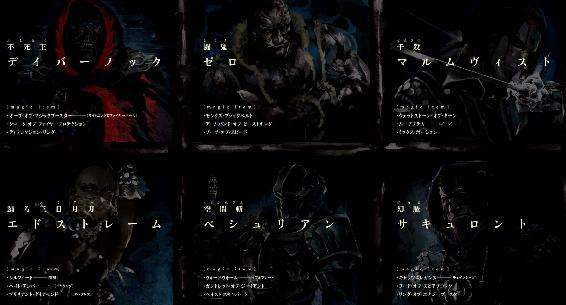
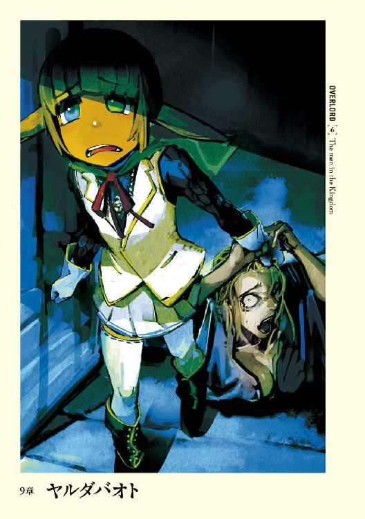

| オーバーロード6 王国の漢たち ［下］ | |
| 丸山 くがね | |
| KADOKAWA / エンターブレイン (2017) | |

本作品の全部または一部を無断で複製、転載、配信、送信すること、あるいはウェブサイトへの転載等を禁止します。また、本作品の内容を無断で改変、改ざん等を行うことも禁止します。
本作品購入時にご承諾いただいた規約により、有償・無償にかかわらず本作品を第三者に譲渡することはできません。
本作品を示すサムネイルなどのイメージ画像は、再ダウンロード時に予告なく変更される場合があります。
本作品の内容は、底本発行時の取材・執筆内容にもとづきます。
本作品は縦書きでレイアウトされています。
また、ご覧になるリーディングシステムにより、表示の差が認められることがあります。
１
下火月［九月］三日 17:44
ゆっくりと応接室の扉が開いていく。
しっかりと油が差されている扉は、なめらかに開いていくはずなのに、今はやけに重く、内外に気圧差があるような遅さで動いていた。まるでセバスの心中を察知したような速度だ。
本当に察知してくれるのならば、開かないで欲しいところだが、現実には扉は開かれ、セバスの視界に応接室が映る。
普段と変わらない部屋には、普段はいない異形の者たちが四名待ち構えていた。
一人はライトブルーの武人。冷気を放つオーラを解除して、白銀のハルバードを手に、不動の姿勢を維持している。
一人は悪魔。皮肉げに歪んだ顔に、どのような心の内を隠しているのか。
そして悪魔に抱かれた、枯れた枝のような羽を生やした胎児にも似た天使。
そして最後は──
「遅くなりまして申し訳ございません」
震えそうになる声を意志の力でねじ伏せ、セバスは拝礼にも似た、深いお辞儀を応接室でただ一人座る存在に向ける。ナザリックの家令を兼任する執事というほぼ最高の地位に位置するセバスが、畏敬と畏怖によって頭を垂れる人物など他でもない。
絶対の存在たる〝至高の四十一人〟が内、一人。
──アインズ・ウール・ゴウン。
極大級の戦闘能力を持つナザリック地下大墳墓の支配者。その手には黒いオーラを放つスタッフ・オブ・アインズ・ウール・ゴウンが握られていた。
空虚な眼窩には、ぼんやりとした赤い光が灯っている。それがセバスの全身を上から下まで舐めるように動くのが、頭を下げたままの姿勢を保つセバスにも伝わった。
アインズが面倒そうな素振りで、オーバーに手を振るのを空気の振動から感じ取る。
「......よい。気にするな、セバス。これは連絡無しに来た私の落ち度だ。それより、そのような所で頭を下げていてもしょうがなかろう？ 早く部屋に入って来い」
「はっ」
重々しい声に、頭を下げたままのセバスは反応し、頭を上げる。それからゆっくりと一歩踏み出し──ゾクリと背筋を震わせる。
鋭敏な感覚で、巧妙に隠された殺意と敵意を感じ取ったためだ。
視線をゆっくりと動かす。その先にいる二人の守護者は、セバスに注意を払っているようには見えない。ただ、それはあくまでも常人の目には、だ。
セバスは十分に察知している。
張りつめた空気に友好的なところはなく、まるで真逆。二人の守護者の油断ない態度は味方に向けるものではなかった。
二人の態度の理由が理解できるセバスは、体内から響く激しく脈打つ心臓の音が、この場にいる皆に聞こえているのではと思うほどの重圧を感じていた。
「そこで止まった方が良いと思うがね」
デミウルゴスの涼しげな声がセバスの足を止める。
その場所は主人から少々離れていた。もちろん言葉を交わすのに不都合な遠さではなく、部屋の広さや上位者との謁見という状況を鑑みれば、概ね適度な距離と言えただろう。しかし、今までのアインズであれば遠いからもっと近寄れといったはずだ。今回その言葉がないことが、距離以上の隔たりを感じさせ、セバスの背中に重くのしかかる。
同時にこの距離が、武人コキュートスの最適な攻撃距離だということも重圧の理由だった。
ちなみにソリュシャンはセバスと共に部屋に入ったものの、扉のすぐ脇で待機している。
「さて──」骨の指でどうやっているのかは不明だが、パチリとアインズは指を鳴らす。「まずはセバスに問おう。何故、私がこの場にいるか、説明する必要はあるか？」
理由はたった一つ。それはこの状況が十分に物語っている。
「......いえ、必要はございません」
「ならばお前の口から聞きたいものだな、セバス。報告は受けていないが、最近、何か可愛いらしいペットを拾ったそうじゃないか？」
──やはり。
セバスは背中に氷柱を突き立てられた気分を抱く。そして自分が主人に返答していないことを即座に思い出し、慌てて声を張り上げる。
「──はっ！」
「......返事が遅れたな。セバス、もう一度聞こう。可愛らしいペットを拾って飼っているらしいじゃないか」
「はっ！ 飼っております！」
「よし。それではまず、聞かせてもらおう。何故、私に報告をしなかった？」
「はっ......」
セバスは微かに肩を震わせながら、じっと床を見据える。なんと言えば最悪の事態に発展しないで済むのか。
セバスが何も言わずに黙っているのを眺めながら、アインズはゆっくりとイスにもたれかかる。ギシィという音がやけに大きく部屋に広がった。
「どうした、セバス？ 酷く汗をかいているようだな。ハンカチなら貸してやるぞ？」
アインズはオーバーなアクションで、どこからか純白のハンカチを取り出す。人差し指と中指で挟んだハンカチを、セバスのほうに無造作に放った。机越しに投じられたハンカチは途中で広がり、ファサッという擬音が相応しいような動きで床に落ちた。
「使うことを許可しよう」
「はっ！ ありがとうございます！」
セバスは一歩だけアインズの元に近寄ると、落ちたハンカチを拾い上げる。それからセバスは逡巡する。
「......それにお前のペットの血がついているなどということはない。単に汗が見苦しかっただけだ」
「はっ......お見苦しいものをお見せして、申し訳ありませんでした」
セバスはハンカチを広げると、自らの額に浮かんだ冷や汗を拭う。ハンカチが想像もしなかった量の汗を吸い込み、色を変える。
「さて、セバス。私は王都にお前を派遣するに当たり、ありとあらゆることを記載してナザリックに送れと命じた。それはどの情報に価値があり、どの情報がゴミかを判断するのは、一人では困難だからだ。実際、お前から送られた書類に書かれていることは、街の噂レベルから書かれているな？」
「はい。その通りでございます」
「では、デミウルゴス。確認のためお前にも聞こう。セバスより上がってきた書類はお前にも読ませたからな。その中に可愛らしいペットのことは記入されていたか？」
「いえ、アインズ様。数度繰り返し読みましたが、そのような記載は一切発見できませんでした」
「よろしい。改めて、セバスよ。それを踏まえて聞かせてもらおう。何故に報告書に上げてこなかった？ ......私の命令を無視した理由を聞きたいのだ。このアインズ・ウール・ゴウンの言葉はお前を縛るには相応しくなかったのか？」
その言葉が室内の空気を大きく揺らす。
セバスは慌てて、必死に言葉を発した。
「滅相もございません。あの程度のことはアインズ様にご報告するまでもないと、私が勝手に考えたためです」
室内に沈黙が落ちる。
セバスの全身には突き刺さるように殺気が四つ。発生源はコキュートス、デミウルゴス、デミウルゴスに抱かれた天使、そしてソリュシャンのものである。主人の一声で、即座に四者がセバスに襲い掛かるのは間違いないだろう。
死ぬこと自体に恐れはない。ナザリックのために死ぬのは最大の喜びだ。しかしながら裏切り者として処分されるとなると、豪胆なセバスですら身が震えあがる。
至高の四十一人に創造された存在が、裏切り者として処分されるなぞ、恥辱の極み以外の何物でもないのだから。
セバスの額に大量の汗が噴出するだけの時間が経ってから、アインズが口を開く。
「......つまりはお前の愚かな判断だった......というわけだな？」
「はっ。その通りでございます、アインズ様。私の愚かな失態をお許しください！」
「......ふむ。なるほど......理解した」
頭を垂れ、謝罪したセバスの元に、感情を一切感じさせないアインズの声が届く。即座に処分という判断にならなかったため、僅かながら室内の空気が元に戻る。
だが、セバスは安堵できなかった。なぜならその前にアインズが、セバスの心臓を跳ね上がらせる一言を口にしたからだ。
「ソリュシャン。セバスのペットを連れて来い」
「畏まりました」
ソリュシャンが動き、静かに扉が閉められる。セバスの鋭い知覚能力は扉の向こうでソリュシャンがゆっくりと離れていくのを感じ取った。
ごくりとセバスの喉が唾を飲み込む。
この場にはアインズ、コキュートス、デミウルゴスの三名と異様な天使の計四名の異形の者がいる。デミウルゴスはそこまで異形ではないとはいえ、他の三者は一目瞭然だ。
姿を隠す気配がないのは見られたところで問題がないからか。
ナザリック地下大墳墓に所属する者が口封じを選んだとしたら、対象の抹殺以外ありえない。
もっと早く、彼女を解放するべきだった。
セバスは心の中で頭を振る。今更そんなことを考えても遅すぎる。
やがて遠くの方からこの部屋に向かってくる、二つの気配をセバスは感じ取る。
──どうするか。
セバスの視線が動き、中空を見つめる。
彼女がここに来たら、セバスは決断しなくてはならない。たった一つしかない答えを。
視線はセバスを観察し続けるデミウルゴス、そしてアインズへと動く。それから最後に力なく床へと落ちた。
扉がノックされ、開かれる。姿を見せたのは当然のことながら二人の女性。
ソリュシャンとツアレだ。
「連れて参りました」
ツアレが入り口で小さく息を飲むのが、背中を見せたままのセバスにも聞こえる。悪魔を具現した姿を取るデミウルゴスを見て驚愕したのか。ライトブルーの巨大な昆虫であるコキュートスを見て戦慄したのか。おぞましい赤子のような天使を見て恐怖したのか。死を象った存在たるアインズを見て畏怖したのか。はたまたその全てか。
守護者たちの不快感はツアレを前に強くなる。ある意味、ツアレこそがセバスの罪の形なのだから。向けられた敵意にツアレの体が震えたようだ。
この世界における絶対者である守護者からの敵意は、脆弱なあらゆる存在を根源から怯えさせる。ツアレが泣き出さないのは驚くべきことだ。
セバスは振り返らないが、自分の背中にツアレの視線が向けられているのは十分に感じ取れる。彼女の勇気の源泉は、セバスがそこにいるということなのだ。
「デミウルゴス、コキュートス。止めろ。ヴィクティムを見習え」
アインズの静かな声が響き、室内の空気が変化する。いや、ツアレに向けられていた敵意がかき消されたというべきだろう。守護者二名を窘めたアインズは、ゆっくりと左手をツアレに向けて差し出す。それから手のひらを天井に向けると、ゆっくりと手まねきをした。
「入りたまえ。セバスの拾ったペットたる人間。──ツアレ」
その言葉に支配されるように、ツアレは一歩、二歩と震える足で室内へと入る。
「逃げないとは勇気がある。それともソリュシャンに言われたか？ お前次第でセバスの運命が決まるとでも？」
カタカタと震えるツアレはそれには何も答えない。セバスは自らの背中に向けられた視線がより強くなるのを感じる。それは言葉以上に雄弁にツアレの思いをもの語る。
室内に入ったツアレは、迷うことなくセバスの横に並ぶ。コキュートスがゆっくりと動き、ツアレの背後に控えるように立った。
セバスの服の裾をツアレが摑む。ふと、セバスはあの路地で摑まれたときのことを思い出す。それと同時に、もっと賢く振る舞えばこのようなことにはならなかったという後悔の念を抱いた。
ツアレをデミウルゴスは冷たく見据え──。
『ひざ──』
──ぱちりと指を鳴らす音がした。
口を開きつつあったデミウルゴスは、指を鳴らした自らの主人の意志を即座に理解し、それ以上の言葉を発することをやめる。
「──よい。よいのだ、デミウルゴス。私を前に逃げない勇気を讃え、ナザリックの支配者たる私の前での無礼を許そう」
「申し訳ありませんでした」
デミウルゴスの謝罪にアインズが鷹揚に頷いた。
「ああ」ギシリと背もたれに寄りかかられたイスが音を立てる。「まずは名乗るとしよう。私の名前はアインズ・ウール・ゴウン。そこにいるセバスの支配者だ」
その通りだ。
アインズ・ウール・ゴウン──至高の四十一人は、セバスの全て、生死すら支配する方々。
絶対なる主人にそう宣言されることは、最大の歓喜である。ただ、どうしてか、思ったよりも歓喜の度合いが小さく、背筋を震わせる程度だった。ツアレがいるからではない。その一瞬だけ、ツアレの存在すら忘れかけたのだから。もっと別の──。
セバスがそんな思いを浮かべている間にも会話は続く。
「あ、......わ、わたし......」
「よい、ツアレ。お前のことはある程度知っている。そしてそれ以上の興味は私には無い。お前はそこで黙って立っているがいい。お前を呼んだ理由は後ほど分かる」
「はっ......はい」
「さて......」アインズの空虚な眼窩に浮かぶ赤い光が動く。「......セバス。私は聞きたいのだ。お前には目立たないように行動しろといったはずだな？」
「はっ」
「にもかかわらず、下らない女のために厄介ごとを招いた。──違うか」
「間違っておりません」
下らないといったところでツアレの体がピクリと動くが、セバスは反応せずに答える。
「それは......私の命令を無視する行為だとは思わなかったか？」
「はっ。私の浅慮がアインズ様のご不快を招いたことを深く反省し、このようなことが二度と起こらないよう、十分な注意を重ね──」
「──よい」
「はっ？」
「よいと言った」アインズが姿勢を変え、再びギシィとイスが音を立てる。「失態は誰にでもあることだ。セバス、お前のつまらない失態を私は許そう」
「──アインズ様、感謝いたします」
「しかし、だ。失態は償わなければならない。──殺せ」
部屋の空気が張り詰め、数度温度が下がったようだった。いや、違う。そう感じたのはセバス一人だ。他の──ナザリックに所属する者たちは平然としたままだ。
セバスは唾を飲む。
何を殺せというのか。そんなことは尋ねるまでもない。それでもやはりという思いと、あって欲しくないという思いが、セバスの口を重くではあったが開かせる。
「......なんと......おっしゃいましたか......」
「ふむ......その失態の元を消去し、セバスのミスは無かったことにしようというのだ。まさかミスの原因がそのままでは、他の者に示しがつかないだろ？ お前はナザリックの執事、上に立つべき存在だ。それがこのままにしていてはな......」
セバスは息を吐く。そして再び吸う。
強敵を前にしても決して乱れることの無いセバスの息が、小動物が捕食者を前にしたときのように乱れていた。
「セバス。お前は至高のお──四十一人に従う犬か？ はたまた己の意志を正しいとする者か？」
「それ──」
「──答える必要は無い。結果でそれを私に見せよ」
セバスは目を閉じ、そして開く。
迷いは一瞬。いや、一瞬という長い時間を迷う。コキュートスやデミウルゴス、ソリュシャンという至高の存在に忠実な者たちが敵意をみせるには十分な時間を躊躇する。
それだけの時間を得て、ようやくセバスは結論を出した。
セバスはナザリックの執事。
それ以外の何者──でもない。
自らの愚かな逡巡がこの結果を生み出したのだ。もしもっと前に許可を仰いでいれば、このような結末は待っていなかっただろう。
全て己の所為である。
セバスの瞳は硬質の光を帯び、鋼の輝きを灯す。そしてツアレへと向きを変える。
ツアレの摑んだ指が離れる。一瞬だけ彷徨うように空を泳ぎ、力なく垂れる。
ツアレはセバスの顔を見て、セバスの決定を理解したのだろう。
微笑むと、目を閉じた。
その表情は絶望でも、恐怖でもない。今から起こることを受け入れ、認める。そういった殉教者のごとき表情だ。
セバスの動きにも動揺はない。もはやセバスの心は深く沈められている。そこにいるのはナザリックに鋼のごとき忠誠を尽くす、一人のシモベの姿だ。ならば、主人から与えられた絶対の命令に従わない理由が無い。
断ち切られたのは迷い。あるのは忠義の一念。
セバスの拳は硬く握り締められ、唯一の慈悲たる瞬殺の速度を以てツアレの頭部めざし走る。
そして──
──拳は硬質のものに受け止められる。
「──何を？ 邪魔をするとはどういうことなのですか？」
「────っ」
「............」
ツアレの頭部を消し去るためにセバスが放った拳は受け止められていた。
コキュートスの腕の一本が、固く目を閉ざしたツアレの後ろから突き出され、セバスの拳を止めたのだ。
至高の存在からの命令による一撃を止めるとは、コキュートスの叛意を示す行為なのか。
しかしながらセバスの中に生まれた疑問は即座に解消される。
「セバス、下がれ」
苛立ちと戸惑いを覚えながらも二撃目を繰り出そうとしていたセバスはアインズの言葉を聞き、拳に込められていた力を抜く。コキュートスに対する叱咤ではなく、セバスを抑止する言葉。つまりはコキュートスがセバスの攻撃を受け止めたのは、元々そういうことだったということだ。
出来レースである。要はセバスの意志の確認こそが狙いだったのだ。
薄目を開けたツアレは自らの前にあった断頭台が遠ざかったことを認識したのだろう。命の危険が去ったことによって緊張の糸が切れたツアレは、涙目で体を震わせる。ガクガクと足が震え、倒れそうになっているが、セバスは支えたりはしない。いや、出来ない。
今更何をしろというのか。彼女を見捨てた者が。
ツアレが怯えているのを無視し、アインズとコキュートスは会話を始める。
「コキュートス。先のものは確実にその女を死に至らしめる攻撃だったか？」
「間違イゴザイマセン。即死ノ一撃デス」
「ならばこれを以て、セバスの忠誠に偽りなしと私は判断する。ご苦労だった、セバス」
「はっ！」
硬い表情でセバスは頭を下げる。
「──デミウルゴス、異論はあるか？」
「ございません」
「コキュートス」
「ゴザイマセン」
「......ヴィクティム？」
「ひとにひあおむらさきちゃはい」
「よし。ならば次の話に移るとしよう」
ぱちりとアインズは指を鳴らすと、立ち上がり、横薙ぎに手を一閃させる。反動でローブがブワサッとはためいた。
「セバスたちの働きによって、十分な情報は集まったと判断した。ここに長くとどまる理由ももはや無い。これより屋敷は引き払い、ナザリックに撤退するものとする。セバス、女の処分はお前に一任する。忠義を確かめた以上、どのようにしようとも私から言うことは無い──と言いたいところなのだが、解放する前に少し検討すべきだな。ナザリックのことを好き勝手に話されるのは厄介だと思わないか、デミウルゴス？」
「その通りかと思います。未知の敵が存在する以上、できる限り私たちに関する情報の流出は避けるべきかと」
「では、どうすべきだ？」
「......一応、確認を取るべきではないでしょうか？」
「そうだな。......セバス、ツアレの処分はもう少し待て。殺害は無いと思われるが、絶対ではないと知れ」
ツアレの処分がどうなるか不明だというのは、ナザリックの最高責任者であるアインズでさえ、即座に判断しかねる問題なのかとセバスは驚きを隠しきれない。
「アインズ様。私のミスでこの館を──王都から撤退をするのでしょうか？」
「......そうでもあるし、そうではないとも言える。先にも述べたように、この辺りで得るべき情報は粗方得たと判断した。これ以上ここに潜っているメリットはあまり無い。撤退した方が安全という計算からだ。デミウルゴス、ヴィクティムは私が連れ帰る。寄こせ」
デミウルゴスから赤子の天使──ヴィクティムを受け取ったアインズが魔法を発動させる。
「〈上位転移〉」
魔法を発動させると同時に、アインズはローブを舞台役者のように大袈裟に翻した。そして漆黒の塊が内側に向かって収縮するように、その姿は瞬く間に搔き消える。
セバスは今まで見たことも無いような、妙に演出じみた退出の仕方に少しの間呆気にとられた後、ハッと我に返った。
「ところで、彼女は疲労している様子。少しだけ部屋で休ませようと思います。私が連れて行きますが、問題はもはや何も無い。そうですよね、デミウルゴス？」
「......そうだね。セバスの言うとおりだ」
デミウルゴスは悪魔的な微笑を浮かべ、どうぞというように扉へと優雅に手を向ける。
「ただ、場合によっては再び呼び出されることを念頭においておいた方が良いと思うね。心配はいらないとは思うが、この王都でキツネ狩りなどしたくはないからね」
「ついてきなさい」
「......はい」
かすれ声でツアレは応えると、セバスに続いてよたよたと歩き出す。
部屋を出て、廊下に二人分の足音が響く。互いに言葉なく歩き、やがてツアレの部屋の扉が見えてくる。それほどの距離でもなかったはずなのに、随分長い時間歩いたように感じられた。
扉の前まで来て、ようやく決心がついたようにポツリとセバスが呟く。
「謝罪する気はありません」
後に続くツアレの体がピクリと小さく跳ねるのが、セバスには感じ取れた。
「ただ、あなたの処分が命じられたのは私のミスです。もし、もっと別の手段を取っていれば、このような結果にはならなかったでしょう」
「......セバス様」
「私はアインズ様──そして至高の四十一人の忠実な下僕。仮にもう一度、同じようなことがあったとしても、同じ行動を取るでしょう。......ですからあなたは人の世界で幸せになりなさい。そうできるように頼んでみます。......記憶の操作をアインズ様は行えるはず。悪い記憶は全て消して、そして生きなさい」
「......セバス様のことは？」
「......私の記憶も消してもらいましょう。覚えておいてもいいことは無いでしょうから」
「いいことってなんですか？」
ツアレの言葉に含まれた強い意志を感じ、セバスは振り返る。
セバスを迎撃したのは、涙目ではあるが、強く睨むような目をした女性であった。僅かに動揺しつつも、説得の言葉を考える。
確かにナザリックは非常に素晴らしい場所であり、まさに神の祝福を受けた場所である。しかし、それは至高の四十一人によって創造されたセバスやその他の者たち、そしてナザリック地下大墳墓のシモベだから思えることだ。
才能も、能力もないつまらない人間にとって、あの地が救いになるとは到底思えない。そしてあの地が弱き人間という、命の価値が低い存在を受け入れるとは思えない。そう、絶対の主人の守護なく。だからセバスは告げる。
「......人の世で幸せになれと言っています」
「私の幸せはセバス様と一緒のところにあります。ですから連れて行ってください」
はっきりと言い切るツアレに、セバスは哀れみを感じた。
「......ちょっとした出来事に幸せを感じているようですが、地獄で心が麻痺してしまっただけです」
最悪を見ているからこそ、多少ましになった劣悪な場所でも幸せだと感じているに過ぎない。セバスはそう判断したのだ。しかしながらツアレはそんな考えを笑う。
「......私はここが地獄だなんて思えません。おなか一杯に食事ができて、まともな仕事が与えられました。......私は小さい村に生まれ、育ちました。そこの生活だって厳しいものでした」
ツアレの目が一瞬だけ遠くを見るように動く。それはすぐに元に戻り、セバスを正面から見据えた。
「おなかをキュウキュウ減らしながら畑を耕しても、実った作物は殆ど領主に持っていかれる。自分の口に入るものなんか、殆ど残らないんです。その上、領主からすると、私達なんておもちゃなんです。悲鳴を上げたって笑いながら犯すんですから。笑っているんですよ。わたしはあの──」
「──分かりました」
引きつった笑いを浮かべるツアレを引き寄せ、セバスは胸の中にすっぽりと収め、震える肩を優しく抱いた。あの時と同じように、堰を切ったように泣き出したツアレの涙が服にしみこんでいくのをセバスは感じる。
彼女の見てきた、生きてきた世界が全てであるはずがない。ただ、それでもツアレにとっての人の世界とはそういうものだったということだ。
セバスはじっと考える。
何が最善か。考えても出る答えは一つしかない。しかしそれは主人を激怒させ、ツアレの殺害という命令が出される可能性も高い。
「死ぬかもしれませんよ？」
「セバス様に殺されるのであれば、あそこで死ぬだけだった私に温もりをくれた方になら......」
見上げたツアレの顔に浮かんだ表情に、セバスも決意する。
「分かりました、ツアレ。ナザリックにあなたを連れて行くことをアインズ様にお願いします」
「ありがとうございます」
「感謝はまだ早いです。懇願した結果、あなたを殺せと──」
「──覚悟しています」
「そう......ですか」
セバスはツアレの肩に回していた腕から力を抜くが、ツアレは離れようとはしない。ぎゅっとセバスの服を摑んだまま、濡れた瞳でセバスを見上げていた。
瞳には何かを期待している色がある。セバスはそう直感するが、何を期待しているのかまでは分からない。ただ、確認すべきことを思い出す。
「一つだけ、確認を。人の世界に未練は無いのですか？ 帰りたいと思うところはないのですか？」
ナザリックに招かれたからといって、人間社会と永久に関係を持てないということはないだろう。別に監禁する目的で連れて行くのではないのだから。しかしながらそうなる可能性だってないわけではない。
「......妹......に会いたいという気持ちは少しあります。でももう昔を思い出したくはないという気持ちの方が強いので......」
「分かりました。では、あなたは部屋に入りなさい。私はアインズ様にもう一度お会いしてきます」
「はい──」
ツアレはセバスの服を摑んでいた手を離し、腕を巻きつけるようにセバスの首に回す。
表情には一切表さないものの、どうしようと混乱するセバスを無視し、ツアレはつま先立ちをする。
そしてセバスとツアレの唇が重なる。
優しく重なっていた時間はほんの一瞬だ。直ぐにツアレの唇は離れる。
「ちくちくしました」ツアレが体を離すと、自分の唇を両手で押さえる。「幸せなキスは初めてです」
セバスは何もいえない。だが、ツアレはセバスを見つめてにっこりと明るく笑う。
「では私はここで待っています。よろしくお願いします、セバス様」
「あ、ああ......わ、分かりました、ちょっと待っていてください」
「どうしたのかな？ 顔が赤いようだが？」
セバスが部屋に戻った時の第一声がそれである。顔が赤いといわれ、セバスは呼吸を深く静かなものへと変える。先ほどの動揺を表に出していては、主人を迎える従者として失格だ。唇へと思わず動きそうになった手を押し留め、セバスは完璧なる従者に相応しい表情を作った。
「何でもありません、デミウルゴス様」
「その敬称は必要ないよ、セバス。先ほどアインズ様──唯一絶対なる御方を前にしていた時と同じように略してくれて構わない。コキュートスはどうだい？」
「私モ構ワナイ」
二人の守護者の言葉にセバスは了解の意思を示した。
それから五分後。空間がぐにゃりと歪む。
歪みが元に戻ると、そこには一人の人物が立っていた。無論、アインズである。先ほどまで持っていたスタッフ・オブ・アインズ・ウール・ゴウンはなく、ヴィクティムもまたいない。
セバス、コキュートス、デミウルゴス、ソリュシャン。部屋にいた四人は一斉に跪き、頭を垂れる。
「出迎え、ご苦労」
アインズは机の後ろに回るとイスに腰掛けた。
「立て」
四人は一斉に立ち上がり、非常に機嫌の良さそうなアインズに視線を送った。
「さてさて。デミウルゴス、お前が心配性だというのはこれで立証されたな。私はセバスが裏切るなんてこれっぽっちも思っていなかったぞ。お前たちは用心しすぎるのだ。大体玉座の間で確認したわけだしな」
「申し訳ありませんでした。それと、アインズ様のご判断に異を唱えた私の詰まらない意見を、認めてくださってありがとうございました」
「構わない。私だって見落としはある。デミウルゴスがチェックをしてくれていると思えば、安心できるというものだ。それに私を心配してくれての発言に、何かをいうほど狭量ではないぞ」深々と頭を下げたデミウルゴスから視線を動かし、「さて、その人間の女の処分についてだったな、セバス」
セバスは緊張に身を固くした。「はっ」と絞り出すように返答してから少しだけ間を置き、アインズの表情を窺ってから、意を決したように問うた。「ツアレをどういたしましょうか」と。
少しばかり沈黙が続き、問いかけるように言葉が発せられた。
「えっと、あの女性を解放した場合、我々ナザリックの情報が漏れる、だったか」
デミウルゴスはアインズの視線を受け、頷いた。
「はい。左様ですが、どういたしますか？」
「なら記憶を弄ってしまおう。その後で......金でも渡して適当な場所に放り出せばよい」
「アインズ様、殺してしまう方が楽ですし、確実かと思われます」
デミウルゴスの意見に、ソリュシャンが同意するように首を縦に振った。アインズはそれを見て僅かに考え込んだ。二人も同じ意見だとすると......というところである。
セバスは内心非常に慌てた。
主人が決定してしまったら、それを変更させるのは容易いことではない。許されたとはいえ、デミウルゴスやコキュートス、ソリュシャンのセバスに対する好感度は下がっているはず。もし下手に反対意見を口にしたら、確実に不快感を与えるだろう。
しかし、ここは発言すべきだ。
セバスはデミウルゴスに反対する意見を述べようと口を開きかける。しかし、それを発することは無かった。というのもその前にアインズが口を開いたからだ。
「......よせ、デミウルゴス。なんの利益も無く殺害行為を行うのはあまり好きではない。というより弱者を殺すと、後で利用できなくなるからな。生きていれば何かに使える可能性もあるということを考慮すべきだろう」
安堵の息をセバスは殺す。まだツアレの扱いが決定していない。ならば可能性はある。
「畏まりました。......では私が支配している飼育場で働かせますか？」
「ああ、混合魔獣を飼っているんだったな。ちなみに潰して食料にしたりはしないのか？ ナザリック内の食料事情も良くしないといけないからな」
デミウルゴスの視線が混合魔獣ステーキ......いやハンバーグと呟いているアインズから逸れ、どこか遠くを見るようなものへと変わる。それから再び戻ってきた。
「......肉質が悪く、食料としては不合格ラインかと。栄えあるナザリックで使用するには......」オススメできないとデミウルゴスは微笑んだ。「まぁ、死んだ家畜は潰して、他の家畜に食べさせております。そのままだと食べないので、ミンチにしてですが」
「ふーむ、同族を食べるのか。所詮は畜生の類か」
「まさにおっしゃる通りでございます、アインズ様。そんなところが愚かで可愛らしい玩具でもあるのですが。ただ雑食性でして小麦なども食べますので、余った麦などがありましたら頂けますでしょうか？ 奪ったものだけでは少々足りない状況下でして」
「大切な羊皮紙の供給源だ。飢えさせるのは本意ではないな。そうだな......セバス、撤収する前に小麦を大量に買い込み、デミウルゴスに渡してやってくれ」
「畏まりました。大量にということですと、一時的に倉庫を借りて、そこにため込もうと思います。そこからナザリックへの運搬はどのようにいたしましょうか？」
「そうだな......シャルティアを呼んで、〈転移門〉を使わせてナザリックまで運ぼう。そこからはデミウルゴス、任せて構わないか？」
「はい。そこからは私どもで運びます」
「よろしい。ところでデミウルゴスよ、お前の働きはまさにナザリック随一のものであり、感謝の思いにたえない」
「ありがとうございます、アインズ様！ その一言でこのデミウルゴス、励まされます！」
「......ああ、まぁ、落ち着け。それで聞きたいのだ。仕事を抱え込みすぎて大変ではないか、と。何かあるたびに呼び戻し、羊皮紙安定供給のための飼育場の運営、魔王作成の準備など、重要な案件を幾つも任せているが、大丈夫かなと思ってな」
デミウルゴスが満面の笑みを浮かべる。セバスが見たこともないような、邪気のない好感を覚えるそれを。
「不肖なる身をご心配いただき誠にありがとうございます。ですが、ご安心ください。どれも非常にやりがいのある仕事であり、負担になるほどのことでは今のところありません。もし、必要があると判断した場合は、助勢を賜りたく思いますので、その折にはよろしくお願いします」
「そうかそうか」
主人の嬉しげな声を聞きながら、デミウルゴスの言う飼育場の正体について思いを馳せて、セバスは内心で眉を顰めた。
同じナザリックで至高の方々に仕える身として、デミウルゴスの性格は熟知している。あのデミウルゴスが単なる飼育場を経営するわけが無い。それがたとえ、混合魔獣のようなモンスターだとしても──。
セバスの脳裏に鮮烈なものが走った。
デミウルゴスが何を飼育しているのか推測できたからだ。
そんな場所にツアレを送り込むことが出来るだろうか。確かにツアレの身の安全をデミウルゴスも保証するだろう。しかし、彼女の精神の安全までは保証しないはずだ。
二人の会話が一息つく。口を挟むならばこのタイミングしかない。セバスはそう判断し、主人に語りかける。
「──アインズ様」
「ん？ どうした、セバス」
「もしよろしければ──」息を飲む。これは賭けだ。非常に危険な賭け。それでも踏み出すしかなかった。「ツアレをナザリック地下大墳墓内で働かせたいと考えております」
静寂が生まれ、全員の視線が集まる中、アインズがセバスに静かに問いかけた。
「前にコキュートスにも聞いたことがあったが......セバスよ、メリットはなんだ？」
「はい。まず、ツアレは食事を作れます。ナザリックでは料理が出来るのは現在、料理長と副料理長の二人のみ。ユリなどは例外にさせていただきます。今後のナザリックのことを考えると、もう少しは料理が出来る者がいた方がよろしいかと考えます。さらに人間が働いているというテストケースを作ることにも十分なメリットが考えられます。人間という劣った生き物でもナザリックで働けるというアピールは、非常に良い前例として使えるのではないでしょうか？ 他にも──」
「──わかった、わかった、セバス」
濁流のようにツアレの有用性をアピールするセバスに対し、アインズは手を上げてそれを止める。
「わかったぞ、セバス。お前の言いたいことはよくわかった。確かに料理出来る者が少ないというのは考慮すべき点だと私も思っていた」
「しかし、アインズ様。彼女はナザリックに相応しい料理が作れるのでしょうか？」
セバスは一瞬だけデミウルゴスを鋭く睨む。そんなセバスに対して、デミウルゴスは微笑をみせた。
嫌な奴だ──セバスは口の中で言葉を殺す。
アインズが許したといっても、デミウルゴスはセバスを許してはいない。だからこそ、ツアレの処分をセバスの望まない形に落とそうとしているに違いない。
「その言ももっともだな。それでどうなんだ、セバス？」
「......ツアレが作れるのは家庭料理のようです。ナザリックに相応しいかといわれると......お答えするのが難しいかと」
「家庭料理ですか。ジャガイモを蒸したような食事をナザリックで出すことは無いと思いますが」
「デミウルゴスの考えは早計だと言わざるを得ません。というのも、家庭料理が出来るということは、料理長に請えば他の料理もマスターできるということ。今ではなく将来を見ておくべきでしょう」
「それなら私の牧場で、料理を作るのに協力して欲しいものだね。ミンチを作るのも大変なんだよ？」
「私は──」
騒がしい二者の会話。それをアインズは眺める。
そして、その奥に浮かぶ光景を。彼らの創造主たちの姿、在りし日の幻を──。
•
「で、今日は何処に行きますか？」
「炎の巨人を──」
「氷の魔竜を──」
「......ふぅ。ウルベルトさん、炎の巨人のボス、スルトのレアドロップを取りに行こうという話が前にあったのを覚えていないのですか？」
「たっちさんこそ覚えていませんね。魔竜狩りをやっていかないと特殊クラスへの転職条件が揃わない人がいるんですけど？」
「......それはそうですが、レアドロップだってやまいこさんの強化には必要なものなんですよ？」
「あ、ボクは別にいいけ......」
「原初の炎ですか？ ならば原初の氷だって必要になるでしょ？ なら先に魔竜狩りを」
「......課金して今ドロップ率が高くなってるんです。魔竜よりもスルトの方が標準ドロップ率低いんですから、先に片づけた方が良いと思いませんか？」
「だったら私が今度、課金しますよ？」
「......けど、ど、ど......」
「......サキュバスとかのエロ系モンスター狩りに深淵に潜るのは？」
「弟、黙れ」
「悪魔系なら七大罪の魔王討伐ぐらいしに行きたいね。結構色々と準備がいるとは思うけどさ」
「......たっちさん、我が儘言うべきじゃないと思います。今集まってるメンバーを見れば氷の魔竜を退治に行ったほうが効率が良いでしょ？」
「いや、我が儘言ってるの、ウルベルトさんですよ。だいたい私達は別に効率だけを考えてゲームをしてるわけじゃないんですから」
「魔法職最強と戦士職最強が喧嘩すんなよ......」
「あの二人は昔からああだから。私が声をかけられた時からあんな感じ」
「ピンクの肉棒に話しかけるなんて、たっちさんは偉大だよなぁ」
「......茶釜さんもペロロンチーノさんも武器構えるの止めようね？ ギルマス特権使うよ？」
「七大罪の魔王ってどっかのギルドが攻略してなかった？」
「傲慢は退治されたらしい。ネットにアップされてた」
「七大罪全部倒したら、確実に世界級アイテム手に入りそうですよねー。世界級エネミーですもん」
「世界級アイテムといえば、〝熱素石〟をメインコアにした最強ゴーレムを作りましょうよ」
「ぬーぼーさん。それよりは武器の方に埋め込んだ方が良いと思いますけど？」
「個人的には鎧も悪くないと思いますけどね」
「まぁ、その辺は色々と考える必要がありますよね。運営お願いも出来るタイプのアイテムですし、もうしばらく考えてもいいでしょう」
「ですねー、モモンガさん」
「〝熱素石〟を何度も手に入れる方法は分かりましたけど、隠し七鉱山から採れる金属を大量に消費しますからねぇ」
「独占しようと考えない限り、絶対に手に入らないなんて頭痛いよな」
「そうですね。各ギルドがそれぞれを分割して管理している段階で、使ったら二度と手に入らないでしょうからね。仲良く順番にというわけには行かないでしょうしね。......トリニティとかに情報売ってみたらどうです？ 欲に駆られた者たちがぶつかるでしょうから、横から奪いましょうよ」
「〝連合〟にも売って、ぶつかり合わせるんですか？ 流石はぷにっと萌えさん、策士ですなぁ」
「〝連合〟といったら、またアライアンスを組むことを計画してるみたいですよ？」
「え？ そりゃなんで？」
「なんとかとかいうギルドが手に入れた世界級アイテムを強奪した所為で、向こうさんのギルドが方針を変換したためだそうですよ」
「あちゃー。でも前のように上位ギルドアライアンスは難しいでしょうね」
「──ならモモンガさんに決めてもらいますか？」
「それが良いでしょう。ギルド長どうします？」
「......え？ なんです？ 思いっきり話を聞いてなかったんですけど......え？ ああ、そこで振りますか？ ......全く。......ならいつも通り後腐れ無しの多数決で決めましょうか」
「異存はありません」
「こっちもです」
「じゃあ、新金貨はウルベルトさん。旧金貨はたっちさんでやりましょうか。はーい、皆さん、金貨を手に持ってください。これから二人の説明が始まりますよー」
•
「──イイ加減黙レ、アインズ様ノ御前ダゾ！」
徐々に白熱し始めたセバスとデミウルゴス。その二者にコキュートスが冷や水を浴びせる。
二人を凝視しているアインズを振り返り、両者共に顔色を変える。虚ろな眼窩で揺れる炎に感情の色を見出す事はできないが、その視線に強い力が込められていることは間違いがなかった。
激しい叱咤が飛んでもおかしくは無いと判断した二人は同時に行動する。
「アインズ様の前で、失礼しました！」
「愚かな行為をお見せして申し訳ありません！」
頭を下げて謝罪した二人に対する反応は、非常に不可解なものであった。
「──あははは！」
室内に突然、笑い声が響く。非常に楽しげな明るいものだ。
ここまで機嫌よくアインズが笑い声を上げた記憶は無く、コキュートスもデミウルゴスもセバスもソリュシャンも、全員があまりに信じられない光景に目を白黒させる。
「構わないとも。許す、許すぞ！ そうだ！ そうやって喧嘩をしないとな、あははは」
何がアインズの琴線に触れたのかはさっぱり不明ではあるが、セバスはとりあえず何とかなるかも知れないと安堵の息を誰にも気付かれないように吐く。
「あはは......ちっ、抑制されたか......」
突如、糸が切れたように、雰囲気を落ち着かせる主人だが、僅かではあったが機嫌よさそうにしているのはセバスの見間違えではないだろう。アインズは朗らかにセバスに話しかける。
「セバスの言いたいことは分かったが、残念だがナザリック地下大墳墓に人間を招き入れるのは、な。とはいえ、そのツアレという女を見てみたい。連れてこい」
「え？ ぁ──はっ！ 畏まりました！」
アインズの奇妙な発言に内心首を傾げながらも、セバスは即座に部屋を出て、ツアレを連れ戻ってくる。
「アインズ様、連れてまいりました」
「ああ、ここまで連れて──」
アインズが椅子から身を乗り出した。ツアレを凝視するその姿は異様であった。
不快さを抱くような何かがあったのか、とセバスはツアレを横目で観察するが、先ほどと同じであり、主人の態度の裏にある物が何かはさっぱり分からない。
「......似ているな」
ぽつりと漏れ出た呟きは意図してではないだろう。
「......よく来たな、ツアレ。まず、最初に言っておこう。私は基本的に警告を二度以上しない。なぜならその者の選択を尊重するからだ。たとえ結果がその者にとっての不幸だとしてもな。それを踏まえたうえで、お前に質問する。偽りを言えばそこで話は終わりだし、私が望んだ答えでなくても終わりだ」
隣に立つセバスにはツアレが唾を飲み込む音が聞こえた。それはそうだろう。脅しにも似た言葉に、これから何が待つのか不安で堪らないはずだ。
「では、質問だ。お前のフルネームを聞こう」
質問の意図が分からなかった。なぜ、そんなことを聞くのか。
横目で窺ってみれば、ツアレの視線が部屋のあちらこちらへと動いている。その態度が雄弁に物語っていた。
（素直に答えなさい）
セバスは心の中で願う。
セバスにすら告げてないということは、本名に何かある可能性は高い。それでも主人に偽りを告げれば、その先に待つのは最悪の事態だ。
沈黙が続き、焦れるような時間が過ぎてからぽつりとツアレが蚊の鳴くような声で呟く。
「ツ、ツアレ......ツアレニーニャです」
「下の名前は？」
「ツアレニーニャ・ベイロンです......」
「なるほど......。なるほど......。では聞こう、ツアレニーニャ。お前の願いはナザリック地下大墳墓、つまりは我らが支配地に行き、そこで暮らすということでよいのか？ ......ナザリック地下大墳墓は人の生きる世界ではない。いや、生活できないという意味ではなく、人という種族のいない場所だということだ。そのためお前にとって適した場所なのかは不明だ。......私が与える莫大な財を持って、遠く離れた人の地で暮らすという選択肢もあるのだぞ？」
なぜそこまでと、思えるような寛大な提案だった。しかし、ツアレは迷う素振りを一切見せずに答えを返す。
「セ、セバス様と一緒に......暮らしたいです」
アインズはゆっくりと首を縦に振った。空虚な眼窩の中にともった赤き光は奇妙に和らいだものだ。
「良かろう。聞け、我がシモベよ」
全員が一斉に畏まり、慌ててツアレも真似をした。
「アインズ・ウール・ゴウンの名において、ツアレニーニャは今後保護される。ナザリック地下大墳墓の客人待遇として迎えても良いが、お前の希望は？」
「あ、ありがとうございます。で、ですけど、セバス様と一緒に働かせてください」
「......それがお前の望みであるならば。ではツアレニーニャをセバス直轄の仮メイドとする。セバス、彼女に相応しい仕事を与えよ。同時に六連星を七姉妹へと移行し、規定通りチームリーダーを変更。とはいえ、彼女を今の場所より動かすことはしないでユリ・アルファにリーダーを代行させる」
ソリュシャンが頭を深く下げた。
「それとナザリック地下大墳墓の全ての者にツアレニーニャはアインズ・ウール・ゴウンの名で保護したことを伝えよ。それと同時にお前たちと共に働く者だと」
ツアレとアインズを除いた、部屋にいる全ての者が一斉に頭を下げる。
「デミウルゴス、私の決定に異論はあるか？」
「何一つとしてございません。アインズ様のお言葉はナザリック地下大墳墓の法でございます。しかしながら、我らが祝福の地に人間を迎えるということを不可解と思う者も多いでしょう。その者達にはどのように言い含めておきましょう？」
「......冷静に考えてみると、やまいこさんの妹さんであるあけみさんは森妖精だが、ナザリックに歓迎したこともある。別に人間種だから駄目ということはないだろう。そんなことを言ったら──」
アインズは部屋に控えているソリュシャンを見ながら続ける。
「──お前たちの末妹も追い出さなくてはならないからな」
「不老の存在が人間と言えるのかは不明ですが」
「確かにそうだな、ソリュシャン。さて、デミウルゴスよ。私の言葉だと言え。異論がある者は私の前に来るように伝えるのだ。私が説明しよう」
「畏まりました。私からの質問はこれでもうございません」
「では確認する。まずこれより館から撤収を開始せよ。この館に配置した警備兵はすべてナザリックに即刻帰還。セバス、ソリュシャンは王都最後の仕事としてデミウルゴスの要望であった小麦を買い集め、倉庫に移動させよ。集まり次第、シャルティアを送って〈転移門〉で小麦を運搬。以上だな？」
全員が何も言わずに頭を下げ、ツアレも周囲を見渡してから慌てて頭を下げる。
「ツアレニ......ツアレに関してはどうする？ 我々と一緒に帰還するか？ それともセバスと一緒に帰還させるか？」
「私と共に帰った方が色々な面で面倒がないかと愚考します」
「そうか、セバス、分かった。ではセバス、ソリュシャン、警備の者たちをここに連れてこい。私の魔法で帰るとしよう」
「畏まりました！」
部屋から出て行った三人を見送り、デミウルゴスがアインズに問いかけてきた。
「あの娘、ご存じだったのですか？」
それには答えず、アインズはゆっくりと椅子から立ち上がった。そのまま誰もいない壁へと顔を向けた。まるでそこに誰かが立っているような、そんな素振りで。少しだけ時間を置き、アインズは口を開く。
「私はな、デミウルゴス。恩には恩を、仇には仇を返すべきだと思っている。同じように、受けた借りはしっかりと返すべきだと」
アインズは空間から一つの本を取り出す。革の表紙を持ったそれは、綴り紐で綴じられており、本というにはあまりにも雑な造りだった。
「司書長によって翻訳されたものがあるが、これは原本だな。ある一人の......姉を貴族に攫われ、憤怒に燃えた一人の少女の日記だ」
ある村に仲の良い姉妹がいた。両親を早くに亡くした二人は、貧しいながら助け合って暮らしていた。
しかし、姉は領主の──それも非常に悪い噂しかない貴族に妾として連れ攫われた。幸せに暮らせるのであれば、涙を吞んで祝福したかもしれない。しかし、玩具のように弄ばれ、飽きればゴミのように捨てられるだろうと妹は今までの噂から予想した。
それは事実だったわけだが、憤怒を抱いた妹は助ける手段を求め、村を離れた。というのも誰も力を貸してくれなかったためだ。
やがて彼女は自らの魔法の才に気が付き、それを使って姉を救うために力を蓄えた。ただ、彼女の目的はかなう前に閉ざされる結果となった。
ほんの一行程度の簡単な文が大量に記載された日記の最後のページ。それは薬草を採りに共に旅立ったモモンとナーベという、二人の冒険者に対する賞賛の言葉だった。
「この日記によって私はある程度の一般常識を学んだ。ならばこれは借りだ。私はお前より受けた借りを、お前の姉に返そう」
アインズは年月のせいで変色した革表紙を撫で、空間へと仕舞った。
「それとアインズ様、一つだけお願いしたいことがあるのですが」
「どうした、デミウルゴス？」
「セバスから上げられた資料を読んで一つ気になったことがあるのですが、少しだけ時間をいただいてもよろしいでしょうか？」
「何かあるのか？」
「はい。一箇所行ってみたいところがあります。アインズ様のお帰りになる時間までには戻ってきたいとは考えてはいるのですが、場所から探さないといけないために、少々時間がかかってしまうかもしれません......アインズ様をお待たせするなど不敬の極みですが、何卒お時間をいただけないかと......」
暗い顔をするデミウルゴスに、アインズは安心させるように明るく話しかけた。
「構わないぞ、デミウルゴス。ナザリックの利益を得るために動くのであろう？ そのために待つのに、何の苦痛があるだろうか。行くがよい、デミウルゴス」
「ありがとうございます！」
２
下火月［九月］四日 15:01
夜が明けて、セバスとソリュシャンの多忙な一日が始まった。
何も言わずに立ち去っても構わなかったのだが、ここまで作り上げた商人としての偽りの顔を潰してしまうのは勿体ないと、帝国に帰還するという演技をすることになったためだ。
最初の一度しか顔を合わせていないソリュシャンを連れ、帰還する旨を付き合いのあった商人や組合の人間たちに報告していく。
挨拶だけといっても話がそれで終わるはずもなく、雑談などを交わしてしまうのは人間関係を友好的に回す上で仕方がないことであった。特にソリュシャンのような美女と話をすることを嫌がる男はいないという事実が、拍車をかける。
結果的に、一軒に三十分以上拘束され、全てが終わったころには結構な時刻になってしまった。
「時間は非常にかかりましたが、倉庫の一時使用と小麦の運搬作業はすべて終了。これで問題なくナザリックに帰還できますね」
ソリュシャンの言葉には珍しく喜悦の色があった。ナザリック地下大墳墓に帰れることと、主人より与えられた指令が完了したことに満足しているため、とセバスは見抜いていた。王都での情報収集は基本的にセバスが行っていたため、主人のために働いて成果を出しているという実感を得る機会が少なかったのだろう。
今回の帰還の挨拶は建前上、主人役のソリュシャンの出番であり、仕事である。それで強い満足感を得たのだろう。まるで鼻歌でも歌いそうな面持ちである。
実際、非常に機嫌良く彼女が商人たちと会話をしてくれたおかげで、色々な面で、こちらに有利に交渉が進んだ。倉庫の使用料など、小麦を大量に買ったからという理由を差し引いても破格の安さだ。
（美人というのは得ですね）
心の底からセバスはそう思いながら館の敷地内に馬車を置き、ソリュシャンと連れ立って玄関へと歩く。
扉を前にセバスは鍵を取り出すと、鍵穴に差し込む。
そしていつも通り鍵を回すが、当然あるべきガチャリという音と解錠の手ごたえが無い。
セバスは訝しげに眉を顰め、ソリュシャンと顔を見合わせる。
──扉が開いている？
押せば扉が微かに開く。
館に置いたのはツアレ一人。彼女が一人で外を出歩くはずがない。
「鍵穴にいくつかの真新しい傷があります。何者かによる鍵開けの可能性が高い──」
ソリュシャンの言葉を最後まで聞かずに、セバスは扉を強く押し開ける。罠があるなどと考えもしなかった。罠など踏み砕けばよいのだ。
既に撤収が済んでいる館はがらんとした空虚さを抱いていた。足を踏み入れ、探知能力を全開にして、生き物の気──ツアレを探す。
しかし人間の気配はまったく感じ取れない。
「ツアレ！ ツアレ、いないのですか！」
声を張り上げ、館の中を探索する。
あちこちを見て回るがいない。彼女がいないどころか、何かがあった痕跡すら発見できない。まるで消失してしまったかのように。
（いえ、何者かが侵入したのは確実。血の臭いがしないから、攫われただけのはず。だとすると誘拐犯の要求は......）
セバスは拳を握りしめる。
ツアレを置いて挨拶回りをしたのはやはり失敗だったかと、己の失態に苛立つ。
もともとツアレを一人館に残すのには不安があった。裏組織とぶつかり合ったため、遠からず危険はあるとは思っていた。
にもかかわらず一人にしたのは、彼女がいまだ外に怯え、人に恐怖を感じるという心的外傷が癒えていなかったためだ。主人たちとの面会で取り乱したりしなかったのは、彼らの姿を見ても人間とは認識できなかったせいだろう。あの時のツアレの反応は心に傷を負った者のそれではなく、ごく普通の〝化け物を見た一般人〟のものであった。
たとえ馬車に乗せたままでも面倒なことになるかもしれないという心配が、彼女をこの館に残すという選択肢を選ばせたのだ。
それに娼館を完全に潰したのだから、立て直しや襲撃計画で時間がかかるだろうとの計算もあった。
今になってみれば、甘い見通しだったとしか言えない。
廊下を足早に歩いていると、焦りを覚えるセバスを呼び止める声がする。応接室からだ。
「セバス様、こちらです」
「ソリュシャン、いましたか？」
いるはずがないだろう。応接室は先ほどちらりとセバスも覗いた場所だ。しかしながら可能性の低い希望を抱いてしまう。
部屋に入ると、中央に立っていたソリュシャンの手に一枚の羊皮紙が握られていた。
「何かが書かれているようで──」
「貸してください」
答えを聞かずに、ソリュシャンから奪うように羊皮紙を取る。そしてマジックアイテムを起動させ、そこに書かれていた文字を読み、憤怒の顔で握りつぶす。
「攫われました。ですので、助けに行きます」
返答は感情を感じさせない静かなものだった。
「それがよろしいかと思います」
セバスはソリュシャンのものとは思えない言葉に目を丸くする。
「ですが、アインズ様のご命令ではナザリック地下大墳墓に撤収となっております。そちらを優先すべきではないでしょうか？」
「ツアレを連れて、です」
「セバス様......今度勝手な行動を取られた場合、非常に危険なことになるかと思われます。第一、どちらに向かわれるのですか？」
「ご丁寧に時間や場所の指定がされております。私が潰した娼館を経営する組織の関係者のようですね」
「なるほど。ただ、行かれる前に、アインズ様にご報告するべきです。もともとセバス様が娼館を潰したりしなければこのような事態にはならなかった。それは静かに行動せよというアインズ様のご意思に背いた結果ではありませんか。セバス様が再び勝手に動くというのは、アインズ様のご意思に再び背くということになります。......それに、セバス様はあの時のアインズ様のお言葉をお忘れになったのですか？」
閃光のように閃く言葉があった。ツアレの身は誰の名で保護すると決めたのか。
「アインズ様にご報告を。ツアレが攫われたが、どうしたらよいのか、と」
３
下火月［九月］四日 15:15
「ふんふんふーん」
自作の鼻歌を機嫌良さそうに歌いながら、アルベドは毛糸で作った輪に針を通す。そして糸を引っ張る。それからまた針を突き刺し、引っ張る。幾度かの繰り返しの果てに、黒い布が白い糸で作った球体に縫い付けられる。それから白い球体の中に布を押し込み、より一層丸みを与える。
完全な球体に近づいた編みぐるみをしげしげと眺め、それからアルベドは優しげな微笑みを浮かべた。それは女神もかくやと思えるような慈愛に満ち満ちたものだ。
「よし！ アインズ様の頭部の完成ね！」
満足感からぐっと手を握りしめ、編みぐるみの頭蓋骨を撫でまわす。
それは目の部分や口の部分をアップリケで縫い付けた非常に可愛らしいもので、アインズが見れば照れてしまうのは間違いないような代物であった。
「さて、次はお体の作成を......と」
非常に優しく編みぐるみの頭蓋骨を机の隅に置くと、白い毛糸玉を取りに椅子から立ち上がる。
ここはアルベドの自室である。
自室と言ってもアルベドは元々、玉座の間を防衛場所として与えられていたために、私室を持っていなかった。
しかしそれではナザリック地下大墳墓守護者統括の地位にいる者としていささか問題があると判断したアインズの命令で、至高の四十一人の予備部屋が与えられたのだ。
アインズの部屋がそうであるように、アルベドの居室も広い。そのため、もともと自分の物というものをさほど持っていないアルベドには、広すぎるというのが正直なところであった。
しかし、ここで生活するようになって二ヶ月ほど経った今、事情は変わった。
その理由の一つは今、アルベドが開けようとしているドレスルームにあった。
部屋いっぱいにアインズがいた。
もちろん、作り物のアインズだ。それぞれ異なるポーズが描かれた複数の等身大抱き枕をはじめとして、デフォルメされたアインズを象ったぬいぐるみなどが無数に置かれているのだ。
こここそアルベドの極秘部屋の一つであり、掃除に来るメイドにも決して入室を許さない不可侵の聖域。通称ハーレム部屋である。
「くふふふふふー」
アルベドは奇妙な声を上げながら、跳躍する。パタパタと腰から生えた翼をはためかせ、速度を殺しながら抱き枕に飛びつく。ラグビーのタックルを彷彿とさせる動きだ。
アルベドは抱き枕を抱え込んだまま、そのままの勢いで床に転がる。床にも様々なアインズが置かれているので、決して痛くはない。
そのまま三体のアインズ抱き枕に埋もれながら奇妙な声を上げて笑う。
「くふふふふ。アインズ様のシーツを頂いて作った最新抱き枕......。つまりはアインズ様と間接添い寝。くふふふふ......」
抱き枕に顔をうずめると、アルベドはクンクンと匂いを嗅ぐ。
「匂いはないわ......ね」
非常に無念そうな声。耳にした者が罪悪感を覚えそうなほどに。
もともとアンデッドで睡眠を必要としないアインズは寝室を使わないし、骨の身であるために体臭などは一切ない。返り血や埃を落とす意味で入浴はするが、彼自身の体から匂いの成分となるものは分泌されないのだ。
「う、ん？ これは......まさか......アインズ様の......」
だが、恋する処女にかかれば、あり得ないはずのアインズの微かな匂いを嗅ぎ分けることすらできるのだ。──幻臭の類かも知れないが。
「く！ くふふふふふふううう！」
守護者統括というよりも変質者の素振りで、顔を埋めたまま呼吸を繰り返す。
「あー、幸せ」
ナザリックの守護者統括としてアルベドの仕事は多岐にわたる。ナザリック内の兵士の配置や周辺警戒網の構築に関する様々な件、ナザリック内の防衛状況の確認、玉座の間に詰めての全存在の状態の確認など目が痛くなるような仕事が多い。
そのため、ここに入って英気を養うのは、彼女にとって非常に重要なのだ。
「あー、アインズ様に会いたい。アインズ様に会いたい。あー、会いたい」
共に旅しているナーベラルに対する苛立ちを、枕を強く抱きしめることで発散させる。その時──
『──アルベド』
びくんと体が跳ね上がる。
額に冷や汗をにじませながら、顔を引きつらせて周囲を見渡し、それが魔法によるものであることを確認する。
「こ、これはアインズ様！ 一体どうなさったのでしょうか？」
『今、セバス──いや、ソリュシャンから〈伝言〉が入ったのだが、セバスが拾った女、ツアレが攫われたらしい。そのためにセバスを支援する部隊の編成を頼む』
ツアレと言われ、アルベドはそれが誰かをすぐに思い出す。
アインズはナザリックに戻るとすぐにモモンとなるためにエ・ランテルに向かったが、残ったデミウルゴスから大体の話は聞いていた。
「アインズ様の御決定に異を唱える愚かさをお許しください。しかし、人間などという下等な生き物を、部隊を作ってまで助ける価値があるのでしょうか？ これがシャルティアの件に関わる者たちが糸を引いているというのであれば分かるのですが......」
『いや、おそらくだがシャルティアとは関係がないだろう。今回の一件は王国の裏に潜む犯罪結社のようだな』
「であれば、なおさら......」
『アルベドよ。私はアインズ・ウール・ゴウンの名において、ツアレニーニャを助けると約束したのだ。分かるか？』
先ほどまでとは雰囲気が一変していた。
焼け付くような憤怒が伝わってくる。アルベドは喉が張り付いたように声が出せなくなった。
『分かるな？ 分かるよな!? 俺がこの名を出してまで保護を約束したんだぞ!? にもかかわらずそれを攫う者がいる。それはこの、皆で付けた名前を侮っているということ。たとえ、知らなかったといえども許されるはずがない!!』
そこまで断言し、ふっと憎悪が緩む気配が漂う。
おそらくは感情が一定レベルを超えたために抑制されたのだろう。
『......すまない。攫った屑どもに対して少々苛立ってしまった。アルベド、許してくれ』
主人の冷静な声に、ようやく言葉が出せる程度には心が落ち着く。
至高の存在である主人の憤怒は、たとえ自分に向けられたものではないとは知っていても、アルベドですら圧力を感じる。
「ア、アインズ様が謝罪されることは何一つとしてございません」
目の前にいないにも関わらず、アルベドは深く頭を下げた。
『......それではアルベドに申しつける。ツアレニーニャを無事な形で救出せよ』
「畏まりました！ 救出すると同時に、アインズ様を不快にさせた人間どもにも鉄槌を下します！」
『そうだな、頼む。そういえばデミウルゴスが小麦の運搬の件でいまだナザリックにいたな？ 奴を責任者に据えよ』
「私が直接行動──」
『いや、アルベド、お前にはナザリックを守ってもらわねばならない。デミウルゴスを送れ。それと正体がばれないように注意を払うことを忘れさせるな？ それでは王都の件はお前とデミウルゴスに一任する。良きに計らえ』
「承りました！」
〈伝言〉が解け、静寂が戻る。アルベドはゆっくりと立ち上がると抱き枕を丁寧に片づける。
「......しかし、分からないわ」
ぽつりと呟くアルベドの瞳には異様なほど硬質な輝きがあった。顔が、部屋の片隅に向けられる。
この部屋にメイドを誰も入れない理由の一つはアルベドの作ったアインズ人形群に誰にも触れさせないという独占欲のためである。そしてもう一つの理由がそこにあった。
それはアインズ・ウール・ゴウンのギルドサインが刺繡された紋章旗。
本来であれば部屋に入ってすぐのところに掲げられている旗が、部屋の片隅で埃まみれになって転がっていたのだ。そこに敬意や尊敬は見受けられず、侮蔑や憤怒、敵意があった。
「アインズ・ウール・ゴウンか......。くだらない」
アルベドはアインズ・ウール・ゴウンの紋章旗の代わりに掲げられている、巨大な旗を思い出す。あまりに大きすぎたために、まるでオペラカーテンのように垂れ下がる旗を。
「このナザリック地下大墳墓は貴方様だけのもの。このアルベド、貴方様のみに忠義を尽くしたく思っております。ああ......いつかまたあの素敵なお名前をお聞きしたく存じます──」
１
下火月［九月］三日 18:27
クライムが呼んだ衛士たちと交代で帰宅の途についたブレインが、ガゼフの館に戻ってきたのは夕刻過ぎであった。戦闘から解放されてみれば、きりきりと痛むほど腹が空いていた。
（......ストロノーフを同じ気持ちで待たせていたとしたら悪いな）
館の扉を押し開ける。まるで自分の家のような遠慮のない態度ではあるが、勿論、ガゼフから許可を受けての行動である。
館に入り、与えられた部屋に向かって歩いていると、その音を聞きつけたのだろう。ブレインに向かって歩いてくる足音が一つ。
ガゼフだろうという予測は、足音の主が階段から降りてくることで、間違いなかったことが証明される。
「遅かったな、アングラウス。どこに行っていたんだ？」
尋ねるガゼフの声に咎めるような響きは無い。むしろ、その問いに一言では答えかねると一瞬思案するような素振りを見せたブレインに対して興味の光が灯った眼差を向けた。
「よければ、飯でも食いながら話してくれないか？」
その提案はブレインにとっても渡りに船だ。
ブレインは腹をさすりながら笑いかける。
「それは最高の提案だな。それでどこでやるんだ？」
少しだけ驚いたような顔をするガゼフが、こちらだと案内したのは食堂だ。
「料理は召使いにやってもらうのか？ それとも、まさかストロノーフが作るのか？」
何気ない問いかけに対して、ガゼフは苦笑を浮かべた。
「いや、俺は料理は全く駄目でな」
そう言うと、今度は口をへの字にしながら付け足す。
「だが、うちの召使いは歳がいってるせいか、味付けが薄くてな。体を酷使する職に就いてると、味の濃い物が食べたくなるものだが......そこら辺を今いち分かってくれないんだ」
ブレインが軽く笑いながら「王国最強の戦士長様が、薄味の健康食を食わされてるのか？」と揶揄するように尋ねると、ガゼフは気を悪くした様子も無く「その通りだ」と渋面のまま答えた。
「アングラウスにも当家自慢の精進料理を振る舞っても良かったがな。一応買ってきた」
「そうか。じゃあ心遣いに感謝しなければな」
そう言ってニヤリと笑うと、ガゼフもつられて可笑しそうに小さく笑った。そして反撃とばかりに「そう言うアングラウスは作れるのか？」と問いかけてくる。
しかし反撃の太刀は空を切った。
「立派なものじゃないが、簡単なものならな。武者修行とかで遠方に行く場合、自分で作れないと困るからな」
なるほどと答えながら食堂に入ると、ガゼフは片隅に置かれたバスケットを持ち上げる。
バスケットは赤ん坊一人ぐらいは入るのではないかというほどの大きさだ。微かに鼻と胃を刺激する良い香りが漏れ出ている。
二人は向かい合って座る。
バスケットから幾つもの料理を取り出して並べると、なみなみとワインが注がれた酒杯を手に持ち、ぶつけ合う。特に何かに乾杯するわけではない。二人とも何も言わず赤ワインをグビリと飲む。
まだ若く、爽やかな味が口の中に広がった。
二口ほど飲むと杯を下ろす。ほふと息を吐き出し、しみじみと呟く。
「......久しぶりの酒だな」
「俺もそうだな。というより家に帰ってきて食事をすること自体、このごろなかったからな」
「......王宮勤めは大変なんだな」
「一応、戦士長という地位に就いている関係上、色々とやることが多くてな」
「王家の警備もやるのか？」
「やるな。大概はそちらの仕事がメインだ」
ガゼフの半生を聞いたブレインは、そこにガゼフという男の真っ直ぐさを感じ取る。少しぐらい曲がっても、折れても構わないはずなのに、ただ只管に突き進む。
（こんな平民は貴族たちに間違いなく嫌われるだろうな）
ブレインの予想は当たっているようで、ガゼフの話には驚くほど貴族の出番が少ない。王国戦士長として高い地位にいるにもかかわらず、話の内容のほとんどが兵士としての話であり、仕える王家の話なのだ。舞踏会などの煌びやかな世界の話が一切でない。
隣国である帝国ではそうではなくなりつつあるが、王国ではいまだ貴族と平民という二つの身分を隔てる壁は高く分厚い。
唐突に、ブレインは可笑しくなった。
ガゼフに勝つために剣の修行をし、次に会うときは殺し合いだと勝手に考えていた。しかし今こうして友人として飲んでいる。
そんな思いが伝わったのか、ガゼフも笑顔を浮かべる。
同時に杯を持つとぶつけ合った。酔っていたためか、力が入りすぎ、中に注いであったワインがこぼれ、テーブルを濡らす。
「おいおい、料理にはかけるなよ」
「かけたらワイン味になって美味いかもしれないぞ？」
「俺は味オンチだから構わないんだが......まさかアングラウスもか？」
「ブレインだ。ブレインと呼んでくれ」
「そうか。なら俺はガゼフだ」
「了解だ、ガゼフ」
再び笑い合うとガチャンと杯をぶつける。
ガゼフの話題は多岐にわたり、ブレインが知らないような世界の話で盛り上がったころ、さりげない口調でガゼフが問いかけてきた。
「それでブレイン。お前ほどの男がなんであんなことになっていたんだ？」
恐る恐るというか、腫物に触るようにガゼフが問う。窺うような眼差は、真偽を見抜くためのものではなく、ブレインの心を心配するからこそだろう。
「ああ、ありがとう」
突然のブレインの感謝に目を白黒させるガゼフの顔が面白く、ブレインはわずかに頰を緩める。それから居住まいを正すと、口を開いた。
「......化け物に出会ったんだ」
「化け物？ モンスターか？」
「多分、吸血鬼だと思う......名はシャルティア・ブラッドフォールン。俺が編み出した......お前を倒すための技を小指一本で弾き返した相手だ」
ガゼフの瞳が微かに大きくなったのをブレインは悟る。
「......そうか」
それだけ言うとガゼフはにやりと男くさい笑みを浮かべた。そこに含まれた感情をブレインはよく知っている。
強敵を打ち砕くことを望む、戦士の思い。
ブレインがガゼフに対して抱いていた感情だ。ガゼフもまたブレインと戦うことを望んでいたのだろう。あの肌が粟立つ戦いをもう一度──。
しかし、獣臭い笑みはすぐに消える。残ったのは王国戦士長の笑みだった。
外見の特徴を挙げると、ガゼフは「聞いたことがないな」と答え、ぐびっとワインを一口あおる。ブレインも口をワインで湿らすと、あの時の戦い──いや、一方的な蹂躙を口にする。
ただ、自分が傭兵団に雇われていたことは話さない。そういう生き方もあるだろうとガゼフは言ってくれる気もしたが、この真っ直ぐな男に対して、剣のためにどんな非道も厭わなかったかつての自分がしてきたことを話す気には、どうしてもなれなかった。
黙ってすべてを聞いていてくれたガゼフの瞳に、懐疑的な色は皆無であった。
「信じてくれるか？」
「......世界は広いからな。そんな化け物がいてもおかしくはないだろう。歴史を紐解けば、魔神や竜王などもいるんだから。しかし、それほどのモンスターには......俺も勝てないだろうな」
「ああ。お前の今の実力を知らないで適当なことは言えないが、それでもあれには勝てないと断言させてもらう。あの化け物のいる世界は俺たち程度が踏み込める領域ではない。二人でかかったとしても、戦闘時間が一秒から二秒になる程度だろうな」
そんなことないと言えよ、などと冗談ぽくぼやくガゼフにブレインは真剣に訴える。
「ガゼフ。王国の戦士長として王族を守るお前なんだ。そいつを見ても戦いを挑むなよ？ 無駄に散らして良い命じゃないのだからな」
「忠告感謝するぞ。だが、もしそのシャルティなる化け物が王を狙うのであれば、そのときはこの命を捨ててでも時間を稼いでみせる」
時間を稼ぐなど無理だろう。あの化け物が遊ばない限り、ガゼフでは不可能だ。
それでもなぜか、ガゼフは本当にやってくれるような気もした。たとえ少しの時間稼ぎだったとしても。
「シャルティアな。シャルティア・ブラッドフォールン」
もう一度、容姿などを詳しく説明すると、重々しくガゼフが頷いた。
「よし、分かった。ただ、酒が抜けた時に念のためにもう一度聞かせてほしいな。こちらでもいろい色々と情報を集めてみよう」
「情報を集めたとしても、あれはどうしようもないと思うぞ？」
「嵐が来るのであれば対策を立てるべきだろ？ 放置しておくわけにはいかない。それに色々な人物の知恵を借りられれば、何か良い手が生まれるかもしれないからな」
「そうだといいけどな......」
「ちょっと遠い知り合いだが、アダマンタイト級の冒険者が知人にいる。彼らなら良い知恵を貸してくれるだろう。......それでブレインはこれからどうするんだ？」
その問いかけにブレインは顔を顰めた。自分はこれからどうしたらよいのだろうか。
視線が我知らず、小さな机に立てかけられた愛剣に動く。
未練だ。
所詮、未練でしかない。今後、自分がどれだけ努力してもあのような化け物には勝てないだろう。最強の夢はもはや失われたのだ。この人生は無駄だったと判明した。
これからは地に足をつけて生きていく必要がある。
（子供の夢想だったな......）
「どうしようかな......畑でも耕すか？」
元々農村の出身だ。随分摩耗してしまってはいるが、畑仕事の記憶は頭の片隅に残っている。それ以外では剣を振るうことしかない。良く言えば直向きに生きたということなのだろう。
「それも......まぁ悪くはないと思うが......どうだ？ 俺と一緒に国に仕えないか？」
悪くはない提案に思われた。シャルティアという化け物には勝てないが、人間という括りであれば、それなりに腕は立つ部類に入るとブレインは信じている。ただ──
「団体行動ができる自信はないし、頭をペコペコ下げるのもな」
「そんなにペコペコはしないぞ？」
「ああ、すまん。別に嫌味のつもりではなかったんだ。宮仕えに対するイメージがそんな感じなもんでな。......ガゼフの提案も悪くはないな。誰かのために戦うか......。そういえば！ なぁ、ガゼフ、クライムという少年に会ったんだが」
「クライム？ もしかして声の嗄れた少年か？」
ブレインが頷くと、ガゼフが「ああ」と声を上げた。
「クライムと何処で会った？ 王女付きであまり御側を離れないと思ったんだが......」
「街で修行の風景を目にしてな」
「街でも修行をか......。あいつは才能がないからな。あれ以上、腕を上げることは不可能だろう。あとは肉体を鍛え上げることで、能力的な面の強化ぐらいか。そういった訓練をしていたのか？ そうでないなら一言ぐらい指導してやるべきだな」
「うーむ、確かに剣の......才能はない。だが、ある面ならば、あの少年は俺以上だ」
ガゼフが冗談はよせという顔をする。
確かにブレインとクライムの力量差は圧倒的であり、才能も比べ物にならない。しかし、そんなものは本当に強い者の前では意味がないと知ったブレインからすれば、五十歩百歩にしか思えなかった。
それよりもセバスという強者の殺気に立ちはだかることの出来た、あの心の強さこそ評価すべきものだ。
（へし折れた俺は逃げた。だが、あのクライムなら、守るべき者が後ろにいれば決して逃げずに戦えるだろう。そんな男なら......あの化け物の爪の先ぐらいは斬り飛ばせるんじゃないだろうか？）
ガゼフの不思議そうな顔にブレインは何も言わない。代わりに今日あったこと、八本指の経営する娼館を襲撃したことを大雑把に話す。
「そうか。クライムと一緒に......なるほどな」
「もし厄介ごとになるようであれば俺を切り捨てて構わない。冷静に考えればお前のような立場にある人間の館に出入りする者が、裏社会に喧嘩を売ったというのは色々と迷惑だろ？」
「いや、そんなことはこれっぽっちもない。それどころか諸手を挙げて歓迎したいぐらいだ。......奴らは王国を汚す害悪だ。もしできるなら俺が先頭に立って襲撃をしたかった」
「そんなに八本指というのは王国に害をなしているのか？」
「吐き気を催すほどだ。王国の裏社会の大半を支配し、そこで生まれた汚れた金などを貴族たちに流し、癒着することで、表社会でも力を振るう。叩き潰そうにも貴族たちから横槍が入るために、どうしようもない。奴らに打撃を与えるには、ブレインがやってくれたように巧妙に隠された関係施設に強行突入でもして、無理矢理犯罪を表に炙り出すことで騒ぎにするしかない。それでも下手な貴族よりも権力を持っているから、失敗するとかなりの反撃を受けることになる」
「詰んでるな」
「ああ。だから、これで少しは力を削げるといいんだが、残念ながら難しいだろうな」
「王の強権発動は無理なのか？」
「対立する貴族派閥が横槍を入れてくるから不可能だな。奴らは両方の派閥と癒着しているというのがさらに問題なんだ」
重い空気のまま、二人揃って無言でワインを飲み、料理に手を伸ばす。
２
下火月［九月］四日 7:14
朝一番に登城した蒼の薔薇の一行は全員が大きめの袋を持っており、床に置くたびに金属音がした。袋の中身は彼女たちの装備一式だ。さすがに王城に完全装備で現れるのは不味いためだ。
重い荷物から解放され、肩を回す一行。リーダーであるラキュース・アルベイン・デイル・アインドラは部屋で優しげな表情で見守るラナーに問いかける。
「王女としての務めはこれから？」
ほとんど権力を持たないラナーではあるが、王女としての務めがある。
「大丈夫。後ろにずらして問題のある務めはありませんから」
あらま、とおどけるような表情をラキュースが浮かべる。対してラナーもおどけるような表情を一瞬だけ浮かべ、すぐに非常に生真面目な顔になった。
「ラキュース。実は準備が整い次第、早急に例の件に当たってほしいの」
「なんでだ？ 確か昨日聞いた話では、一箇所ずつ極秘裏に襲撃していくという計画ではなかったか？」
仮面をつけた魔力系魔法詠唱者、イビルアイが問いかける。
彼女は王城でありながらその顔を覆った仮面を外していない。そんな怪しげな格好が許されるのは、アダマンタイト級冒険者という人間最強の地位に就いていることと、リーダーであるラキュースが貴族位を持つためだ。
「実は昨晩、想定外の出来事が起こって、計画を一部変更する必要があると考えているんです。というのも──」
ラナーは昨晩あった、娼館強襲の件を話す。
蒼の薔薇の面々から感嘆の視線が集中し、後ろで不動の姿勢を維持しているクライムはむず痒さを感じる。
娼館に踏み込み、そこで地獄を味わわされていた人々を助けたのはクライムの力ではなく、共にいた二人の男たちのおかげだ。正直、クライムは一切褒められるようなことはしていない。
逆に、勝手な行動を取ったと叱られないこと、そして計画を破棄せず修正程度で済んだことに安堵している自分の小ささに、失望を抱いてしまう。
「やんじゃねぇか、童貞」
「ああ、ガガーランの言うとおりだ。六腕の一人を捕らえるとは大金星だな」
「......〝不死王〟デイバーノック、〝空間斬〟ペシュリアン、〝踊る三日月刀〟エドストレーム、〝千殺〟マルムヴィスト、〝幻魔〟サキュロント、そして組織の長〝闘鬼〟ゼロ」
スラスラとティアが名前を挙げる。
「デイバーノックはアンデッド。ペシュリアンは離れた敵すら切り裂くという。エドストレームは特殊な魔法武器を使いこなす。マルムヴィストは刺突に特化した毒使い。サキュロントは捕縛されたということなのでパス。そしてゼロは無手による戦闘を得意とする格闘家。どれもアダマンタイト級に匹敵すると思われる」
「ああ、そんな奴らの一人を捕縛したというのは非常にこちらに有利だぞ」
「すごいわね、クライム。しかしブレイン・アングラウスと出会って、共に行動するなんて、どういう運よ」
確かにそれはクライムも思った。
「サキュロントを一撃で倒したってことは、王国最強の戦士と互角の勝負をしたというアングラウスの実力は本物だってことだ。だったらよう、俺としてはそのアングラウスですら勝てないと言い切ったその執事のじいさんの方に滅茶苦茶興味があるんだけどな」
「セバス様のお屋敷がどちらにあるかまでは伺っておりません」
「......ふむ、クライム。それはお前を警戒して教えてくれなかったのか、お前が気を利かせて聞かなかったのか......どちらだ？」
「両方です、イビルアイ様。もしかしたら聞いたら教えてくださったかもしれません。しかし、巻き込まれた事件なのに自分から協力しようとする御仁に不利になるかもしれない情報は欲しいとは思わなかったのも事実です」
「......うーん、まじめすぎ」
「違いない」
何から何まで全く同じにしか見えない姉妹がクライムを評価する。
「それだけの人物の噂を私が聞いたこともないというのは解せないな......」
イビルアイの言葉を皮切りに、セバスへの不審の念が高まり出すのを感じたクライムが反論しようと口を開きかけたところで、ラキュースがパンパンと手を打ち、空気を変える。
「まぁ、その辺は置いておきましょう。その人がいなければ娼館の正確な場所は分からなかったし、奴隷売買の長の捕縛もできなかった。クライムにとっても私たちにとっても恩人なのだから」
「そうだな、ラキュース。それで王女よ。計画の一部変更というのは襲撃する場所を選定し直すということか？」
「はい、イビルアイさん。今日中に同時に襲撃をかけて、一気に落とすべきだと考えています。時間が経てば経つほど相手にとって有利になるだけでこちらには不利ですから」
静まり返る。
今回の作戦に従事するのは蒼の薔薇のみ。そのため手が足りないから順に襲撃するという話だったはずだ。
「い、いや、王女さんよぉ。手が足りないという話じゃなかったのかよ？ 夜中の内に協力してくれるところが出てきたのか？ 冒険者を雇うというわけにもいかないだろ？」
冒険者組合の設立理念として、外の脅威から人間を守るというものがある。そのために極力、人間同士の争いには首を突っ込まないという不文律が存在していた。そうでもしなければ国家を超えて組合が協力することは不可能だ。
だから組合はたとえ、手を出すことによって救われる人がいるとしても、それを許しては切りがなくなるという判断から暗黙の決まりを順守するように圧力をかける。警告、場合によっては仕事を干す、最終的には冒険者組合からの追放処分を下すのだ。こうした一部の冒険者が非合法な仕事にも手を染めるワーカーと呼ばれる者となるのだが、悪質な規約違反者に対しては、噂によると組合お抱えの暗殺部隊が送られることもあるという。
八本指という人間の組織との抗争を開始した蒼の薔薇はその不文律を犯しているが、アダマンタイト級冒険者であり、組合の看板とも言える者たちを追放などできるはずがないので、黙認という形が取られている。だが、それは彼女たちだからこそ許されるのである。
「別の力を使おうと、衛士を巻き込むのは愚の骨頂。衛士の中にまで向こうの手は入っている。彼らを使うのは最後の締めじゃないと不味い」
「貴族たちが領地から連れてきている兵士たちも同じ。どの貴族が奴らの手のものか明確ではない以上、声をかけるのは不味い」
「ふん。信頼できるのは唯一、ガゼフ・ストロノーフとその直轄の兵士──戦士たちぐらいだろうが......いや、直轄の者たちもどれぐらい信じていいことやら」
「本当にそうね。結局のところ、相手の勢力がどれぐらいか分からないために対策が打てない。しかし、このまま調査をしているだけでは王国が完全に腐敗してしまう。八方ふさがりの結果のもぐら叩きだものね」
ラキュースのぼやきにラナーはこくりと頷く。
帝国の攻勢に加え、内部は対立、そして腐敗は進んでいる。こんな状況でなお戦おうとする自らの主人の背後に太陽の輝きを幻視し、クライムは目を細める。やはり彼女こそ王国を統治し、多くの人々を幸せにできる唯一の方だと、より一層忠誠心を強める。
それにもかかわらず、王女はお飾りとして美しければそれで良いと判断している全ての者──主に貴族──にクライムは激しい怒りを感じ、手を強く握りしめる。
しかしその怒りを解きほぐすラナーの美しい声が耳朶を震わせたので、クライムは再び話に集中する。
「おっしゃる通りです。ですから、信頼できる貴族の力を借りようと思っております」
「そんな貴族を知っているのか、王女よ」
「はい。イビルアイさん。多くを知っているわけではないのですが、たった一人だけ信頼できる貴族を存じております」
「へぇ、ラナー。それは誰なの？ 貴女が見落とすわけがないとは思うけど、信頼はできてもそれなりの力がなければ意味がないわ。領地から十分な兵士を連れてきている保証もないし」
「恐らくその辺は大丈夫でしょうね。それと王国戦士長様をお呼びします」
「それは納得できる」
「うん、戦士長は信頼できる。というより彼に八本指の息がかかっていたら、もはやどうしようもない」
「ではクライム。レエブン侯を呼んで下さい。つい最近の会議にいらしてましたので、まだ王都内にいらっしゃるはずです」
「侯をですか？ 確かに王子と一緒におられる時に出合いましたが......」
確かにレエブン侯は求める人物像に当てはまる。信頼性の問題という、ただ一点を除いては。
六大貴族と言われる大貴族の一人であり、貴族たちの中では資金力などで群を抜いている。ただしレエブン侯に八本指の息がかかっていないという証拠はない。というよりも、裕福なのは彼らから流れる金があるからという可能性もある。
しかし、クライムはそんな考えを即座に否定する。
ラナーが──彼の主人であり、最も賢く尊敬する女性が名前を挙げたのだ。ならば、レエブン侯は信頼できるのだろう。
しかしクライムとは違い、蒼の薔薇の面々は一様に表情を曇らせる。
「おいおい、王女様よ。信頼できんのか、その侯爵様はよ」
「レエブン侯は蝙蝠って聞く」
「王派閥と貴族派閥の間を彷徨う蝙蝠。利益を求めるような奴なら、八本指からの金でも動く」
「そこから情報が漏れるなど、考えたくもないぞ、王女」
否定的な意見が次々挙がる中、パンと手を合わせる音がする。ラキュースだ。
「......みんな、止め！ ねぇ、ラナー。レエブン侯には良いイメージがないんだけど、信頼していいのかしら？」
「確実とは言い切れないわ。それに彼は八本指からある程度の見返りをもらっていると思うわ」
え？ と驚き、意味が分からないという顔が並んだ。だが、可能性に思い当たる者たちが口を開く。
「虚偽情報を流して誘導する？」
「暗殺前の準備でやる。老人の暗殺者が狙っているという情報を流しておいて、警備の者の警戒をそちらに向ける」
元暗殺者の考えにラナーは頭を振った。
「違うわ、ティナさんにティアさん。たとえ、金銭をもらっていても、八本指に協力する意思がない人物だっているはずでしょ？ 彼の工作が私の想定以上なら負けなのだけど......クライム。レエブン侯を呼んできて。八本指の娼館を潰し、奴隷売買の長を捕縛したという話をすれば会ってくれるはずだから」
クライムの視線が動き、窓の外の光を確認する。眩しいほどの朝日。呼び出すには少々早すぎる時刻だ。しかし、大貴族にすぐ会えるわけもないだろうから、面会の約束を取り付けるためならば良い時間なのかもしれない。
「奴隷売買の長の件は話すべきですか？ 内緒にしておいた方が良いと思うのですが......」
ラナーは会うためのカードとして切ると言っていたが、大貴族であるとはいえ、王女の呼び出しを断れるはずがないだろう。ならば温存しておけばよいのではないだろうか。
クライムの考えを、ラナーは頭を振って否定する。
「味方にしたいならばこちらの手を全て晒すべきです。こちらが侯を信頼していることを証明するにはその手が一番効果的ですから」
なるほどとクライムは頷き、恭しく頭を垂れる。
「畏まりました。ではこれからレエブン侯をお呼びしてきます」
「お願いね、クライム。じゃあ、時間がかかるでしょうし、その間に紅茶でも飲む？」
•
下火月［九月］四日 9:37
レエブン侯が来るにしても時間はかなりかかり、昼頃になるだろうという予想が蒼の薔薇の一行にはあった。
大貴族ともなれば朝から他の貴族との面会など多岐にわたる予定がある。呼んだのが王であれば別であろうが、ラナーは権力を持たない王女だ。当然レエブン侯にとっての優先順位も低いはずだ。
そのため、クライムが想定よりもあまりに早く戻ってきたとき、一瞬、一も二も無く追い返されたのかと思ってしまった。だが入室したクライムの後ろから姿を現した二人の男を見て、一行は驚きを隠しきることができなかった。
一人は当然のごとくレエブン侯だ。
身嗜みは完璧としか言いようがない。何か特別な獣──恐らくはモンスターに属するもの──の毛で作られたのだろう金糸の入ったダブレット。前ボタンや衿周りの装飾は非常に凝っており、光の反射する様から見るに、ボタンには小粒の宝石が埋め込まれているのだろう。
細い立て衿が首を取り巻き、包み隠している。謁見にも使える最高級の服を、見事に着こなしている様は、まさに王国の六大貴族の一人に相応しかった。
次に続くのが小太りの男。
ラナーはその人物を目にし、驚いたような声を上げる。
「お兄様」
「よう。腹違いの妹。元気そうじゃないか......ってアルベイン家の御令嬢ということはかの蒼薔薇か。これは凄いな。アダマンタイト級冒険者をこんなところで見られるとは」
ノックもせずに入室し、陽気な声を上げた人物こそ、第二王子ザナック・ヴァルレオン・イガナ・ライル・ヴァイセルフ。
王家に対する礼をラキュースが見せると、鷹揚に手を振って答えた。
「面白そうな話になりそうだなと思って、参加しに来たぞ」
「お呼びになったとのことで参りました。ラナー殿下」
「はい。よく来てくれました、レエブン侯。頭を上げてください」
兄──王位継承権が自分より上位の人物の登場を受け、椅子から立ち上がっていたラナーが答える。
顔を上げたレエブン侯は薄い笑いを貼り付けたように見えた。
それは陰湿な笑みで、見る者に薄気味悪い印象を与えるのだが、何故だかこの男にはそれ以外の笑い方は似合わないだろうと感じさせる趣があり、余人がこの表情を見ても不快感を抱くことはない。
「ってことで、俺たち以外は隣の部屋に行ってもらうということで問題ないか？」
「分かりました、お兄様。ラキュース、クライム。申し訳ないけど隣の部屋に」
「分かったわ」
言葉少なくラキュースは答えると、仲間たちに荷物を持つように指示する。時間を無駄にしないように、隣室で準備を始めるのだろう。
蒼の薔薇の五名とクライム、計六人が頭を下げてから隣の部屋に消えていくのを目で追い、それからラナーは二人をテーブルに招く。
「どうぞ、こちらに」
「はい。ラナー殿下」
「おうよ、妹」
一人はどかりと、一人は品よく静かに着席する。ラナーは紅茶を注ぐとレエブン侯の前に差し出す。
「お手ずからとは恐縮です」
「温くなってしまって申し訳ありません」
「おいおいおい。俺の分はないのかよ？」
ザナックは憮然とした顔で紅茶が注がれたカップを持つ二人をじろりと見る。
「あら、お兄様は紅茶はお嫌いだと思ったのですけれど？」
「ああ、色つきの湯なんぞ嫌いだね。でも喉を潤すものがないってのは寂しいもんだ」
「ならメイドに持ってきてもらいますか？ 果実水で良いのでしょ？」
「紅茶で構わないさ。わざわざ情報を垂れ流す必要もないだろう？」
「今日中に行動すれば、メイドたちも自分の家に情報を流す時間はないと思います」
「注意はするべきだろう？ 女の口は非常に軽いからな。特に王宮に仕えているメイドどもの、自分の家に言いつける速度ときたら、びっくりするほどだからな」
ラナーは微笑むと紅茶を注ぎ、ザナックの前に差し出した。
「......ふん。お前、すでにメイドどもの情報網、試したか？」
「何のことですか？」
「まぁ、いいさ」
それだけ言うとザナックはごくりと紅茶を飲み、「苦い」と舌を出す。
「しかし殿下。このように早い時間に一体何事でしょうか？ お呼びともなればいつ如何なる時でも馳せ参じる気持ちではありますが」
「ありがとうございます。それでは事態は差し迫っているので率直に申し上げます。あなたの知恵をお借りしたいのです」
コホンと軽い咳払いをしてから投じられたのは、単刀直入な言葉だった。
レエブン侯の少しばかり切れ長の目が開き、驚きの色を湛える。しかしながらすぐさま平静を取り戻し、その色は隠された。
「私の知恵ですか。殿下に分からぬ問題があるとは......。応えられる自信がありませんな」
「大丈夫だと思います。宮廷のそういうことについてはレエブン侯の右に出る者はいないと思っておりますので」
レエブン侯は王子と視線を交差させる。
ラナー王女は権力闘争に係わったこともほとんど無い。では今の発言、「宮廷のそういうこと」というのは一体何を指しての言葉か。
レエブン侯はのんびりと微笑む。情報が少ない中、無理に予測を立てても変な方向に行ってしまうのは自明の理。もう少し情報を集めてからでも構わないだろうと判断する。
「どのようなことをお話しすればよろしいのでしょうか？」
「王派閥の陰の支配者、というより王派閥を陰で纏めている方として、派閥の兵士たちを動員することが出来ないかお聞きしたいのです」
「......は?!」
魔法が突如目の前で爆発したような顔をレエブン侯はした。もしこの場にいれば誰もが驚くだろう。レエブン侯という人物は、通常それほど大きく表情を変えないのだから。
しかしそれもそのはずだ。他の貴族が聞けば一笑に付したであろう発言。それは実のところ、隠してきた真実なのだから。
二つの派閥を蝙蝠のようにふらふらしていると思われているレエブン侯ではあったが、王派閥を誘導し、王国が二分するかもしれない内紛を阻止し、崩壊しないように陰で動いている一番の功労者だった。
もしレエブン侯という人物がいなければ、王国は既に崩壊しているのは間違いない。
小さく息を飲んだのはザナックだ。
確かにラナーがあり得ないほどの知恵を持つ、人の形をした化け物だというのは直感していた。しかし、それでも目も耳も手も足もない、ある意味王城に監禁されているような状況下で、その真実にどうやって行き着いたのか。この王国でザナックを除き、誰も到達したことの無い答えに。
二人は同時にブラフに嵌められた可能性に思い至り、即座にその考えを却下する。ラナーの態度には、ごく当たり前のように語っているという気配しかない。腹に一物を隠し持つ多くの者たちと出合ってきた二人ですら見破れないほどの演技でないのであれば、何を根拠にそんな答えに行き着いたのか。
ラナーは更に説明が必要なのかと、レエブン侯の驚きを完全に無視して、のんびりと話を続ける。
「......いえ、本来であれば王派閥、他の二人の大貴族のどちらかに話を聞くべきかもしれませんが、ブルムラシュー侯は帝国に情報を流していますよね？ そうなると......」
「な、なんだと......」
「少し待っていただきたい！」
掠れたザナックの呟きよりも大声で、細い目を大きく見開き、レエブン侯が声を上げる。
「ブルムラシュー侯が......」
「ご存知でしょ？ だからブルムラシュー侯の元には、重要な情報は多く集まらないよう規制されているのではありませんか」
二人は絶句し、ラナーを見つめる。
先ほどと全然変わらない穏やかな表情で、違ったかしらと呟いている美女を。
「あ、なたは......」
殿下という言葉を忘れるほど、レエブン侯は驚愕していた。
ラナーの言っていることは真実だ。
六大貴族の一人で、王派閥の大貴族ブルムラシュー侯が王国を裏切っているのはレエブン侯とザナックのみが知る事実である。裏切り者を黙認しているのは、派閥間の均衡を崩さないためだ。
そのためレエブン侯が必死になって貴族派閥から隠蔽し、なおかつ帝国に重要な情報が流れないように画策してきた。そう、今までは完璧にやってのけていたはずだ。
ザナックはレエブン侯に教えられた。ではこの籠の中の鳥はどうやってそこにたどり着いたのか。想像したザナックは、自らの体に鳥肌が立つのを感じた。
「どうやってそこまで......」
「少し話を聞けば分かりますよ。メイド達とも時折話をしますし」
メイドの話などに、どれほどの信憑性があるというのか。
ありえないという思いがレエブン侯の心中を支配する。
しかしながら、ラナーの言っていることは──メイドの話等からの推測は──事実なのだろうとかつての記憶から納得もする。目の前の女性は無数のゴミの中から、綺麗な部分だけを選りすぐって、宝石の嵌まったネックレスを自作したのだ、と。
故に──
「──化け物か」
ラナーという女性に相応しい評価が小さく漏れ出た。
十分に聞こえているだろうに、ラナーは微笑むだけで無礼を窘めるようなことはしない。レエブン侯は先ほどまでの自らの考えを捨て去る。
これは対等に相手をするに相応しい相手だ。そして過去の記憶は真実だったと。
「──畏まりました。胸襟を開かせていただきます。王子、構いませんね？」
ザナックがこくりと頷くのを目にし、姿勢を正したレエブン侯は正面からラナーを見据える。その態度はガゼフが剣を構えるのによく似ていた。
「ただ、その前に〝本当〟のラナー殿下とお話をしたいのですが？」
「本当というのは？」
不思議そうに、そして無邪気そうにラナーは聞き返す。
「昔ある少女を見たのです。私が及びもつかない高度な洞察から、計り知れない価値のある言葉を述べていた少女です。もっとも、その言葉が持つ意味と価値を理解できたのは、かなり時が経ってからのことですが」静まり返った室内にレエブン侯の独白が響く。「......得体の知れないことを呟く少女。そんな評価をされた彼女を見た私は、一瞬だけ危険な者を目にした気分を抱きました」
「危険な者ですか？」
ラナーが静かに尋ねる。
「はい。ほんのわずか垣間見ただけなので気のせいだと思いました。ただ、私はこう感じたのです。世界に対し何とも思ってない、全てを軽蔑している人間の空虚な瞳だ、と」
先ほどまでとは一変し、冷たくなった室内の空気から身を守るように、レエブン侯は肩をすくめた。
「ただ、それからしばらくして再び目にした少女の雰囲気は年相応の子供のものであり、あの時、自分が目にしたのは見間違いだと思っておりました。......私はね、殿下。お聞きしたいのですよ、今まで巧妙に誤魔化されてきたということが真実なのかどうかを」
両者の瞳はぶつかり合う。二匹の蛇が絡みつくような陰湿な争いだ。
そして突如、ラナーの瞳の輝きが欠ける。
レエブン侯は懐かしいものを見たと薄い笑いを浮かべる。
「ああ、これほどとは......」
無垢な笑顔を浮かべる妹が、おぞましい化け物に変化したように見え、ザナックは冷や汗を流す。いや、薄々気が付いてはいた。美貌の下に醜悪な素顔を隠しているのを。願っているのは自分が権力を握りたい、もしくは自分を檻に入れた王国の全てを破壊したいという欲望だろうという予想だけは外れていたようだが。
これは自分とは違う、異質な存在だ。
「やはりですな、ラナー殿下。その瞳、昔見たものにそっくりです。あれから演技をされていたわけですか」
「違うわ、レエブン侯。演技をしていたわけではないわ。私は満たされていたのよ」
「......殿下の兵士、クライム......君ですか？」
「そう、私のクライムのおかげだわ」
「ほう。あの少年に殿下を変えるほどのものがあったとは......。き──子供にしか思えませんでしたが......、殿下にとっての彼とはどんな存在なのですか？」
「クライムですか......？」
すっとラナーの視線が中空をさ迷う。彼にはどれほどの価値があるか。それを表現するにはどんな言葉が妥当かを考えるために。
ラナー・ティエール・シャルドロン・ライル・ヴァイセルフ。
彼女という存在を一言で表現するなら「黄金」である。それはその輝かしいまでの美貌から来る言葉だ。しかしながら、そんな美貌すら霞む、ある才能を持っているということを知る者は少ない。
彼女の才能とは思考力、洞察力、観察力、発想力、理解力など、考えるという行為に関わる全ての能力の異常発達──一言で言うなら「天才」である。
それはまさに神より与えられたとしか言いようがない。閃きによって成り立っているようにも思われる彼女の考えは、無数の情報の欠片から、とてつもない洞察によって考察されたものなのだ。
恐らくはこの大陸を見渡しても、彼女に匹敵する才能を持つ人物はいないだろう。
強いて伍する存在を挙げるとするなら、それは人間以外の存在である。ただ、人という種を超える存在達ですら、彼女に比肩する者は極少。
ナザリックでは、一人で全階層のシモベたちを管理可能な守護者統括アルベドと、悪魔的叡智の持ち主であり、軍略、内政、外政──国家作用すべてに関して極限までの才能を持つデミウルゴスを以てして、ほぼ五分。
人間は自らの視点で物事を考える。そういう意味では奇人や変人というレッテルこそ、凡人が下す評価としては正しいのかもしれない。
ただ、彼女には一つの欠点があった。彼女は自分に理解できることが、何故、他の人間には理解できないのか、それが分からなかったのだ。もしここに彼女と同格の存在がいれば、彼女の天稟を悟れただろう。そうすれば結果は違ったはずだ。
しかしながらそうはならなかった。
結果としてあったのは、幼い少女が理解不能なことを言う、薄気味悪いという評判だった。ラナーは非常に可愛い少女でもあったため、さほど嫌悪されることはなく、愛はある程度与えられた。しかしながら自分の言っている意味を誰も理解してくれないというのは、少女の精神発達に多大な影響を及ぼし、ゆっくりと時間をかけて少女は歪んでいった。
天才が故の孤独といえば通りは良いかもしれない。
同族たりうる者がいないという環境下における少女のストレスは強いものとなり、食べたものをもどすような日々が続く。
当時、徐々に瘦せていった王女を知る者は、長くはないだろうと考えていた。
子犬がいなければ事実そうなっただろう。乗り越えたとしても一人の魔王が生まれたかもしれなかった。数字でしかものを見ることが出来ない、多数のために少数に無惨を強いる魔王が。
それは本当にただの気まぐれだった。気分を変えるために護衛付きで外に出たある雨の日、少女は死にかけていた子犬を拾った。
拾われた子犬は、飼い主である彼女に一つの目を向けた。
重い目だ。そう彼女は思った。
無邪気に尊敬を向ける目。
異様なものを見る目には見馴れていた。可愛いものを見る目にも見馴れていた。しかしその瞳は理解できなかった。彼女にとって、心の籠もったその瞳は嫌悪であり、驚愕であり、愉悦であり、感動であり、そして──人間だった。
そう、彼女は自分と同じ人間をそこに見出したのだ。
少女の拾った子犬は、少年になり、そして男となった。
子犬の時も、少年の時も、男となった時も、その瞳は彼女を眩しく純粋な瞳で射抜く。
でも、それはもはや苦ではない。
その瞳があったから、彼女は幾分か普通に人として他人と会話ができるのだ。酷く劣った生物を相手にできるのだ。
そして今では、クライムがいるだけでラナーの世界は完結していた。
「クライム......そうですね。クライムと結ばれれば......うーん。ついでにクライムを鎖で繫いで、どこにも行かないように飼えればもっと幸せかもしれません」
室内の空気が凍る。半分とはいえ血の繫がったザナックは当然にしても、流石のレエブン侯も驚愕の表情を浮かべた。
王国で最も美しいといわれる女性の、子供っぽく甘い言葉が聞けるかと思っていた。いや、本当のラナーが姿をみせたことを考えれば、そこまで甘ったるいものではないかもしれないが、これほどとは想像もしていなかった。
身分違いの恋に苦しんでいるというのであれば、どれだけ救われただろうか。今の発言はあまりに突拍子がなさすぎる。
「な、なるほどな。それがお前の素か。なんというか......子供のころはボタンが一つ掛け違ったような違和感しかなかったが、今では異常さがよく分かるな」
「そうですか、お兄様？ 別に異常なことなんか何一つとしてないと思うんですが」
「飼えばよいではないですか。殿下のすることに......いや、難しいですな。協力者がいないと」
「そうですね。王女という外見を維持するとなるとそのようなことは難しいでしょう。......それに無理矢理にこちらを見てもらっても仕方が無いのです。あの目のまま、鎖で完全に縛り付けて、犬のように飼ってみたいのです」
他人の性癖を聞かされて喜ぶ人間はそうはいない。レエブン侯はラナーという女性の心中に触れ、できれば数歩下がりたい気分だった。
「飼うとか......つまりは愛していないということですか？」
何を言っているんだ、と馬鹿を見るような目でラナーはレエブン侯を見つめる。
「愛していますよ？ ただ、あの目が凄く好きなのです。犬のように纏わり付いてくる姿も大好きなのです」
「悪いな。さっぱりわからん。それは愛じゃないぞ、妹よ」
「愛の形も千差万別だと思います」
「......申し訳ありません、少々理解できない話でして」
「理解してもらいたいとは思いません。私が彼を好きだと、愛しているとわかってもらえればそれで良いのです」
おかしい。
歪んでいるとは思っていたが、こういう歪み方だとは思ってもいなかった。
二人は異様な精神構造を持つ王女を前に、目を合わせる。さて、どうしようか、と迷って。
王女が一兵士を愛しているという、場合によっては国が揺らぐような話を聞いているはずなのに、それ以上の途轍もないことを聞かされている気がする。
「まぁ、性癖というのは......」
「性癖ではなく純粋な愛なのですが」
まるで窘めるようにレエブン侯の意見を遮るラナーに、反論の気持ちをぐっと押さえ込む。
「まぁ、愛ですね......ええ。ただ、現在の段階ではクライム......殿と結ばれるのは──」
「不可能だな。それどころか、その話が漏れればすぐにどこかの貴族に嫁がされるだろうな。貴族派閥の息がかかっている兄貴なら貴族派閥の貴族を選ぶだろうが」
「そうですね、お兄様。仮に今すぐ一番上のお兄様が王位を継承されれば、最初のお仕事になるんじゃないでしょうか？ すでにその辺りの話はできていると思いますよ。私を見るたびに自分の物だという目をする貴族がおりますから」
「貴族派閥に参加する見返りにそれを望んでいる貴族がいるのは存じております」
「しかしクライムは普通に考えて無理だろ。......あいつが貴族位をもらったとしても男爵が限界だ。特例でより上位の地位を与えたとしても、降嫁までは許されないだろうな」
「それは十分に理解しています。現在の王国の状況ではどのような手段を講じても不可能でしょうね」
ザナックはだからこそにやりと笑う。これこそ最良の手だと判断して。
「だからこそ取引といかないか？ 俺が王位を取ったなら、お前をクライムとくっつけてやる」
「乗りました」
「即答か！ 良いのか？」
「断る理由など何一つありません。賭けの中では最も勝算が高いのがそれですから。お兄様が私の部屋にレエブン侯と共に来られた段階で、私はそこに話を持っていきたかったので」
「......計算済みということか？」
ザナックは苦笑いで対応するが、その心境は表情とはまるで違っていた。自分よりも賢いだろうと思っていた妹だとはいえ、ここまで自分が手の平で転がされるとは想像もしていなかった。
冷静に考えれば、ラナーには、ここまで自分の腹を見せる必要はなかったはずだ。しかし、自分からこの答えを引き出す狙いがあったと考えれば、理解できる。
妹に心の中で罵声を飛ばす。化け物が、と。
「それとお兄様......というよりもレエブン侯に一つお願いがあるのですが」
「なんでしょうか？」
「レエブン侯にはお子様がいらっしゃいましたよね？」
「ええ。まだ五歳ですが。それがどうかしましたか？」
レエブン侯の脳裏に愛しの息子の顔が浮かび、頰が緩みそうになるのをなんとかこらえる。隣に座るザナックが嫌そうな顔をしている理由に思い至ったために、口からこぼれそうになる子ども自慢を必死の思いで抑えた。
「私の婚約者にお願いします」
「駄目だ！ お前のような女にあの子をやれるものか！」
即座にレエブン侯は吠えた。それから半眼のザナックと、変わらない笑顔を浮かべているラナーの二人を交互に見比べ、失態に顔を紅潮させる。
「す、すみません、両殿下！ 少々、混乱してしまい......」ゴホンと咳を一つするとラナーに向き直る。「殿下、失礼ですが、その理由を聞かせて頂けますか？」
「お分かりになるでしょう？」
「おいおい、妹。お前から振った話──」
「我が子と結婚し、殿下はクライム君と子をなす。我が子は我が子で最愛の女性と子どもを作り──私からは孫ですが、跡継ぎにすれば良い。そして殿下が母親というふうに偽装する......というところですか？ 悪くはない手ですね。殿下は愛した男との間に子をなし、我が家は偽装ですが王族の血を引き入れることが出来る」
「私は地位や家督には興味がありませんので、実の子どもには多少の財産さえいただければ、侯の家を乗っ取るようなことはしません」
「その辺りは信頼させていただきますよ」
「......レエブン侯のような重鎮が提案すれば、父も無下には出来ないというわけか。侯は王家の血を入れ、お前は愛する男と結ばれる。そして俺はお前という協力者を得る。誰も損をしない、裏切れば全員共倒れで潰れてしまう......まぁ、完璧だな。しかし、俺の目の前で提案することかよ......」
「あら、お兄様が味方だという保証が欲しいということです。それに後で知る方が嫌でしょ？」
ザナックは何も返さない。ラナーの言うことは正しいからだ。それに相互に相手の弱みを握るという提案を拒絶することはできない。歯車が狂っているとはいえ、これほど優秀な人物ならば、王国の将来のためには必要な人材なのだから。
「では、私たちの話はこれぐらいにして、何でも八本指とぶつかり合っているとか？ しかも奴隷売買の長を捕縛したと聞きましたが？」
「そうですね。クライムが伝えてくれたとおりです。それで八本指が地下に潜る前に一気に攻勢をかけたいのです。ある場所から王都内で活動している八本指に関する情報を得ましたので、そこを本日中に襲撃するつもりです。ただし問題が一つだけあり、兵が足りません。レエブン侯にお力を借りたく、お呼びしました」
ザナックとレエブン侯は顔を見合わせ、口を開いたのはザナックだ。
「それで襲撃する場所は？」
ラナーより渡された羊皮紙とそれを翻訳した紙を二人は回し読みする。
「この情報の裏は既にお取りで？」
「もちろんです。ラキュースにお願いして調べてもらっています。報告は先ほど受けましたが、間違いなく八本指の所有する場所ですね。問題は、それぞれが別の貴族が保有する土地ということですが」
治外法権とまではいかないが、そこに乗り込むということは、その貴族に喧嘩を売ることと同じだ。
「それは問題ないでしょう。八本指に関するものが発見さえされれば、それを使って貴族には圧力をかけられます」
「見つからなくても、見つければいいわけだしな。持っていること自体がやばい資料の廃棄場所は決定だな」
三人は顔を見合わせ笑う。優しさなど皆無の笑みだ。
「それで妹よ、一つ問題というか重要な案件があるんだ」
ザナックが周囲を見渡す。部屋に誰もいないことを確認する行為はこれが初めてだった。つまりはそれだけ重要であり、極秘な話をするということ。
「実のところ、俺たちの兄にも八本指の一部門から金が流れていてな。追い落とすためのネタに使えると思って、俺たちはその部門の王都における本拠地を捜索していたんだ。そしてそれがこの王都にあるというところまで摑んでいる。そこを今回の襲撃計画に加えたい」
「構いません。今回が大掃除のチャンス。この機会を逃せば次がいつになるかは分かりませんから。それでその部門とはどこなのですか？」
「麻薬関係だ」
「それは不味いですね。数日前、ラキュースたちにお願いして麻薬を栽培している村を三つ襲ってもらいました。なので早急に行動しないと逃げられる可能性もあります」
「なんだと......そうか。レエブン侯、すぐに動けるか？」
「難しいですね。とりあえず八本指の手が回ってないと思われる貴族に心当たりはあります。ですが、絶対に信頼できるという家ですと二つほどでしょう。彼らを説き伏せる時間が必要です。それ以外にも一つ問題が」
「それは一体なんでしょう、レエブン侯」
「私どもの連れている兵士では相手にならない可能性もあるということです」
強い冒険者などに代表される一部の人間は、時には一軍すら相手にできるという。
この冒険者に常人を超える力を得る者が特に多い理由には諸説がある。
その中で最も信憑性があるのが、極限状態だと肉体──一説では脳──が異常活性化されることによって、超回復に似た現象が起き、能力が上がっていくという説だ。他には神が祝福をくれる、魔力を取り込むことによる進化などの説もあるが、共通しているのは、急速に肉体や精神、魔力などの機能が上昇するということだ。
この上昇は強者を相手にすればするほど起こる率が高くなるので、多種多様な能力を持つ強大なモンスターを相手にする冒険者には非常に起こりやすいのだ。
そしてそんな相手がいた場合、単なる兵士に勝算はない。
「しかし侯直轄の親衛隊なら大丈夫だろ？」
レエブン侯はザナックの質問に頭を横に振る。
「確かに彼らは冒険者を引退した者、それもミスリル級以上の者たちで構成されておりますが、敵にもあり得ないほどの強者がおります。八本指最強の六腕。彼らは一人一人がアダマンタイト級冒険者に匹敵すると言われており、彼らに出てこられるとかなり不味いでしょう。さすがに一人に複数でかかるという前提であれば話は別ですが」
「アダマンタイト級......」
ザナックの絶句も当然だ。冒険者最高位の一人一人の強さは、文字通りの一騎当千とも、万夫不当とも言われる。
「ならラキュースにお願いして、蒼の薔薇の面々に、バラバラに分かれて一個所ずつ担当してもらいましょう。一つの場所に六腕が二人以上いない限り、上手くいくと思います」
「......蒼の薔薇の御一行は確か五名でしたね。敵の最強戦力は六人。それを考えるとバラバラにするのは兵力分散の愚を犯している可能性もありますが......全員が王都にいるとも限らないわけですし。もし彼女たちが構わないというのであれば、同時に五箇所までは襲撃をしかけられますね」
「全部一気に襲撃を仕掛けたいが難しいか。一網打尽が最良なんだがな」
ラナーが得た羊皮紙に記載されている住所は全部で七箇所。そしてザナック達の知る一箇所を足して、八箇所となる。しかしそこまでの人手はない。
「流石に三箇所も見逃すというのは業腹ですが仕方がないことだと思います」
「襲撃を仕掛け終わった順に、残った三箇所に向かうというのはどうだ？」
「それが最良でしょう。殿下、王都内で兵を動かすということ自体が問題になりますが、その辺りはどうしましょうか？」
「その辺は俺が父に上手く言っておこう。それよりもやはりあきらめざるを得ないか。俺は少し欲張りでな......」
その時ノックが聞こえる。
「来ましたね」
本来であればメイドが出るものなのだが、今回は部屋にいないために腰を上げかけたレエブン侯を手で止め、ラナーは扉まで歩くと迷いなく扉を開けた。
そこに立っていた人物を確認したラナーは、喜色満面で二人の方を振り向く。
「六箇所目に協力してくださるかもしれない方です」
困惑を抱きつつもラナーに招かれて部屋に入ってきたのは、王国戦士長、ガゼフ・ストロノーフであった。
３
下火月［九月］四日 21:00
クライムは黒い塊を手に持つ。プルプルと震えるそれは本来は完全な球体なのだろうが、非常に柔らかいために重力で押し潰されたような形に姿を変えている。
そんな液体が詰まったような奇妙な玉を、クライムは自らの体──鎧に叩きつける。
バシャッと音を立てるように広がった球体は、クライムの白い全身鎧に黒色の斑を作る。先ほどクライムが持っていたものは、黒い染料が入った玉。そういう認識が正しい光景であった。ただ、それで終わりではない。
クライムの鎧を汚した黒い染料がもぞもぞと動き、全身に広がるように鎧の表面を流れ出したのだ。そしてものの数秒でクライムの鎧は、一箇所の塗り残しも無く、輝かしい純白からつやの無い漆黒へと変わる。
クライムが潰した球体は魔法の染料と呼ばれるマジックアイテムである。高位の物には酸や炎、冷気等に対する抵抗をくれるものもあるそうだが、クライムが使ったものは単なる色変えの効果しかない。
これを使ったのは言うまでもなく、クライムの純白の全身鎧は目立ちすぎるためだ。
ラキュースが各班の責任者を呼び集め、クライムもラキュースの元に歩き出す。
責任者たちの真ん中に立つのは、煌びやかな装備に身を包んだ、一人の戦乙女だった。
まずはその名を極限まで高めている魔法の剣──魔剣キリネイラム。バスタードソードほどのそれは、鞘に収まっているためその漆黒の夜空を思わせるという刀身を見ることは出来ないが、柄の部分だけでも非常に素晴らしい作りだというのが分かる。特にその柄頭にはめ込まれた巨大なブラックサファイヤの内部では、炎の如き輝きが揺らめいていた。
そして着用する全身鎧は白銀と金によって作られたとしか思えない輝きを放ち、様々な部分に無数のユニコーンを刻み込んでいた。これこそ乙女のみしか着用できない、汚すこと能わずとされる、無垢なる白雪。
そんな輝かしい武装に対して、背中を守る外套はネズミ色の木綿地のようにみえる。これはネズミの速さの外套といわれ、移動速度や敏捷性、回避力を上昇させる、外見からは想像も出来ないほど強力なマジックアイテムだ。
ただ、有名なマジックアイテム、浮遊する剣群は起動していないようだった。
クライムと違い、ラキュースが目立つ格好をしているのは、自らの魔法でどうにかできる手段を持っているからだろう。
そんな彼女の元に集ったのは見馴れた顔ばかりだった。
蒼の薔薇の面々、そしてガゼフ・ストロノーフ。
一行と並んで立つと、クライムはあまりの場違い感に自分を情けなく感じてしまう。
ラキュースが話す今回の作戦内容は、八本指の所有する八箇所の建物を襲撃し、制圧するというもの。
ただし班は七つしかないので、残る一箇所は他の建物の制圧が完了し次第、各班の隊長及びレエブン侯の親衛隊──ミスリル以上の元冒険者──のみが向かい、班は制圧した場所をそのまま維持し続けるということになっている。構成員はできれば無力化し、捕縛。不可能であれば殺傷も止むを得ない。
これだけだ。
続いてラキュースは、裏社会を支配する巨大勢力であるために、かなりの強者に遭遇したり、罠が仕掛けられていたりする可能性があるので注意を怠るな、と警告を発する。
クライムはブルリと体を震わせる。
それは恐怖のためではなく、自らが今回の作戦の中で担う役割に重圧を感じたからだ。
他班のリーダーと比較してあまりにも劣るクライムが、一つの班のリーダーに選ばれたのは、普通の兵士よりも強いこと、そして協力者として付いてくれる人物がクライムを推薦するなどの理由があったためだ。
更にそのためにレエブン侯お抱えの中で唯一の元オリハルコン級冒険者チームが、クライムの班を埋めるために回された。
ここまでお膳立てをされれば断ることはできない。
それにクライムを班長に据える裏の事情があることに気が付いた瞬間から、この役目を誰かに渡すことはできなかった。
蒼の薔薇の一行、レエブン侯、ガゼフ・ストロノーフ、そして騒ぎが生じた場合の火消し役としてザナック王子。この中にはラナーという人物の関与を示す存在がいない。だからこそ、ラナー付きの兵士、クライムを班長に据えることで、ラナーも今回の作戦に大きく関わっているということを示す狙いがあるのだろう。
（レエブン侯とザナック王子の考えのようだが、なぜ、そんなことを？）
どんな理由があるのかがクライムには謎だ。それでもラナーが王国のために頑張っているということをより多くの人に知ってもらうために、この大役を見事にこなしてみせるという勇気も湧いてくる。
話が終わり、解散となる。クライムが自分の班に戻ると、先程から後ろにいた男が気楽に声をかけてきた。
「準備はいいか？」
その男、ブレイン・アングラウスこそ、ガゼフが連れてきた協力者であり、クライム班の副班長である。
「班の準備は終わっている。あとは司令官殿の命令一つで動けるぞ。それとこれが俺たちの通るルートだ。ルートの選定はあいつがした」
渡された王都内の地図には赤い線が描き込まれており、クライムはブレインの指さす方に視線を送る。
そこにいたのはクライムの班に回された元オリハルコン級冒険者チームの一人だ。クライムの視線に気がついたようで、軽く手を振って応えてくる。ある程度の年季の入った男に、クライムは頭を軽く下げる。本来であれば班長という地位に就く者が頭を下げるというのは望ましいことではないかもしれないが、班長と言えるだけの力のないクライムからすれば、当たり前のことだ。
クライムの場合は、自分が先頭に立つというより、引っ張って行ってもらわねばならないのだから。
などと話していると、近寄ってきた大柄な人物がクライムに声をかける。
「おい、童貞」
その名前で呼ばないでほしい。
自分の班員の視線の変化を感じ取り、心の底からクライムは思う。
侮蔑の視線がないのは幸運だろう。微笑ましいものを見るような目や、子供を見守る大人の目の中に、固い連帯感を感じているものもあった。
「ガガーラン様、どうされたのですか？」
装備も宿屋にいたときとは違い、全身一級品の魔法のアイテムで身を包んでいる彼女がいた。
スパイクの突き出した、どす黒い赤色の全身鎧の胸の部分には、目のような紋様が描き込まれている。これこそ有名な鎧、凝視殺しだ。
小手の部分は少しばかり変わっていて、絡み合った一対の蛇が彫り込まれている。接触した相手を回復させる力を持つ古代の逸品、ケリュケイオンの小手。
腰に下げた長大な刺突戦鎚は鉄砕き。王侯貴族が着用しそうな真紅の豪華なケープは真紅の守護者。鎧の下で見えないが抵抗の上着や竜牙の魔除け、上位力のベルト。さらには飛翔の靴、竜巻の頭飾りを身につけ、指輪にも強大な魔法の力が宿っていた。
これが王国最高峰の戦士であるガガーランのフル装備だ。
一つだけでも目の玉が飛び出るほど高価なそれらをこれだけ持っているのも、アダマンタイト級冒険者だからこそだ。同じようにイビルアイやティア、ティナ姉妹も一目で超が付くと分かる逸品で身を飾っている。
「なーに、緊張してるかもしれない童貞の尻でも叩いてやろうかな、と思ってな」
心配して声をかけてくれた、ということなのだが、やはり童貞という呼び名は勘弁してほしい。捨てようと思えばいつでも──お店で──捨てられたのだが、捨てなかっただけだから。
クライムが心中でさめざめと泣いていると、ガガーランの滅多に見たことがないほど鋭い目が隣に立つブレインに向けられる。
「ブレイン・アングラウス。かの王国戦士長と五分の戦いをした男。......なるほどなぁ、その話は決して噓でも過大評価でもないか」
「蒼の薔薇の戦士、ガガーラン。なるほど......強いな。確かにアダマンタイト級冒険者チームの戦士に相応しい。それで俺は合格か？」
何が合格なのかと疑問を抱いたクライムがブレインを見ると、彼は肩を竦めてガガーランの真意を告げる。
「彼女は俺がクライム君を預けることの出来る戦士か様子を見に来たんだよ」
「そうなんですか!?」
「ちげぇって......べつにお前がどうなろうと関係ねぇし。ここに来たのは童貞のまま死んじまうのはかわいそうだからちょっと時間でもあったら俺が奪ってやろうかと思っただけだっつの。でもまぁ『幻魔』を倒したってのはまぐれじゃないって理解したぜ。すげぇ戦士だな。剣を交わさなくても感じられるわ。あんたがいりゃ、余裕だろうよ」
「そいつはありがたいね。俺も噂が真実だということを思い知らされたよ。ただし、油断はしない方が良いぞ。この世界には俺たちですら瞬殺されるような化け物はいくらでもいるんだろうから」
「ほぅ、慎重派だね。そういう男は嫌いじゃないよ。あんたは童貞じゃないだろうけど、どうだい？」
「遠慮しておく。圧力で潰されそうだ」
何処が、などとクライムは聞いたりはしない。
「そうかい、残念だ。クライム、気をつけなよ」
手で別れの挨拶をするとガガーランはのっし、のっしと歩き去る。その後ろ姿を見送りながら、ブレインがぼそりと呟く。
「外見からは想像できないが、優しい奴だ」
「ガガーランさん、というより蒼の薔薇の皆様は優しいですよ。イビルアイ様もあんな格好ですが、意外に優しい方です」
「仮面をつけた魔力系魔法詠唱者か......。そういえばガゼフの会ったアインズ・ウール・ゴウンなる人物もそうだったと言っていたが、仮面というのは魔法詠唱者の間で流行しているのか？ ......ん？ どうやら動き出すみたいだな」
「そうですね。遠くの班は襲撃する時間を合わせるために、もう出ないと間に合わないんでしょう」
二人の視線の先に出立していく班の姿があった。
クライムは周囲を見渡し、ある女性を捜すように視線を彷徨わせた。
当然のように、その姿は発見できない。彼女は現在、ザナック王子と一緒に動いているはずだ。ラナーの苦労を知りながらも、会えないことに少しだけ寂しさを感じてしまうのは我が儘なのだろう。
「ではクライム君、俺たちも行くか？」
「......はい！ そうしましょう」
クライムは自分の班に出発の命令を下す。
クライム。副班長のブレイン・アングラウス。元オリハルコン級冒険者四名。レエブン侯領内の民兵二十名。それにレエブン侯と関係のある高位神官、魔術師組合員などが後ろから支援部隊としてついてくるため、総計三十二名が静かに動き出した。
４
下火月［九月］四日 20:31
「これほどのメンバーが揃うとは......アインズ様に感謝の言葉を申し上げなくては」
館に集まったメンバーを一目見たセバスの最初のセリフはそれだった。
デミウルゴスを筆頭に、守護者からはシャルティア、マーレ。戦闘メイドではソリュシャンとエントマの姿があった。そのほかにデミウルゴス配下の高位のシモベである魔将たちが複数。あり得ないほどの強大な戦力だ。過剰戦力とも言える。
「特に守護者の中でも強さ序列一位と二位の二人までも来てくれるとは......」
「ふーむ。全権はこの私、デミウルゴスが、アインズ様のお言葉によって握ることになったが、セバス、異論は？」
「もちろん、ありません」
「なら勘違いしないでほしいのだがね。アインズ様は確かに人間を救出せよと仰ったようだが、このメンバーを揃えたのは、それ以上に至高の御方々のご尊顔に唾を吐いた、愚かな八本指なる者たちを誅殺するためなのだよ？」
「理解しております。副なる目的としてツアレを助けるということですね」
「その通りだよ。ツアレが復活魔法に耐えきれるとは思わないから、生きているうちに救いたいという君の願いに私も賛同しているがね」
嫌味な言い方だ。
「とはいえ、すでに死んでいた場合はどうするかというのは確かに問題だ。私が敵であれば愚かに出向いてきた相手に、人質の首を放り投げるだろうし」
「デミウルゴスなら見せしめとしていたぶるところを見せつけるのでは？」
「君の言だが、確かに違いない。助けに来た者を動けなくさせて、横でいたぶる姿を見せる......。非常に心躍る光景だ」
「どこに心躍らされるのですか？」
苛立ちを微笑みの下に隠し、セバスは問いかける。むろん、デミウルゴスの観察眼ならば見抜いているだろうから、あくまでも形だけのものでしかない。
「全てだよ、セバス。全てだ」
にこやかなデミウルゴスの亀裂のような瞳に宿るのは冷徹な輝きだった。
「勿論、私ならば助けに来た人間が捕虜を連れて逃げるところまで演出すると思うがね。助かったと安堵したところでテーブルを引っくり返す。やはり希望が大きければ、絶望もまた大きくなるものさ」
「それも面白そうでありんすね。もし何かの機会があったら、そういったことをやってみんしょうか」
「で、でも、それで本当に逃げられちゃったら、あ、あのまずいんじゃないかなって、思うんです」
デミウルゴスとシャルティアが笑い声を上げた。
「マーレは面白いことを言う。逃げられないようにするのだよ。まぁ、もし本当に逃げられたなら私は賞賛でもおくろう」
「決して逃がさないからこその自負でありんすね。さすがはデミウルゴス」
時間的な余裕はないにも関わらず、デミウルゴスは人を苦しめることを愉快そうに語る。そんな姿に焦れたセバスは話を終わらせようと問いかける。
「デミウルゴス、八本指を誅殺するとのことですが、情報は既に入手しているのですか？」
「ああ、問題ないとも、セバス。既に情報は入手済みだ」
おお、と感嘆の声が上がる。これにはセバスも素直に驚きの声を上げてしまった。
デミウルゴスが王都にいた時間は非常に短いものだったはずだ。にも関わらず情報を入手したとは、一体、どのような手段を使ったのか、想像もできない。主人の命によってデミウルゴスが動いているということを考慮すれば、決して適当なことを言っているのではなく、確証があってのはずだ。
「あとはその場所──複数あるのだが、そこを襲撃するばかりだ。勿論、できれば各所で情報を持っているような者を複数捕虜として、他にも八本指に己のしでかした愚行──」
そこで言葉を切ると、チラリとセバスを眺め、再び口を開く。
「──アインズ様が至高にして輝かしい名前で約束されたことに対して、泥を塗ったことへの罰に相応しい損害を与えるべく、情報を引き出す必要がある。皆、異論はあるかね？」
「な、無いです！」
「アインズ様に対する無礼、その身で贖わせんす」
「異論などあるはずがありません」
守護者二名、執事がめいめい返答を口にした。
戦闘メイド二名と魔将たちは声を上げずに、臣下の礼をデミウルゴスに向けている。
「よろしい。では最初にセバス。君が呼び出しを受けている場所を教えてくれるかね？ 私が集めた情報にそこがあるかどうか確認しようじゃないか」
屋敷に残されていた羊皮紙に描かれていた場所をセバスが口にすると、デミウルゴスが笑みを浮かべた。
「素晴らしい幸運というべきか。それとも襲うべき場所が一つ減ったことを嘆くべきか。私が調査した場所の一つと一致しているようだ。ではそこは君に任せるとしよう」
「問題ありません。ですが、彼女は怪我を負っている可能性があります。治癒魔法を使える者がいてくれると助かるのですが？」
「あの人間を助けるのはアインズ様の願い。......ソリュシャン。本来であれば探索能力に長けた君は遊軍として置いておきたかったが、セバスの支援として出てくれるかね？」
「畏まりました、デミウルゴス様」
「それとその建物内にいるだろう人間、ツアレを攫った者たちは......」
「アインズ様のお顔に泥を塗った人間など助けたりしたら、今度は本気で殺しますよ？」
「大丈夫です、デミウルゴス。確実に皆殺しにします」
「さっきから見ていたんけれど......あなたたちもう少しフレンドリーに打ち解けて話せんせんかぇ？」
セバスは視界の端でデミウルゴスが微妙な顔をするのを捉えた。それと同時に、自分もそんな表情を浮かべているんだろうなと思う。
しかし、なぜデミウルゴスを嫌っているのか、考えてみると不思議だ。同じような加虐趣味のシャルティアには腹は立たないのだが、どうもデミウルゴスと話していると苛立ってしまう。
とはいえ、今回の件でデミウルゴスと仲違いをするのは、絶対者の温情に唾を吐きかける行為に等しい。セバスは心の中で主人に謝罪し、デミウルゴスに頭を下げた。
「私のミスを取り戻すために来てくださったにもかかわらず、失礼な態度をとってしまって申し訳ございません」
「......構わないとも、セバス。取り敢えずは......ツアレは君が回収し次第、ナザリック地下大墳墓に緊急避難させるということで構わないかね？」
「もちろん。ただ、その辺りの受け入れ態勢はできているのでしょうか？」
「問題ないですぅ。その辺はぁ、ばっちりやっておきましたぁ」
甘ったるい物言いのエントマの言葉を受け、セバスは納得したと頷く。
「ではこれで他に問題はないかね？ なさそうだね。ではこれよりメンバーを七つに分けて、誰がどこを襲うかを決める。勿論セバスとソリュシャンは決まっているが。それと最初に注意をしておくが、シャルティア！」
突然のデミウルゴスの強い口調に、シャルティアがびくんと震える。
「な、なに、デミウルゴス」
「君は遊軍として遊んでいてくれたまえ。君は血を浴びすぎると我を忘れてしまう。雑魚を複数相手にしていて暴走されたら厄介だ」
「だ、大丈夫よ！ スポイトランスで全部吸い尽くしてしまえば、発動する可能性はすごく低くなるから」
「それでも駄目だ。今回の一件は非常に注意深く行動する必要がある。リスクは極力避けるべきだ。それとセバス、先に謝っておこう。今回のツアレ救出及び八本指に鉄槌を下すというのはあくまでも計画の第一段階でしかない。だが計画の全容は勿論、第二段階以降の行動計画についても君に話すことはできない。君は計画の第一段階終了時にナザリックに帰還してもらうため、部外者となるからだ。情報の漏洩を避けるため、出来る限り知る者の数は少ない方が良い」
「分かりました。では私は行動の準備に入ります」
セバスが部屋から出ていくと、デミウルゴスは残った者たちに向かって口を開く。
「よし。まず最初に、皆に重要事項を告げる。決して見逃したりしないように。エントマ。君は幻を作り出すことができたね？ 私の指示通りに幻術で作ってほしいのだが？」
「了解ですぅ」
デミウルゴスの細かい注文を受けながら、エントマは何も無い空間に一つの虚像を出現させた。浮かび上がった幻像の出来にデミウルゴスは満足する。
「この人物を殺すことは禁止だ。多少の手傷を与えることは許すが、原則禁止と覚えてほしい。特にシャルティア」
「しつこく言わなくても理解しているでありんす」
シャルティアが繰り返し言われ続けたために大きく頰を膨らませ、マーレが困ったような苦笑いを浮かべている。
「あ、あのセバスさんに、え、えっと、お伝えしなくてよかったんですか？」
「大丈夫だ。彼の性格からして、この人物をみだりに傷つけることは無い。......念のためだが、ソリュシャン。非常事態時には止めてくれるかね？」
「畏まりました」
デミウルゴスは満足げに頷いた。
今回の作戦はナザリックに莫大な利益をもたらす計画に繫がっている。大きな失態を犯せば、今後のナザリックの、いや至高の御方であるアインズ・ウール・ゴウンの口には出されていない最終目的、世界征服の進行が遅れる可能性があった。
主人から「全面的にお前に任せる」と言われている以上、失敗は許されない。
アルベドからもきつく命じられているが、シャルティア、コキュートス、セバスとつづけて失態を演じているために、これ以上の失態は守護者──至高の存在によって創造された者たちの中でも、最高位たる者たちの能力を疑われることになりかねない。
確かにどのミスにも主人は不快を示してはいないし、コキュートスに至っては計画通りであったようだが、それでも温情に甘えるというのは正しいこととはいえない。
（今回の作戦の成功によって、アインズ様に、守護者が役に立つところをお見せしなくては）
満足に足る働きを示せない愚かな部下に存在価値はあるのか。
そして腑甲斐無い身にあきれ返り、最後に残られた方も姿を隠されるのではないか。
デミウルゴスですらそう思うと恐怖に身が凍り付く。
（失敗は許されない。逆に全てのミスを帳消しにするような結果をお見せしなくては）
確たる思いを抱いたデミウルゴスは、室内の全員を見渡す。
「それと忘れては欲しくないのだが、シャルティアを洗脳した者が、虎視眈々と隙を狙っているかもしれない。各自、持ち場を許可なく離れることがないよう注意してほしい。私を含めた守護者が誰何した場合はすぐに両手、もしくはそれに相当する部位を挙げ、不審な行動は取らないように。取った場合は安全のために殺す。皆、疑問は？」
「え、えっと、あのさっきも質問したんですが構わないでしょうか？」
デミウルゴスはマーレに優しく微笑むと、続けるように手でジェスチャーする。
「は、はい。セ、セバスさんはぼくたちのようにワールドアイテムを持っていないと思うんですけど、構わないのですか？」
「それに関してはアインズ様のお考えにあったように、彼は囮の役目もある。敵が食いついてくれれば幸いだ。そのために既にアルベドは玉座の間で待機している。それと〈伝言〉が使えない者は特に勝手な行動は慎むように。この私が全体の監督を務めるので、何かあった場合は私を捜してくれ。そして一応、マーレにも私の計画を含むすべてを話してあるので、私と連絡がつかないなどの非常事態にはマーレが作戦行動をとってくれる手筈となっている」
「わた......わらわは？」
「シャルティアはすまないが、先ほども言ったように完全に信頼することができないので待機だ。ああ、君が持っている血の狂乱を心配してね」
「りょうかいでありんす!! あ、り、ん、す 」
」
「計画の第一段階が終了後、第二段階へと移行する。これは今から説明するが、こちらが本題だ。特に注意して聞いてほしい──どうした？」
デミウルゴスの影からゆるりと姿を見せた影の悪魔が、ささやくような声で得てきた情報を伝える。
「そうなのか？ それは急な話ではあるが、仕方がないか」
それはデミウルゴスにとって面倒事でもあったが、無視するわけにはいかない。
「すまない、マーレ。最新のニュースとして襲撃すべき八本指の拠点が一つ増えた。君には申し訳ないのだが襲撃場所を変更して欲しい。君一人では手が足りないということはないだろうが、念のためにエントマも同行させよう」
「は、はい。えっと、その、任せてください」
「良い返事だ。では詳しい話はあとでするとして、全員集まっているうちに、第二段階の計画、ゲヘナに関する説明を行う。これが今回の王都で行う一連の計画において最も重要なところなので、静聴してくれたまえ」
１
下火月［九月］四日 21:51
王国では基本的に、日が沈むと同時に寝るのが一般的である。これは明かりを灯すのもお金が掛かるためである。貧しい家庭が多い村落の生活は非常に健康的なものとなる。
しかしこれが都市部ともなると、農村などとは異なる様相を呈してくる。特に華やかな歓楽街などはその差異が顕著で、多種多様な店も住民も、日が沈むと夜行性の獣もかくやと言うほど俄かに活動的になるのだ。
だが、クライムの向かっている先は違う。そこは光り輝く夜の街と言うよりは、闇に閉ざされた暗黒街である。
静まり返った路地をクライムは無言で、明かりを持たずに歩く。暗い路地を明かり無しに歩けるのは、鎧のヘルムの部分が闇視の兜と同じ作用を持っているからで、十五メートル先までが限界だが、細いスリットから覗く光景はまさに真昼のようだった。
更に、ミスリルなどを使った全身鎧は、鋼鉄製のものとは違い、騒がしい音は立てない。そこに付与された魔法の力が加算されることによって、微かな金属音すらも立っていなかった。よほど聴覚に優れた人物か優秀な盗賊でなければ、クライムの歩く音は近くでも聞き取れないだろう。
だからこそ、先行偵察部隊に参加しているのだ。
路地を抜け、目的地が視界に入る。
周囲は背の高い塀で覆われ、周りとは隔絶した空間を作り出していた。監獄か、もしくは要塞を思わせる雰囲気だ。内部でどのような非合法なことが行われているのか。そんな暗い想像をしてしまう。門の左右に組み込まれた魔法の明かりでも、そのイメージを払拭することはできない。
前情報で聞いている塀の向こうにあるはずの建物はここからでは見えない。
「あれですね。間違いないです」
身を低くしながらクライムが呟くと、すぐ傍、誰もいない空間から声が返る。
「そうですね。班長。場所的にも雰囲気的にもあれがそうみたいですね。それでは先行偵察に行ってまいります」
そう言った元オリハルコン級冒険者の一人で盗賊系の能力を持つ男の声に、同行していたブレインが応える。
「気を付けてな。不可視化していると言っても、看破できる戦士だっているということを忘れないでくれ」
「勿論さ。敵は八本指。俺ぐらいの盗賊を抱え込んでいる、もしくは魔法詠唱者がいると考えて慎重に行動するつもりだ。二人とも、失敗しないように祈っていてくれ」
それだけ言うと、近くにいた気配は薄れていく。耳を澄ませても聞こえないが、同格の盗賊などであれば館に向かって遠ざかっていくかすかな足音を聞きとれたかもしれない。
残ったのはクライムとブレインだ。
班員を後ろに残してきたのは隠密行動を不得意とするためだ。全身鎧などは、騒々しさで相手にこちらの居場所を伝えるようなものだ。とはいってもさすがにこれから戦闘があるというのに、鎧を脱いで近寄るなどという無謀なことができるはずがない。
だからこそ、この二人ということだ。
勿論、二人とも戦士であり、盗賊の真似ごとはできない。それでもクライムは纏っている鎧の魔力のおかげで、ブレインは武技を使用することによって、暗闇でも行動することができるため、ギリギリの線まで連れ立ってくることができた。しかし、さすがにここからは本職の仕事だ。
二人が危険を冒してここまで近寄ったのは、盗賊が潜入に失敗し敵が防備を固め始めた場合、攻めるか逃げるかの判断をするためだ。だからここで監視するだけで十分に役目は果たしていると言える。
それでも時間が経過するにつれ、待つ側は、共に乗り込んでいないからこそ、嫌な想像ばかりしてしまい不安が膨らんでいく。
「大丈夫ですかね」
思わずこぼれ出た言葉に、ブレインが静かに返す。
「分からないが......信頼するしかないんじゃないか？ 元オリハルコン級冒険者の力を」
「そうですね。ベテラン冒険者ですものね」
そのままどれだけ待っていたか、突如、ブレインが腰の刀に手を伸ばす。クライムも呼応するように剣に手をかけるとすぐ近くで慌てたような男の声がする。
「待て、待て！ 俺だ。戻ってきたんだ」
偵察に行っていた盗賊の声だ。
「ああ、やはりそうか。この距離まで接近しても何もしてこないから......本当に武技で見破れるのか確かめたってわけか？」
「あぁ、すまない。その通りだ。かのブレイン・アングラウスを試すような真似をしてすまなかった」
「気にするな。俺が逆の立場なら同じことをしたかもしれない。それより潜入して得た情報を教えてくれるか？」
クライムの横で空気が動き、誰かが座った感じがした。横を見ても誰もいないのに、そこに誰かがいるような不思議な感覚がする。
「──まずあそこの役目は多分、訓練などをするためのものだと思う。塀の向こうに広がる庭は訓練所を思わせる作りだった。建物の中はざっと見ただけだが、コンパートメントみたいな個室が幾つもあるみたいだ。八本指の警備部門の所有する建物で確定だと思われる。警備が厳重でちょっと近寄れなかったところがある。それで非常に不味い事態だ、班長」
口調に含まれた空気が変わる。それは非常に緊迫感に満ちたものだ。
「潜入して得た大きな情報は二つ。一つは建物内部には牢屋があって、そちらには女性が囚われていたということ。もう一つは六腕と外見の特徴が一致する奴らがいた」
女性は別にしても、六腕がいる可能性があるのは想定の範疇だ。にもかかわらず、何が問題なのか。クライムの抱いた疑問は、ブレインの問いで即座に解消される。
「何人いたんだ？ 一人という雰囲気ではないな」
「五人だ。幻魔が捕縛されているということを考えれば、全員集まっているということだな」
つまりここは攻略不可能という難所。最悪な場所を引いてしまったということだ。しかし──
「それは......最悪ですが、最高でもありますね。ここに全員集まっているということは、他の場所は簡単に落ちるということですから」
それが不幸中の幸いだろう。
「ならば、どうする？」
「どうするもこうするもないですね。流石にここを落とすことは不可能でしょう。撤収です」
「良いのか、クライム君？」
「良くはないですが、仕方がないことです。六腕が集結しているのは、ここが常駐施設なのか、あるいは奴らにとって重要な何かがあるのか。それを確認しないで撤収するのは非常に不味いでしょう。ですが、戦力的に不可能なことをするべきではないと思います」
「確かにそうだな......」
「なら、何らかの書類だけでも持ち帰れるように、もう一度侵入して様子を窺ってくるか？」
「いえ、危険ですからやめておきましょう。向こうがこちらに気が付いていないなら、即座に撤収した方が賢明だと思うんです。どうでしょう？」
「そうだな、賛成だ。では俺たちはこれからどうする？ 他の箇所の攻略に向かうか？」
「それがもっとも有効だと思います。先に後ろの人たちに報告してくれますか？ 私たちはここで待機して、あなたを追ってくる者がいないかを確認しておきます」
「大丈夫だとは思うが、用心に越したことはないわな。じゃぁ、頼んだ」
不可視化が未だ解けていない盗賊が、軽い足音をクライムたちにも聞こえるようわざと立てながら、後ろに残してきた班員たちが待つ場所に下がっていく。
「......動きはなさそうだな、クライム君」
「そうですね。ではこちらも下がって、彼らと一緒に別の場所に移動しましょうか？」
「そうだ──ん!? クライム君、あれを見ろ」
指差された方に目を向けると、昨日出会った人物がクライムたちが見張っていた建物へと近づいていく。
「あれはセバス様？ どうしてここに？」
「......たまたまとは考えにくいが......何かあったのか？ まさか仲間？」
「それはないと断言したいですね。ブレイン様も実のところそう思ってらっしゃるでしょ？」
「まぁ、あり得ないな。よほど演技に長けた者ならば話は別だろうが、あの御仁はそんな方じゃないだろうからな」
「とりあえず、声をかけて──」
口に出した辺りで、セバスの視線がぐるっと動き、二人を一直線に見据える。クライムたちは建物を見張るという意味もあって距離を取っていたし、暗がりに潜んでいた。発見は困難なはずだ。たまたま目を向けたという可能性はあるだろうが、そうではないとクライムは確信をもって断言できる。
セバスが小走りで駆けてくる。
異様な速度だった。まるで瞬き一回ごとに転移するような速さで、加速度的に距離が迫ってくる。普通に走ってきているだけだというのに、脳が認識することを拒むような尋常ならざる速度だ。
そして飛び込むように路地に入ってくる。より正確に表現するなら、路地入り口で身を伏せていた二人の上を飛び越えて入ってきたという方が正解か。
「これはお二方、こんなところで会うとは奇遇ですね。どうされました？」
「い、いや、それはこちらのセリフでもあるんですが......私たちは八本指の所有するあそこの建物を襲撃するためにここに伏せていたのです」
「......お二人でいらっしゃったのですか？」
「いえ、後ろにまだ何人もおります」
なるほどと小さく呟くセバスに、クライムは問いかける。
「セバス様はどうしてこちらに？ あの建物に何か用事でも？」
「ええ、実は昨日お話しした、私が助けた女性が攫われまして。彼らに呼び出しを受けましてこちらに参りました」
「そうなのですか?! 確か、中に女性がいると偵察に行った仲間方から聞きました」
「......その方は一体、どちらにいらっしゃるのですか？」
「ああ。すぐにこちらに戻ってくるとは思いますが......と、タイミングが良いな」
ブレインの視線の先、不可視化が解除された冒険者が戻ってくる。突然現れた場違いな品の良い老人であるセバスに訝しげな目を向けていた。
「こちらはこの前、〝幻魔〟を捕縛する際に協力してくださったセバス様です。先ほど話に出た牢屋に囚われている女性がセバス様の知人だったそうで、ここで出合ったという寸法です。間違いなく信頼できる方ですので、心配なさらないでください」
なるほど、と盗賊は答え、自分が目にした詳しい情報、特に女性を中心とした話を始める。一通り聞いたセバスは深い感謝の籠もった声を出した。
「なるほど。理解しました。ありがとうございます。これで彼女を助けるのが容易になりました」
「いや、気にしないでください、御老人。ところで撤収の準備は済んでいるんですが......」
セバスの知人だという女性が囚われているにもかかわらず、自分たちは後退すると決めたことへの罪悪感で、盗賊がバツの悪そうな顔で窺うようにセバスを見る。
「セバス様。八本指最強と言われる六腕の内、五人が揃っていますが......倒せますか？」
クライムの質問に盗賊が眉を顰める。その気持ちはクライムにはよく理解できた。六腕はアダマンタイト級冒険者に匹敵する強者。それを五人相手にして勝てるはずがないと考えているのだろう。しかし、そんな彼の思いを無視して、セバスは軽く首肯する。
「あのサキュロントという人物、五人程度であれば問題ないでしょう」
目を白黒させた盗賊はクライムとブレインを引っ張り少し離れた場所に連れてくると、痛ましそうな目でセバスを見ながら、問いかける。
「......班長。あの人はもしかして狂人ですか？」
セバスの断言を普通に聞いたら確かにそう思うのが当然だろう。アダマンタイト級冒険者の強さを知る者であれば当然だ。しかし、セバスの強さを少しでも知っているクライムには、決して大言壮語ではないと分かる。
「違うんです。それぐらいあの方は強いんです」
じっと盗賊がクライムを見つめる。やはりそれは狂人を目の前にしたものであった。
「ブレイン様もそう考えています」
「え!? あのブレイン・アングラウスが!?」
ブレインが苦笑しながら盗賊に頷いた。
「ああ、俺とガゼフが同時にかかっても勝てない強さだな」
「そ、それは......いや、本当だとするとそれはすごい......」
信じられないが、そこまで言われては信じるしかないという複雑な表情でセバスを眺める盗賊。
「セバス様にご協力いただければ、もしかしたら......。すいません、セバス様にも六腕の話をしていただけますか？」
同意した盗賊から静かに話を聞いていたセバスが、紳士然とした雰囲気を唯一崩したのが、六腕の一人の二つ名を聞いた時だった。
「不死王デイバーノックですか......愚物には過度な二つ名ですね」
ポツリとセバスが呟いた他に特別なことはなく、情報交換は終わった。そこでクライムは問いかける。
「それでセバス様......もしよろしければ私たちに協力していただけないでしょうか？」
「もちろんです。どちらにせよ、ツアレを助けに来たのですから。それでは六腕の相手は私がしましょう」
「ではセバス様に正面から乗り込んでもらって敵の目を集めていただいている間に、代わりなどとは決して申しませんが、私たちがこっそり潜入し、ツアレさんを救出したいと思います」
「そうですね。人質に取られたり、別の脱出路から連れ出されるなどの危険を阻止するという意味でも、注意が逸れている間に救い出していただけると助かります」
「畏まりました。必ず、ツアレさんは無事にお連れします。では、どんなメンバーで向かった方がよろしいでしょうか？ 当初の予定のように全員で、というのは愚策と分かるんですが......」
「んー、潜入する必要があるから、できる限り音がしない方が良いな。次に救出後は一直線に外への道を突き進む必要があるから戦闘が出来る必要がある。そうなると......」
問われた盗賊はクライムとブレインを見る。
「透明化の魔法が無限に使えればもっと別の手段も浮かぶんだが......この三人が最適かもしれないですな」
「私でもよろしいのですか？」
「俺たちの仲間の戦士は鎧がガチガチで、潜入には向いてないですからね」
「わかりました。このメンバーで侵入しましょう」
「うちの魔法詠唱者が無音にする魔法などを使用できれば話は別なんだが......とりあえずは三人分ぐらい何とかなるはずだから、透明化の魔法をかけてもらおう」
「不可視化ですか」クライムが苦い声を出す。「この兜には不可視看破の魔法と同等の効果を一日に一回発動させることが出来ますので、全員が透明でも大丈夫ですが、皆さんはどうなのでしょう。互いに見失って迷子というのではあまりにも問題です」
「俺は大丈夫だ。持っている魔法のアイテムに不可視看破の魔法を込めてもらったので、一回だけだが、そこから自分に発動させることが出来る」
「私はそういったことはできませんが、班長たちの足音を聞き逃すことはないと思いますね」
「なら、潜入組は問題なく意思疎通ができそうですね。ではセバス様には少し時間をおいてもらい、私たちは先に潜入を開始しましょう」
「よろしくお願いします」
白髪頭を下げたセバスに、クライムとブレインは慌てる。これほどの人物に頭を下げられるようなことは何一つとしてない。前の娼館襲撃の時と同じように、セバスという強者を利用しているという側面もあるのだから。
「いえ、本当にお気になさらないでください。私たちもここを襲撃するために来たのですから、セバス様に六腕を受け持ってもらえることに感謝しているぐらいです」
「お互い様ですね」
ニコリと笑ったセバスの笑顔には、クライムたちへのマイナスの感情を見つけることはできなかった。安堵しつつ、クライムは立ち上がる。
「では一旦、後退して魔法をかけていただきましょう」
２
下火月［九月］四日 22:15
若干、時間をおいて──とはいっても指定された時間よりも数分ほど早いが、セバスは門の前に立つ。格子状の門のため、その先が見えるが、木々に邪魔されて見通すことはできない。
「おい、時間通りだな」
だみ声と共に、男が木々の間から姿を現した。
もちろん、男がそこにいたことにセバスは当初から気が付いている。エリア内の生命体反応を察知する能力を起動させているためだ。潜伏系の特殊技術を使用されれば発見できないこともあり、頼り切るのは危険ではあるが、ある程度は使える能力だ。
「こっちだ、ついてこい」
門を開けた男に先導され、セバスは庭の小道を歩く。
八本指という裏組織の庭にしては陰鬱な雰囲気はなく、木々は綺麗に刈り込まれ、なかなか腕のある庭師を雇っていることを感じさせた。
小道を進むと、訓練所を思わせるような広々とした場所が前に広がった。
幾つものかがり台では炎が燃え上がり、真っ赤な明かりを周囲に照らし出している。
三十人ほどだろうか、そこに待ち構えていた複数の男たち、若干名の女たちがニヤニヤとした笑みを浮かべる。暴力に酔った、負ける可能性などをこれっぽっちも考えていない、そんな品の無い笑みだ。
セバスは広場を見渡す。敵と見なすに値する者は皆無ではあったが、クライムたちの話に出てきた六腕なる者たちを発見する。
一人はフード付きローブを纏っている。黒く染め上げられており、裾の部分がまるで炎を象っているかのように真紅の糸で縫い上げられている。フードの下の顔は見えないが、漂う気は生命あふれるものではなく、その真逆。不死というのは言葉の綾ではなく、真実アンデッドであるからこその二つ名だろう。
紅一点は薄絹を纏った身軽そうな格好をしていた。手首や足首に金の輪を着けており、動くたびに澄んだ金属音がする。腰のベルトには六本の三日月刀が吊り上げられていた。
次の男は煌びやかだった。金糸刺繡を施した上着やチョッキを着用し、武器はまるで薔薇から剣先が突き出したようなレイピアであり、薔薇の香りを放っていた。
最後の男は無骨な全身鎧で身を守り、剣をしっかりと鞘に納めている。
合計、四人。敵の首魁であるゼロの姿は見つけられない。どこかで出番を待っているのか。
その四人が前に進み出て、他の者たちはセバスを囲むような位置に移動する。
「お爺さん、あなたなかなか強いんだって？ 拳一つでぼっこぼこに殴り飛ばすんでしょ？」
「八本指の中でも俺たちは腕でその立ち位置を確保してるんだ。俺たちが負けるのはちょっと不味いことなんだよ。あのバカはその辺が分かってなかった。特に落ち目の部門とは言え、奴隷売買の長の前で負けるなんてな」
「そこで一つ質問だ。サキュロントはブレイン・アングラウスに負けたと言い張っていたが、お前に負けたのをあいつが認めてないということじゃないのだな？」
「そうですね。私は彼とは直接は戦っておりません。館にお見えになった際にお会いしたぐらいで、あとは倒れ伏しているところを目にしたくらいです」
「なるほど。ならば、まぁ、あいつの敗北も仕方がないか。かのブレイン・アングラウスが相手では流石にあいつじゃ勝てないだろうよ」
「あの時の戦いからさらに強くなり、ガゼフ・ストロノーフと今でも同等だと考えると、敗北もやむを得ず、か」
「しかし、それで許されるはずがない。アングラウスと金ぴか姫の腰巾着の始末は後に回して、最初に面倒ごとの種をまいた爺さん。あんたから殺す」
「あなたを力でねじ伏せ、殺す。そうしなければ立場的に不味いことになるの」
「あちらを見よ」
六腕のメンバーたちに口々に言われながら、セバスは建物の三階を指差す。
「あそこには各所から来た、お偉いさんが集まっている。俺たちが爺さんをいたぶり殺すところを目にするためにな」
「ゼロとやらもあちらにいるのですか？」
「まぁ、そうだわな」
四人の一人がニヤニヤと馬鹿にした笑いを浮かべる。セバスは、そちらに向かって指を突きつける。何をするのか、と怪訝そうな六腕を無視して、手を下ろした。
「なんだい、そりゃ？ 喧嘩でも売っていたのか？」
「気にしないでください。それで彼女は今どこにいるのですか？」
「彼女っていうのは、誰のことかしら？」
やはり馬鹿にした笑いでの問い返しに、セバスは淡々と答える。
「ツアレという、あなた方が館から攫った女性です」
「──死んだと言ったら？」
「あなた方はそんなに優しいのですか？」
「ははは！ 正解だ。俺たちはそんなに優しくない。あの女はコッコドールへの贈り物の一つだ。大切に確保しているよ」
「なるほど。......なるほど」
セバスは四人の内、一人がちらりと建物のある場所へ視線を動かしたことを読み取る。ただ、気になるのはそれが、先ほどツアレが囚われていると聞いた場所ではないことだ。──ならば確認すれば良い。
「せっかくですから、全員でかかってきて下さい。ゼロに逃げられても面倒ですし、それに時間の無駄です」
「......言うじゃないか。この人間」
「雑魚どもを容易く捻れたから慢心しているんでしょ？ でも、本当に強者と会ったことがあるのかしら？」
「けだし名言ですね。そっくりそのままあなた方に返したいところですが......一つ聞いてもよろしいでしょうか？ 何故、私をブレイン様よりも弱いと思っているので？」
「馬鹿にするなよ。俺たちレベルの戦士になれば、相手と会ったときに大体の強さが分かるんだ。それからすれば爺さんは俺たちよりはえらく劣るんだよ」
デイバーノックを除く、二人が同意した。
「なるほど......」
セバスも気の大きさによって大体の力を測ることができた。とは言っても特殊技術や魔法などで隠蔽されたりすると判別が難しくなるのは、なんでもそうなのだが。
「で、だ。チャンスをやるよ。俺たちは一人ずつでしか戦わない。だから──」
「──私は強いですよ」
セバスはかかってこいと指を動かす。
「先ほども言いましたが、一人ずつなどと面倒なことを言わずに、全員でかかってきなさい。そうすれば十秒ぐらいは持ちますよ？」
「舐めるなよ、人間」
デイバーノックの肩がわなわなと震える。
「舐める？ 舐めているのはあなた方の方です。私の名はセバス。この名をくださった方は最強の戦士。仕える主人は最高の支配者。......あなた方低俗な者に言っても無駄ですね。さて、あなた方の相手をするのも疲れました。終わりにします」
セバスは踏み込む。向かったのはセバスを最も不快にさせた二つ名を持つ者。
〝不死王〟デイバーノック。
その正体は自然的に生じた死者の大魔法使いだ。基本的に死が多くある中で生まれるアンデッドは、生命を憎む存在であり命を奪うことに腐心する傾向にある。しかしながら一部の知性あるアンデッドの中には憎悪を抑え、生者と関係を持つ者もいた。デイバーノックもそういったアンデッドなのだ。
彼の偽りの生命を費やす目的は、魔法という力をより使いこなすことであり、生まれた瞬間から使用できる一部の魔法以外の技術を習得することにあった。
しかし技術を学ぶといっても生者の敵とされるアンデッドの彼が、誰かから学べるはずがない。同じようなアンデッドがいれば──実際に魔法詠唱者のアンデッドたちからなる秘密結社は存在する──話は別だろうが、残念ながらデイバーノックは出合うチャンスに恵まれなかった。
だからこそ彼は金銭を集めることで、それを対価に魔法を教わることを考えたのだ。
初期は街道を旅する者を殺して金銭を奪っていたのだが、討伐に現れた冒険者との一戦に敗走することで自分の愚かさを痛感した彼は、新たに金銭を得る手段を模索した。そして正体を隠し、傭兵団に所属したのだ。
しかし〈火球〉を連射できることが知られたことから、アンデッドの素顔がばれ、そこもまた逃げ出すこととなった。
金銭を稼ぐ方法を失っていたそんな彼に声をかけたのがゼロである。
彼はデイバーノックに魔法の技術を教えてくれる人物を紹介し、適度な報酬を支払う代わりに、自分の下でその魔法の力を振るうことを要求したのだ。これはデイバーノックにとって渡りに船であった。
多様な魔法の力を行使する技を習得していけば、アンデッドであり寿命の無い彼なら、いつかは全ての生命を滅ぼす存在になり得る可能性を秘めているともいえよう。ゼロは将来、人類を脅かす者を支援してしまったのかもしれない。
しかし──
──豪風を巻き起こしながら接近したセバスの、右手を固く握りこんで作った正拳が走る。防御や回避、それどころか動く時間さえ与えられずに、デイバーノックの頭部は吹き飛ばされる。
偽りの生命を消し飛ばされたデイバーノックは、何の怒りを買ったのか理解することなく滅びていった。
セバスは彼らしくない、見下すような態度で吐き捨てる。
「その二つ名を名乗って良いのはこの世界にたった御一人。いと高き場所に座られた方だけです。お前ごとき下等アンデッドがおこがましい」
右手に付着した骨の破片を払いのけるようにセバスが手を振るうと、それに合わせるようにデイバーノックの体が完全に消滅し、装備していた多くのマジックアイテムが散らばった。
周囲の者たちが驚愕で完全に凍り付く中、六腕が動けたのはまさに実力者と呼ぶに相応しく、幾度となく死線を潜り抜けてきた経験無しにはできないことだった。
これは褒め称えるべきことである。アダマンタイト級冒険者に値するというのが決して偽りではないことの証明なのだから。
次にセバスが向かったのは女。
〝踊る三日月刀〟エドストレーム。
舞踊という魔法付与がある。名前の通り、武器が踊るかのように動き出す魔法付与であり、自動的に攻撃してくれるために手数を増やすには最適とされるものだ。
ただしこの魔法付与は単調な動きしかできないために、主として使うのには向いていない部分がある。不意打ちや牽制などが関の山であり、彼女クラスの戦士が鎬を削り合う戦いの場においては、相手の邪魔をする程度のものだ。一つの武具に込められる魔法付与には限界があるため、舞踊を付与するよりはもっと別のものの方が良いと判断されるのはごく当たり前のことだ。例えば蒼の薔薇の戦士、ガガーランであれば、ダメージを増すという一点に特化した魔法付与が施された武器を使う。
しかしながら、彼女にとってはこの舞踊という魔法付与ほど最適なものはなかった。
元々舞踊という魔法付与における武器の動きというのは、所有者の思考による命令を受けてのものである。ただ、命のかかった戦闘中であり、特に彼我の戦闘能力に差がないと、自らの持っていない武器、それもまるで違うところから切り付ける武器に適切な指令を送ることが困難なため、単調な動きしかできないのであった。
しかし、彼女は違う。
まるでそこに不可視の戦士──それも彼女と同等の能力を持つ──がいるかのような自然な動きで操ることができた。その理由は脳の異様な作りだ。生まれながらの異能とは異なる、生まれつきの二つの能力を持っていたのだ。
一つは空間認識能力が非常──異常というレベルまで長けていたということ。
そして──右手と左手で全く別の作業をするということが訓練もせずにできる人間はいるが、彼女はその能力がより強く、異様な脳の柔軟度を誇っていた。それが二つ目。
脳が二つある。そう言われても可笑しくない脳力こそ彼女の才能。
もし仮に片方の能力しかなかったのであれば、彼女はここまで自在に剣を動かすことができなかっただろう。しかし、その二つは彼女の中で組み合わさったのだ。これはまさに一つの奇跡と言えた。
おそらく王国九百万の民の中で、彼女以外にここまで二つの能力が組み合わさった人間はいないに違いない。
彼女の戦闘意思に従って、三日月刀が鞘から独りでに抜き放たれ、中空に浮かぶ。彼女は防御に専念するだけで良い。攻撃は五本の剣が自動的に行ってくれる。
ここは剣の結界。入れば確実に命を奪う檻だ。
しかし──
三日月刀が攻撃を開始するよりも早く、間合いに入ったセバスは手刀をあり得ざる速度で横に振るう。
その瞬間、彼女の頭が転がった。気に包まれたセバスの手刀は生半可な剣の鋭利さをゆうに凌ぐ。
首から血を吹き上げながら、遅れて体が大地に伏す。しかし、踊り上がった五本の三日月刀はいまだ空中にあった。
セバスの手刀があまりに鋭利かつ高速で動いたために、彼女に死を感じさせなかったためだ。痛みすらもなかったかもしれない。
意思に従って五本の踊る三日月刀は、セバスに向かって空を切り裂くように走る。
しかし、それらを無視して、背筋をぴんと伸ばして立っているセバスは落ちた首に、素直な賞賛を込めた口調で優しく話しかけた。
「頭を落とされても、まだ戦うとは......その戦闘意欲に敬意を示します」
彼女が唇をぱくぱくと動かす。
何を言っているんだ、と。意味が分からない、と。
しかしながらその言葉に何かを感じたのだろう。目がきょときょとと動き、頭を失った自分の体を発見する。表情の変化は劇的であった。数度瞬きを繰り返し、こぼれんばかりに目を見開く。
信じられない。噓だ。幻術に違いない。私がやられるはずがない。何もされてなかった。体が動かないのも何かの魔法だ。誰か何か言ってくれ。
そして事実を認めてしまった彼女の顔は絶望の一色に染まる。
再びぱくぱくと口が動き、セバスに迫っていた剣が放り出されるように地面に転がった。もはや動き出す気配は皆無であった。
「二人掛かりだ！ 二人でやるぞ！」
全身鎧を着た男から、悲鳴にも似た声が上がる。強固な鎧でも恐怖からは守ってくれない。
彼は先ほどのセバスの言葉がすべて真実であり、決して敵には回してはいけない、この世に在らざるものと対峙していると、脳ではなく心で完全に理解したのだ。
「お、お、おれ、俺の『空......空間斬』をく、くらえ」
彼は分かっているのだ。自分が死ぬということを。セバスという人物には何があっても勝てないということを。
逃げないのは直感しているがためだ。数歩も行かない内に殺される、と。進んでも死、逃げても死、ならばせめて、という思いは、彼が一応は戦士であることを証明していた。
対峙するセバスの目が細くなる。
初めて警戒すべき能力を有する存在と敵対したかもしれないと考えたのだ。
セバスを創造したワールド・チャンピオン、たっち・みーの切り札はまさに空間を切り裂く一撃。その領域まで到達しているはずがないのは確実だが、まがい物でもセバスにダメージを与えることは可能だろう。
〝空間斬〟ペシュリアン。
一メートル程度の鞘から抜き放った一閃で、三メートル近く離れた相手を両断する魔技を使うことより名づけられた二つ名。それは実のところ、実際に空間を切り裂いているわけではなかった。
その正体は剣にあった。
ウルミと言われる剣がある。柔らかい鉄でできた長い剣であり、よく曲がりそしてくねる。彼が持つのはそれを極限の細さまで削った、いわば斬糸剣ともいうべき武器である。金属でできた細い鞭という方がより正確かもしれない。
これを鞘から抜き放って高速で振るうことで、光の反射しか残さず相手を切り捨てることが出来るゆえの二つ名であった。
他の六腕の者たちと比較してトリックに近い技ではあるが、この非常に使いづらい武器をここまで使いこなせるのは彼の戦士としての技量が高い証明であった。もし仮に同じ武器を渡されたとしても、最強の戦士と言われるガゼフでさえ、彼ほど使いこなすことはできないだろう。
そして見破られようとも関係のない強さがそこにはあった。
鞭の恐ろしいところは先端部分の速度が桁外れであること。目視による回避は困難──いや不可能に等しい。
超速の斬撃。人では対処不能な攻撃は、空間を切り裂いているとほぼ同等ではないだろうか。
しかし──
剣の先端部分。超高速の域にあった一撃が指と指の間に挟まれる。それはあまりにも無造作であり、床に落ちていたものをつまみ上げるような自然な行為であった。
セバスはしげしげと指で挟んだ金属を眺め、片眉を上げた。
「なんですか、これは......。空間を切り裂くなど......」
「しゃぁ！」
化鳥の鳴き声のような咆哮を上げ、レイピアが突き出される。
〝千殺〟マルムヴィスト。
彼の主武器である薔薇の棘には二つのおぞましい魔法付与がされている。一つは肉軋み。肉体に突き刺さった瞬間、周りの肉を捩じりながら、中へと食い込んでいく恐ろしい力だ。これによって突き刺さった周囲の肉は引きちぎられ、無残な傷跡を残す。そしてもう一つは暗殺の達人。傷口を開くことで、かすり傷でもより深手となる魔法の力である。
これらだけでも凶悪な能力ではあったが、もう一つの能力がこれに拍車をかける。それは魔法の力ではなく──毒だ。
薔薇の棘の先端部分には幾多の毒を掛け合わせた致死の猛毒がべったりと塗られているのだ。マルムヴィストかもともとは戦士ではなく、暗殺者寄りの人物であるが故の備えだった。相手を殺すために武器を振るうのであれば、どのような手段であれ、短時間で殺してしまう方が効率的という考えからできた組み合わせは、まさにかすり傷で相手を殺すに相応しいもの。
対策を講じていなければ、ガゼフ・ストロノーフだろうが、ブレイン・アングラウスだろうが、倒せるだけの凶悪さだ。
ただしそこに弱点がある。
かすり傷でも与えれば勝てるという考えに頼っているために、マルムヴィストは剣の腕が若干劣るところがある。しかしながら、刺突だけは本物であり、閃光のごとき突きに関してはガゼフの一撃よりも上であると断言できた。
つまりはこの王都最高の突きであるということ。
さらにいくつもの武技が乗った技は、かつて漆黒聖典の一員であったクレマンティーヌに近い。
しかし──
セバスはよけない。よける必要がない。
「............！」
全力で腕を突き出したマルムヴィストは言葉を失う。
薔薇の棘──かすり傷ですら相手を殺せる凶悪な武器の先端。そこにあったセバスの指を目にして。
そう、セバスは突き出されたレイピアの先端を人差し指の腹で受け止めたのだ。
「............な、なんだと？」
異常な回数の瞬きを繰り返しつつ、それが幻や夢でないことをようやく認識したマルムヴィストが、喘ぐように言葉を出す。それが精一杯だった。
常識ではありえない。鋼鉄すらも貫く一撃を、指の腹で受け止められるはずがない、と彼の経験は叫んでいる。しかし目の前で起こっているのは事実だ。
マルムヴィストの全力は、老人の軽く上げた指すら押し込めない。
薔薇の棘が撓んでいる。
レイピアを引いて別の箇所に斬りつけようとしたが、その前にセバスの親指と人差し指が先端を摘まむ。それだけで動けなくなった。
不動の山がそこにあった。見れば仲間も必死になって剣を引き戻そうとしている。
そんな中、全てを断ち切る鋼の声が響く。
「さて、行きますよ」
次の瞬間、ペシュリアンの頭部がはじけ飛んだ。
それはセバスにしては珍しい攻撃だった。今までの全ては技によって成り立っているのだが、これは、憤怒のために何も考えずに力一杯殴り飛ばしたという方が正しかった。
容易く弾け飛んだ頭から突き出した右手へと視線を動かす。
白の手袋は斑に染まり、鉄臭い臭いを漂わせていた。
「これは失態ですね......」
レイピアを摘まんでいた指を離し、セバスは血に塗れた手袋を脱ぎ捨てる。石畳に落ちた瞬間、横からマルムヴィストがレイピアの先端に引っ掛けて、手袋をかすめ取る。
マルムヴィストは夜空を流れる星のごとき速度と、自信を持っているかもしれないが、セバスからすれば欠伸の出る遅さ。レイピアを砕く、踏み込んで頭を吹き飛ばすなど、手袋を取り戻す方法などいくらでもあったのだが、相手の狙いのあまりの不透明さに困惑したセバスはそれを見送り、疑問を素直に口にする。
「一体......何をしたいのですか？」
「これだ これがお前を強化しているマジックアイテムなんだろうが」
単なる布の手袋である。
割れ鐘のような声。口の端にある泡。そして血走った瞳。マルムヴィストの精神は半分ほど狂気の世界に囚われ始めていたのだろう。あまりにも信じられない光景を目にしたために、何でもいいから理由を見出したいのだ。
「単に私が強いだけと素直に認めればいいでしょうに困った方だ。......そう思ってくださっても構いませんよ」
セバスは裂けたような笑いを浮かべる男めがけて、拳を振るう。
頭部を吹き飛ばされたマルムヴィストが崩れ落ちた後には、もはや静けさだけがあった。
セバスは汚れでもついていたように指の腹にふっと息を吹きかける。〈アイアン・スキン〉による防御によってかすり傷すら受けていないのだが。
「取りあえず、空間斬などという名に警戒心を刺激されなければ五秒で終わっていました。二十秒持ったのはお見事です」
それからセバスは建物の、指さした場所にいる者たち──窓からこの凄惨な状況を目にしているだろう者を狙う捕食者に命令を下す。
「ソリュシャン、重要な情報を持っていると思われますので、殺さないように。さて......」
周囲を囲んでいる呆けた者たちを冷たく一瞥する。
「あと十秒、追加ですね」
３
下火月［九月］四日 22:13
クライムは無人の廊下を小走りで駆ける。〈不可視〉が掛かっているが、兜の魔法の力によって共に走る二人の姿が浮かぶ。そのため、本当は透明化の魔法がかかっていないのでは、などと思ってしまう。凝視すれば色が薄いことが分かるので、そんなことはないのだが。
音を大きく立てないように注意しながらも、速度を緩めることはできない。
セバスが時間を稼いでくれている間に、攫われた女性を救出しなければならないのだ。たとえガゼフ・ストロノーフにブレイン・アングラウスを合わせたよりも強いと見なされる強者であっても、相手はアダマンタイト級冒険者に匹敵すると言われる六腕。数で押されれば危険かもしれない。そのためにもすぐに囚われている女性を助けだし、セバス諸共脱出しなくてはならないのだ。
幾たびか角を曲がり、階段を一階分駆け下り、そして先を行く男の足が急に止まる。
数歩、たたらを踏んだクライムに、盗賊が潜めた声で謝罪してきた。
「急に止まって悪い。班長。ここだ。この角の先に牢屋があって、その奥に女が一人囚われていた」
偶然なのは間違いないが、まるでその声を見計らっていたかのようなタイミングで魔法が解除され、三人の色が濃くなる。
盗賊の合図に従ってクライムが角から覗き込んでみるとそこは薄暗い通路で、大きめの牢屋が幾つも並んでいる。
「......さっき来た時もそうだったが、やはり誰もいないな」
虜囚はおろか、見張りさえもいない。不用心であり、あまりにも怪しげだ。まるで誘われているようだ。しかし、冷静に考えてみれば、八本指最強の六腕の面々が揃っているこの建物に侵入するような命知らずはいるはずがない。クライムたちだって、セバスが囮となる、女性が囚われているなど幾つかの要因が重ならなければ、立ち入ることはなかった。
奴らだってそう思っているはずだ。
そんな余裕、隙がクライムたちに有利に働くのだから、油断とはまさに大きな敵である。
「ではとっとと行って、ちゃっちゃと助けますか」
共に危険に飛び込んだためか、先程よりも打ち解けた態度で問いかけてくる盗賊に、ブレインが尋ねる。
「その前に質問をしていいか？ 奥にある両開きの扉はなんだ？」
視線を一番奥まで向けると、そこにはブレインの言うとおり、大きな扉があった。
「あー、これまでの経験からいくと、おそらく並んでいるのは牢屋ではなく、獣を捕えておくための檻じゃないか？ 奥の扉から獣を......闘技場みたいな場所に引き出せるんだと思う」
「なるほど......確かに牢屋から獣のような臭いがするな。帝国でも魔獣などを闘技場で戦わせているとは聞くが......」
クライムもブレインにならって空気に含まれた臭いを嗅ぐ。獣、それも肉食獣系の臭いがあった。
「しかし訓練に連れ出すのか、はたまた公開処刑でもしていたのかによって違うな。その他の使い方に関してはあまり想像したくはないが......見世物もあったのかもしれないな。いや、変な話をした。行くか？」
ブレインの問いかけにクライムは頷く。そして盗賊もそれに同意した。
盗賊を先頭に、左右に並んだクライムとブレインが続く。
何事もなく奥の牢屋にたどり着くと、盗賊は奥の扉を調べだした。クライムはポシェットから一つのベルを取り出した。そしてそれを鳴らす。
魔法の力が発動し、牢屋の鍵が開く音がした。盗賊が憮然とした顔をするが、時間がないのだ。これぐらいは許してもらいたい。
「ツアレさんですか？」
クライムは中にいた女性に声をかける。床に横になっていた女性が体を起こす。外見はセバスから聞いた特徴と一致し、着ているのはメイド服。攫われた際の格好そのままであることを考えれば、間違いなく彼女だろう。
クライムの心に少しの安堵が生まれる。最初の目的は達成した。あとは次の目的、彼女を連れたまま安全に脱出することだ。
「セバス様に頼まれ、あなたを助けに来ました。さぁ、こちらへ」
クライムが話しかけると、女性──ツアレはこくりと頷いた。
牢屋から出てきたツアレはブレイン、そして盗賊と眺め、ほんの少し驚きの色を見せた。特にブレインに長い時間視線が止まっていたようだった。
「こっちの扉──闘技場への扉らしき方から音はしなかった。それでも何の情報も持っていない場所に入るのは危険だ。予定通り、来た道を戻るべきだな」
クライムもブレインも賛同する。というよりも二人とも戦士であり、こういった場面では餅は餅屋に任せるのが最も適切と知っているため、一瞬の迷いもない返答であった。
クライムはツアレの足を見下ろし、靴を履いていることを確認する。これなら走るのも問題はないだろう。
「では敵が来る前に早く逃げましょう」
「よし分かった。さっきと同じように先頭は俺が行くからついてきてくれ。ただ、今度は透明化の魔法がない。注意しながら進んでいくから、俺の出す合図はしっかり見逃さないようにしてくれ」
「分かりまし......どうしました？ ブレイン様」
観察でもするようにじっとツアレのことを見つめるブレインに、クライムは問いかける。
「ん？ ......ああ、いや、なんでもない。クライム君」
眉を顰めたブレインはそれ以上何も言わなかった。ツアレに視線を送るが、クライムには特別気になる点は発見できず、囚われたメイドとしか感じ取れなかった。
「構わないか？ じゃぁ、行くぞ？」
盗賊が走りだし、クライムとブレイン、最後にツアレが続く。
牢屋の前を駆け抜け、角の辺りで盗賊が減速する。角の様子を窺うためであろう。
だが、散歩の最中のような自然な足取りで、角からふらりと現れた人影が盗賊の前に立ちはだかる。何者かが行く手を遮ることは覚悟はしていたが、実際に目の前で起こると咄嗟の対応は難しい。
不意の出来事にクライムが硬直する中、盗賊は元オリハルコン級に相応しい反応を披露する。即座に短剣を構えると殺意を以て踏み出したのだ。
だが──ゴガン、というけたたましい音を後に残しながら、盗賊が水平にまるで牛の体当たりを受けたような吹き飛び方をする。たまたまではあったがそれをクライムが受け止める。受け身の取れない状態で、下手に床に打ち付けられていたらそれだけでも大怪我をしただろう。しかし勢いまでは殺せずに、クライムと盗賊は縺れ合いながら床に転がった。
盗賊の苦痛を押し殺したようなうめき声も気になるが、それ以上に姿を見せた男に注意を払う。確実に敵なのは間違いないのだから。
行く手を遮ったのは禿げ上がった男だった。隆々と盛り上がった腕や巌のような顔などに獣を象った入れ墨が彫り込まれている。
クライムの脳裏に閃光のごとく男の名前が浮かび、驚きが声になった。
「ゼロ！」
この男こそが六腕の一人であり、警備部門の長ともされている、八本指最強の存在だ。
「......その通りだ、小僧。お前はあの売女の奴隷だな？ ふん！ こんなところまで蟻が出てくるとは。甘い餌を置いておくと本当にどこにでも現れる。非常に不愉快だな」
床に転がっているクライムと盗賊を一瞥しただけで、ゼロの真剣な視線はブレインに真正面から向けられた。上から下まで眺め、ブレインという戦士がどの程度の力量なのか値踏みしている。
クライムは自分が強者の眼中にも入っていないことに感謝し、盗賊の状態を調べる。
「大丈夫ですか？ 回復手段は何かありますか？」
小さく問いかけたのはゼロの注意がこちらに向けられるのを避けるためだ。
返答はなく、苦痛に塗れた声のみが返ってくる。驚くべきことに鎧の胸の部分が拳状にへこんでいた。ゼロという男の拳が、どれほどの一撃だったかを十二分に物語っている。
数度揺さぶられ、意識が明瞭になった盗賊の声に従って、クライムは盗賊の腰の辺りをまさぐる。
「その顔、見た覚えがあるな。ブレイン・アングラウスだな。ガゼフ・ストロノーフと互角に戦った男。なるほど立ち居振る舞いに油断がない。あの時の試合以降も鍛えてきたということか。納得がいった。サキュロントが負けたのも奴の油断ではなく、正面から戦った結果ということにな。敗北も相手が悪かったということか。あれの敗北も今回ぐらいは許してやる必要もあるな。さて、本来であれば俺の顔に泥を塗ったお前は殺すべきだろう。だが、俺は寛大だ。お前の類まれな剣の才能に免じてチャンスをやろう。俺に跪け。そして俺の部下になると誓え。そうすれば助けてやろう」
「金払いは良いんだろうな？」
「ほう......。興味があるのか......？」
「話ぐらいは聞いても罰は当たらないだろ？ サキュロントに勝った俺なんだから、そこそこの待遇は期待できるんだろうな？」
「ははは！ 欲深なことだ。この俺に命乞いをする前に金の話をするとは。あの世まで金を持っていくことは出来ないんだぞ？」
「おいおい、なんだよ。大した金は提示できませんと言っているのか？ 意外に貧乏なんだな。それともお前さん一人が全部懐に入れるってパターンかい？」
「なんだと？」ミシリとゼロの拳から音が聞こえた。「口は達者のようだな、アングラウス。剣の腕よりも口の方が達者な奴は多くいるが、お前もその類か？ それともサキュロントを倒したということで調子に乗ってしまったか？ だとすると素直に詫びなくてはならないな。六腕最弱の奴を倒して満足させてしまったことに」
おどけるように肩を竦めるブレイン。彼が話を長引かせようとしているのは、負傷した盗賊、そしてクライムたちのためであろう。
では、ゼロがブレインの話に付き合っている理由は何か。おそらくは三人を同時に敵に回しても勝てるという自負のためだ。それとも他に理由があるのだろうか。
（......あれ？）
見れば、ツアレがそろそろとブレインの後ろに移動していた。庇ってもらうつもりならばクライムたちの後ろに逃げ込んだ方が安全だろう。何もゼロと睨みあっている男の後ろに危険を味わいに行く必要はない。
ブレインが一度だけ肩越しに後ろに目をやった。わずかな動きでしかなく、確証は得られない。しかし、視線が向けられた先にいたのはツアレであり、瞳に宿った色は決して好意的なものではなかった。いや、断言してしまえば敵への一瞥だ。
（え？ なんでそちらに？ こっちを見た？ いや違う）
何かが起こっている。クライムはそんな不安と共に立ち上がる。
「ふん。蟻が立ったぞ？ 時間稼ぎは十分だろ？ そろそろお前の本心を聞こうじゃないか。いや、言葉にする必要はない。跪くか、しないかだ！ さぁ、アングラウス、お前の態度を示せ！」
ブレインは鼻で笑う。
──それだけだった。
「ならば死ね！」
左手を突き出すと同時に右手を引いて握り拳を作る。垂直落下するかのように腰が沈むが、体幹は崩れない。筋肉が大きく膨れ上がる様はミシリィと音として聞こえるようだ。いまのゼロを端的に表すならば巨大な大岩、いや、猛り狂った牛だろうか。
対してブレインもまた腰を落とす。ゼロと同じようではあるが、まるで違う。
ゼロが濁流であるならば、ブレインは清流。ゼロが攻であるなら、ブレインは防だった。
「爺を殺さないように命じてはあるが、血の気の多い奴らが歓迎している。もしかするとやり過ぎて殺してしまうかもしれん。それでは困るんだ。爺は俺が無残に殺すことで見せしめとし、俺たちの敵となる愚を教える」
顔が醜悪に歪む。憎悪で人はこれほどまでに醜くなれるのかという現れのようだった。
「アングラウスはこの俺こそが最強であるという賞賛の礎になれ。六腕に戦いを挑んだ愚者の末路を示す墓標としても飾ってやるぞ！ 売女の部下は、首を飾り付けてあの女に送ってやる」
身が震えるような殺気が正面から叩き付けられる。しかし、あの時にセバスから感じたものに比べれば、大したことはない。クライムは鋭く見返し、ゼロが少しだけ気をそがれた素振りを見せた。
「そうか、了解した。ではゼロ。お前の相手は俺がしよう。クライム君、後ろの相手は任せるぞ！」
言われた意味が一瞬だけ分からなかったが、それはクライムだけであり、盗賊は迷いなくツアレに向かってダーツを放つ。
元オリハルコン級冒険者の放つダーツは鋭く、速い。
ツアレは何とかではあったがダーツを回避する。セバスから聞いた話ではツアレは単なるメイド。偶然にしてはあまりにも見事すぎる体捌きだった。
「見破っていたか！」
姿形は相変わらずツアレだったが、その声音は〝幻魔〟サキュロントのものであった。
「助けに来た相手に何も問わなかったのは、声で見破られると思ったからだろ？ だが、後ろに回り込んだりすれば、胡散臭いと思うぞ？ まぁ、その前から迷っていたがな。本人が精神操作されている可能性と、別人が変身している可能性を」
後ろを振り返りもせず──ゼロと睨みあったままでブレインは種明かしをする。
「結局、走っている姿から推察したんだが、最後まで確証は得られなかった。......お前でよかったよ。さすがにあのタイミングで軽傷で済むように投げてくれなんて言えないからな」
盗賊の動きが一瞬だけ凍り付く。そして彼もまたサキュロントに感謝するような表情を垣間見せた。
「ふん。お前が提案した小細工は容易く見破られていたということか。ならば手品に頼る時間は終わりだ。これからは強さによって全てが決まる時間の始まりだ！ ......サキュロント。後ろの雑魚二人を殺せ。それぐらいは出来るな？」
「も、もちろんだ、ボス」
ツアレが溶けて消え去り、サキュロントが現れる。ただしメイド服を着たままで。
「そうだな。わざわざ保釈されるよう手をまわしてやったんだ。それすらできないとなると......」
ゼロの言葉の続きにあったのはどんな台詞だったのか。それをよく知っているだろう男は高速で首を縦に振ると、クライムを真正面から見据える。
「また会ったな、ガキ」
真剣な声音には、前回の勝者の態度には相応しくない緊張感があった。
八本指は甘い組織でない以上、二度目の失敗を許すはずがない。背水の陣を敷かれて、サキュロントの顔から余裕が消えている。
「八本指は王女の名で収監された奴を保釈させることができるのか」クライムは八本指の力をまざまざと見せつけられながらも、剣を構える。「......今度は負けるわけにはいかない」
前回はブレインが一撃の下に倒してくれた。しかし流石にゼロとサキュロントという二人の六腕を同時に相手にしては、勝利は覚束ないだろう。ブレインがゼロとの戦いに勝つことを期待して、防御に回るなどということは出来ない。相手は格上なのだ。そんな腰の据わらない考えでは、潰されるのがオチだ。
勝利する。
クライムは不退転の決意と共にジリッと足を前に──サキュロントに向かって滑らせる。
「だーいじょうぶ。だーいじょうぶ。俺も手伝うからな」
盗賊が後ろから声をかけてくれる。軽い口調はクライムの緊張感を和らげようという彼なりの心遣いだろう。クライムよりも強い彼の支援はありがたい。しかし、彼はゼロの一撃を受けて、治癒のポーションを使ったが未だ完治には至っていなかった。それに一度も連携して戦闘したことがない相手と、上手く歩調を合わせられるかという不安もある。
クライムの心の動きを鋭敏に察知した盗賊が、にやりと笑うのが伝わってくる。
「心配するなって。俺は支援メインさ。盗賊の戦い方は戦士のもんとは違って、剣を交えたりするばかりじゃないことを教えてやる」
「ありがとうございます」
向こうの方が経験が上だ。クライムが合わせるのではなく、彼が合わせてくれるはず。クライムは自分の全力をサキュロントにぶつけるだけでよい。
覚悟を決めて睨みつければ、サキュロントは前回と同じように分身を作り出しているところだった。見分けがつかない複数のサキュロント。口の中に苦い味が広がる。
じりじりと両者の距離が迫りつつある瞬間、クライムの背後から袋が放り投げられた。
「これが盗賊の戦い方ってな！」
サキュロントの足元で袋が簡単に破裂した。粉末が広がる。サキュロントが毒を警戒して口を押さえる。しかし、違う。それは毒ではなくマジックアイテム。
「鬼火の粉末さ！」
効果は覿面であった。五人のサキュロントのうち、一人の体だけがぼんやりとした青白い光をまとったのだ。
サキュロントもそれに気付き、目を見開く。
鬼火の粉末は不可視化などをした相手や盗賊などの隠密行動に長けた相手を視認するために使われるものだ。そしてそれは生命を持っていない存在には効果を発揮しない。
〈多重残像〉は本体の現状を反映させるので、例えば染料などを投げつけたとしても、本体が汚れれば幻影にもその変化が即座に反映される。余程上手くやらない限り、本体を見分けるのは難しいだろう。しかしこれがマジックアイテムであると、本体に起きた変化は幻像に適用されないのだ。
高位の幻術であればマジックアイテムさえ欺くことができるが、幻術師と軽戦士を並行して修めているサキュロントにそれほどの幻術は使えない。
クライムの剣がサキュロント本体めがけて振り下ろされる。
「糞が！」
飛びのき、回避するサキュロント。見事な回避ではあるが、メイド服だというのが少しばかり締まらない。
そのまま十数度の攻防が繰り返される。
押しているのはクライムであった。これはサキュロントの狙いではなく、純粋な戦闘能力の差だ。
たった一日で人間が劇的に強くなったりするはずがないので、あの時の差が変わるはずがない。しかし、何にでも例外はある。単純にクライムは強くなり、サキュロントは弱くなっているのだ。
まず、クライムはあの時と違い、魔法によって強化された鎧、盾、剣、その他の細々としたもので身を包んでいる。筋力が上がり、防御力は高まり、そして何より本来の戦い方が出来るようになっているのだ。対してサキュロントは収監されたことによって装備していた全てのマジックアイテムを奪われ、幻術で変身するために着用しているのは動きづらいメイド服だ。
装備の面からも二者の差は縮まっているが、もちろん、そればかりではない。
サキュロントの戦い方が見破られているというのも弱体化の一つだ。クライムの後方から支援する盗賊。彼が的確な援護をクライムに飛ばす。
サキュロントが幻術を使用しても、盗賊が投じてくる錬金術アイテムやマジックアイテムで全て利点を潰される。まさにサキュロントに対して準備していたとしか思えない対応だった。実際、盗賊は事前情報から六腕の能力を推測し、全員分の対策を用意してきていた。恐るべきは、収監されていたサキュロントの分まで用意した彼の執拗なまでの用心深さだろう。
「畜生が！」
戦闘開始前よりも切羽詰まった、ひび割れた叫び声をサキュロントが上げる。
鋭い眼光の先にいるのは盗賊だ。クライムはその視線を遮るように動く。彼のところまで攻撃を届かせるわけにはいかない。
盾に守られた盗賊がサキュロントを煽る。
「おいおい。怖い顔をすんなよ。あんたはあのアダマンタイト級に匹敵すると言われる六腕の一人なんだろ？ ならこれぐらいのハンデは許してくれよ」
サキュロントの顔が憎悪で大きく歪む。数度の攻防で受けた傷から流れた血が顔をより凶悪に見せる。
「糞が！」
罵声と共にサキュロントが魔法を行使しようと身構える。本来であれば戦士であるクライムが妨害しに踏み込むべきだろうが、それはしない。十数度の繰り返しによって息があってきたからこその信頼だ。
クライムの後ろから放物線を描いて投じられた瓶は、サキュロントの足元で割れる。もわっとした色のついた空気が広がるのをクライムは目にする。
「がはっ！ ごほ！ ごほ！」
サキュロントが立て続けに苦しげな咳をする。
錬金術によって作り出されたアイテムによるつまらない妨害だ。しかし効果は絶大であり、サキュロントは魔法使用を中止する。
魔法詠唱者として特化していればこれしきのことでは牽制にもならなかっただろうが、戦士としての力と並行して伸ばしてきたためにちょっとした邪魔で集中が途切れ、魔力が無駄に失われる。
注意が逸れたサキュロントに向かってクライムが全力で飛び込む。今までの攻防にあった踏み込みではなく、不退転の前進だ。見る者によっては勝利を急いた早計な行動に映るかもしれない。しかし、クライムの戦士としての直感が叫ぶ。
ここが勝敗の分かれ目だと。
確かにクライムたちがサキュロントを押しているが、この有利がいつまで続くかは不明だ。盗賊の投擲しているアイテムが無限であるはずがない。有利なうちに一気呵成の攻勢に出るべきだ。
クライムが発動させるのは昨日摑んだ、オリジナルの武技。
名称すらまだないそれに、仮の名前を付けるのであれば、〈脳力解放〉だろうか。効果は単純に脳のリミットを解放する技だ。それによって肉体から感覚までの全ての機能を一段階以上引き上げる。
長期間の使用は肉体疲労や筋肉の断裂などを起こすため、諸刃の剣になりかねない。だが、そうでもして短期決戦を挑まなくてはサキュロントには勝てない。
武技の発動に合わせて、ガチン、と頭の中で何かが切り替わるのをクライムは感じる。
心の中で荒れ狂う感情を怒号として吐き出す。
サキュロントの顔に何かを思いだしたように驚きの色が浮かんだ。それと共にあるのはもしかすると恐怖だろうか。アダマンタイト級冒険者に匹敵する男が格下に向けるには相応しくない感情。
クライムは上段から一気に剣を振り下ろし──防がれる。魔法のかかってもいない短剣で、魔法のロングソードの一撃を受け止められたのは見事と賞賛するほかない。しかしそれを言うのであれば、回避に優れた軽戦士であるサキュロントに不得意である防御を選ばせたクライムの一撃も見事だった。
攻撃はそこで終わらない。即座にクライムの蹴りが上がった。
迷うことなく腹部を守ろうとするサキュロント──顔が大きく歪む。
「おぉぉぉぉぉぉ──！」
顔色を蒼白に染め、脂汗を流しつつ、腰を後ろに引いてよろめく。
クライムの後ろでは盗賊が顔を引きつらせる。
鋼鉄製の靴で急所を蹴り上げられたのだ。パットは入っていたようだが、その奥でぐにゃりと歪んだ感触があった気がした。
そこに最後の一撃を振り下ろす。
血が吹き上がり、サキュロントがどう、と床に倒れ伏した。
油断なく周囲を警戒する。特に後ろの盗賊のいる方に回り込まれるのを避けるために、しばらく注意し、確信する。これは幻ではなさそうだ。
大金星だ。たとえ二対一だとしてもこの勝利はかなり大きい。
クライムはブレインへと目を向ける。もしかしたら手助けできるかもしれないという思いは──熱意はすぐに失われる。
それは桁が違った。
まず音が違う。刀と拳がぶつかり合っているというのに、響き渡るのは金属音であった。しかも鳴り止むことがない。両者共にどこで息継ぎをしているのかと疑問を覚えるほど刀と拳を激突させあっている。
特に目を引いたのは、ゼロの方だ。
ゼロの拳による一撃は壁を削るのだ。まるで柔らかな粘土でも削るような滑らかな動きで、壁に跡を残す。
「おいおい......一流の修行僧の拳は鉄のように硬くなるというが、あいつの拳はそれ以上だ。ミスリル......いやオリハルコンだとでもいうのか？」
並んだ盗賊も同じものを目にし、呆れたようにぼやく。
一分の攻防──クライムであれば容易く殺されそうな戦いを経ても、互いに傷は負わない。だからこそゼロの顔に素直な敬意が浮かんだ。
「アングラウス......なかなか見事だ。俺の攻撃をここまで凌いだ男はお前が初めてかもしれん」
同じようにブレインの顔にも敬意があった。
「お前もな。......これほどの修行僧を見たのは生涯でお前が二人目だ」
「ほう？」ゼロの顔が興味深げに歪む。「俺と同レベルの修行僧がいるとは初耳だな。名前を教えろよ。お前を殺した後では聞けないからな」
「今頃、こっちに向かっているだろうな。お前が配置した六腕を倒して」
ゼロが眉を顰め、破顔する。
「はん！ 爺のことか？ 残念ながら俺の側近、四人が歓迎しているんだぞ？ そこに転がっているサキュロントとは違い、奴らは俺には及ばずともなかなかの腕。ここに来ることが出来るはずがなかろう？」
「そうかな？ 俺はあの人がその角をふらりと曲がって姿を見せるのが目に浮かぶぞ？」
「怖い、怖い。ならば少しばかり本気を出すとしようか」
その言葉にクライムは目を見張る。あれほどの攻防の後ですら余力を持っているというのなら、ゼロの本気がどれほどの領域に至るかを悟って。それとブレインに驚きの様子がないということもまた驚きだった。
（二人ともあれで本気を出していないというのか！ まさに人間最高峰、アダマンタイト級に匹敵する戦いだ！）
「それが良いだろう。あちらの二人は既に終わらせたんだ。これ以上、無駄に時間を稼ぐ必要もないな。ここで負けて終われ、ゼロ」
ブレインは刀を仕舞いながらゆっくりと腰を落とす。昨日も見た、サキュロントを一撃で倒した構え。ゼロも一撃で倒されるかとクライムが思うよりも早く、ゼロは大きく後ろに飛びのく。人間の限界を超えたような軽々とした動きで、一気に距離を取る。
「エドストレームは剣の結界を張ることが出来るが、お前のそれも種類は違うものの剣の結界だな。不用意に踏み込めば両断されるんだろ？」ブレインのオリジナルである武技を見破ったわけではないだろうが、それでもどういった技かを予見したゼロの戦士としての感覚は卓抜している。「しかし......その技は待機して、身構えなくては出来ない技と見た」
ゼロが正拳突きを放つ。意味の無い動作のように思われたが、その剛拳は、衝撃波を作りだし、ブレインの体を揺らす。
「俺はこうやって距離を取ってお前を攻撃するだけで勝てるな。それともお前にも遠距離の敵を切り裂く手段があるのか？」
「いや、ない」
素直にブレインが答える。
「お前がそうやって戦うなら、この構えを解くだけだ」
ゼロが静かに──この男には似合わないと言える、深い感情を湛えた湖面のごとき表情で、ブレインに問いかける。
「ブレイン・アングラウス。それはお前の切り札か？」
「その通りだ。正面から破られたことは......たった一度しかない俺の切り札だ」
「つまらんな。すでに一度破られたというのか。ならばこれで二度目になるだけだ」
ゼロがゆっくりと拳を後ろに引きながら身構える。
「真っ向からお前を打ち抜く。その自慢の技を粉砕し、その上で勝利を得る。ブレイン・アングラウスに勝利し、そしていずれはガゼフ・ストロノーフを足元にひれ伏させる。そうしてこの俺こそが王国最強となる」
「最初の一歩、俺という段で足を踏み外すような野望を抱くとは。ゼロ、お前も暇な奴だな」
「本当に口だけは......いや、これだけ戦えたんだから、口だけではないか。とはいえ、俺の方が上だったとあの世で理解し、嘆くがいい。ゼロ様に戦いを挑んで馬鹿だったとな。行くぞ！」
ゼロの上半身には幾つもの獣を象った入れ墨が彫り込まれているが、それらにぼんやりとした輝きが宿る。対するブレインに動きはない。彫像のように待つだけではあるが、ため込まれた莫大な力が打ち出される時を今か今かと待ち望んでいるのがクライムには感じられる。
暴虐の力と力がぶつかり合う、誰も邪魔の出来ない空間。
そこに無遠慮な声がかかった。
「──こちらにいらっしゃいましたか」
全員が弾かれたように闖入者に目を向ける。一瞬たりとも目を離せない強敵を前にしているはずのゼロとブレインもそうだった。
そこにいた一人の老人、セバス。ゼロにとってあり得ない人物の登場であった。
「な？ どういうことだ？ 六腕の奴らがお前の相手をしているはずでは......。こいつらのようにこそこそ侵入してきたのか？」
セバスは軽く首を振る。
「いえ、貴方の同僚は全員、倒してきました」
「......く、下らん、噓を言うな。俺より劣るとはいえ、あいつらも六腕を名乗らせているんだ。奴らを相手に無傷でここに来られるはずがなかろう！」
「真実というのはえてして驚くようなことです」
「セバス様！ ここにいたツアレさんは偽者でした！ サキュロントが幻術で変身していたんです！ 早く助けに行かないと！」
「あぁ。心配してくださってありがとうございます。ですが、大丈夫ですよ、クライム君。既に救出しました。この建物内の別の場所におりましたよ」
セバスが肩越しに後ろを振り返り、その視線の先を追ったクライムはこの部屋の入り口脇に毛布を体に巻き付けた女性を目にした。
「あ！」
クライムは慌てて、サキュロントを見下ろす。そのメイド服は血に濡れ、大きく裂けている。これを脱がして渡すことはできないし、受け取りたくもないだろう。
「気にしないでください、クライム君。そのメイド服は単なる布製です。惜しくはありません」
苦笑したセバスの言葉を聞き、クライムは少しホッとする。
「おいおいおい、俺を無視しておしゃべりとは......気楽なものだな」
ブレインを前にしているため、下手な行動は取れなかったゼロが、ようやく立ち位置を変えたようで、憎悪に満ちた表情をセバスに向ける。
「爺！ もう一度聞くぞ、俺の部下たちはどうした！」
「──全員殺しました」
その辺に咲いている野花を手折るような気楽な口調。しかし、その言葉は冷酷なものだった。
「ば、馬鹿な！ 信じられるわけがないだろうが！」
ゼロの怒声にセバスは微笑む。敵意の一切ない笑顔が逆にセバスの言葉を真実だと直感させる。
「......ブレイン・アングラウス。お前との勝負はひとまずお預けだ。この爺に六腕の力を見せてやる！」
「ああ、分かった。瞬殺されないように頑張れよ。まぁ、俺の出番はもはやないだろうがな」
「吐かせ！ ......爺！ 己の虚言の代償を命で支払え！」
僅かにセバスが苦笑いを浮かべる。最強と自負する男には我慢できないような笑みだった。
ゼロの入れ墨がほのかな光を放った。
警備部門の長であり、六腕筆頭〝闘鬼〟ゼロ。
ガゼフ・ストロノーフ、ブレイン・アングラウスという男たちですら無手で戦えば瞬殺され、武器を持っても勝敗の予測できない戦いとなるほどの男である。
そんな男の就いている職業に、シャーマニック・アデプトというものがある。これは動物の霊魂を自らの肉体に憑依させ、その優れた肉体機能を行使するという特殊技術である。一日の使用回数に限度はあるが、使用すればその能力は人にして獣という領域にまで到達する。
優れた肉体能力を持つ獣が人間の武術を使う──これほど恐ろしいことはないと分かるだろう。
ゼロは特殊技術を起動させる。
本来であれば温存のため、一つしか起動させない。だが、ゼロはセバスという人物がかなりの強者であることまでは悟っていた。
とはいえ、流石に一人で六腕四人を全滅させたとは思えない。ただ、本当に潜入したのではなく、正面から突破してきたのであれば、セバス以外にも誰かがいると考える方が納得いく。
あり得るのは蒼の薔薇だろう。
詳しい情報を得るまでは、ひとまず全力でセバスを粉砕し、ブレイン・アングラウスとの決着は後日に回すしかない。周りの観客に圧倒的な力を見せつけ、それを脅しとしてこの場を撤退する。
それこそ最適と看破し、最強の技の準備に入る。
足の豹、背中の隼、腕の犀、胸の野牛、頭の獅子を全起動させる。自分が膨らみ、そのまま破裂してしまうのではないかという不安がよぎるほど、体内から爆発的な力が溢れ出す。
「かぁぁぁぁあああああああ」
体内で燃え上がる熱を口から吐き出し──踏み出す。
六腕最強のゼロの攻撃。それは正面からの拳の一撃。何のフェイントも、何のトリックもない、ただ単純な正拳突きだ。しかしそこに込められた力は想像を絶する。シャーマニック・アデプトのみならず多種の修行僧系職業から得た特殊技術、それに複数のマジックアイテムによって強化された圧倒的な速度と拳の破壊力。
あまりにも速すぎるがゆえに、ゼロですら制御が難しい。正面から踏み込み、全力で殴りつけるという攻撃手段に特化するからこそ、なんとか技とすることが出来るような一撃だ。最高の手札を見せることに躊躇いは無い。この技は単純にして無敵。小手先の技術で破れるようなものではないという絶対の自信があった。
ありとあらゆるものを置き去りにしたような気分をゼロは抱く。感覚が間延びし、自分が後ろに伸びるような気分で一歩、そして二歩と歩を進める。
「────あ！」
誰かが叫ぶ。
そんなものは遅い。
瞬き一度でセバスの前に到達し、完璧な力の移動で込めに込めた力を乗せた右正拳突きが放たれる。
あまりの速度のためか棒立ちになったセバスを見たゼロに、笑みが浮かぶ。六腕最強の自分と戦った愚かさを悔いろ、と。
「────ぶ！」
セバスの無防備な腹部に拳が突き刺さった。完璧な決まり方で。
爆発するようなパワーが吹き荒れ、中身の入っていない人形のような、異様に軽々とした動きで、セバスの体が大きく後ろに吹き飛ぶ。床に叩き付けられ、それでもパワーを殺すことが出来ずに、床をそのままの勢いで転がっていく。
ピクリとも動かなかった。即死だ。
いや、それで当たり前なのだ。既に内臓の全ては破裂し、ぐちゃぐちゃの液体状のものへと変わっているだろう。人の姿を取っていられるのはその外見の部分だけなのだ。
これこそがゼロの最強の技。一撃必殺というものを体現した魔技だ。
──本来そうなるはずだった。
しかしセバスは──ピクリとも動かない。
ゼロの全ての力を込めた拳、それを真正面から腹部のみ──己の筋肉のみで受け止めた。
誰が目にしても信じられない光景だった。もはや常識の範疇には収まらない光景といえる。
両者の肉体の差は明白。だが、結果はまるでその反対。
その場にいる全員の中で最も信じられなかったのは無論、ゼロ本人である。己の最大の一撃。それを受けて平然としていられる生物なんかいるわけが無い。実際、今まではそうだった。そう思っていたにも関わらず、現在の結果があるのだから、目の前を黒いものが通り過ぎてなお、行動することが出来なかった。
セバスの足が天高く上がる。ゼロの鼻先をかすめた──飛燕の動きで。
高く、高く上がった足は勢いを込めて落ちてくる。
踵落とし。
そう言われる技である。ただ、速度とそこに込められた力は尋常ではない。
「......なんなんだ、お前は」
ゼロが呟き、セバスが唇を僅かに吊り上げた。
ゴキリともゴジャリとも聞こえるようなおぞましい音が響く。何百キロにもなる重量に潰されるように、頭を砕かれ、首や背骨を容易くへし折られたゼロが床に伏せる。
室内が静まり返った。
その部屋に満ちる空気を一言で表現するなら「ポカーン」である。ジクジクとゼロのひしゃげた頭部がある場所から流れ出す血を避けるように動きつつ、セバスはゼロの拳が突き刺さった辺りをパンパンと払った。
「ふぅ、危ないところでした。もし警告が遅れたら死んでいたでしょうな」
絶対、噓だ！ 警告なんかなかったぞ！
その場にいた三人──もしかしたらツアレもそうかもしれない──全員が、口には出さないが同じ叫び声を心の中で上げる。
「助かりました、クライム君」
「────な......あ、え......えぇ」
「な」の形で口を開けていたクライムはおどおどとセバスの感謝を受け入れる。もはや精神的ショックで何を言えばよいか分からなくなっていた。
「どうやら私の方がほんの少しだけ強かったようですね」
セバスが指と指の間を僅かに開けて見せる。その指の間がセバスとゼロ、二人の差だと言いたいのだろうが、それに同意する者などいるはずがない。
少しじゃないだろう。
その場にいた全員が先ほどと同様に、同じ思いを抱く。
「何はともあれ、彼女は無事に助けられましたし、撤収した方が良いでしょう」
「あ、いや、その、他の六腕の者たちは......本当に？」
「ええ、皆、殺しました。数が多く、さらに全員強敵であったため、手加減をする余裕がなかったことを少しだけ後悔しております」
「そ、そうですか。それは仕方がないことですから、その、気を落とさないでください」
三人の視線が一斉に床に転がったゼロの死体へと動く。噓だ、などとは口が裂けても言えない。
「ひ、ひとまず、兵を呼んでこの建物を捜索しましょう」
元々、この建物を捜索するために彼らは向かったのだ。セバスの力で、相手の重要拠点の一つを綺麗に掃除してもらえたというのは、あり得ないほどの幸運だろう。そればかりか、彼の発言が真実であるならば──間違いなく真実だろうが──八本指最強戦力の壊滅という大戦果までセットだ。
他のどんな班よりも素晴らしい結果を出したと言えるだろう。唯一、ゼロという、組織を詳しく知る者が死んでしまったのはマイナス点ではあるが、生きて捕縛できたはずはないので、それは机上の損失でしかない。それをぐちぐち言うのは大馬鹿者だけだ。
クライムの少しばかり興奮した声に、ブレインも盗賊もそれ以外無いという顔で、首を縦に振る。だが、一人だけ浮かない顔をしている人物がいた。
「どうかされましたか、セバス様？」
「あ、いえ、少しだけ気になったことがありまして......その前にこの場所は少し空気が悪い。外に出ませんか？」
「ええ。そうですね」
ゼロの死体とツアレを交互に見て、全員がセバスの意見に同意する。
セバスは部屋の入り口にいるツアレの元まで行くと、彼女を抱きあげる。肉がほとんど付いていない骨と皮の白い足が空を蹴るように投げ出された。ツアレの細い腕が強くセバスの服を握りしめるのが目に入る。
執事とメイド。それだけの関係には思えない雰囲気がそこにはあった。
（二人の関係に興味を覚えるなんて下種の勘繰りもいいところだ。どんな関係だろうと構わないじゃないか）
「さぁ、行きましょう」
クライムは宣言し、返答を待つことなく先頭に立って歩き出す。
三人もそれに続く。調査はセバスたちと別れてからすれば良いのだし、途中もし誰かに襲われたら、ツアレを抱いて両手が塞がっているセバスの代わりに戦おうと──必要ない可能性は非常に高いが──身構えていたのだが、そんな心配は杞憂に終わる。
侵入時は人の気配があった建物内には、誰かがいる雰囲気はもはやなかった。
冷静に考えれば、セバスが六腕を倒した段階で、この建物に踏み留まり、セバスと戦おうと考える猛者がいるはずがない。全員逃げ出した可能性は非常に高い。もしそれなら、外に残してきた人たちが捕縛しているとありがたい、とクライムは思いながら建物の外に出る。
解放感から肩が軽くなった。
そんなクライムの肩がポンポンと叩かれる。そちらを見れば、叩いたのは盗賊だった。まるで違う方向に視線を固定している。目を大きく見開いたその横顔は、セバスがゼロを一撃で屠った時のものによく似ていた。
彼の視線をたどったクライムも、やはり目を大きく見開く。
「炎の壁だと？」
ブレインの囁きにクライムはコクコクと頷いた。
家屋が燃え上がれば、炎の柱が生まれるだろう。そういう炎ならクライムは決してそこまで驚いたりはしない。そうではなく高さにして三十メートルを超えるような炎の壁が、王都の一区画を包みこむように上がっていたのだ。おそらくは数百メートルなどという長さではないだろう。
「なんでしょうね、あれは」
不思議そうではあるものの、余りに緊張感のないセバスの声に、三人は我に返る。
「どうするんだ、班長。あっちは倉庫区だと思うが、誰が担当だっけ？」
「蒼の薔薇のリーダー、アルベイン様です。......緊急非常事態と判断して、現状の全ての計画を破棄し、指示通り王城に撤退します。その後は上の判断を仰ぎます」
「それが最適だな。......あー、セバス様は......」
「私は彼女を安全な場所に連れて行きます。二度とこのようなことがないように」
「分かりました。セバス様。昨晩に続き、ありがとうございました」
「気にしないでください。お互いの目的が一致したから協力しただけです。......彼女を助けようとしてくださった恩はどこかでお返しします。ではこれにて失礼します」

１
下火月［九月］四日 21:10
その女は、喉の渇きを覚えて目を覚ました。
キングサイズのベッドの上をもぞもぞと動いて、ベッドわきに置いてある水差しに手を伸ばすが、その手は空を切る。
そこで今日は水差しを置いておかなかったことを思い出し、舌打ちした。
「ふわぁ」
欠伸が漏れる。老人のごとき早寝早起きをする彼女だが、寝たのは一時間ほど前。さすがにまだ寝足りない。
唾を飲み、喉に手を当てる。張り付くような感覚を覚え、水を飲もうとベッドから降りる。近くにあった厚めのローブを羽織って裸体を隠し、スリッパを引っかけ、部屋の外に出た。
この館は麻薬取引の長たる彼女──ヒルマの王都における本拠地だ。何十人にものぼる部下たちが忙しなく働いているはずだったが、いまは誰もいないような静寂があった。
ヒルマは訝しく思いながら廊下を歩く。貴族たちの集まりがない場合、この館が静かなのはいつものことだ。しかし、それにしても静か過ぎるのではないだろうか、と。
この館に貴族を呼ぶのは、コネクション作りのためだ。
貴族の場合、嫡男でも家を継ぐのは大概遅い。大体三十歳は超えてからだろう。
その間自由になる金は父親である当主から貰うほかない。結婚し、子供もいるだろう年齢の大人が、だ。だからこそそんな者たちをこの館に招いて遊ばせるのだ。
酒や女、麻薬などを宛がい、自尊心を擽る言葉を耳元で囁く。同じような立場の者達と会わせて親近感を覚えさせる。こうして楽しませることで友好関係を作るのだ。
収穫の時期はその貴族が家を継いだ時。もし縁を切ろうとするのであれば鞭を、より役に立ってくれるのであれば飴を与える。そうやって更に貴族社会に潜り込んでいくのだ。
静かな廊下を水を求めて歩く。
静かなことは悪いことではない。彼女も騒々しさよりは静寂を好んでいる。貴族との乱痴気騒ぎは顔には出さないもののウンザリしている。しかし、これはあまりにも異常だ。寒気のする静けさはこの館に自分しかいないかのような感覚すら覚えさせる。
「......どうしたこと？」
護衛までもがヒルマに何も言わず、何処かに行くはずがない。声を上げて呼ぼうかとも思ったが、もし何らかの異常事態だとすると、自分の居場所を伝えるのは不味い。部屋に戻ってベッドの中に潜ってしまおうかとも考えたが、それではあまりにも後手に回りすぎる。
動くべき時に動かない者は、餌として食われる。それが彼女の信念であり、それを守ってきたからこそ、高級娼婦からここまでの地位に上り詰められたのだ。
誰もいない廊下の左右を数度眺め、やはり人気がないことを確認すると彼女は歩き出した。
自分の第六感を信じて向かったのは、彼女とごく一部の者だけが知る隠し部屋だ。そこには幾つかのマジックアイテムと宝石、逃げ道が用意されている。ここは王都の本拠地ではあるが、拠点は他にも王都内に点在している。そこまで逃げるべきかもしれない。
足音を忍ばせ歩いているうちに、ヒルマは異変に気が付く。
「なんだい......こりゃ」
思わず小さかったとはいえ声が漏れた。ヒルマが発見したのは窓の外の異状だ。
薄いガラスの入った窓を蔦が何重にも覆っていたのだ。そのため、外の明かりは殆ど入ってこない。窓を開けようとしても、びくともしなかった。
慌てて廊下にある他の窓を凝視する。どれもが同じように蔦に塞がれていた。
「なんだい？ いったい、だれが......」
寝る前は決してこんな風にはなっていなかった。たったの一時間で自然にこんな風になるはずがない。ならばこれは魔法だ。
ではいったい、誰の仕業で、狙いは何か？
それが皆目見当がつかない。それでも非常に不味い状況であることは理解できる。
「畜生！」
罵声を吐き出すと彼女は小走りに駆けだす。ローブの裾などを気にする余裕はない。隠し部屋にとにかく早く駆け込むつもりだった。
階段までたどり着き、一階を見下ろす。やはり静まり返っている。
蔦の間から入り込む夜明かりを頼りに、階段を注意深く降りる。厚い絨毯が敷かれているために音がしないことに感謝しつつ。
「──！」
一階に下り立ち、驚きの余りに息を飲んだ。
じっとこちらを凝視している人影が一つ、廊下にあったのだ。暗がりに溶け込むように立っていたが、盗賊などが影に潜んでいるのとは違い、肌が黒いためにそう見えただけだ。それは闇妖精、左右で色の違う瞳だけが闇の中で煌めいているようだった。
闇妖精は纏っていた黒い布をはらりと落とす。下から見えた衣服は少女のものだった。手には黒い杖を持っており、上目遣いにこちらを眺めている。
得体が知れない少女の後ろ、その先に隠し部屋はある。
館の中の構造を思い出し、覚悟を決めたヒルマは恐る恐る近寄っていく。
何処かの貴族が戯れで連れてきたのであったならどれだけいいか。
しかし、ヒルマは自分の甘い考えを即座に捨て去った。
コッコドールが捕縛されたと聞き、今後、どのように権力層が動くか分からないため、安全な場所に避難すべく準備していた。その状況下で部外者を連れてきたり、報告をしないような部下は、この館にはいない。
「ねぇ、お嬢ちゃん......」
声をかけてヒルマは訝しげに眉を顰める。
元高級娼婦として様々な者を見てきた。その経験が目の前にいるのは少女ではなく、少年だと告げてくる。
衣装は非常に凝った物で、一般人に手が届くものではないのは間違いがない。ヒルマですら持っていないような高級品のようにも思えた。
かつてはトブの大森林にいたが、今では王国では姿を見ない闇妖精が、性別の違う高価な服を着る。
もし周囲の雰囲気がこうも異様でなければ、貴族の退廃的趣味を満たすための奴隷だと判断したに違いない。
「......ぼく、こんなところで何をしているの？」
できる限り相手が警戒しないように、ゆっくりと近寄っていく。
「お、おばさんが、この館で一番偉い人ですか？」
おばさんと言われたことに不快感はなかった。これぐらい小さな闇妖精にとっては、自分ぐらいの年齢はみんなおばさんだろう。
「違う──」
言いかけて言葉を止めた。嫌な予感を覚えたのだ。
彼女は予感を今まで何より大切にしてきた。常識よりも予感を信じて今まで生きてきた。常識が裏切った時でも、この予感だけは彼女を裏切ったことがなかった。
「そ！ そうだよ。私がこの館で一番偉いんだ」
「そ、そうなんだ、良かった」
少年が微笑んだ。こんな状況下でなお、ヒルマの胸に綺麗な物を汚したいという欲望の炎が燃え上がりそうな程、純粋な笑顔だ。
「あ、あの、えっとこの人たちに聞いたのは間違いじゃなかったんですね」
少年の言葉に反応するように、近くの扉が開く。そこからゆっくりと姿を見せる女がいた。変わったメイド服を着た少女のように見えるが、香水の代わりに血なまぐさい臭いを漂わせている。
ヒルマは手で口を押さえ、悲鳴を飲み込む。
メイドの可愛らしい手は男の腕をぶら下げていたのだ。それも肩口からむしり取ったのか、断絶した筋繊維が見えている。
「な、なにを......」
「え、えっと、あの、この館を襲う人たちがいるみたいなんで、その人たちが来る前に色々とやらなくちゃいけないから、えっと、一緒に来てもらったんです」
「気にしないでくださいぃ。久しぶりにぃ、お腹いっぱい食べられてぇ、私も満足してますぅ」
口が動いてもいないのに、言葉が投じられる。非常に奇妙なことではあったが、それ以上に差し迫った疑問が幾つもある。特に彼女の身を震わせたのは、何をいっぱい食べたのかという謎だ。予想はつくが信じたくはない。そんな気持ちでヒルマは問いかける。
「ね、ねぇ、わ、私も？ わ、私も食べるの？」
「え？ あ、あの違います。おばさんはもっと別です」
安堵はできなかった。予感がしたのだ。もっと悲惨な運命が待つ、と。
「──ね、ねぇ、坊や。ちょっと楽しいことをしない？」
彼女は羽織っていた服を肩から滑り落とす。
自慢の体だ。高級娼婦として勤めていたころは、破格の値段で抱かれていた。それ以降も無駄な脂肪をつけずに、魅力的であるように維持し続けた。今でもどんな朴念仁だってその気にさせると確信しているし、子供でも興味を持たせることができると自信を持っていた。
しかし、少年の瞳に特別な感情が宿る気配は見受けられない。
隣のメイドより魅力的に劣ることは認める。それでも自分は引退したとはいえプロなのだ。その気の無い相手にだって、欲望の炎を抱かせることができる──。
蛇が滑らかな動きをするように、彼女もまた体を優雅にくねらせながら、警戒させないようにゆっくりと近寄る。
少年から情欲の色は感じ取れない。
だから別の手段に出る。手をゆっくりと、少年の首に回すように伸ばし──マジックアイテムを起動させる。
毒蛇の刺青。
両手の入れ墨の蛇が立体化すると、鎌首をもたげ、少年の体に嚙みつこうと走る。強力な神経毒を持つ蛇に嚙まれれば、即座に痙攣しながらあの世に行くこととなる。これが戦闘手段を持たないヒルマの切り札である。
しかし、鞭のように襲いかかった蛇を少年は器用に片手で摑み、そのまま迷うことなく握りつぶした。
毒蛇の刺青はするするとヒルマの腕へと戻る。疑似実体が殺されてしまったので、回復するまでの一日間、これを起動することはできない。
敵対行動を取りながらも結果を出せなかったという最悪な状況に追い込まれたヒルマは、よろよろと後ずさりをする。だが、そんなことよりも恐ろしいのは一連の行動の間、少年が表情を何も変えていないことだった。攻撃を受けても焦る様子はなく、敵意も浮かべない。
「あ、あの、それでえっと、行きます」
何処に行くというのか。ヒルマが疑問を覚えた瞬間、激痛が膝に走る。あまりの痛みに立っていることができずに、ヒルマは床に転がった。
「あああぁぁぁぁああ!!」
苦悶の声を上げ、激痛に脂汗を流しながら、自分の膝に目をやる。そして後悔した。
「あし、あし、あしがぁぁあ！」
左足の膝が逆向きに曲がっていた。そればかりか真っ赤な──肉から骨が突き出している。
ヒルマは泣きながら信じられない痛みが走る足を手で押さえようとして、迷う。触ることが怖かったのだ。
そんなヒルマの髪をむんずと少年が摑んだ。そしてそのまま歩き出す。
見た目からは想像も出来ない腕力で、引きずられていく。何本では済まない量の髪の毛がぶちぶちと抜けていく音が聞こえるが、少年はそれを意にも介さない。
「いたい！ いたい！ やめて！」
ヒルマの悲鳴に対して少年は軽く一瞥するだけで、足を止めようともしなかった。
「は、早く行かないといけないんですから！」
２
下火月［九月］四日 22:20
館の襲撃を終えたエントマ・ヴァシリッサ・ゼータはドアから外に出る。
足に張り付いてきた紙を拾い上げると丸め、館の奥に投げ込む。
当初の予定では館の中の人間を掃討し、重要書類や金銭的価値のあるものを回収して撤収する計画だった。出来れば飛び立つ鳥のように痕跡を残さないのが一番なのだが、資料を分類する時間がなく、手当たり次第回収した結果、まるで空き巣が入ったような有様だった。
ただ、それ自体は問題ではない。元々、エントマやマーレをここに派遣したデミウルゴスからその可能性もないではないと提示されていたのだから。問題は予定時間を大幅にオーバーしてしまったことだ。
彼女やマーレに同行した悪魔たちの姿はもはやここにはない。マーレはこの館の最重要人物を連れて一足先に集合地点に向かっている。シモベの悪魔たちは時間がオーバーしてしまった原因である山ほどの荷物を持って、全員がここから離れていった。
そう。計算が狂った理由は、撤収時間間際になって地下を発見してしまったこと。そしてそこに密輸品や違法らしき薬物が山のように詰め込まれていたことだ。
回収作業は遅々として進まなかった。
まず地下は何部屋にも細かく分けられており、ごみごみとした荷物が大量に置かれ、その中に高額そうな物品が置かれるという隠蔽工作が行われていた。まさに木を隠すならば森の中だ。さすがのエントマや悪魔たちにも全ての荷物を運び出すことは不可能。そのため、森の中から香木を探し出す作業を必要とした。
もしここにマーレが連れ去った人間がいればもっと早く問題は解決しただろう。しかし、もはや後の祭りだった。
エントマや悪魔たちは検分し、ゴミだと判断したものは部屋の一つに押し込むという手段を取ることにした。これは人間を遙かに超える筋力を持つ集団にとっても、面倒な作業だった。その代わり、努力の甲斐あって、地下に置かれていた高額そうなものは全て持ち出すことに成功したはずだ。
責任者として最後まで残っていたエントマは仕事を成し遂げた者のみに許される態度として、夜空を見上げながら額の汗をぬぐう素振りをする。汗など一滴も滲んではいないが、彼女の心はそんな気分だった。
「はいぃ。じゃあぁ、みんな荷物を大急ぎで運んでねぇ」
エントマの指令に従って、大量の荷物を背負い込んだ、人間の大きさを超える虫たちが夜空に飛び上がる。蟲使いの能力で呼び出した巨大昆虫たちだ。
やたらと重低音な羽音を立てながら、虫たちは一直線に予定地に向かって空を駆けてゆく。
虫たちが荷物を運ぶのを見送ったエントマは、片手に持っていた物の存在を思い出す。
「あ、食べてなかったぁ。いけないぃ。いけないぃ」
こつんとワザとらしく自分の頭を軽く叩くと、切り落とした男の手を顎の下に運ぶ。ジャクリジャクリと音がして男の腕は削られていく。合わせてエントマの喉が動く。けぷっと可愛らしいげっぷと共に血なまぐさい臭いが広がった。
「女の脂がのって柔らかいお肉もぉ、子供の脂の薄いお肉もいいけどぉ、ダイエットにはやっぱり筋肉質の男のお肉よねぇ」
骨の部分を器用に避けながらある程度食べると、ぽいっと腕を館の中に放り捨てる。
「御馳走様でしたぁ」
ぺこりと建物に向かって頭を下げ、遅ればせながらも命令された場所に移動を開始する。しかし数歩も行かない内に声をかけられ、足を止められた。
「よぉ、良い夜じゃねぇか」
「......良い夜かなぁ。あなたにとっては全然良くない夜だと思うけどぉ？」
のっそりと姿を見せたのは男なのか、女なのか判別に迷う人間だった。女のような気もするが、その体格の良さは男と考えた方が正しい気もする。
「おめぇはこんなところで何をしてんだ？」
「散歩ぉ」
「......何を美味そうにもりもり食ってたんだ？」
「お肉ぅ」
「............人間の？」
「そうだよぉ。人間のお肉ぅ」
男女の声には冷ややかなものがあったが、エントマは気にしない。人間がどのような感情を抱いていようともエントマが気にするわけがない。邪魔であれば踏み潰すし、邪魔でなければ無視し、腹が減ったら捕まえて食べる程度の存在を気にする方が変であろう。
「なるほどな。化け物の登場ってことかよ。八本指がモンスターまで飼ってるとは思わなかったぜ。飼育には失敗したみたいだがな」
男女はゆっくりと刺突戦鎚を構える。そんな姿にエントマは初めて困ったような声を上げた。
「あのさぁ。お互いにさぁ、見なかったことにしない？」
男女の顔に変な表情が浮かんだ。まさかそんなことを言われるとは思ってもみなかったのだろう。
「私もぉ、お仕事で来ているんでぇ、貴方の相手をするのも面倒かなってぇ。第一、いま、お腹いっぱいなんだぁ」
「......わりいな。これでも王国でトップを張っている冒険者なんだわ。人喰いの化け物をはいそうですかって見逃すわけにはいかねぇ。人間の世界にいてもらっても困るしな」
「面倒なんだからぁ。でも強いんだぁ。だったらぁ、保存食にしようかなぁ」
初めてエントマは男女を正面から見据える。
純粋な戦士のように思えた。
（んー。結構強いのかなぁ）
エントマは純粋な戦士ではないのであまり相手の強さを見破ることは出来ない。それでも自分より強い気はしなかった。
「おらぁ!!」
男女が走ってくる。そして振り上げた刺突戦鎚を叩き付けてくる。
エントマはそれを優雅な動きで回避した。しかし追尾するように、途中で角度を急激に曲げ、刺突戦鎚が襲いかかってくる。遠心力を利用した、流れるような動きではなく、圧倒的筋力によって無理矢理方向を変えた一撃だ。
再び回避しつつ、エントマは特殊技術を発動させる。
「あん!? 逃げるだけか！」
刺突戦鎚が振り回される。風を巻き上げながら頭上を通り過ぎ、偽毛が揺らされた。
「んー、ぶんぶん振り回すのが大好きなんだぁ？」
嘲笑う声に返ってきたのは舌打ちだ。エントマが再び特殊技術を発動させると同時に、上から刺突戦鎚が振り下ろされるがそれを難なく回避。目標を失った刺突戦鎚はそのままの勢いで大地に打ち付けられる。
繰り返される作業じみた攻撃にエントマは嗤う。その顔は決して動かないものだ。しかし嘲笑の空気は、戦う相手だからこそ強く伝わった。
だが、その──圧倒的な強者だからこその油断を狙われていたとエントマが知ったのは、次の瞬間である。
「砕けや！」
刺突戦鎚の突き立った場所を中心に、一気に大地が砕ける。いや、石畳が砕け散ったのだ。まるで大地震がそこにだけ生じたようだった。初めてエントマの姿勢が大きく崩れる。それに対して相手は何のマジックアイテムの効果か一切崩れていない。
エントマは先端を土で汚した刺突戦鎚が持ち上げられるのを目にする。
侮った。
エントマは自らを叱咤する。
回避することは容易だ。確かに人間であれば足元が一気に破壊されたことによってバランスを崩され、足に伝わる大地の破壊によって生じる衝撃波の二段構えの束縛から逃げることは難しいだろう。しかしエントマは戦闘メイドであり、身を包むマジックアイテムは高位の物ばかり。この状況でさえ何の痛痒も感じない。
問題はたった一つ。
回避する場合は流石に飛びのかなくてはならず、着ているメイド服を汚すことになるということ。
そんなことが許されるだろうか？ 至高の存在よりエントマに与えられた最高の衣装であるというのに。
もう──止めだ。
エントマは仮面の下の本当の顔に初めて敵意を浮かべる。
もう止めだ。
──殺す。
人間が虫を払うような気持ちではなく、殺意と呼ばれる感情を抱いたエントマは、振り下ろされる刺突戦鎚に対して左腕を上げる。階層守護者クラスならばまだしも、エントマではさすがに何も持っていない左腕で受けて、無傷で終わることは難しい。
続く瞬間、鋼が肉を抉る音の代わりに硬質な物同士がぶつかる音が響いた。
エントマの左手。そこには今や一つの盾が張り付いていた。張り付くとは比喩的表現ではない。八本以上の脚を持つ蟲が、しっかりとエントマの腕にしがみ付いているのだ。
「なん、だ、そりゃ？」
「私はねぇ、蟲使いなのぉ。だからこうやって蟲を呼び出してぇ、使役することが出来るって寸法ぉ」
右手を横に振るうと、闇夜から飛んできた、ブロードソードにも似た長い蟲が右手の甲に張り付く。
「剣刀蟲と硬甲蟲。もう殺すぅ。本当は殺すつもりはなかったけどぉ、もう許さないぃ」
エントマは踏み込む。そして一刀。
男女の鎧を切り裂くと、血が吹き上がった。しかし致命傷には程遠い。エントマの本気の一撃を回避することは無理でも、軽傷で抑えている。
さきほど言っていた王国でもトップを張るというのは見栄でも誇張でもなかったということだろうが、その程度ならば相手にもならない。
ユリ・アルファのような純粋な戦闘系ではないが、それでもエントマ・ヴァシリッサ・ゼータは戦闘メイドであり、人間など相手にならない強さを持つ。
二撃目を振るい、再び吹き上がった血を顔に浴びる。
今度の一撃はさきほどの損傷の所為でより深く、軽傷では終わらない。
「動きが変わりやがったな！ 本気ってわけかよ！」
怒鳴り声と共に振り下ろされる刺突戦鎚を、エントマは硬甲蟲で弾く。驚くほどの衝撃が走るが、足に力を入れて一歩も動かなかった。動いても良かったが、人間ごときに動かされるのは癪だという、彼女なりの自尊心の表れだ。
男女はそのままの勢いを殺さずに、流れるような動きで連撃を放つ。疾風怒濤の攻撃で、恐らくはこの世界特有の「武技」なる技による支援を受けているのだろう。しかし、エントマは硬甲蟲と剣刀蟲を上手く使って、十五連続攻撃を全て無傷で防ぎきる。
エントマは知らないが、これこそが蒼の薔薇のガガーランの、武技複数を同時に発動させ放つ、切り札。超級連続攻撃だ。怒濤の連撃は一撃一撃が剛腕から放たれる全力の攻撃であり、〈要塞〉の武技ですら突破し、一部の天才のみが習得できる防御武技〈不落要塞〉でなければ耐え切れない。しかしエントマはそれらを生来の筋力で防ぎ切る。
これがレベルの差であり、種族としての肉体能力の圧倒的な差である。
初めて眼前の敵の目に絶望が浮かんでも、エントマにやはりなんの感情もなかった。ただ、殺すという思いしかない。
──ぷはっ！
水面に上がってきたときの呼吸音のような音が聞こえる。それと同時に連続攻撃が止まった。エントマは右手──剣刀蟲を弓のごとく引き絞り、矢のごとく突き出す。目標は目の前の男女の胸。
刺突戦鎚が持ち上げられるが泥亀の遅さだ。それよりも早くエントマの一撃が胸を貫く──
──筈だった。
剣は空を切る。蟲剣は何の目標も捉えることなく、夜闇に向けて突き出されていた。
ぐりっ、とエントマの顔が動く。余計なことをした闖入者を目にするために。
数メートル以上離れた場所には黒い衣装を着た女がいた。後ろには息を乱した男女の姿がある。
「わりぃな、ティア。死ぬかと思ったぜ」
「ガガーランにも赤い血が流れていたんだ」
「何を驚いてんだよ、おめぇ。何度も怪我した姿、見てんだろうが」
「そろそろ青い血が流れているころかなと思っていた。パワーアップ」
「パワーアップっていうよりも、種族が変わってんぞ！」
「じゃあ、クラスチェンジ」
明るい掛け合いが聞こえ、エントマは苛立ちを覚える。強者は自分であり、余裕を見せても良いのは自分であるべきだ。己の立場を弁えるべきだろう。
「──そろそろぉ、いいかなぁ。お別れの挨拶は終わったかなぁ？」
エントマは初めて身構える。男女──ガガーランは恐ろしい相手ではない。しかし問題は新手──ティアだ。彼女の衣装がファッションでないなら、正体は忍者。六十レベルの積み上げが必要な職業だ。
ならば、ガガーランをエントマの一撃から救った転移の正体は忍術。
本当に忍者だとすると、さすがのエントマでも容易な勝利は難しい。力を温存したまま終わりにしたかったが、もはやそんなことを言っていられる状況ではない。
「式蜘蛛符ぅ！」
相手が動き出すよりも早く、エントマは右手に握りしめた符を四枚ばらまく。
符は地面に落ちた瞬間、大型の蜘蛛の姿へと転じた。
〈第三位階怪物召喚〉で召喚されるものと同程度のため、強いモンスターではないが、相手の力の一端でも判明すれば万々歳だ。それに戦闘準備を整える時間も出来る。
というのも蟲使いの蟲武器は強い代わりに幾つかのデメリットがある。その一つが呼び出すまでに少し時間がかかることだ。
「影技分身の術」
ティアの忍術の発動に合わせ、影が蠢き、もう一人のティアが生まれる。
エントマはそちらには注意も割かない。影技分身の術によって生み出される影は、術者の四分の一程度の力しかもたない。唯一、回避力だけは割いた魔力の量に比例するが、それだけだ。式蜘蛛にとっては強敵かもしれないが、エントマにとっては敵にはなりえない。
それよりも問題となるのは本体の戦闘能力がどれほどあるかだ。エントマは切り札である、鋼弾蟲ともう一種類を呼び出す。それと同時に符を自分に張ることで強化を始めた。
どこからか集まりだした鋼弾蟲が左腕を覆っていく。
三センチほどの蟲は鋼色に輝き、山形となった体軀は先端部分が尖っており、ライフルの弾の形状に非常に酷似していた。いや、酷似しているのも当たり前だ。この蟲の使用方法はまったく同じなのだから。
分身は式蜘蛛の一体の攻撃を回避するのが精一杯であり、本体が二体と戦っている。これだけの時間がありながら一体を屠った程度だとすると、高レベルということはあり得ない。ならばガガーランの戦闘能力を加算したとしても、勝利は揺るがないはずだ。
（──なんてぇ、思うわけがないじゃないぃ）
容赦なく、圧倒的に、短期で決着をつける。
左腕に溜まった重みに満足しつつ、エントマは左指をティアに突きつける。
エントマの腕を倍の太さになるまで覆い尽くした蟲たちが一斉に、手首から先に移動を開始する。そして指から我先に飛び立った。連なるように聞こえる羽音はガトリングガンを思わせる。射線上に入る味方の式蜘蛛を容赦なく打ち抜き、ティアめがけて総数百五十匹の蟲が殺到した。
鋼にすらめり込む蟲たちを百五十匹もまともに被弾すれば、巨木ですら削り折れる。だが迫りくる死の弾丸を前に、ティアは忍術を発動させた。
「不動金剛盾の術！」
ティアの目の前に七色に輝く眩い盾が生まれる。闇を切り裂くように輝く巨大な六角形に、蟲たちは激突した。数秒も持たずに、ガラスの澄んだ音を立てて盾は砕け散る、しかしその頃には蟲の弾雨は止んでおり、後ろにいたティアは無傷である。
舌はないものの舌打ちをするエントマ。だが、相手の伏せ札が一枚また一枚とめくれていくのは勝利の道を煌々と照らし出してくれるようなもの。今はこちらの攻撃に対処しているが、エントマの攻撃が相手のそれを上回った瞬間、堤防を切った濁流は全てを飲み込むだろう。
前方から飛来するくないを剣蟲で弾き──上空から飛び降りてくるガガーランの一撃を蟲盾で受け止める。よほど上から一気に落ちてきたのであろう。硬甲蟲が受ける勢いはかなりのものであり、ギギィと悲鳴のような鳴き声が上がった。
不動金剛盾の眩しい輝きに目を晦まされていれば、暗闇の中、飛び掛かってくるガガーランの攻撃を防ぐことはできなかっただろう。しかし、エントマの視覚はその程度のことで影響を受けたりはしない。それに視野だって人間のものよりも遙かに広い。それはこれを被っていてもそうだ。
追撃は危険と判断したのか、湖面を滑るような動き──足をほとんど動かさずにガガーランが間合いを離す。巨体でありながらも身軽な動きは、傷が完全に癒えていることを証明している。ティアの横に立ったガガーランの足元で鋼弾蟲たちの死体が踏み潰され、ペキペキという乾いた音が立った。
「やべぇ、勝てる自信がこれっぽちも湧かねぇ。なんだありゃ、完璧なタイミングだろ？ こっちを見ないで防ぎやがった」
「視界が広い？」
「というよりももっと別もんだな。蟲使いとかいうやつの能力、もしくは魔法による特殊な知覚の可能性の方が高いな。......それにしても圧倒的に有利なあいつが、こっちがおしゃべりしている間に襲ってこないのはなんでだ？」
「獣はこちらの強さを見極めてから、急所に襲いかかる」
「なるほどね。こっちの引き出しの中身を片っ端から見ているってわけか。うちのちびっこい奴とは違って、慎重派とは本当に厄介だな」
「人間だからって侮りすぎるのは不味いでしょぉ？ まぁ、他にも理由はあるけどねぇ......ほら、来たぁ。ならこの蟲はいらないぃ」
エントマの右腕に張り付いていた蟲が地面に落ちると、そのままシャカシャカと夜の暗がりへと消えていく。
「代わりにぃ......おいでぇ」
自由となった腕に一匹の蟲が絡みついた。それはムカデのような蟲だ。いやムカデそのものに近い。十メートルを超える長さや、先端の顔に当たる部分の異様なほど鋭い牙などに目を瞑れれば。
これこそ彼女が蟲使いとして呼べる最強の蟲、千鞭蟲である。
エントマは足に力を込め始めた。
目の前の人間たちの攻撃速度、破壊力、防御力、回避力、移動力など大半の情報は集まった。唯一、ティアの状況対応能力が不明ではあったが、恐るるには足りない。
「おっとぉ」
エントマは顔の下に手を這わせる。透明でべっとりとした液体が付着した。
「さっきぃ、お腹いっぱい食べたと思ったのにぃ、運動したせいかお腹が減ってきちゃったぁ」
手に付着したのは彼女の涎。もはや餌でしかなくなった人間に対する欲求の証だ。
人間種こそ彼女の好みの食材だが、今までは代用品のグリーンビスケットで欲求を満たすしかなかった。勿論、それに対して至高の存在への恨みはない。それどころか、何処かの村で捕縛した人間の治癒実験の一環で切り落とした腕を食べる許可をもらうなど、寛大な配慮を受けているとエントマは思っている。
それでも我慢しているところがある彼女からすれば、目の前の優秀な人間たちは最高級の食材であり、一口も食べずに捨てることは出来ない。
エントマの飢えた視線に晒された二人が、身震いをしている。強敵から放たれる殺気に怯えるのではなく、捕食生物に狙われた生き物の生理的嫌悪感からくる震えだ。
「きィああアアぁああア!!」
発泡スチロールをこすり合わせるような甲高い雄叫びを上げて、この戦いが始まってから初めてエントマから攻める。捕食者として餌を捕らえるための動きは一直線であり、異様な速さを持つ。
連続で飛来する六本のくないを盾蟲で弾いた頃には、二者の距離はほとんどない。
ガガーランが前衛として武器を構える姿を目にしたエントマは、最初に戦闘能力を奪う相手を決め、右手に握った鞭を振り回す。
長ければ長いほど先端部分の速度は鈍るのが当然だ。それはエントマのような人外の筋力を持つ者でも当然である。しかし、それは振り回すのが普通の鞭であったら、である。
いま使用しているのは、エントマが蟲使いとしての能力で呼び出せる最強の蟲──。
本来であれば円の動きで迫るはずの鞭は、あり得ないような動きと角度を取った。それはエントマの腕の延長であるかのように、鋭角にジグザグに曲がりながら、雷のごとき速度と動きでガガーランに迫る。
生物と武器が融合した生き物だからこそできるあり得ざる動きは、様々な未知と出合う冒険者ですら、見聞するチャンスも経験するチャンスもないだろう。初見であれば戸惑うのはごく当然だ。
しかしそれを回避できるからこそアダマンタイト級冒険者──最高位の冒険者。
ギリギリで回避したガガーランの顔の真横を、蟲鞭が走っていき──。
「危ない！」
──ティアの絶叫と共にガガーランの体が吹き飛ばされる。それはティアの放った忍術──爆炎陣。自爆覚悟の爆発と炎が二人を包む中、ガガーランの頭があった箇所を、背後から百八十度回頭した千鞭蟲が通り過ぎた。
自爆覚悟の一撃がなければガガーランの頭部に千鞭蟲が突き立ったのは間違いない。良い回避手段だ。ただし、エントマの攻撃はこれでは終わらない。まるで糸で結びつけられているように千鞭蟲は角度を急激に変えて、黒く汚れたガガーランに迫る。
同時にエントマはティアに向かって符を撒き散らす。
──雷鳥符。
符は空中で青白い放電を放つ鳥となり、ティアに向かって飛翔する。
相手が二人いるのであれば、片方は蟲に任せてしまえばよい。それが出来るところが蟲使いの良い点だと言えた。
雷撃が炸裂し青白い光が周囲に広がる中、苦痛を堪えたティアと千鞭蟲を押さえ込もうとするガガーランの姿が浮かぶ。
「畜生が！ にょろにょろ系は嫌いなんだよ！」
頭部を刺突戦鎚で押さえ込みつつ、左わきで動けないように固定しようとするガガーランの体に、全長十メートルの体を活かして巻きついていく。
踏み込みつつ抜き放ったティアの短剣と、エントマの盾蟲が激突し、金属音を立てる。
「雷鳥乱舞符」
エントマは左手で複数の符を撒き散らす。それは先ほどの鳥よりも若干小さいものへと変わり、一斉にティアへと迫る。しかし、ティアの姿は消失し、鳥たちは目標を捉えることなく後ろへと飛び去った。
エントマの背後、視界外の闇から盛り上がるように姿を見せるティア。影を使った短距離転移だ。だが、既にエントマは発見している。蟲の一部は触角を持つが、それに近い器官による気流感知こそが、エントマのもう一つの感覚の正体だ。
数匹残っていた鋼弾蟲が、影からにじみ出たティアめがけて放たれた。
「くぅ！」
苦痛の声と共に新鮮な血の臭いが漂うが、まだ戦闘意欲はあると見なしたエントマは追撃の手を打つ。
「爆散符」
ティアの先ほど起こしたものよりも激しい爆発が夜のしじまを破る。吹き飛ばされ、大地に転がったティアにさらに符を飛ばす。鋭斬符、衝風符だ。立つチャンスを摑めないままティアの体は血の痕を残しながら、切られ、吹き飛ばされて転がっていく。
「ティア！ 虫野郎が！」
蟲鞭にすっぽりと囲まれた球体状の塊の中から、ガガーランの罵声が響く。
本来であれば千鞭蟲をガガーランが筋力で押さえ込み、その間にティアがエントマ本体を相手にする計画だったのだろう。
エントマは仮面の下で嘲笑う。
あまりにも愚かだとしか言えない。ナザリック地下大墳墓の戦闘メイドの一人であるエントマに、この程度の人間が勝てるはずが元よりないのだ。最も正しい選択肢は人間を食べていることなど無視して、全力でその場から去ることであった。それを誤ったからこそ、この結果だ。
「......順番が違ったけどぉ、まぁ、仕方がないかなぁ。どっちにせよぉ、筋肉がしっかりついてぇ、食べごたえ十分かつ美味しそうだしねぇ」
エントマは蟲を呼び出す。今度の蟲は凶悪な戦闘能力は持っていない。注射針のような体の中に入っているのは麻痺毒だ。
エントマは蟲を手に、足取り軽くティアに近づく。
なかなか立派なお土産が出来た。ナザリック地下大墳墓内で人間を捕食する生き物はかなりいる。そんな彼らもきっと喜んでくれるだろう。
「ん？ 何ぃ？」
エントマの優れた知覚が、頭上から迫る細長く冷たいものを感じ取り、大きく飛びのく。と、同時に先ほどまでエントマのいた位置に槍が突き立った。
それは騎士が使いそうな水晶の騎士槍。ただ、普通のものではない。石畳を砕きながら突き立った水晶という脆い騎士槍に罅はないのだから。
「魔法......かなぁ？」
精神系魔法詠唱者であるエントマは同じ魔法職として通じる何かを騎士槍から感じ取る。
「そうだ。第四位階魔力系魔法〈水晶騎士槍〉だ」
疑問に答えたのは、騎士槍の石突きにゆっくりと降りたった人影。声が幼く、背格好も小さい、仮面で顔を隠したローブ姿の女だった。
また新手か、とさしものエントマもげんなりとする。美味しい食事を捕まえたと思った途端の闖入者だ。これで我慢しろというほうが酷だろう。
「それぐらいにしてもらおうか」
「......誰ぇ？ 今ならぁ、許してあげるからぁ何処かに行ってくれないかなぁ。子供は柔らかくて好きだけどぉ、食べる部分が少ないのが残念だしぃ。この二人を食べたらぁ、今度相手にしてあげるぅ」
「なるほど、人喰いのモンスターか。メイド服を着ているのは何かの冗談か？ お前のような血の臭いを漂わせるモンスターを傍において喜ぶ者がいるとは思えないが」
「ナンダト、キサマ！」
エントマは思わず本気の声を出してしまい、喉を押さえる。
激情に我を忘れかけるほど、この新手の敵の言ったことは許せなかった。弱肉強食という理由からではなく、不快感から目の前の女をバラバラにしたい欲求に駆られる。
ナザリック地下大墳墓の戦闘メイド、至高の御方々に仕える私に対してこの女はなんと言った？
ぐつぐつと地獄の業火が腹の底から燃え上がる。
「コロスゥ！」
声は仕方がない。それでも背中が盛り上がりそうになるのだけは必死に抑える。
「イビルアイ！」
ティアが仮面の女を呼ぶことで名前を知る。エントマが全力で殺すべき相手の名前を。
「何をしているのかと思ったら......やれやれ、レッスン１だ。彼我の実力差を考えるんだな。こいつはお前たちよりも強い......そして私よりも弱い」
ばさっとマントをはためかせ、イビルアイが怒鳴る。
「よくも私の仲間を苛めてくれたじゃないか、モンスターよ。今度は逆に苛められるという経験を味わわせてやる。感謝しろ」
相手の仮面の下から吹き上がる激しい怒気など、エントマには知ったことではなかった。
本気の殺意に塗れたエントマは走る。憎悪に支配されたエントマの脳内には、もはやあとの二人は邪魔な石ころ程度にしか残っていない。
（──私を傍において喜ぶ者がいないだとぉ？）
何度も何度も同じ言葉が脳内を駆け巡る。
千鞭蟲を動かす。エントマが持つ一メートル程度を残して、それ以外は巨大なボールを形成している。勿論、芯となる部分にいるのはガガーランである。
「仲間ごト押し潰レろォ！ 不快な女ァ！」
ハンマーを振り下ろすように叩き付ける。
「ふん。下らん攻撃だ」
しかしイビルアイは余裕を崩さない。
「〈重力反転〉」
エントマは魔法に抵抗したが、千鞭蟲は重力を失い、ふわふわと浮かび上がる。
着用者が抵抗に成功すれば、装備品もまた抵抗に成功したことになるのだが、蟲武器の場合は着用者ではなく蟲自身が抵抗を行うことになる。
これによって今のようにエントマに影響がなくても、蟲武器に影響を与えることはできる。これが自動的に攻撃することができる分のデメリットの一つだ。
流石のエントマもこんな魔法を打たれては当初の計画を放棄するしかない。
エントマの意思を感じ取った千鞭蟲はガガーランから離れる。まるで巻き尺を戻すような速い動きで一気に十メートルにもなる蟲の鞭が姿を見せる。代わりに大地に転がったガガーランにイビルアイが指示を出す。
「ガガーラン！ 邪魔だ！ ティアの傷でも回復させていろ！ 小手の力が尽きているならポーションでも飲ませておけ！」
傷を受けた人間たちが回復する。それだけなら何も問題はない。二人はエントマの敵にはなり得ないから。しかし、目の前にいる魔法詠唱者のことを考慮すると状況が変わる。
イビルアイはエントマと同格。そこに多少でも支援が入ると、戦況が不利に傾くだろう。
そこでエントマは使いたくはなかったが、本気の切り札を切ることを決める。
あの館で敵を一気に殲滅するために使ってしまったが、あと二回は放てる。
それは肉食蠅を吐き出す吐息──蠅吐き。
蠅が肉を貪るのではなく、肉を抉って中に入り込む蛆虫を産みつけるウシバエに似た蠅を大量に吐き出す吐息は、蛆虫が犠牲者の体内に入り込むことで標的に継続ダメージを与える。さらに恐ろしいのはそれでは終わらず、羽化した蠅が雲霞のごとき大軍を成し、そのまま効果範囲内に入った特別な者を除いて無作為に襲い掛かることなのだ。
エントマは喉を大きく上げ、人で言うなら顎に当たる部分にある本当の口をむき出しにする。おそらくは他人から見れば顎が割れたように見えただろう。
ごばぁ、っと蠅の塊を吐き出す。
「お前！ その力はまさか魔神と何か関係があるのか！ ならば──」
イビルアイから迎撃するように白い靄が放出された。
冷気による攻撃は迎撃の手として非常に賢いが、完全に無効化するのは困難。最適の手段は爆風を引き起こす魔法などで、蠅の群れをバラバラにしてしまうことだ。
奴はミスを犯した。
エントマはイビルアイが蛆虫に食い荒らされるイメージを抱くが、反撃で使用された魔法は想定の全てを遙かに凌いでいた。
放出された靄を浴びた蠅たちはバタバタと落ち、そのままエントマの体を包む。その瞬間、エントマはあり得ないような激痛に見舞われた。
「おごォォぉオオオお!!」
蟲使いのメイドが、顔中から蒸気を上げてもがく様は、酸を浴びたかのようだった。
当初の目的は相手の吐息を無効化することだったが、思いがけず敵の正体を明らかにしたようだ。
「おい、おい、行けるのか？」
刺突戦鎚を構えたガガーランが踏み込むチャンスを窺っている。優秀な戦士だけあってここが勝負の決めどころと読んだのだろう。実際、敵の戦闘力から推測すると、このまま一気に短時間で勝負を決する必要がある。
ガガーランが踏み込めないのは十メートルにもなる巨大な蟲が暴れ、距離を詰めることを許さないから。しかし、それは敗者の抵抗に思われた。
「一体、何の魔法？」
ティアの質問にイビルアイは答える。
「殺虫魔法〈蟲殺し〉だ。二百年前の魔神の中に蟲の魔神がいてな。そいつが使役する蟲などを退治するために開発したものだ。まぁ、私のオリジナル魔法だな」
「おい！ 俺たちに害はないのか？」
「ない。蟲に対する特効はあるが、その他の生物には一切害を与えたりはしない」
「......顔が溶けている」
「ティア、それは奴の正体が...... ん！ 違うぞ！ あれは顔なんかじゃない！」
イビルアイの叫びを待っていたように、メイドの整った顔がどろりと垂れ下がり、べちゃりと地面に落ちる。顔の皮膚が剝がれたような光景であったが、それは違う。地面に落ちた顔の皮膚、その裏に蟲の足がびっしりと生えていたのだ。
「まさか、仮面状の蟲だというのか......」
「ゴボォオオ！」
メイドの喉が晒される。ひどく堅そうな喉の中央には一本の亀裂のようなものが走っており、そこから粘液質の大きめの塊が零れ落ちる。
嘔吐物のようではあるが、決定的に違い、それもまた地面の上でうねった。
「なんだと......」
繰り広げられるあまりの事態に、さすがのイビルアイも息を飲んだ。彼女の長い人生でも初めての体験だ。
「──口唇蟲」
石畳に落ちた、粘液に塗れた蛭のような生き物をティアがそう呼ぶ。
「人間種などの喉の声帯をむさぼって、その犠牲者の声を出す蟲」
肌色の蛭の先端部分は人間の唇を思わせる外見であり、ヒューヒューと先ほどまでのメイドの可愛らしい声を上げている。
全員が凝視する中、メイドの顔を覆っていた手がゆっくりと離れる。その下から現れた顔はまるで昆虫のそれであった。
蒼の薔薇の一行はその異様な風体に後退りした。仮面状の蟲が落ちた時点で、殺虫魔法が効果的な時点で、予測はしていたが、それでも眼前に突きつけられると怖気が走る。
ここまで人間離れした怪物が、人の世界に入り込んでいるという事実に、汚されたように感じた。
「ヨクモォ......ヨクモォ」
硬質で酷く聞き取りづらい声だった。
「可愛らしい声になったじゃねぇか。俺はそっちの声の方が好きだぜ！」
吐き捨てるように言うガガーランの、溢れんばかりの敵意。蒼の薔薇の面々の中で、最も人情味に溢れる女だ。犠牲となった少女の魂に鎮魂の思いを抱いているのであろう。より一層武器を握りしめる力が強くなったようだった。
「ニ、人間ガァアアアア！」
先ほどの戦闘では常時、敵に余裕というモノが透けて見えた。しかし、今やその余裕は失われた。
ならば、もはや力の温存はしない、苛烈な攻撃を始めるだろう。
「ここからが本当の戦いだ！ 二人とも気を抜くな！ 先ほどよりも凶悪な攻撃が待ち受けていると知れ！」
イビルアイは二人に警告を発する。しかしあの二人ならば言われる前から悟っているだろう。死ぬ覚悟さえ戦闘開始直後からしているだろう。
蟲のメイドの背中が盛り上がり、服の下から四本の長い脚──それも蜘蛛のそれが飛び出る。その姿はまるで脚を背負っているようだった。
生えた脚を使って驚くべき跳躍を見せる。飛行の魔法を使ったのかと思わせるものだった。
頭上の利を取った化け物は全員を巻き込むべく、肉食蠅の吐息を吐く。
舌打ちをしつつ、イビルアイは再び〈蟲殺し〉を発動させた。
「オ前ダケダァ！ 怖イノハオ前ダケダァ！ オ前サエ殺セレバアトハ単ナル作業ノヨウナモノダトイウノニィ！」
着地し、吐き出した肉食蠅を全て殺された蟲のメイドの複眼が正面からイビルアイを睨みつけてくる。確かにこの化け物と対等に戦えるのはイビルアイだけであろう。もしイビルアイが負ければこの局面における勝敗はつき、ガガーランとティアは無残に殺されることは間違いない。しかし、だからと言って注意を一点に絞るのは間違っている。
「おら！」
横からガガーランが刺突戦鎚で殴りつける。
たとえ、イビルアイが優勢だからと言って、決して任せたままにしようとはせずに強者に戦いを挑む。迎撃されて大けがを負う可能性は高いと知っていようが、仲間と共に戦う。そんな女をイビルアイは仮面の下で笑う。仮面を外していたら照れくさくてできないような笑いを。
ガガーランの一撃を避けようとした化け物の動きが一瞬だけ止まる。それはティアの忍術、不動金縛りの術。抵抗というよりは無効化能力を持っているように、動きを封じることは出来なかった。それでもほんの一瞬でも隙を作れば、ガガーランにとっては十分な支援である。
〈剛撃〉によってより破壊力を増大した一撃に向かって、化け物は口から蜘蛛の糸を吐き出す。ガガーランの上半身が真っ白に染まるほどの量だ。
粘着性と剛性を兼ね備えた糸はガガーランの腕力でも引き裂くのが困難らしく、攻撃を中断し、よたよたと後ろに下がる。逆に踏み込んだのは化け物だ。
「〈水晶騎士槍〉！」
水晶の騎士槍が化け物目掛けて打ち出される。
命中し、深く突き刺さるが、さほど痛痒を感じている素振りはない。それどころか闇夜から左腕が膨らむほどの蟲を集め始める余裕すらある。
「〈蟲殺し〉！」
吹き付けられる白い靄に、左腕に集まっていた虫たちがボロボロと落ち、更に苦痛のうめき声を上げる化け物。
人で言うところの顎に当たる箇所にある口がイビルアイに向けられ、先ほどのガガーランに放出したような糸を吐き出す。
（魔法で防ぐのも魔力の無駄遣いの気がするな。束縛系は無効化できるからここは甘んじて受けて──違う!?）
イビルアイは慌てて、魔法を発動させる。吐き出したのは糸状のものであることは間違いないが、先ほどのガガーランに放ったものよりも硬質な輝きを宿していたのだ。
「〈水晶防壁〉！」
目の前に立てた水晶の壁が、鋭利な刃物で切り裂かれたようにバラバラになって、消滅する。
「斬撃の蜘蛛の巣というところか！」
「これをプレゼント！」
ティアから放たれた黒い糸で編んだ網が空中に広がる。しかし化け物の体に絡みつくことはない。まるで幻影であるかのように体をすり抜けて大地に落ちた。
「やはり行動阻害に対する完全耐性だ！」
「ちっ！ 作戦タイムだぜ！」
吐き捨てたガガーランが、距離を取るという意味でも、接近戦をしていたメイドを押し出すように蹴りつける。
蹴り上げた靴がメイド服と交差し、驚くことに金属音が響く。
そのまま後退してきたガガーランと共に蟲のメイドと距離を取り、蒼の薔薇の面々は範囲攻撃に注意を払いつつも集合する。
「チクチクゥ、チクチクゥ、攻撃シテキテェ......煩ワシイィ！」
ガチガチと下顎の口を鳴らすメイドを観察しながら、ガガーランの小さな声がイビルアイの元まで届く。
「さっきの音聞いたか？ 俺の武器とメイド服が同じ程度の堅さなんて、ありえねぇだろ」
「かなりの金属糸で編み上げられている。あの薄さで考えるなら硬度はあちらの方が圧倒的に上」
「アダマンタイト......よりも上だろうな」
「それだけじゃないぞ？ 装備品もあり得ないほどの高級品だな。......私の地属性の魔法があまり効いている様子がない。つまり装備品のどれかに魔法ダメージ軽減がかかっているのだろう。はっきり言って搦め手系での攻撃では効果が乏しいだろうな」
「つまり？」
ティアの問いかけにイビルアイは仮面の下でにやりと笑う。
「正面から高火力の攻撃で一気に削りきる」
「言うは易く、行うは難し、っていうやつじゃねぇか。どうやってやる？ 早くしないとあいつの符を使った、自己強化が終わっちまう」
「個々の放てる最強の技を使えばいい。私は殺虫魔法だな」
「......そいつは分かりやすい答えだ。うんじゃ、最後の勝負に出るかね」
高火力で一気に削りきるといってもそんなに簡単なことではない。
普段なら〈砂の領域・対個〉や〈部位石化〉などで相手の機動性を殺して、戦士系の支援を行うのだが、その手はあのメイドには通じない。
ダメージを与えるのであれば、ガガーランなどに物理攻撃を任せればいい。イビルアイがすべきなのは、それでは通じない時の対策であり、純粋な攻撃魔法に専念するのは間違っていると今まで考えてきた。しかし、こうなるとそうは言っていられない。
（純粋な攻撃魔法のみに頼る魔法詠唱者は二流、というのが自論だが、今回は曲げるしかないな）
イビルアイは使用すべき魔法を組み立てていく。
威力を最大限にまで引き上げた〈結晶散弾〉が最も有効だが、あれは仲間まで巻き込んでしまう。オリジナルスペルかつ位階の高い〈蟲殺し〉は魔力の消耗量が激しいので、出来れば相手が蟲を呼び出したりする時まで温存すべきだ。すると最適なのは好きではない酸系の魔法だろう。
三人は目配せを行い、準備が整ったことを確認すると一気に攻めかかった。
イビルアイは〈酸の飛沫〉を主体に攻め、火力に劣るティアはアイテムを使用しての支援がメインになっていた。ガガーランは戦技を発動させつつ、連続で攻撃を繰り返す。
しばらくすると均衡は傾きはじめた。
確かに相手は強い。複数の種類の蜘蛛の糸、符による魔法攻撃、呼び出した蟲による攻撃。更には蒼の薔薇の面々が持つものよりも強力なマジックアイテム。
だが、回復アイテムなどのリソースがどんどんすり減っていくが、徐々に蟲のメイドが引き下がることが多くなっていく。
もし仮に戦局を左右したのが何かと問われたならば、イビルアイは胸を張ってこう答えるだろう「仲間たちだ」と。
確かにガガーランもティアも、イビルアイや目の前の化け物と比較すれば弱すぎる部類に入る。しかし、それでも手数が多いというのは侮れないことなのだ。攻撃しつつ、回復ができるのは大きい。
特に、回復の自己手段を持たない場合は、支援によって回復できる方がより優勢なのは間違いない。それが明暗を分ける形となった。
「簡単なミスに注意し、このまま押していくぞ！」
３
下火月［九月］四日 22:27
激闘であった。
ようやく蟲のメイドは糸が切れた人形のように大地に沈む。
イビルアイの魔力はかなりが失われ、消耗品のほとんどが底をついている。損益だけで考えるなら恐ろしいほどの赤字だ。
「勝ったな」
全身傷だらけのガガーランが荒い息で勝利を宣言する。回復のためのアイテムは一つも残っていないが、外見の傷ほど体力は無くなってはいない。
「とどめを刺す」
「そうだな」
ティアの提案にイビルアイも賛同する。蟲のメイドは死にかけているが、死んでいるわけではない。キィキィと鳴き声を上げているのがその証拠だ。
戦闘力を奪ったこの場で、迷うことなく確実に命を奪う方が安全だ。
剣を持ち、踏み出したティアの体が硬直する。どうしたのかと問いかけようとしたイビルアイはそれよりも早く、動きを止めた理由を知る。
「それぐらいにしていただきましょうか」
信じられないことだが、いつの間にか、蟲のメイドの前に立ちはだかる男がいた。
この辺りでは見ることのない変わった服を着ている。イビルアイの知識では、南方で着用される服の一種で、スーツなる物だった。顔には仮面を被っており、素顔は窺い知ることはできない。
ただ、人間であるはずがない。男の腰からは尻尾が姿を見せているのだから。
「おい、イビルアイの親戚か？」
馬鹿を言うな、そう答えようとしたがイビルアイは言葉が出ない。全身を雷撃に貫かれたような気分に襲われたのだ。右手を見れば、手は汗でびっしょりと濡れている。
「──大丈夫ですか？ ここから先は私が代わりますので、貴方は先に戻って休んでください」
武器を持ち身構える蒼の薔薇の一行を完全に無視し、優しげな声で蟲のメイドに話しかける男の姿は、敵とはいえ好意を抱かせるには十分だった。だが、イビルアイは違う。
足の先まで走った怖気は決してなくなろうとはしない。
生存本能が刺激される。息を潜め、隣にいるガガーランとティアに必死に伝える。
「......逃げろ。......馬鹿、こちらを見るな。そのまま黙って聞け。あれは......圧倒的に強い。化け物の中の化け物だ。後ろを振り返らずに全力で逃げろ」
「......お前はどうするんだよ」
苦しそうな声でガガーランが問いかけてくる。
「気にするな。私はお前たちが逃げ切れるだけの時間を稼いだら、即座に転移の魔法で逃げる」
どうやったのか、傷を受け動くことの出来なかったはずのメイドがよたよたと立ち上がる。治癒の魔法を使ったようにも見えないし、何かを飲んだ素振りもなかった。
何処からか飛んできた蟲が背中に張り付き、メイドは夜空に飛び上がる。キィキィという鳴き声を残しつつ飛び去った。
みすみす逃げられたことになるが、それ以上に目の前の男から視線を動かすことが出来なかった。それは残る二人も同じで、額にびっしょりと汗を浮かべながら、硬直したかのように動かない。
メイドを見送った男がイビルアイたちに向き直る。
二百五十年以上生きてきて、様々な強者を目にしてきた。その中でも叩き付けてくるオーラが別格。いや、吐き気すらこみ上げる醜悪な悪意は、他と比較すらできないほどの存在だ。
強者としての格は白金の竜王級だろうか。あまりにも強すぎるため、正確なところは分からない。
「お待たせしました。さて、時間も押していることですし、早速、始めましょうか？」
「早く逃げろ」
イビルアイが上げた声は悲鳴でしかなかった。
弾かれたように二人は背を向ける。仲間を置いていくことへの罪悪感がないわけがないだろう。あったからこそ、イビルアイに言われても即座の撤退を選択しなかったのだから。あるのは信頼だ。イビルアイであればどうにかできる。もしくはイビルアイならば逃げ切れるという。
しかしそれはあっさり覆される。
「まず、出会って早々、別れるのも辛いですし、転移は阻止させていただきます。〈次元封鎖〉。別れは挨拶と共にするのが礼儀的にも感情的にも嬉しいですよね」
一部の超上位悪魔や天使などが使用できる特殊技術によって周辺一帯の転移魔法発動を阻止される。これでイビルアイの撤退手段はなくなった。
だがそんなことは問題ではない。最初から分かっていた。ここに最後に残る者──殿に立つ者は生きて帰れないことなど。
「死ぬならば順番だ。若い奴が生きて、長く生きた奴が死ぬ。それが最も正しいんだろうな」
遠ざかる気配に別れを告げながら、二百五十年以上を生きた女は前に立つ勝算皆無な敵に挑む。
「さて、先にどうぞ。しかしあなたが何もやらないのであれば私の方から攻撃させてもらいます」
口調とは裏腹に吹き上がる殺意はおぞましいほど圧倒的だ。イビルアイは全身の意志を総動員し、邪悪な気配を振り払う。
（私はイビルアイ。伝説にすら謳われる女。敵がどれほど強大だとしても──それでも戦う！）
「では好意に甘えて先手を取らせてもらう！ 食らえ！ 〈魔法最強化・結晶散弾〉！」
初手は彼女のお気に入りの魔法。拳よりも若干小さめな水晶の散弾が撒き散らされる。
先端部分が尖った水晶の欠片を、本来ならば接近戦で叩き込むことによってよりダメージを増すところだが、眼前の悪魔に接近するのは戸惑われた。
覚悟を決めた割に腰が引けていると、イビルアイは自嘲するが、相手の力が未知数である以上慎重に戦うのは当然のことだ。
仮面の悪魔は歓迎するように両手を広げる。水晶の弾雨を全身に浴び──る前に、魔法は搔き消えた。まるで元々存在していなかったような急な消失だ。
（一部の種族が持つ魔法の無効化能力!? それだけ実力が開いているか！）
実力差が開けば開くほど、魔法は無効化されやすい。
最初の一手を打ち間違えたイビルアイを無視し、男は手を優雅に横に一閃する。その動きはまるで指揮者の身ぶりだった。
「〈獄炎の壁〉」
後ろから叩き付けられた熱波に、イビルアイは信じられない思いで慌てて振り返る。
ゴウッ、と夜がそのまま燃え立ったような、自然ではあり得ない黒炎が上がっていた。
逃走中のガガーランとティアがそれに包まれたまま、人形のように踊り、そしてゴミのように大地に転がった。炎が幻のように搔き消えた後にも二人が動く気配は皆無。その場まで駆け寄りたい気持ちを抑え込む。信じられないが信じるほかなかった。イビルアイには分かっていた。あれが致命傷であるということを。たった一つの攻撃で苦楽を共にした仲間が二人殺されたことを。
歯を食いしばって悲鳴を殺す。
「ギリギリのラインで止める予定でしたが、想定よりも弱かったようですね。あの程度の炎で死ぬとは。お悔やみ申し上げます」
心の底から残念そうに男は深々と頭を下げた。そのあまりにもわざとらしい態度に、イビルアイはもはや感情を抑え込むことが出来なかった。
前に立つイビルアイを──攻撃してきた相手を無視し、後ろの二人を攻撃した理由は何か。逃げたからなのは間違いない。しかし、それ以上の理由が一つある。
彼我の実力差は強く理解しているため、もともと自分が脅威と見なされていないのは重々承知していた。しかし実際のところはそれ以下の──敵とさえ見なされていなかったのだ。
目の前に逃げない者がいる。ならば先に逃げる奴を潰そう。その程度の認識だったのだろう。
「......難しいですね。死なない程度の手加減というのは。あなたを基準に考えてはいけませんし......なぜ実力差があるのにチームを組まれているのですか？ それさえなければもう少し丁度良いところを探れたんですが」
「──おまぇがあああああ！ いうなああああ！ うわぁあぁあああああ!!」
上がったのは悲鳴ではなく怒号。憎悪溢れる雄叫びを上げてイビルアイは走る。いや魔法の力で滑空しているという方が正確か。拳に魔力を込める。無効化や抵抗され難い接触魔法を準備する。
悪魔は迎撃するように拳を持ち上げた。
「悪魔の諸相：豪魔の巨腕」
悪魔の腕が数倍以上にも膨れ上がり、長さを増した腕が地面に着く。それは空気で膨らませたようなプクプクとしたものではなく、筋骨がしっかりとした凶器としての腕だ。
接近するのを止めたくもなる凶器を前にイビルアイは一瞬だけ怯むが、覚悟を決めて、搔い潜って攻撃することを決心する。
突き進むイビルアイに巨大な腕が迫る。想定よりもあまりにも早すぎるそれは、まるで巨大な壁が視界一杯に広がるようだった。回避は困難と即座に判断したイビルアイは、防御魔法を発動させる。
「〈損傷移行〉」
視界が真っ暗になると同時に衝撃を感じ、大きく吹き飛ばされる。視界がグルングルンと回転し、自分がどこにいるのか分からない。石畳に叩き付けられ、衝撃でボールのように体が浮かぶ。そしてもう一度叩き付けられ、ザリザリと滑って行く。
しかし──無傷。
イビルアイは〈飛行〉によるあり得ざる動きで起き上がる。
傷はない。もし受けた肉体ダメージを魔力ダメージへと変換する魔法を使っていなければ、半死の状態にまで追い込まれただろうが。
「〈魔法抵抗突破最強化・水晶の短剣〉」
通常よりも巨大な水晶の短剣を作り上げ、射出する。純粋な物理ダメージのこれは無効化されづらく、更に特殊技術で突破しやすくなっている。
悪魔は回避もせず、それを体で受ける。ダメージを最大威力まで引き上げた魔法であったが、悪魔に効果があったようには見えなかった。
「......防御突破を込めた魔法でも無傷だと......？ 想像以上の上級悪魔、いや魔神を凌ぐか!! 魔神王とでもいうのか!?」
王と名がつけば何でも強いというわけではないが、種族の中でも強いものが王や王族と名乗るのは世の中の基本だ。弱くても王を名乗れるのは基本的に人間種だけだろう。
「悪魔の諸相：鋭利な断爪」
悪魔の爪がおおよそ八十センチを超える長さまで伸びる。ありとあらゆるものを切断するような鋭利さを持つとイビルアイは直感する。
（あの二人の死体を回収しながら逃げるのは無理だろう。他の奴らが来てもこいつ相手には足手まといになるだけだ。せめて上手く戦場を移動して、後の二人が死体を発見しやすいようにしなくては）
イビルアイは唇の端を吊り上げる。
最悪手は復活の魔法を使用できるラキュースとこの悪魔が対面することだ。それだけは避けなくてはならない。
「行くぞ！」
イビルアイが難行に挑もうとしたその瞬間──何かがけたたましい音を立て、二人の間に落ちる。
重みを受け止めきれずに、石畳にひびが入り、土埃が舞い上がる。
そこにいたのは着地の衝撃で身を屈めるようにしていた一人の戦士だった。
漆黒の鎧は月光の静かな輝きを反射し、妙なる美しさに彩られていた。夜空を背景に真紅のマントが燃え上がる炎のようにたなびく。両手にそれぞれ収まる、あり得ないような巨剣が断罪の光を放った。
漆黒の戦士がゆっくりと立ち上がる。大きな姿だった。身長で言えばおそらくあの悪魔と同程度だろう。しかし、聖なる光に悪魔がその身を縮めるように、漆黒の戦士の姿を目にした強大な悪魔の身の上に恐れの色をイビルアイは見つけた。まるで信じられないものを目にしたかのように。
イビルアイは静寂の中、唾を飲み込む音を聞いた。その音の主はあの悪魔だった。イビルアイですら計り知れないと見た悪魔が、偉丈夫の戦士に息を凝らしていた。
夜闇を切り裂くような、冷ややかな声が聞こえた。
「それで......私の敵はどちらなのかな？」
幕間
絢爛豪華という言葉を体現する部屋があった。
敷き詰められた真紅の絨毯は柔らかく、まるで足首まで埋まりそうな感覚を抱かせる。室内に置かれた二人掛けの長椅子は、上質の天然木にフレンチロココ調の彫刻が細かく彫られており、座面は黒色本革が張られ革特有の光沢を放っていた。
長椅子には一人の男性がすらりと伸びた長い足を放り出し、深々とかけていた。
眉目秀麗。彼の外見を完璧に描写した肖像画があれば、人は彼のことをそう評すだろう。
金の髪は周囲に灯る魔法の明かりを反射し、星々の輝きを浮かべているようだった。切れ長の濃い紫の瞳はアメジストの如く、目にする者の心を惹きつける。
だが実際の彼を目の当たりにした者は、眉目秀麗の前に違う印象を抱くだろう。容姿とは無関係にその身に纏う雰囲気、生まれながらに絶対的上位に立つ者だけが漂わせるオーラを浴びれば、何人たりともこれ以外の第一印象を抱きえない。即ち「支配者」と。
彼こそジルクニフ・ルーン・ファーロード・エル＝ニクス。
齢、二十二にしてバハルス帝国現皇帝であり、貴族からは畏怖され、臣民からは尊敬の念を寄せられる、歴代最高と称される皇帝である。そしてまた多くの貴族たちを粛清したことから鮮血帝の名で近隣諸国に恐れられる人物でもあった。
室内にはジルクニフのほかには、従者たる四人の男の姿があったが、直立不動の姿勢のまま、彫刻と見紛うばかりに動かない。
ジルクニフはしばらくの間眺めていた数枚の紙から目を離し、視線を空中に固定する。まるでそこに黒板でもあり、考えを書き込みだしたかのようだ。
やがてふん、とジルクニフは一つ鼻を鳴らした。嘲笑とも興味を惹かれたとも取れるそんな鼻息だ。
王国の内通者からもたらされた情報は、ジルクニフにそんな態度を取らせるに値した。
その時──
──ノックもしないでドアが開かれる。
あまりに無礼な態度に、従者達は一斉に僅かに腰を落としつつ、敵意ある目をドアに向けた。だが、入室者を確認した従者達は、元通り警戒の構えを解いた。
入ってきたのは、自らの身長の半分ほどの長さを持つ白髭をたたえた老人だ。髪も雪のように白いが、薄くはなっていない。
顔には生きてきた年齢が皺となって現れ、鋭い瞳には歴然たる叡智の輝きが宿る。
首からは小さな水晶球を無数に繫げたネックレスを下げており、枯れた指には幾つもの無骨な指輪をしている。纏っている純白のローブはゆったりとしており、非常に柔らかい布でできている。
何も知らない者が魔法詠唱者と言われて最初に浮かべるイメージそのままのような、そんな人物だった。
「──厄介ごとですぞ」
ゆっくりと部屋に入ってきた老人が開口一番、外見とは似つかわしくない若さの残る声でそんな台詞を吐き出した。興味を湛えたジルクニフの視線が、眼球だけで動く。
「どうした、じい」
「調査しましたが、発見は不可能でした」
「つまりそれはどういうことだ？」
「......陛下。魔法もまたこの世界の理。知識を修めること──」
「ああ、分かった。分かった」ジルクニフは興味無さげに片手をヒラヒラと振る。「じいの説教は長い。それより単刀直入に言ってくれ」
「......本当にアインズ・ウール・ゴウンが実在する人物であれば、かなりのマジックアイテムを保有する、もしくは己の力で探知を防いだのであれば、推測するならば私と同等、あるいはそれ以上の魔法を行使する者か、と」
皇帝と老人を除き、室内に緊張感が生じる。
帝国歴史上最高位の魔法詠唱者、主席宮廷魔術師である、かの大賢者〝三重魔法詠唱者〟フールーダ・パラダインに匹敵する存在という言葉に耳を疑ってだ。
「なるほどな。だから嬉しそうなのか、爺」
「当然です。私と同等、もしくはそれ以上の力を保有する魔力系魔法詠唱者とは、この二百年以上会ったことがありませぬ」
「二百年前は会ったのか？」
好奇心に駆られたように言葉をつむぐ皇帝に、主席宮廷魔術師は遙か昔を思い出す。
「そうですな。御伽噺の十三英雄。そのうちの一人、死者使いのリグリット・ベルスー・カウラウ。かの御仁一人ですな。まぁ、恐らくは十三英雄の他の魔法詠唱者の方も優れていたのでしょうが」
「なら今は爺より上の魔力系魔法詠唱者はいるのか？」
フールーダの目が遠くを見るように彷徨う。
「さて......。今ならば彼女よりも遙か高みに昇っているでしょうが......確証はありませぬな。魔法の術理とは、単純な優劣を決められるものではございませぬゆえ」
ゆっくりと長い髭をしごきながら紡がれた言葉とは裏腹に、含まれていた感情は確かな自信を感じさせるものだった。それから片方の眉を上げる。
「そのアインズ・ウール・ゴウンなる人物がそれに値することを望んではおりますが」
ジルクニフはニンマリと笑みを浮かべると、長椅子に転がっている数枚の紙から一枚を選び出し、それを突きつけた。
訝しむようではあったが、フールーダはそれを受け取ると目を走らせる。
「ほう」
それが感想であった。ただ、フールーダの賢者然とした表情は大きく変わっていた。目の中には燃え上がるような炎があり、まるで飢えた獣のような姿に見える。
「なるほど、これが陛下が私に探させた、アインズ・ウール・ゴウンなる人物のなしたことですか。非常に興味深い。おそらくはかの法国の特殊部隊数十人を二人で相手にして......ふむふむ。これは会って魔術について討論したい御仁ですな」
そこには王国でガゼフ・ストロノーフが王の前で語った内容が記載されており、記入者が個人的に感じたことまでが書かれていた。
「それで陛下、この村には誰かを送ったので？」
「そこまではしていない。送れば目立つ」
「......私の弟子を......いや、この書簡が真実であるとすれば、できれば友好的な関係を築きたいものですな」
「その通りさ、じい。制御の利く強者であるならば、帝国に迎え入れたいからな」
「非常に素晴らしいと思いますぞ。魔法の深淵を覗こうとするには様々な智者が必要。......できれば道を切り開いた者に会いたいものですが」
声には渇望があった。
ジルクニフは知っている。フールーダの夢を。
フールーダは魔術の深淵を覗きたいのだ。そのために自分の先に立つ者に師事を乞いたいのだ。
後の者は、誰かが──大概の場合フールーダだが──切り開いた道を進めばよい。より効率的で最適なルートを歩むことで自分の才を無駄なく育てることが出来る。
しかし先頭を単独行するフールーダにそれは許されない。暗中模索するために、無駄の多い成長だった。もし無駄なく才能が成長していれば、より強大な魔法詠唱者となっていただろう。
フールーダはそれを解するからこそ、自分を導いてくれる者を求めていた。才能にだって限界はある。これ以上無駄なことをしたくなかったのだ。
フールーダが弟子を育成するのも、自分を超える人物が生まれ、引っ張り上げてくれないかと考えているためだ。残念ながら今のところその願いが叶ったためしはないが。
こればかりはジルクニフにもどうすることの出来ない願いだ。だからこそ別の話題を口にする。
「あと、エ・ランテルに現れたというアダマンタイト級冒険者に関しても情報を集めたい。協力してくれるか？」
「勿論ですとも、陛下」
１
下火月［九月］四日 22:31
王都上空、四百メートル付近。夜空の中、星に紛れるように飛行する一団がいた。飛行系の魔法を発動している魔法詠唱者が二人、そしてその二人のすぐ後ろを座ったまま引っ張られる者が同じく二人の計四人だ。
引っ張られているのは一人が漆黒の全身鎧に巨大な剣を背負った男。そしてもう一人がポニーテールの美女。言うまでもなくアインズとナーベラルである。
二人は今朝早く、エ・ランテル冒険者組合にて破格の報酬を約束した、名指しの依頼を受けた。依頼人の名前はレエブン侯。表向きの依頼内容は王都で何か非常事態が起こりそうなので、数日間自宅を警備してほしいというものであった。
アインズがその依頼内容が表向きのものだと知っているのは、依頼された段階でしっかりと裏の話も聞かされたためである。
それによると八本指と言われる裏組織の拠点を制圧するために兵士を送るのだが、その部隊の一員となって戦って欲しいというものだった。とくに相手にして欲しいのは敵の最強メンバー、六腕だということだった。
アインズとしてはその依頼を断る理由はとくには浮かばなかった。
通常、冒険者は、中立を維持するために国家運営に関する活動には参加しない、という不文律がある。それを破る結果となっても、アインズ──漆黒のモモン──に迷惑が掛からないようにするための表向きの依頼を準備しているところが評価できたし、なにより報酬の金額は涎が出そうなほどだった。
これで少し息がつけると考えたアインズは、下品にならないよう細心の注意を払いつつ、値上げ交渉をし、依頼を──飛びつきたくなる内心を必死に隠して、渋りつつ引き受けた。
ただ、問題になったのは、大至急、王都に到着するよう頼まれたことだ。
ユグドラシルでは転移サービスが都市間や国家間に所々張り巡らされていたが、この世界ではそんなものはない。それに転移魔法は第五位階からであり、一応、アインズたちは使えないという設定になっている。地上を馬で行くにも一日で到着できるはずがなかった。
では、どうやって行くのか。その疑問に答えたのはレエブン侯配下の魔法詠唱者たちであった。
彼らは魔力をより消費することで一層速くなる特殊な飛行魔法と、〈浮遊板〉を組み合わせることで、アインズたちを高速で王都まで連れてきたのだ。
これらをどのように使ったか。答えは簡単だ。現在の二人が座っている場所が雄弁に物語っている。
二人が座っているのは〈浮遊板〉によって作り出された半透明の浮遊する板の上だ。この魔法は重量を遮断するために、二人を連れても飛行速度は鈍らない。そうやって一直線にここまで連れてこられたのだ。しかし、それでも流石に時間的に無理があったらしく、予定の時刻を大幅にオーバーしてしまっていた。
ゆえに、少しばかりの不安があった。着いたらやっぱり必要ありませんでしたと言われないだろうか、約束の報酬はもらえるのだろうか、と。
破格すぎる報酬額にアインズが釣られたように、相手だって高額の報酬を何もしていない相手に払うのは惜しいと思うはずだ。取らぬ狸の皮算用だったということにはなって欲しくない。
アインズはこっそりため息をつきつつ、何かに祈る。まるで業績が悪化した会社に勤めるサラリーマンが、ボーナスに対して抱くようなそんな思いで。
何卒、報酬が全額支払われますように。使い途も決まっているんです。
そんな思いとは別に、初めて見る王都、それも夜間飛行はアインズの目を楽しませた。残念ながら夜景が楽しめるわけではない。王都内のほとんどが闇に沈み、華やかさは皆無だ。それでも、夜闇を見抜く瞳を持つアインズからすれば、それなりに好奇心が満ちる経験であった。
異様な真剣さで眺めているアインズの目は、偶然、ある場所での異質な輝きを捉える。
最初は何が起こっているのか分からなかった。しかし、吹き上がる黒炎を目にし、非常事態を認識する。
「待て！ 見ろ！ まただ。あそこで魔法と思われる輝きがあったぞ」
「......確かに......魔法の......ようですね」
アインズの指さす場所に目をやった魔法詠唱者が少しばかり自信なさげなのは、夜闇と距離のためだろう。普通の人間では光を目にしても判別が難しい。
「なんだ？ 王都ではこんなのは日常茶飯事なのか？ それとも私たちを歓迎する花火でも上げてくれているのかな？」
アインズの冗談に魔法詠唱者は笑いもせず真剣な顔を見せる。
「あの場所は襲撃をかけるはずの八本指の拠点の一つです」
「なるほど......間に合わないかと思ったが、少しは役に立てそうだな」
「分かりました。ではあの辺りに近づきます」
「止めたまえ。かなり高位の魔法を使う者がいるみたいだ。巻き込まれれば君たちはすぐに死んでしまうぞ？」
では一体どうすれば、という疑問を顔に浮かべた魔法詠唱者からアインズは視線をそらし、ナーベラルに向ける。
「ナーベ。お前が〈飛行〉を使い、私をあの近くまで運べ。そうしたら合図を送るから、そのまま私を落としてくれ」
「畏まりました」
•
下火月［九月］四日 22:33
突然現れた黒き戦士の問いかけは、命の極限に立つイビルアイからすればあまりにも間抜けなものに聞こえた。しかし、彼女は考えをすぐに改めた。彼我の格好を考えれば、どちらも怪しいことこの上ない。仮面をかぶって顔を隠す者同士が対峙しているのだから。
彼の立場であれば、仲間割れの可能性を考えたとしても不思議ではない。
黒き戦士の正体に心当たりがあるイビルアイは、声を張り上げる。
「漆黒の英雄!! 私は蒼の薔薇のイビルアイ！ 同じアダマンタイト級冒険者として要請する！ 協力してくれ！」
叫んでからイビルアイは自分がミスをしたことに気が付いた。
それは彼我の戦闘力の差だ。同格のアダマンタイト級冒険者、漆黒のモモンが協力してくれたからと言って、どうなるというのか。イビルアイをしてすら底の知れない強大な力を持つ悪魔を相手にして、勝算はあまりにも覚束ない。彼が協力してくれても、立ちはだかる紙が二枚になるようなもの。暴風が全てを薙ぎ払うのは間違いない。
イビルアイの要請は救援に来てくれた彼の命を奪うものに他ならない。彼女が叫ぶべきはここから逃走するよう警告することだった。もし厚かましくも要請するのであれば、仲間の死体を持って逃げてくれることを頼むことぐらいだろう。
しかし──
「──承知した」
男はイビルアイを後ろに隠し、悪魔の前に立ちはだかる。
イビルアイは息を飲んだ。
彼が自分をかばって立ちはだかった瞬間、超巨大な城壁が目の前に生まれたような気分になった。心の底から安堵と安心感が湧き上がってくる。
対峙する悪魔がゆっくりと頭を下げた。高貴な相手に従僕が頭を下げるような深い敬意に溢れた礼。本当に敬意など持っているはずがないので、これは皮肉であり、悪魔の慇懃無礼さを物語っているのだろう。
「これは、これは、よくぞいらっしゃいました。まずはお名前を伺ってもよろしいでしょうか？ 私の名前はヤルダバオトと申します」
ヤルダバオト？ と漆黒の兜の下から訝しげな男の声が聞こえた。続けて「変な名前だ」という呟きも。
変な名だとは思わなかったが、イビルアイも同じようにその名前に心当たりがないか、悪魔に関する知識をたぐるが、思い当たる名前はなかった。
「......ヤルダバオトか、分かった。私はモモン。彼女が言ったようにアダマンタイト級冒険者だ」
悪魔──ヤルダバオトの不快な態度に対し、漆黒の戦士──モモンはまるで変わらない態度で会話を続ける。
なるほど、とイビルアイは感心する。相手の情報を引き出すためであれば、あからさまな侮辱ですら飲み込む度量を持つという、モモンという男が一流の冒険者である一端を垣間見て。
それと同時にすぐに感情的になる自分を恥ずかしく思ったイビルアイは、この二人の会話を邪魔しないよう、モモンの真紅のマントの端に隠れるような位置へと移動した。
モモンに協力して戦う意思はあったが、邪魔になるのではという予感を覚えたためだ。
二人はどうやらイビルアイは眼中にないらしく、イビルアイが移動する間も息が詰まりそうな情報戦を展開していた。
「なるほど。それではこちらにいらっしゃった理由をお聞きしても？」
「依頼だ。ある貴族から自分の館を守ってほしいという名目で呼び出されたんだが......王都上空を運ばれている最中にここでの攻防を目にしてな。緊急事態だと認識したから飛び降りてきたんだ」
貴族とはレエブン侯だろう。このタイミングでアダマンタイト級冒険者を王都まで呼んだのだ。国家の問題に冒険者組合は関係しないという不文律を破らないギリギリの線で、八本指との抗争に参加してもらうためだったのだろうと推測できる。
「そちらの目的はなんだ？」
「私たちを召喚し、使役する強大なアイテムがこの都市に流れ込んだようです。それを回収するために参ったということになっております」
「それをこちらが提供すれば問題はそれで終わるのか？」
「いえ、無理ですね。私たちは敵同士として戦うしかありません」
「それが結論か？ デ──ヤルダバオト。私たちは敵同士という道しかないんだな？」
「はい。その通りです」
イビルアイはかすかな違和感を感じ、首を傾げた。
情報戦というよりは、単なるお互いの情報のやり取りに思えたが、そんなはずはないだろうと思い直す。
「大体理解した。そういうことならば......ここで倒させてもらおう。問題ないな？」
ゆっくりとモモンが両手を広げる。その手の延長にある巨大な剣がギラリと輝く。
「困りますので、抵抗させてもらうとしましょう」
「──行くぞ」
踏み出した。いや、そんな気がしたという方が正解か。いつの間にか前にいたはずのモモンの姿は離れ、ヤルダバオトに肉薄すると激突しあう。
何かが起こったとしかイビルアイには説明ができないレベルでの攻防。
剣の煌きが無数に起こり、ヤルダバオトが長く伸びた爪で弾き返している。
「すごい......」
賛辞なら数多ある。しかし、その剣閃を目にしたイビルアイは最も単純で素直な言葉を口にした。
記憶の中にあるどんな戦士をも超える斬撃。それは世界を包む夜の暗闇ごと、悪を切り裂く戦士のように見えた。
自分が吟遊詩人の歌に出る、姫君になったような気さえする。姫をさっそうと助ける騎士、それが目の前の漆黒の戦士に重なる。
股間の辺りから背筋を電流のようなものが走り抜け、イビルアイは小さく身を震わせる。
イビルアイの二百五十年動いていない心臓が一つ跳ねた気がした。
手を上げて薄い胸に当ててみるが、やはりあの時と同じように動いてなどいない。それでも気のせいではないような気分がしていた。
「......がんばれ、ももんさま」
イビルアイは両手を組むと願う。
自分の騎士が、大いなる悪魔に勝利を収めることを。
ゴガン、という肉が上げるとは思えない音と共にヤルダバオトが大きく吹き飛んだ。転倒まではしないが、石畳の上を靴の底を削らんばかりの勢いで滑っていく。数メートル後退した辺りで、ヤルダバオトが服の汚れを払う。
「お見事です。あなたのような天才戦士を相手にしたというのは私の唯一の過ちかもしれませんね」
ガツン、と音を立ててモモンの片手にある剣が石畳に突き刺さる。自由になった手で首の辺りのコリを取るように動かしながら、平坦な口調で返答する。
「お世辞はいい。お前だってまだまだ力を隠しているんだろ？」
それを聞いて、イビルアイは目を見開く。
あの攻防ですら全力でないというのはあまりに常識外すぎる。
「もしや......神人か？」
ぷれいやーなる存在の血を引く者の中に、時折強大な力を覚醒させる者がいた。法国ではそういった人物を神人と呼んだ。いや、より正確には六大神の血を引くと認定した者をそう呼び、他の血を引いた者は別の呼び方をするのだが。何はともあれモモンという人物はぷれいやーの血を引く可能性がある。いや、そうでなければ人の身でありながらあれほどの力を持ち得ないだろう。
「いえいえ、あなた様には勝てませんよ。確かモモンさ──んとおっしゃいましたね」
「その通りだ、ヤルダバオト。私の名はモモンだ」
「了解いたしました。では行きますよ！ 悪魔の諸相：触腕の翼」
ヤルダバオトの背中から翼が生える。羽根に当たる部分の一本一本が異様に長く、平べったい触手のように見える。警戒し、身構えるモモンに優しく語りかける。
「あなたは強い。本当に強い。私よりも強いことは間違いないでしょう。ですから好みではありませんが、こういった手段を取らせていただきます。あなたが防御に回れば容易く防げるでしょうが、その際は後ろの雑魚は諦めて下さい。さぁ、あなたはどうされますか？ 私は庇われることをお勧めします」
言い終わると同時に、射出されたような勢いで平らで薄い羽根が伸びる。先端は非常に鋭利であり、人の肉など骨ごと容易く断ち切るだろう。
囲むように高速で迫る翼を目にしながらもイビルアイにできることはない。〈水晶防壁〉などの障壁を作るだけの魔力はもはや失われていた。できるのは幸運を期して伏せることのみ。
しかし、イビルアイはまだ漆黒の戦士を侮っていたことを次の瞬間に知る。
硬質な金属音に顔を上げたイビルアイは、強固な盾をそこに見た。
切り裂かれた羽根がひらひらと舞い降りる。たとえ、人間を容易に切り裂く羽根であっても、こうなってみると非常に美しい。
「無傷で何よりだ」
涼しげな男の声。片手に持った剣を高速で振るい、迫った翼を全て迎撃したとは思えないほど、平常通りの声。息もまた一切乱れていない。
「あ、あぁ──ああ！ 肩に！ 大丈夫ですか！」
モモンの肩には羽根が一本突き刺さっていた。途中で切り飛ばされてはいるために、力なく垂れ下がっており、鎧の装飾のようにも映る。
「こっちは大丈夫だ。この程度何も問題にはならない。それよりも無事のようで安心した」
軽く笑いかけるような声。
どきん、と再びイビルアイは自分の体の中で心臓が一つ鳴ったのを感じ取った。顔がやたらと熱い。仮面が熱せられているようだった。
「お見事です。彼女を無傷で守りきるとは。このヤルダバオト、心より賞賛をおくりたいと思っております。本当にお見事です」
「世辞はいらん。それよりヤルダバオト......どうして距離を取るんだ？」
言いながらモモンの手がイビルアイに伸び、彼女はそのまま抱え込むように持ち上げられた。
「！」
動いていない心臓が口から飛び出るかのようだった。頭の中に、バカにしていた吟遊詩人の物語が繰り返し再現される。特に騎士が姫を横抱きにしながら戦うシーンを思い出す。常識で考えれば強敵を前に、足手まといを連れて戦うなどアホの所業だ。しかし──
（すまない！ 世界中の吟遊詩人たちよ。本当の騎士はか弱き乙女を抱きかかえ、守りながら戦うんだ。うわ、なにこれ！ 恥ずかしい！）
だが、イビルアイの歓喜は一気に落ち込む。彼女が夢見たのは横抱きされる姿。しかし真実は──
「これは......」
──まるで荷物を抱えるような姿勢で左脇に抱え込まれたのだ。いや、こちらの方が正しいのは間違いがない。成人した女性と比較して、イビルアイは軽く小さい。体幹が崩れにくいというバランスの観点からしても、こちらの方が理に適っている。
不平不満を言える立場でないことはわかっている。仲間が殺された恨みだっていまだ抱いている。馬鹿なことを考える余裕はないことだって十分に理解している。それでも心の片隅で生まれた不満は殺しきれない。
自分から抱きしめれば、彼も楽ができるのではないかと思うが、先ほどのスピード戦闘に巻き込まれ、落ちずにしがみ付いていられるか自信がないため、口にはしない。
イビルアイは再び始まるだろう戦闘を前にモモンとヤルダバオトを窺う。二人の間は先ほどよりも開いている。ただし極級の戦士と超級の悪魔であれば一足の間合いだろう。
「ではそろそろ始めるか？」
「いえ、この辺りでここは引かせていただきます。先ほども言ったように私どもの目的はあなたを倒すということではありません。これより王都の一部を炎で包みます。もし侵入してくるというのであれば、煉獄の炎があなた方をあの世に送ることを約束しましょう」
それだけ言い捨てるとヤルダバオトが背中を見せ走り去っていく。全力で走っているようには思えないのに、距離はぐんぐんと開き、すぐに夜の中に溶け込んでいく。
「ま、不味いぞ、モモン様。早く奴を討たなくては」
見失う前に、と慌ててイビルアイは提案するが、モモンは頭を横に振る。
「無理だな。奴は計画を遂行させるために撤退を選んだ。追えば、奴は本気になって戦闘を始めるだろう。そうなれば──」
モモンが口を噤んだあとのセリフはイビルアイには分かっていた。
そうなれば巻き込まれたお前は死ぬ。そう言いたかったのだろう。もし仮にこの場に置いて行ったとしても、性格の悪いあの悪魔であればイビルアイを巻き込む形で攻撃を放つだろう。
先ほどモモンがイビルアイを守ったことで、イビルアイの人質としての価値を証明してしまった。
命を助けてくれたモモンの役に立てず、足を引っ張るだけの自分に嫌悪感を抱く。こんな自分がクライムに偉そうなことを言うのだから呆れてしまう。
「さて、ナーベ。私たちはこれからどうすればよいと思う？」
問いかけに答えるように、ゆっくりと上空から一人の女性が降り立った。漆黒の英雄、モモンのチームには美姫という二つ名を持つ魔法詠唱者がいることは知っていた。そして、そんな二つ名がよく恥ずかしくないものだと内心嘲っていた。だが、その実物を目の前にした時、イビルアイは息を飲む。
あまりにも美しいのだ。異国──南方の方の血が入っているだろうその容姿は、イビルアイをして目をくぎ付けにさせる。
「モモンさ──ん。当初の予定通り依頼人の貴族の館まで赴いてはいかがでしょう？」
「......あのヤルダバオトを無視してか？ 奴の計画を止めることこそ私の王都での役目ではないかな？」
「かもしれませんが、まずは依頼人に確認を取ることこそ、重要かと思われます」
「──違いないな」
「それよりもそちらの大蚊を石畳に落とされることをお勧めしますが」
「ん？ ああ、失礼。向こうの攻撃に巻き込んでは危険だと思いまして」
モモンがゆっくりとイビルアイを下ろす。
「いや、気にしないでく──ださい。あなたがそういうつもりだったのは分かっていましたから」
イビルアイは深々と頭を下げる。
「このたびは助けていただきありがとうございます。改めまして、私はアダマンタイト級冒険者チーム、蒼の薔薇のイビルアイと申します」
「丁寧にありがとうございます。同じくアダマンタイト級冒険者モモン。そしてそちらの魔法詠唱者が仲間のナーベです。それでそちらはこれからどうされるのですか？ あちらのお二人は仲間でしょうか？ でしたら運ばれるのを手伝っても構いませんが......」
指の向けられた先にいるのはガガーランとティアの二人だった。
「ご厚意に感謝いたします。ですが、それには及びません。暫くしたらここに他の仲間たちも来る予定です。もしかするとここで復活の魔法を発動させるという線もありますし」
ガチャリと大きく鎧が音を立てる。
細いスリットからの視線に強いものが混じったのを、イビルアイは鋭敏に知覚する。
「復活魔法を使用できるのか......いえ、できるのですか？」
「え。あ、はい。私どものリーダーであるラキュースは死者の復活を行えます」
「そうですか！ それでは一つ聞きたいのですが、復活の魔法というのはどんなに離れた場所からかけたとしても発動するのでしょうか？」
「それはどういう意味でしょうか？」
「えっと、例えば、あの二人を復活させるのに、非常に遠く離れた......例えば、帝国で魔法を発動させた場合、どの場所で蘇るのでしょうか？ 帝国ですか、それとも死体のあるこの場所でしょうか？」
何故、復活の魔法にこれほど興味を持つのだろうか。
単なる好奇心なのか。第五位階の信仰系魔法の使い手などそうそういないのだから、興味を抱くのも不思議はない。
もしくは誰か大切な人が死んだのか。その場合、イビルアイが告げる答えは彼にとって残酷なものとなるだろう。そうでないことを祈るばかりだ。
「詳しくは知りませんが、ラキュースの唱えられる復活魔法では蘇生させる近場に死体がないと難しいと聞いたことがあります。モモン様のご質問に答えるのであれば、帝国からでは発動しないということになります」
「ふむふむ。それでは別の質問なのですが、二人は復活後、ただちに戦闘に参加できますか？」
「無理ですね」
イビルアイは断言する。
ラキュースが唱えられる復活魔法は第五位階魔法〈死者復活〉。復活時に膨大な生命力を消失させてしまうので、鉄クラス以下の冒険者はほぼ間違いなく灰となってしまう。アダマンタイト級である二人は問題なく復活できるが、生命力の消失によってしばらくの間肉体は上手く動かないし、生命力を取り戻すのにそれなりの時間がかかってしまうだろう。
あのヤルダバオトの言葉が真実であるなら、まだ危険を脱していない以上、かなりの戦力ダウンだ。
（......いや、あの悪魔に対抗できる人物はこの方しかいない以上、二人が復活したところで何も変わらない。それなら復活した後、養生してもらった方が賢明かも......）
「なるほど......大体分かりました。もしよければ、ラキュースという女性に会ってみたいものです。しばらく私もここで待たせていただいてもよろしいですか？」
「な！ 何故、ラキュースに会いたいなどと!?」
気づけばイビルアイは声を張り上げてしまっていた。理由は自分でも不明だ。モモンがラキュースと会いたいと聞いた瞬間、胸にチクチクとしたものが生まれたのだ。
自分ですら驚いているのだ。その大声を向けられたモモンもまた動揺しているようだった。
羞恥の余りに仮面の下の顔が赤くなる。フードを被っていることで赤くなった耳を見られずにすむことに安堵した。
「えっと、復活魔法の事で聞きたいことが出来るかもしれませんし、同輩にして先輩である蒼の薔薇のチームリーダーに一度お会いしてみたいですし......。それにヤルダバオトが逃げた振りをしてここに戻ってこないとも限りません。そういった理由だったのですが、何か不味い点でもありましたか？」
「い、いや、そうであれば......はい、大声を出して、本当に申し訳ありませんでした」
胸にあったとげとげした感覚はヤルダバオトへの警戒もあると知って消失していた。
（先ほどまでの話を冷静に考えれば、誰だって予想できただろうが......。それにヤルダバオトを警戒......つまりは私を守るという意味で......？ ふふ......）
「ではそれまでの間、ここで何があったのかを聞かせていただけますか？」
「その前に、仲間の死体をあのままにするのはしのびないので、あちらに移動しても構いませんか？」
勿論です、というモモンの返事に従って、イビルアイは二人の死体の元まで移動する。
酷い火傷を負っているかと思っていたのだが、まるであの悪魔の炎が焼いたのは人の魂だと言わんばかりに、綺麗な死体だった。二人の瞼を閉ざし、胸の上で手を組み合わせたイビルアイは、カバンの中から安眠の屍衣を取り出すと、最初にティアを包んだ。
「それは、一体？」
「これは死体を包み込むことで、アンデッド化や腐敗などを抑止できるマジックアイテムです。それと復活魔法を使用する際に利点があるらしいです」
なるほどと言いながら、モモンは、イビルアイが大柄なガガーランの死体を包むのに苦労していたのを見て、手を貸してくれる。あり得ない腕力でガガーランを本当に軽く持ち上げてくれたのだ。
二つの白い布に覆われた死体を前に、イビルアイは軽く黙禱を捧げる。たとえ、後でラキュースが蘇らせてくれるとしても、死者は尊ぶべきものだ。
「お力添え、ありがとうございます」
「いや、気にしないでください。それよりも先ほどの話の続きですが、ここで何があったかを教えてもらえませんか？」
イビルアイは快諾し、この場で起こったことを話し始めた。とはいっても彼女が知っているのは、ここに来た狙いと、蟲のメイドとの一戦の途中からヤルダバオトの登場までだ。
蟲のメイドをあと一歩というところまで追いつめた話をした辺りで、静かに話を聞いていたモモンとナーベの雰囲気が一変した。
「それで殺したのですか？」
平坦な口調ではあったが、そこには隠し切れない憤怒が燃え上がっていた。
イビルアイは困惑する。ヤルダバオトのメイドを殺そうとすることに、モモンが怒りを覚える理由が分からない。だからとりあえずは結果を口早に教える。
「いや、殺してはいません。その前にヤルダバオトが現れましたから」
「──そうですか。なるほど......なるほど」
怒りはイビルアイの勘違いだとでも言うように霧散していき、もはやどこにもなかった。ただ、無言で話を聞いているナーベの硬質な瞳には未だに憤怒が宿っているようではあったが、元々、否定的な感情を宿していた彼女が相手では確証は得られなかった。
モモンはゴホンと咳払いをしてから、問いかけてきた。
「えっと、その蟲のメイドを殺そうとしたから、ヤルダバオトが本気になったのではないですか？」
イビルアイはモモンが怒りを覚えていた理由を悟る。中立的であった蟲のメイドに、二人が戦闘を仕掛けたのが全ての始まりではないかということだろう。踏まなくて良い虎の尾を踏んだ、と。
無駄な戦闘など冒険者なら回避して然るべき。特に最高ランクに位置する者がそれを弁えていないのなら、アダマンタイトの名に、ひいてはモモン自身の名に傷が付くと、そう言いたいのだろう。しかし、イビルアイからすれば、納得の出来ないことでもあった。
「ヤルダバオトは言っていた。王都の一部を地獄の炎で包むと。そんな奴に仕えているメイドがまともであるはずがない。私は仲間たちが戦いを挑んだのは正しい行為だと信じているぞ」
こればかりは譲れない。あのメイドはガガーランやティアよりも強かった。にもかかわらず戦闘を挑んだのには理由があるはずだ。仲間たちがその選択肢を選んだ理由は、きっと正しいもののためであった筈だ。
思わず素を出して反論するイビルアイと黙ったモモン。仮面越し、面頰付き兜越し。互いの瞳は認識できないが、視線が力を持ってぶつかり合っているという確信がイビルアイにはあった。
先に引いたのはモモンだった。
「う、あー。そうですね。貴方の言う方が正しいですね。すいません」
そして頭を軽く下げた。その態度にイビルアイは慌てる。譲れないために口論になりかけたが、命の恩人である人物にそんなことをしてもらうわけにはいかない。
「あ、頭を上げてください！ あなたのような素敵な方がそんなこ──！ うえ!?」
自分が何を言いかけたのかを理解し、イビルアイは素っ頓狂な声を上げながら狼狽えた。
モモンは確かに素敵な御仁ではあるが、前後の文脈を考えれば、ここで「素敵」などという言葉を使うべきではない。
イビルアイは心の中で絶叫する。
（あー!! 仕方がないじゃないか！ あんなにカッコ良かったんだぞ！ 私が数百年ぶりに少女らしい思いを抱いたっていいじゃないか！ こんなに強くて──そう、私より強大で素敵な戦士なんだから!!）
乙女の態度でイビルアイはチラリとモモンを窺う。照れる素振りがあればまだ希望が持てそうだが、それ以外ともなれば望みは薄い。
イビルアイの体は十二歳程度で成長を止めてしまっている。そのため男が望むもののほとんどがなく、欲望に火をつけることも、欲望を晴らしてもらうことも難しい。勿論、一部の極例外的な男には非常に魅力的に映るかもしれないが、それはよっぽどの例外であり、隣のナーベを見れば可能性は薄いと思えた。
勇気を振り絞ってチラリと窺うイビルアイの前で、モモンとナーベは二人揃って夜空を見上げていた。
何をしているのか最初はさっぱり分からなかったが、自分が先ほど上げてしまった奇声を思い出し、二人が何をしているか理解した。
二人はイビルアイの叫びを警告と受け止めたのだ。
（違うんですぅう！）
あまりにも情けなくて泣きそうになる。
「......気のせいではないでしょうか？ どこにも、何もいないようですが」
一通り、夜空を眺めたモモンがそんなことを言ってくる。
「気の、気のせいだったみたいです。申し訳ありません」
「ああ、気にしないでください。敵に先手を取られるよりは、気のせいで済んでくれた方が嬉しいですから」
ナーベの協力で剣の一本を背中に収め、警戒の意味で片手にもう一本を持つモモンが軽く答える。
そんな優しさにイビルアイは言葉がなかった。その時、視界の隅が明るくなる。光の色は魔法などで作り出される白色光とは違い、猛る火炎が放つ朱の色。
「モモンさん──。あちらをご覧ください」
ナーベの声と同タイミングで、二人は揃って赤色の輝きに目をやる。その明かりが何から生じているものかを知ったイビルアイは仮面の下で目を大きく見開く。
「なんだ、あれは？」
真紅の炎が天を焦がすように吹き上がっていた。それは高さにして三十メートルはゆうに超えているだろう。長さは想像もできない。数百メートルでは収まらないはずだ。
炎の壁は揺らめくベールのように立ち昇っており、帯のように伸びた姿は王都の一角を完全に包み込んでいるように思われた。
初めて見る現象に驚くイビルアイの耳に、男の小さな声が届く。
「......ゲヘナの炎？」
弾かれたようにモモンへと顔を向ける。
「そ、それは一体、な、何のことですか？ ご存じなのでしょうか？ モモン様はあの巨大なる炎の壁を」
びくりと肩を震わせたモモンが、今までとはまるで違う頼りなさげな様子で応える。
「え？ あ......い、いや、自信はないので、その、確証が得られたらで構いませんか？」
「そ、それはもちろん構わないのですが......」
「ナ、ナーベと少しばかり相談事がありまして。少し失礼します」
「え？ それは私も行っては駄目なのですか？」
「あ、いや、仲間内でのちょっとした相談なので、できれば遠慮して頂きたいのですが......」
当たり前だ。当然のことを聞いてしまったことに少しだけ羞恥を覚えたイビルアイが彷徨うように動かした視線は、美姫と呼ばれる女に突き当たる。
勝ち誇ったような笑みが、その美貌の上にあるように思えた。
気のせいかもしれない。しかし、気のせいではないかもしれない。超一流の男に特別扱いされれば、女であれば他の同性に優越感を感じるだろうから。
イビルアイは自分の心の中で起こった奇怪な感情を抑えきれなかった。
気持ちの悪い怒り──嫉妬という炎だ。
（強さのみならず、私の知らない知識すら持つ。......こんな男に二度と会えるはずがない）
人間の女は強い者に惹かれる傾向にある。強大な外敵に晒され続けたため、種の保存本能を刺激され、強い男と結ばれて子を産むこと、守ってもらうために庇護下に入ることなどを望むのだ。勿論、全ての女がそれだけで男を選ぶなどということはない。性格や容姿など様々なことによっても愛を育む。それでも、その傾向が強いことは事実だった。
イビルアイはそんな女を侮蔑していた。
（弱いから誰かに守ってもらおうとするなど愚か過ぎる。守られなくても良いぐらい強くなれば良い──などと思っていたはずなのにな）
この男を逃したら、一生自分は満足できる男には出合えないのではないだろうか？
イビルアイは不老であるため、モモンが先に老いて死ぬことは間違いない。そしてどれほど頑張ったところで、イビルアイはモモンの子を孕めないだろう。数十年後、また一人になるのは避けられないが、それでも自分の人生の中に、一度ぐらいは女としての生き方があっても悪くないはずだ。
（子供なら他の女に作ってもらったって悪くはない。一番の愛情さえくれれば、妾の一人や二人でガタガタ言うような私ではないからな）
「......では少しお待ちください。申し訳ありません......イビルアイさん？」
「ん？ ああ、すみません。ちょっと色々と考えすぎていたみたいですね。チームで決めなくてはならないこともあるでしょう。私はこちらで待っています」
本音を言えば少しでも離れたくなかった。勝てないと認めざるを得ない美女と一緒にしたくなかった。だが、そんなことが言えるはずがない。
しつこい女は嫌われる。男を縛りつけようとすると逆に逃げられる。
酒場で聞いた話が思い出される。あの時は自分に縁のない話であり、くだらないと一笑に付して席を離れたものだ。
（なんということだ。無駄な知識など何一つとして存在しないということか。あの時ちゃんと聞いていれば......。これからでも遅くはないのだろうか？ 女の手口というのを学ぶ時間はあるのだろうか？）
連れ立って去っていく二人の後ろ姿を目で追いながら、イビルアイは考える。この状況で考えることではないとは分かっているが、そちらに思考を巡らせても情報が足りないために結局堂々巡りだ。ただ、どちらにせよ、イビルアイですら死ぬかもしれない戦いに、数時間の後に身を投じることとなるだろう。ならば少しだけ気を緩めて、下らないことを真剣に考えても良いはずだ。
（......既成事実か）
子を孕めないこの身でどこまで効果があるかは不明だが、考慮すべき手段の一つだろう。
「......はぁ。ヤルダバオトに勝って......未来を創るか」
イビルアイは燃え上がる炎の壁の奥にいるだろうヤルダバオトに心の中で宣戦布告する。
（お前に勝てるのはモモン様だけだろう。ならばその周りの相手は私がする。もう一度、あのメイドが出てくるならば確実に屠ってやるぞ。これでも国堕としなどと呼ばれた、呪われたる身！ 侮るなよ、ヤルダバオト！）
「ここなら聞こえないか」
「さすがにこの距離でこちらの話を聞くのは難しいかと思います」
「とはいっても、一応は警戒をしておくべきだな」
アインズは買ったアイテムを起動させる。盗み聞きを阻止する力を持つが、使い捨てアイテムのため、勿体なくて使ってこなかったが、今回ばかりは仕方がない。
「それではナーベよ。デミウルゴスの計画の大半は見当がつく。しかし、精密な機械であればあるほど、小さな歯車の狂いから全てが崩壊することがある。それは計画も同じだ。読み切ったと思って確認を取らず行動することで、ちょっとした勘違いから、全てがご破算となるようなことは避けねばらない。分かるな？」
「なるほど......流石は至高の御君」
ナーベラルの心の底からの賞賛に、アインズは支配者に相応しい鷹揚な頷きで応えた。全ては我が手の内、だと言わんばかりに。
──なわけがない。
心の中を滝のように流れる冷や汗に溺れんばかりであった。
デミウルゴスの計画など分かるはずがない。先程だってアインズとしては、王都で戦闘をしているようなので、「王都デビュー戦だし、ここはかっこ良く登場しよう」などと思って現れただけだ。戦っているのがデミウルゴスだと知った時の衝撃は、一瞬でアインズの精神の安定を振り切り、アンデッド特有の精神構造によって強制的に平静化したぐらいだ。
次に、命令に従って八本指と戦っているのかと思えば、相手はアダマンタイト級冒険者という事実。もはやさっぱり理解できず、アインズは半分以上考えることを放棄したぐらいだった。
そんな身での発言としては、今のはあまりにも不味い。知ったかぶりが非常に危険な行為だということぐらいアインズだって知っている。時には無知を晒す方が安全な時だってある。しかし、支配者として一目置かれているアインズには、尊敬に値する至高の存在に相応しい叡智を持つところを見せる必要があるのだ。
仮にも上司──それも会長クラスがあまりにも無知過ぎれば部下の信頼を失うだろう。
そうしたわけで、入っていない脳味噌を焼け焦がさんばかりに必死に回転させ生み出したのが、先ほどの苦しい言い訳だった。
ナーベラルが素直な性格なのか、それとも意外に納得がいく理屈だったのか不明ではあったが、ナーベラルの瞳には尊敬があった。だからこそアインズは命令の振りをしたお願いをする。
「うむ。では、デミウルゴスの作戦の成功のために、連絡を取るのだ。私がしないのは人──あの娘の目があること。そして今は魔法を使用できない身であるためだ。ふん......監視を緩めないとはイビルアイめ。確証はないにしても私を怪しんでいるのだろうな」
「まさか、そのようなことはないかと。どちらかと言えばもっと別な感情によるものではないですか？」
アインズはナーベラルに言われて、怪しまれないよう、横目で窺う。
「それこそ、まさか、だ。私にはあの女の思考が手に取るように分かるぞ。あそこで腹を立ててしまったのは致命的なミスだと思っていたが、やはり迷うことなく殺すべきだったのだろうか？」
答えは出ない。
エントマを殺す一歩手前まで追い込んだと聞き、アインズにあったのは激憤だけだった。いつものように激しい感情の起伏は即座に抑圧される。それでも瞬時に沸騰する怒りに支配され、手に持っていた剣をイビルアイの脳天に打ち込まなかったのは奇跡ですらあった。
殺意を我慢し、憤怒を押し殺せたのは、その前にしていた話から、イビルアイを殺した場合のデメリットがあまりにも大きすぎると判断できたためだ。せっかく復活魔法を使える人物との間にコネ──それもアインズたちに有利なもの──ができようとしているのに、それを壊すのはあまりにも勿体なかった。
──俺も少しは成長し、我慢を覚えたな。
アインズはしみじみと思う。もしシャルティアを洗脳された時に我を忘れた経験がなければ、確実にデメリットなど考えもせずにイビルアイを殺していただろう。ナザリック地下大墳墓に存在する、かつての仲間たちが作ったＮＰＣたちはアインズが守るべき宝なのだ。それを汚されて許すことが出来るはずがない。それでも何が最も重要かを考え、選択できたのは、成長したからこそだろう。
アインズは経験を積むことで少しは器量も上がっていると感じ、面頰付き兜と、更に念のために被っているゴムマスクの上の幻影の顔を歪める。このまま成長していけば、名実共にナザリック地下大墳墓の支配者に相応しくなるに違いない。というか、そうなってほしい。
（それまでに失望されたり、大きな失敗をしたりすることは避けなくてはならない......。なんとも厳しいものだ）
「左様ですか。さすがはアインズ様。あの程度の娘ごときの考え、完璧に見抜いておられるのですね。まさにその眼、玉座に座られる方に相応しいものかと」
「世辞はよせ、ナーベラルよ。大体、私の失態から来ている当たり前の考察だ」
アインズは照れ隠しに手を振る。そしてナーベラルに鋼の声──のつもり──で命じる。
「行動を開始せよ、ナーベラル。早急に全ての計画を聞きだし、私に教えろ。それとおそらくではあるが、このまま行けば、私たちはヤルダバオトの起こした事件を解決することになるとも伝えておけ」
一礼したナーベラルが魔法を発動させる。
アインズは内心でガッツポーズを取る。ナーベラルに先ほど言ったことに噓はない。今のアインズは〈完璧なる戦士〉によって魔法を使うことが出来ない身となっている。だからナーベラルが〈伝言〉をデミウルゴスに飛ばすのは当然ではあるが、そこには口にしていないもう一つの理由があった。
デミウルゴスの作戦を既に読み切ったという演技をする関係上、智者、デミウルゴスに本当に理解しているのかと怪しまれないよう、接触は出来る限り回避すべきだ。
ナーベラルに任せるということは、伝言ゲームの形を取るため、情報が一部歪んで伝わる恐れはある。しかし、その程度のリスクは小さいものだ。
アインズがナザリック地下大墳墓最高支配者に相応しい存在であるという評価が壊れることに比べれば。
アインズはゆっくりとイビルアイに向かって歩き出す。
ナーベラルがデミウルゴスと会話している間、自分が囮となって目を引き付けるべきだろうから。
「やれやれ。......どうやって上手く誤魔化せばよいのか......。しかし......子供がこんな強さを持つとは......仮面の下はどんな顔をしているんだ？」
２
下火月［九月］五日 00:47
王城の一角、真夜中だというのに煌々と明かりが灯されたそれほど広くない部屋には、多数の男女が集まっていた。それぞれ統一性の無い武装に身を包んでいる。
彼らは大至急で集められた、王都内の全冒険者である。オリハルコンやミスリルなどの上級の冒険者もいれば、鉄や銅などの最下級冒険者たちの姿もあり、まさに総動員といえた。
上位の冒険者たちは、本来であれば身分不確かな者が立ち入ることを許されない王城の奥に呼び集められたことで、現在進行している王都内の問題の解決のために招集されたのだと既に認識していた。
更にそういった冒険者は、部屋の隅で不動の姿勢を維持する白い全身鎧を着た少年の存在から、誰が依頼人かの予想までついた。その中でもさらにごく少数の冒険者に至っては、少年の横にぼんやりと立っている自分たちと同類の雰囲気を漂わせる刀を持った男の正体すら薄々は悟っている。
扉が開かれ、全員の前に女性たちからなる一団──中に男性は一人しかいない──が姿を見せ、ざわめきが上がる。
王国の冒険者たちで知らない者がいない、ビッグネームばかりだ。
先頭に立つのはアダマンタイト級冒険者チーム〝蒼の薔薇〟のリーダー、ラキュース・アルベイン・デイル・アインドラ。続くのが黄金の姫と呼ばれるラナー。そして王都冒険者組合の組合長。蒼の薔薇のイビルアイと双子の片割れ。最後尾を歩くのは王国最強の戦士、ガゼフ・ストロノーフだ。
一団は全員の前に立つ。白い鎧を着た少年が手にもった大きな紙を広げて、一団の後ろの壁に張り出す。そこに書かれていたのは王都の詳細な地図であった。
最初に声を上げたのは四十ぐらいの年齢の女性ではあるが、元ミスリル級の冒険者である彼女の眼光には精気が漲っている。
「皆さん、まずは非常事態時に集まってくれたことに感謝をいたします」
静まり返り、真剣な表情を浮かべた冒険者たちをぐるりと見渡し、彼女は再び口を開いた。
「本来であれば冒険者組合は、国家の問題への介入は認めておりません」視線が一瞬だけ蒼の薔薇の面々に動くが、彼女は何も言わない。なぜなら目は口ほどに物をいうのだから。「しかし、今回の件は別です。冒険者組合は王国を全面的にバックアップし、早急に問題を解決するべきだと判断しました。詳しい作戦内容については王女からお話があります。皆さん、御静聴願います」
ゆっくりと前に出た王女の左右には蒼の薔薇の面々と王国戦士長ガゼフ・ストロノーフが付き従う。
「ラナー・ティエール・シャルドロン・ライル・ヴァイセルフと申します。今回の非常事態に集まっていただきありがとうございます」
ぺこりと頭を下げる。そんな可憐な彼女の姿に、冒険者の幾人かが感嘆の吐息を吐き出していた。
「本来であればもう少し感謝の言葉を述べるべきなのでしょうが、時間がないのでただちに説明に入ります。本日未明、王国の一部──」王女の後ろの王都内の地図の一角、北東の方角をぐるっと囲むように指を動かした。「この辺りに炎の障壁が張られました。高さ三十メートルを超える壁のような炎は、ここにいる皆さんたちもすでにご覧になっていると思います」
冒険者の大半が頷き、幾人かが王城の窓から外を眺める。城壁に覆われた王城からは炎の壁を直接目にすることは出来ないが、その炎の壁が、反射光によって空の一部を赤くしているのはここからでも眺められた。
「この炎は幻に似たところがあり、接触しても何ら害が無いようです。実際に触れた者によると、熱も一切感じず、障壁のように侵入を阻害されることもなかったと聞いています。更には内部でも問題なく活動できるようだとのことです」
その言葉に低位の冒険者達を中心に安堵の声が上がる。
「この事件を起こした首魁の名前はヤルダバオト。非常に凶悪かつ強大な悪魔であるという情報が入っております。実際、この炎の壁の向こうに低位の悪魔がいることを蒼の薔薇の彼女が確認しておりますが、上位者からの命令を受けて行動しているような規律を彼らから感じたそうです」
ラキュースがラナーの言葉は真実だと頷く。
「......敵の頭を潰すのは基本だが......ヤルダバオトを倒せばいいのか？」
ミスリルのプレートを首から下げた冒険者の問いかけに、ラナーは一度だけ頷いた。
「極論を言ってしまえばそれで事件が解決することを願っております。ですが、それ以上にお願いしたいのは、敵悪魔の目的を打破することです。我々が得た情報によると、向こうの狙いは王都に持ち込まれた特別なアイテムを奪うことのようです」
冒険者達にざわめきが生じた。王都を中心に冒険する者たちは、炎の壁に包まれている区画が、倉庫や商会などがある、王都の中でも経済の心臓部分とも言える地区であることに気が付いたのだ。
「......その情報はどのような手段で手に入れられたの？」
「ヤルダバオトがそう言っていたとのことです」
「それ自体が虚偽情報である可能性は非常に高いのではないか？」
「確かに無いとは言えません。この事件が私たちの目を集めるための巨大な陽動だという線ですね。ですが、私は非常に信憑性が高いと考えております。敵は炎の壁を作り出して以降、動こうとしてませんから。それにヤルダバオトの言葉が真実であった場合、手を拱いていては最悪の事態を引き起こしかねません。ですので、踏み込む必要があります」
「先ほどから口にしている、ヤルダバオトという悪魔はどれほど強いんだ？ そんな名前の悪魔は書物でも読んだ記憶がないが、もし推定難度などが分かるのであれば、大雑把で構わないので教えてほしい」
ラキュースがしかめっ面で一歩前に出る。
「ヤルダバオトの強さは私の仲間であるイビルアイが目にしているけど、難度は今のところ決めることができないので後で報告するわ」
難度とは冒険者が遭遇するモンスターにつけられる強敵度だ。これが高ければ高いほど強いということになるが、冒険者内では難度を信じると痛い目を見るというのが定説となっている。というのも個体ごとのばらつきが大きく、あくまでも参考程度にしかならないためだ。
そのためにあまり使われることの無い数値ではあったが、今回のように全員に分かり易く強さを知らしめるためには最適なものだと考え、先ほどの冒険者は質問したのだろう。
「代わりに何があったかを説明するわ。私の仲間が蟲のメイド──ヤルダバオトの従者だと思われる者を倒した辺りで、姿を現したヤルダバオトとの戦闘で......仲間の二人、戦士ガガーランと、盗賊ティアがいないことからもう察しているとは思うけど......」ラキュースはぐるりと部屋に集まった冒険者たちの顔を見渡す。「ヤルダバオトに殺されたわ」
「しかもたった一撃でだ」
続くイビルアイの発言に、場が騒然となる。
アダマンタイト級冒険者。それは冒険者の最高位者であり、生きた伝説だ。それが一撃で殺されたというのはあまりにも信じられない情報だ。
しかし──
「慌てるな！」
重い空気を吹き飛ばすほどの裂帛の気合が乗った声をイビルアイが上げる。
「確かにヤルダバオトは強い。それは奴と対峙し、なすすべもなく敗北した私が保証する。あれは人の勝てない、そんな化け物。ここにいる全員で戦いを挑んだとしても皆殺しの憂き目に遭うだろう。しかし！ しかし、まだ本当に敗北したわけではない！ ヤルダバオトと対峙し、生還したこの私が証拠だ。心配するな、私たちにはヤルダバオトと対等以上に戦える人物がいるんだ！」
ざわめき、一部の聡い冒険者はある場所──そこにいる冒険者に視線を向ける。
「皆、知っている者もいるだろう。エ・ランテルに王国三番目のアダマンタイト級冒険者が生まれたことを。そう、彼──」イビルアイが手を二人の冒険者に向けることで、ほぼ全員の視線が一箇所に集まる。「〝漆黒〟のリーダー、漆黒の英雄モモン殿だ！」
漆黒の全身鎧に身を包み、この場にあっても面頰付き兜を取らない、部屋の隅で不動の姿勢を維持する偉丈夫と、絶世の美女のコンビは、もとより多くの者の目を引いていた。それが礼儀知らずだとしても許されるだけの立場にある人物だと知り、室内は感嘆のうめき声に包まれる。
モモンは真紅のマントの下に隠れていたアダマンタイト級であることを示すプレートを誰の目にも見えるように取り出す。
「さぁ、モモン殿。前に来てくれ！」
嬉しそうなイビルアイの発言に、モモンは手を横に振って答える。それから隣に立つナーベに耳を寄せ、何事かを呟いた。
「モモンさんは自分に時間を取る必要はないと仰っています。早急にヤルダバオトを止めるための作戦を開始すべきだと」
「それは残念です。ですが、モモン様の仰る通りですね。ではイビルアイさん。話を続けてもよろしいでしょうか？」
「う、うむ......。すまない、ラナー王女、続けてくれ」
仮面を被っているために表情は分からなくとも、暗く落ち込んだ声は雄弁にイビルアイの心境を語る。
「イビルアイさんからご紹介があったように、敵首魁、ヤルダバオトに匹敵する強者はこちらにもおります。決して勝てない戦いに挑むわけではないということを念頭に置いてほしいのです。それでは細かな作戦の内容に移ります」
ラナーは弧を描くように、地図に線を引く。
「まず、皆さんにして欲しいことは弓の役割です」
「弓？」訝しげな声が上がる。「盾ではないのか？」
「盾では勝てません。まず、冒険者の皆さんにはラインを形成していただきます。その後ろに衛士のライン。最後尾に神殿や魔術師組合などの支援部隊によるラインです。まずは進攻して、敵の陣地内に侵入します。ここで敵が迎撃に出て来ない場合、皆さんのラインを敵本陣、炎の壁の中心部分に向かって徐々に押し上げていきます。仮に迎撃があったら、食い破れるかどうかを確かめてください。可能ならば前進。不可能であれば冒険者の皆さんは敵を引き連れたまま、後退していただきます。その一方で、後詰の衛士の皆さんには出来る限り前進した後にバリケードを作っていてもらいます。冒険者の皆さんが後退する際はこのラインまでお願いします」
魔術師組合などによって構成される支援部隊のラインのところだった。
「ここで傷を癒し、場合によっては再出撃をお願いします」
「待った！ そうなると......衛士が俺たちの代わりに戦うということか？」
衛士の戦闘能力はないに等しい。冒険者の代わりに戦うなど不可能なはずだ。
疑問にラナーが答えようとすると、他の冒険者が口を開く。
「それには致命的な欠点がある。後退することでラインが広がっては守りが薄くなり、その隙間から悪魔が王都内になだれ込む可能性がないか？ 低位の悪魔でも一般人よりは強い。多くの犠牲が出るぞ？ それよりは〈飛行〉を使って一気に敵陣突破を図った方が安全だ」
「その方法も考えました。ですが悪魔という種族に属するモンスターたちの多くが飛行できるとか？」
多くの冒険者が敵対したことのある悪魔の姿を思いだし、ラナーの言葉に同意するように頷いた。低位の悪魔でも翼を持って、飛行できる者は多い。
「通常の〈飛行〉の使用方法では敵の目を集めてしまいます。ですので、高高度降下突撃と、家屋で敵の視界を遮りつつの低空突撃を考案したのですが......その前にすべきことが一つあります。ラインを広げるということは守りが薄くなるということ、という話がありましたが、それは相手も同じことだと思います。だからこそこの作戦は盾ではなく、弓なのです」
納得がいったような声があちらこちらから上がる。
「皆さんは弓であり、弦を後ろに引っ張り、敵の陣地を穿つ矢を放ちます」
冒険者たちが広がるように、敵もまた広がる。それは敵の防御陣も薄くなるということだ。横隊と縦隊。正面からぶつかるのであれば横隊の方が突き破りやすい。
冒険者たちのライン構築は、一言で言ってしまえば、敵の陣地を薄くするための陽動だ。
「そして鏃となっていただくのがモモン様です。敵の陣地が薄くなったと思われた辺りで、モモン様には低空飛行による突撃を敢行していただきます」
「......朱の雫はどうしたんだ？ いくらアダマンタイト級冒険者であっても、二人で突破できるとも思えない。万全を期するために、ヤルダバオトと確実にぶつかるための警護部隊が必要だと思うんだが？」
一人の冒険者からの質問に、前に立つ者たちは顔を見合わせ、組合長が代表して答える。
「彼らは現在、評議国国境に仕事で赴いており、〈伝言〉で現状を伝えてはいるが、戻ってくるまでにこれから半日はかかる。それを待っていてはあまりにも危険だと思われるので、彼らの力は今回に関しては考慮していない」
「では蒼の薔薇の面々はどうされるんだ？ モモンさんに同行するのか？」
「......二人を失った私たちは戦力的に大幅ダウンしています。私とティナはラインを構成するための、戦いに参加します。イビルアイはちょっと違って──」
「──私はモモンさ......殿に同行するために、今から魔力の回復に入る」
「ならば別の質問だ。そちらにいる、かの戦士長殿にお聞きしたい。貴族たちの私兵や戦士たちはどうされているんだ？ 蒼の薔薇の面々はガガーランさんを失った。代わりの戦士ということで貴方が同行されれば、モモンさんの露払いを蒼の薔薇の皆さんに任せられるのでは？」
「答えよう」
ガゼフが一歩前に出る。
「貴族の私兵は主人の館を守り、兵士は王城の守りに入っている。私直轄の戦士たちは王族の守りだ」
ざわめきが起こり、同じ冒険者がさらに質問を投げかける。
「それはストロノーフ様も前には出ないということなのか!?」
「その通りだ。私は王城に残り、王族の方々をお守りする役目である」
空気が変わる。苛立ちがあった。ガゼフの言っていることは仕方がないことだとは理性では納得がいっても、感情では理解できない。流す血の対価として金を得るのが冒険者であり、彼らはこれから死ぬかもしれない戦いに身を投じる覚悟はできている。ただ、金をもらって命を懸けるのであれば、それは貴族や王族であっても同じことのはずだ。税を取っているのだから、安全だと思われる王城に閉じこもらずに民を救うために率先して前に出るべきだろう。
特に王国における最高戦力を自分たちの守りにしか使わないというのはどういうことなのか。
貴族、特に王族への不満が高まっていく中、ガゼフは一歩下がる。彼が今何かを言っても、冒険者たちには言い訳にしか聞こえないだろう。だからこそ代わって彼女が口を開く。それはラキュースだ。
「皆の不満は分かるわ。でもその前にこれだけは覚えておいて。今回、皆を集めた費用は王家から出ているのではなく、ラナーの個人的資産からよ。それにモモン殿をお連れできたのは貴族であるレエブン侯のおかげ。彼が自分の兵を出さないのは、悪魔が王都内に散った場合の備えにしようという意図あってのことよ。確かに私も皆と同じ感情を貴族や王族に対して抱いている。でもそんな者ばかりではないということも知っておいてほしいの」
ラキュースの発言に少しばかり空気が沈静化した。せめてラナーの前では憤懣を表に出すのは控えておこう程度の感想を、各冒険者が抱いてくれたからだ。
「......それで思い出しました。矢を放つと同時に一つ仕事をお願いしようと思ったのです。クライム！」
「はっ！」
気合の入った声がする。視線は白い全身鎧を着た少年に集まった。
「あなたには危険を承知で一つ仕事をお願いします。敵勢力圏内に入って、生存者がいる場合は連れ戻してほしいのです」
集まった冒険者の中から、馬鹿な、とか無茶だ、と声が上がる。敵の勢力圏内に入り、人を救出するというのは、危険という言葉を通り越し、死ねという命令に近い。敵陣地から無力な市民を守って連れ戻すなど無理難題中の無理難題だ。
しかし、クライムは即答する。
「畏まりました！ 一命に代えましてもその任、果たしてご覧に入れます！」
クライムに狂人を見るような目が向けられたのは当たり前だろう。
「......姫さん。クライム君だけじゃ、危険だ。俺もついて行っていいかな？」
「よろしいのですか？ ブレイン・アングラウス様」
ざわりと冒険者たちがその名前に揺らめく。ブレイン・アングラウスは強さに重みを置く者たちからすれば、決して忘れてよい名前ではない。
「ああ、俺は構わないさ」
「よろしくお願いします。それでは各チームのリーダーの方だけ、前に来ていただいてもよろしいでしょうか？」
前に集まっていく冒険者たちを眺めながらアインズは別の仕事に精を出す。
挨拶だ。
サブリーダーと思われる者たちがアインズに次々と声をかけてくる。チーム名を名乗り、武器防具を褒め称えるところから始まり、また今度会いたい、冒険譚を聞かせてほしいなどと続く。これらの意味するところは名刺交換と同じだ。ただし違いが一つだけある。名刺交換であれば、手元に出合った証拠が残るが、口頭による挨拶では残すものは記憶しかない。
記憶力の有無も上に立つ者として必要な条件かもしれない。アインズはぼんやりとそんなことを考えながら、出合った人間を必死に頭に叩き込んでいく。
重要なのはチーム名と何級の冒険者であるかということだ。記憶力と集中力を割くのは、当然上位の者に対してのみである。挨拶には鉄や銅などの冒険者も来るが、生きる世界が違うため、忘れても問題はないと見做してのことだ。大会社の社長が、中小の一営業マンの名刺をもらったとしても大切にするはずがないのと同じだ。
それでもモモンは相手によって態度を変えていると思われないように、細心の注意を払いながら挨拶を続ける。来た者と握手をし、肩を馴れ馴れしく叩き、つまらないおべっかに朗らかな笑い声を上げ、互いを賞賛しあう。
こちらはガントレットを嵌めたままなのに、相手は小手などを外して握手を求めるのは、序列の違いからだろう。それを除けば対等の立場での挨拶であった。
今挨拶した人物の後ろ姿をアインズは目で追いかける。
（凄い色だ......）
髪の毛の色が派手なピンクだったのだ。
冒険者が身に着けるものなどを派手な色に染めたりするのは知っている。ただ、髪まで派手な色に染めているのは初めて見た。これはエ・ランテルと王都の冒険者の数の違いだろう。
王都の方が数が多いため、目立つためとなるとちょっと派手なことをせざるを得ないのだ。
（まぁ、髪を染めるということに忌避感や悪評価などはないようだからな......）
アインズの営業マン的思考ではピンクはいかがなものかと考えてしまうが、この世界は別にそういったことに厳しくはない。子供でも髪を染める者もいるぐらいなのだから。
アインズは髪の毛に関する思いを振り払い、自分の前で一列になっている冒険者たちに、日本人の行列魂に近いものを感じながら、自分の後ろに立つナーベラルに少しだけ意識を向ける。
アインズ自身はチーム名も二つ名も一度も名乗ったことはないのだが、漆黒なるチームにはアインズ以外にナーベラルもいる。絶世の美女である彼女がアインズの後ろで不動の姿勢を維持できる──各冒険者が挨拶に行かない──のは、その敵意すら感じるような刺々しい気配のためだ。それにコネクションという点から考えれば、リーダーであるアインズと挨拶を交わす方がメリットが大きいからだろう。
（冒険者社会も会社社会に似ているんだな......）
結局は人が作った社会構造なのだから、どうしても似たところはあるということなのだろう。
人間であれば手が痛くなるほど握手をし、アインズの前にいた冒険者の数が減ってきた辺りで、イビルアイが近寄り話しかけてきた。
横入りをされた彼ら、アインズとの挨拶の順番を待っていた者たちは何も言わない。見ればそこにいるのは最下級の冒険者だ。既に最上位、上位、中位、下位の順番で挨拶は終わっている。残っているのは天上人と挨拶するチャンスを待っていた、冒険者になってまだ日の浅いヒヨッ子たちだ。
そんな彼らがアダマンタイトという最高位冒険者に対して文句を言えるはずがない。
「そろそろ、一通り打ち合わせが終わったようなので、こちらに来てもらえますか？」
アインズはチラリと視線を動かし、面頰付き兜の細いスリット越しにガゼフを眺めた。まだあの場にいるのであれば、答えは一つだけだ。
「ナーベ。私の代わりにあの方たちと挨拶をしてきてくれ。私はこちらの方々が終わってから向かう」
それを聞いた者たちが一斉に目を丸くする。
「申し訳ない。順番を待っている方々の方が先ということで一つお願いします」
アインズはイビルアイにそう告げると、畏縮している冒険者たちの相手をする。
アインズだって中小の社長が挨拶待ちに並んでいるとしても、大会社の社長が呼んでいると聞けば迷うことなくそちらに行くだろう。これは贔屓とか差別などでなく、一般人であれば当たり前というものだ。逆に意固地になってそのまま挨拶を続ける方が、上に立つ者として周りが見えていないとしか思われない。営業マンでもそうだが、時には自分のポリシーより会社の利益を優先する。それが会社の歯車として必要なことだ。
だが、今回はそうはいかない。
（──ガゼフと話せるわけがないだろ。あの程度の会話、それも二ヶ月も前の声を覚えているはずはないが......思い出されたらどうしようもない。しかし、向こうは向こうでこちらと会話をすることを望んでいるのは間違いがない。その辺りは不安はあるがナーベに任せるとして、声を少しは落とした方が良いな。先ほどまでは向こうも色々と話していたから、聞こえないと確信していたんだが......注意した方が良いな）
「さぁ、ナーベ。行ってくれ」
「畏まりました」
頭を下げて王女たちの方へと歩いていく後ろ姿から視線をそらし、アインズは兜を外す。
一斉に視線が集まるのを感じた。プルプルと頭を振ると再び兜を被る。本当であれば汗を拭うなどの演技を入れたいところだったが、アインズの顔は幻影によるもの、ゴムマスクを被ってはいるが、手を当てようとするとよほど上手くやらない限り顔の中にめり込むように映る。そのために頭を振る程度で終わらせたのだ。
これはガゼフにモモンの素顔を見せることで、彼の好奇心の一端を満足させる狙いだった。
（これとナーベラルが行ったことで、こちらに挨拶をしにこないでくれると助かるんだが......）
アインズは神に祈りつつ、前に立つ冒険者との挨拶に再び専念する。
「意外に慣れているのですね」
イビルアイの声だ。まだいる。ついでにナーベラルに連れて行ってもらえば良かったと思いながらも、態度には出さないように注意を払う。それどころかこちらをいまだに怪しんでいる可能性があるので、好意を抱いていると思えるような優しい声で答える。
「慣れているというほどのものではないと思いますがね」
この程度のことならば、営業職にいたことがあれば誰だって出来る。
「そんなことはないですよ。チームリーダーに相応しい素晴らしい態度だと思います」
うざい。挨拶をしている最中、横から喚きたてるな。
アインズはそう思いながらも、ぐっと堪える。ここで罵声などを飛ばしたりしては、我慢して殺さなかったのが無意味になってしまう。流れ作業に身を投じる工員のように意識を切り離し、簡単な挨拶だけをしていく。相手の方もモモンが呼び出されているというのは知っているために、皆てきぱきと挨拶を終わらせてくれる。
列が片付き、視線を動かすと既にガゼフの姿は消えていた。小躍りしたい気持ちを必死に抑え込み、隣でじっと待っているイビルアイにわざとらしく問いかける。
「かの王国戦士長殿がいらっしゃらないようだが......やはり時間が掛かりすぎたかな？ 申し訳ないことをした」
「む？ 確かにいませんね。彼も忙しい身、長くはここにいられないのは当然でしょうが、王都を守るために切り札となるモモン様に感謝を告げないのは失礼ですね。呼んできましょう」
「待て！ 待つんだ！」思ったよりも大きな声を出してしまったことに驚き、アインズはぐっと声を小さくする。「いや、構いません。本当に気にしないでください。私だってレエブン侯に依頼を受けてここに来た身。王都を守るのは報酬のためなのですから、戦士長殿に感謝を言ってもらう必要などありません」
「そうでしょうか......？ 先ほどから思っていましたが、モモン様は心が広いのですね」
アインズは嫌味でも言われているのか、とイビルアイを見るが、その顔は仮面に隠れていて本心かどうかの見当は付かない。
（仮面など被る奴は信用できないな......まったく。しかし、こいつはなんで仮面を被っているんだ？ 何かのマジックアイテムだとは思うが......）
そこでアインズは自らの失態に気が付き、周囲を見渡す。
空気に変化はない。モモンというアダマンタイト級冒険者に敵意や恐怖を持っていると思しき相手は見受けられない。
（ユグドラシル時代の幻術は、別の外装を被ったり、コンソールの働きを悪くするといった微妙系魔法だったが、この世界では本当に幻術として働く。ならばそれを見破るアイテムもあっておかしくはない......。エ・ランテルでは見破る者はいなかったし、魔術師組合でもそういった魔法は経験で見破るしかないと聞かされて油断していたな。オリハルコン級冒険者すらいるこの場ではミスだ）
もう一度アインズは見渡す。
（警戒している相手はいないようだから、ばれてはいないと思うが......今後、王都では兜は外さないようにしておこう。絶対はない。それは念頭に置くべきだ。特に生まれ持った異能でそういった力を持つ者がいてもおかしくはない）
「......イビルアイさん」
「イビルアイと呼び捨てにして欲しい。モモン様は私を助けてくれた方。そんな御仁に敬称を付けてもらう必要はありません」
アインズからすればあくまでも礼儀の一環にすぎないのだが、彼女がそれを望むというのであれば、断る理由もないだろう。
「ではイビルアイ。あちらに行きましょうか」
「はい！」
明るい返事だった。何が彼女の琴線に触れたのか不明ではあったが、イビルアイに引かれるようにアインズは王女たちの方へと歩を進めた。
別室に去っていく一団──ラナーとその配下、そして二つのチームのアダマンタイト級冒険者など──を見送り、待ってましたとばかりに冒険者たちは話し始める。当然のごとく話題になるのはモモンという最高位冒険者だ。
「エ・ランテルからの情報で話だけは知っていたが、アダマンタイト級とは思えないほど丁寧な方だな」
「彼だけでもないぞ？ 朱の雫の面々も知っているが、やはりあんな感じだな。人間的にでかそうな感じで、アダマンタイトが強さだけではないことを教えてくれるんだ」
二人のミスリルプレートを下げた冒険者に口を挟んだのは、プラチナのプレートを下げた冒険者だった。
「そうなのか？ それでも王女たちに呼ばれていると言われたのに、駆け出し冒険者との挨拶を優先する奴はいないだろ？」
「あれは驚きだよな」
うんうん、と周りにいた他の冒険者たちも頷く。
今回の任務のようにチーム間で協力する必要がある場合、挨拶することで非常事態時に支援を受けやすく根回ししておくのは当たり前だ。面識のない相手より面識のある相手を助けようと思うのが人情だから。しかし、アダマンタイト級冒険者が助けを求めるような相手などせいぜいミスリル以上。駆け出し冒険者とまで挨拶して、交友を深める必要などないと言い切れる。
しかし、モモンはそれをした。つまりは支援を求めるなどの下心なしで、親交を深めようとしているからだろう。
「王女たちの方に自分が行って、仲間を駆け出しの相手に残すのが普通だよな」
「ああ。普通はそうだ。俺だったら間違いなくそうする。お前だってそうするだろ？」
「俺もそうするな。......悪く言えば場を読めない男。状況判断を間違えやすそうな人物だな」
悪口ではあるが、言った男の顔にはマイナスの感情は一切浮かんではいない。
「じゃぁ、良く言ったら？」
それを待ってましたとでも言うように、先の倍の速さで男は話し始める。
「最高の男だな。アダマンタイトという最高位に立ちながらも、同じ冒険者を──たとえ駆け出しでも仲間として尊重してくれる男。見ろよ、駆け出したちが浮かべている表情を」
「あー、完全に魅了されているな」
野球少年が海外リーグのトップ選手と握手をしたような表情が駆け出したちの顔には浮かんでいた。
「あれは俺だって惚れるね。尻を差し出しても良いね」
「無理だろ。というかお前の汚い尻に興味があるはずがないだろ。あんな美人と二人だけで組んでるんだぜ」
「やっぱ、出来ているのかね？」
「出来てるだろ？ じゃなければ二人なんて危険なチーム構成はしないって」
「それがそうでもないらしいぞ？」
四人目の男が口を挟む。ぶら下げたプレートはオリハルコンだ。
「エ・ランテルでの情報を持っているそっちは知っているっぽいが、あの二人は本当に別格らしくて、追従できる強さを持つ者がいないから二人組らしいぞ？」
「......最初から話を盗み聞きしてた、と」
「ハハハ！ それを言わないでくれ。大体隠す気はなかっただろ？」
「まぁな」と最初から会話していた冒険者の片割れが答える。
その辺りで残っていた冒険者組合長がパンパンと手を叩き、注目を集める。
「ではこれから移動を開始します。集合時間は王城の外に出た時から一時間後。あまり時間はないので、この場に来ていない自分の仲間たちに早急に伝えてください。取り敢えず、王城外まで私の後についてきてください」
•
下火月［九月］五日 01:12
別室に集まった理由は「矢」としての最終確認だ。どのタイミングで突貫するか、敵の陣地が強固だった場合はどのように対処するか、想定される危険とその対策について検討する。結局のところ情報が足りず、臨機応変に対処するとしか答えは出ない。
じっと話を聞いていた白い全身鎧を着た少年、クライムが口を開く。
「申し訳ありません、姫」
「どうしましたか？」
「鏃となる人物ですが、もうお一人、圧倒的戦闘能力を持つ御方がおります。その方を捜してお願いしてはどうでしょうか？ 一本よりは二本の方がより確実となりますし、相互で協力し合って下されば、強大な悪魔といえども確実に屠れると愚考します」
「なんだ、クライム。私が推薦するモモン様では不足だというのか？」
鋭い刃を隠そうともしないイビルアイの発言にクライムはひるんだ様子を見せた。
「いえ、そういうわけではありません。決してそういった意図での発言ではないと思っていただければ......」
「モモン様以上に強い戦士などいるはずがない。お前が推薦する人物がモモン様の足手まといになる可能性の方が高いと断言できるな」
刀を持った戦士、ブレインがそれはどうだろうと口を開く。
「いや、そうとも言い切れないと思うね。クライム君の言っている人物は俺も目の前で見たが、無茶苦茶強かった。六腕最強のゼロをたったの一撃で屠ったのだから」
「お前がブレイン・アングラウスか。ガゼフ・ストロノーフとクライムの推薦で王女の側近として採用されたという」
「採用されたのはガゼフの部下としてだ。正式に任官されるまでは王女付きってことにしてもらっているだけなんだけどな」
「お前がクライムよりもはるかに強いことは知っている。しかし、だからと言ってそいつの強さの保証にはつながるまい？ 大体、お前はあのばばぁに負けたのだろ？」
「......あら、それを言ったら、イビルアイ。あなただってそうでしょ？ ごめんなさいね、アングラウスさん」
「うぐっ」自分のチームリーダーであるラキュースの攻撃にイビルアイはうめき声を上げる。「そ、それはあいつだけではなく、お前たちもいたから」
「......負けた直後、リグリットに負けたのであって私たちには負けてないと言っていた」
「よく覚えているな、ティナ！」
ふふん、と勝ち誇ったティナ。むぐぐと冗談のようなうめき声を上げるイビルアイ。二人の漫才じみた態度に、悪くなりつつあった空気は一掃され、逆に弛緩したような雰囲気が宿る。
そのタイミングでアインズは問いかけた。
「興味深いですね。その人物とはいったいどのような方なのですか？」
クライムは自信に満ち溢れた顔でその者の名を挙げる。
「セバス様という方です」
「......ん？ せばす？」アインズはどこかで聞いたことがあるなぁ、と思う。たまたま同じ名前なのだろうか。「......どんな方なのですか？」
クライムの説明を聞き、アインズは大きく頷く。
（本人じゃんか）
なぜ、どうしてこの少年が知っているのか。どんな関係があるのか。セバスが王都で作っていたコネクションの一つなのだろうか。セバスの報告書はまとめに軽く目を通す程度で、そこに載っていた人物など、さほど記憶していない。
（仕方がないんだ。色々やることが多くて手が回らないんだ......）
自分に言い訳をしつつ、アインズは焦りながら考える。
取り敢えずは、この少年がセバスの独自に作り出したコネクションだとすると、下手に潰してしまうのはセバスの働きを無駄にすることとなる。上司が部下の働きを無にしてしまうのは避けるべきだ。ならばここは少年を立てつつ、セバスも間接的に褒めておく方が安全だろう。
何より、報告書に書いたではないですか、などとは思われたくもない。
「そのセバスという人物と私が実際に戦ってみないことには、どちらが上かなど想像もできませんが......」
「モモンさ──んの方が上です」
言い切るナーベラルにイビルアイが頷く。
思わずアインズはナーベラルの頭に拳を落とす。
「仲間はこういっておりますが、お二方がそう言うのですから、私は互角の強さを持っているのではないかと思いますね」
「これが大人の対応。それに引き替え私の仲間は......身長が変わらないように精神も変わっていない」
「さっきから......！」
「はいはい。仲間の恥を晒すのは止めてくれない？ リーダー命令よ。作戦内容に大きな変更はないでしょうか、ティナはティアとガガーランの見舞いにでも行って来たら？」
「そうする」
死んでいた二人は既に蘇生している。復活の光景を眺めることが出来なかったのは残念だが、一応は復活に関する知識を得られたのでアインズは満足していた。
「ところで、敵の悪魔たちに暗黒のエネルギーを向けることは出来ないのか？」
「......暗黒のエネルギー？」
不思議そうなラキュースにイビルアイもまた不思議そうに尋ねる。
「ああ、ガガーランから聞いたが、お前の持つ魔剣キリネイラムの力を全力で解放すると王国一つを飲み込むほどの力を放射するのだろ？」
ラキュースが大きく目を見開く。
「そ、それはまた今度ね！ それよりしなくちゃならない話って他にもあるから」
（魔剣だと？ 待て、昔どこかでその剣の名前を......ユグドラシルではなくこの世界で、だったと思うんだが......そうだ！ ニニャだ！ 確か、闇のエネルギーを放つ魔剣キリネイラムと言っていたな。しかし......国一つだと？ それは誇張かもしれないが、近い力を持っていないとも限らないか）
顔を紅潮させているのは怒りであり、慌てているのは切り札を晒されたことに対する警戒だろう。アインズはそう看破する。
全員の視線がラキュースに集まる中、扉がノックされ、返事を待たずに二人組の男が入室する。
「お兄様、それにレエブン侯」
ラナーの言葉に反応し、全員が軽く頭を下げる。
アインズもこの二人と会うのはこれで二度目ではある。
最初に会ったのはつい先ほどで、王城に入ったときのことだ。そこで八本指に対する備えではなく、ヤルダバオトを討滅することに依頼内容が変更されたのだ。そしてそのためにラナーたちが集めた冒険者と協力するところまで要請されていた。
軽く挨拶を交わし、王女と話があるということなので、アインズたちは部屋を退出することにする。もはや話の大雑把なところは決まっており、それにセバスを捜すという案は、時間も手もないことから否決された。あとは現場でラキュースが指揮を執るだけだ。
「では皆さん。私はここで、皆さんが誰一人欠けることなく戻ってくることを、神にお祈りしております。......皆さん、より正確に言えばモモンさんに全てはかかっています。御武運をお祈りしております」
頭を深く下げたラナーに答えながら、アインズたちは外に出て行った。
残ったのはレエブン侯と第二王子──ザナック・ヴァルレオン・イガナ・ライル・ヴァイセルフ、そしてラナーである。
クライムが退出し終えた瞬間、ラナーの表情が抜け落ち、青い瞳は冬の凍てつく湖のような色を湛えた。その急激とも言っていいような変化に寒気を感じながらザナックは問いかける。
「詳しい話は裏で聞いていたが......」あの部屋には盗み聞きできる部屋が隣接して作られていた。二人はそこにいたのだ。「一つだけ質問に答えていなかったな。なぜ、衛士たちでラインを作るんだ。......捨て石ではないか」
衛士は弱い。最下級冒険者程度の力しかないだろう。彼らが襲われれば蹂躙されるのは間違いない。
「餌です」
その言葉は彼らが予期していた通りの答えであった。
「冒険者の方も仰ってましたが、ヤルダバオトの使役する低位の悪魔たちを王都の中に広く散らばらせるのは危険です。ですから敵が集まるように近くに餌場を準備しました」
それに、腹も膨れれば殺意も鈍るのでは、と笑うラナー。
綺麗ごとで済むことなど、この世では驚くほど少ない。何をしても犠牲は出る。為政者はその犠牲が少なくなるように行動する者だ。その観点からすればラナーという人物はまさにその鑑だ。
しかし、人間という生き物はどうしても感情で否定したがってしまう。
「もっと良い手はないのか？ 衛士にも被害が出ないような」
「あるのでしたらお兄様が提案されればよろしいのでは？」
ザナックは黙る。
自分にはラナーの案以上に良い手は浮かばない。幾つかアイデアはあっても足りない物が多すぎる。現状、ラナーの案が最良の手だと認めるほかなかった。
黙り込んだ王子からレエブン侯は視線を動かす。そして彼も疑問を口にした。
「私からも一つお伺いしてもよろしいでしょうか？ なぜ、クライム君に危険な任務を与えたのですか？」
「お兄様がレエブン侯の兵と共に王都内を見回るのと同じです」
ザナックは王都を見回り、王族の中にも平民たちを心配している者がいるという演技を見せることになる。そして後日、長兄の第一王子は安全な王城で隠れていたという話が流れる予定となっている。自らの名声を高め、同時に相手の評判を下げる狙いだ。
それと同じということは、自分の腹心に人々を助けるための危険な任務を与え、名声を得るのが狙いだというのか。しかし、この前のラナーのクライムへの思いを考えると疑問が残る。
その疑問を察知したのだろう。彼女は続けて話し出す。
「クライムは死ぬかもしれませんが、その場合はラキュースが復活の魔法をかけてくれるでしょう。復活の魔法には少なくない黄金が必要ですが、それぐらいならまだ残っていますし問題ありません。そして魔法に生命力を吸い取られ弱ったクライムの面倒は誰が見るのか？ 命令に従って死に、そして蘇った者を看病するのに誰が不満を言いますか？」
「なるほど、納得のいく答えです。ありがとうございます。ですが──」
「──ラキュースが死ぬかもしれない、ですよね？」
御賢察の通りです、と頭を下げるレエブン侯にラナーは自分の計画を告げる。
「危険度が高い再出撃の際に、問題が起こる手はずとなっております。冒険者組合長も、復活の魔法が使える人物に死なれるのは困るということで、快く協力を約束してくれました」
「全部、計画通りか、妹よ」
はいと花が開くかのように笑う妹に、ザナックは身震いをする。レエブン侯ですら背筋を這い登る冷たいものを抑えるのが精一杯だった。
１
下火月［九月］五日 02:30
炎が吹き上がる境界からは熱が感じられず、まるで幻影のようだ。先頭に立つ冒険者たちは仲間内で視線を交わすと、勇気を出して一歩、吹き上がる炎の壁に足を踏み出している。
神殿の支援部隊に炎ダメージを軽減する防御魔法をかけてもらってはいるが、通り抜ける際に息を止めているのは、肺が焼ける心配のためだろう。
（......別にこの炎自体に害はないって言ったのに）
後ろから見守りながらラキュースは心の中でぼやき、吹き上がる炎の壁へと思いをはせる。
害がないから良いというのは短絡的過ぎる。ダメージを与える意図ではないなら、真意──どういう狙いで、どのような効果があってこれを作ったかを推察していく必要があるのだ。
（どれだけ考えても答えの出ない時は諦めるほかないのだけど......。もっと重要なことに頭を使えって言っていたのはイビルアイだったかしら？ それとも叔父さん？）
幻影のように、何の抵抗も熱も感じず、魔法の炎でつくられた境界を抜ける。
周囲を緊張した面持ちで歩く冒険者たちを、ラキュースは見渡す。
計画では線を構築するということになっていたが、都市内で綺麗な線を構築することは難しい。そのために四つのオリハルコン級チームが主軸となり、全冒険者を四組に分けた組織構成を作っている。上から俯瞰する者がいれば、四つの原生生物が広がるように見えただろう。
主軸である以上、彼らオリハルコン級チームは周囲の者たちの模範にならなくてはならない。
そんな彼らがあれほどの緊張感を抱いている。できれば恐れは上手く隠して、周りの全ての冒険者に勇気をもたらすべく行動してもらいたいものだ。
（やはり私が先頭に立たないとダメかしら？）
アダマンタイト級冒険者である彼女が先頭に立てば、士気も上がるだろう。しかし今のラキュースの傍らには、頼りになる仲間たちがいない。いかにアダマンタイト級とは言え、一輪咲きの薔薇ではオリハルコンチームの対応力には及ばない。だからこそ先陣を彼らに頼んだのだ。
（頼んだ人間がしゃしゃり出ては彼らの機嫌も悪くなるでしょう。でも......どこかで前に出たほうが良いわね）
ラキュースはそう判断し、自分も炎の壁をくぐる。
静まり返った世界が広がった。ところどころ、家屋が崩壊しており、人気がまるでないということを除けば、先ほどと変わらない王都の街並みが広がっている。
「住民はどこに行ったんだ？ 血の臭いはないが、家の中にこもっているのか？」
「あり得ない。見ろ、扉が破壊されている。おそらくは何処かに連行されたのだろう」
「無人の屋内に潜んでいる悪魔を警戒して、一軒一軒の家を見て回るのか？ かなり時間がかかるぞ？」
「ラキュースさんに連絡を取って、指示を仰いだ方が安全だろう」
「じゃぁ、早速、連絡を......」
「それには及ばないわ」
背後からの声に弾かれたように相談していた冒険者たちが振り返る。丁度良いタイミングだと先頭まで進んできたラキュースに驚いたらしく、目が丸くなっていた。
「鉄と銅の冒険者は残って家屋内を捜索。監督としてミスリル級チームも一つ残ってください。後の面々は広がりつつ、前進。異論は？」
無いというように首が振られた。
「では進んでください」
ラキュースはオリハルコン級冒険者と並んで王都の通りを歩く。夕方まで人々が暮らしていたとは思えない、気持ち悪い静けさがある。
「......ところでモモンさんは大丈夫なのか？」
全てを任せるしかない彼らの不安はよくわかる。
「問題はないでしょう。あのイビルアイが自分よりも強いと認めた人物よ。ただ問題なのはモモンさんでも互角という敵首魁、ヤルダバオト。一体どれほどの強さだというのか......」
声の届く範囲にいた冒険者たちが一斉に暗い表情になる。
「あ、ごめんなさい。気にしないで。私たちは自分たちの出来ることをしっかりする。それでいいの」
「ええ、そうですね。冒険者として歯痒くもありますが、適材適所と自分を慰めさせていただきましょう。よし、みんな行くぞ！」
「そうね、行きましょう」
全員の先頭に立ち、オリハルコン級の冒険者と連れ立って、ラキュースは歩く。
片手には魔剣キリネイラムが握られている。夜空を切り抜いたとも言われる剣の表面には星のごとき輝きが宿っていた。
歩きだしてそれほどいかないうちに、遠方から爆発音が微かに聞こえてきた。びくりと身を震わせる下級の冒険者に、少しだけ臨戦態勢に入る中級冒険者。周囲を油断なく見渡す上級冒険者。そして前方を睨みつける超上級冒険者という具合にそれぞれが反応する中、ラキュースも前方を鋭く睨む。
「あちらの隊が戦闘に入ったようね」
ティナの入った隊ではないだろう。
「進攻速度はおおよそ同じである以上、そろそろ敵の迎撃部隊がこちらにも出てくるということですね」
「──上は？」
「作戦通り連絡要員を置いていますが、迎撃するための人員は割いていません」
「それでいいわ。悪魔は飛行できるモンスターが多い。そのまま王都中に拡散されても困るから、こちらは地上を進むことで相手の注目を集めます」
「当初の作戦とは今のところ変わりなしということですね」
「そう。......ん？ ねぇ、聞こえた？」
「ええ、聞こえました。あれは犬の鳴き声ですね。おい、あれは？」
問われた魔力系魔法詠唱者が答える。
「視認しないことには不明だが地獄の猟犬だと思われる。使用する特殊能力は炎の吐息。難度十五というところか」
「難度ねぇ......そういえば、ヤルダバオトと蟲のメイドは難度がどれぐらいと見做しているんですか？」
ラキュースはさてどうしようかと迷う。正直に答えてしまえば、彼らの戦意を削ぐことになるだろう。だが、虚偽を教えることで彼らが戦えると思われても厄介だ。迷いに迷い、ラキュースは素直に答える。
「──百五十」
「え？」
声の届く範囲にいたすべての冒険者が同じ表情を浮かべる。
「蟲のメイドの最低ラインは推定だけど百五十。ヤルダバオトは推定二百以上ね」
「は!?」
ラキュースを除く全員が絶句していた。当たり前だ。超上級者たるオリハルコン級冒険者でも、普通に戦える難度はおおよそ八十ぐらいだ。それよりも十五ぐらい上まではなんとか勝てると言われているが、その倍近くというのはもはや冗談の領域だ。そればかりか──
「ちょっと待ってくれ！ モモンさんは難度二百とぶつかるのか!?」
「そうよ。だから私たちじゃ足手まといでしょ？」
「それはそういう領域じゃない！ 二百って......冗談じゃないのか？ ......実はアダマンタイト級は皆、それぐらい強いのか？」
「まさか。私たちはせいぜい九十ぐらいじゃないかしら？」
「勝てるはずがないじゃないか！」
息を詰まらせる冒険者たちから目をそらす。
噓は言っていない。しかし真実でもない。ラキュース自身の能力は九十に届かないぐらいだが、イビルアイは百五十をゆうに超える。だからこそ蟲のメイドとヤルダバオトは仮定としてそれぐらいに置いているのだ。そしてそれこそがイビルアイがこのライン構成に参加していない理由だ。
彼女は魔力を急速に回復させるために、特殊な休憩に入っている。回復し次第、モモンがヤルダバオトの元に向かうのに同行し、一騎打ちに持ち込めるよう支援する手筈となっている。恐らくは出てくるだろう蟲のメイドと戦闘する予定だ。
ラキュースがぼんやりと考えている間に周囲の空気が悪くなっているのを肌で感じる。戦意はどん底まで下がり、王都を捨てて逃げた方が良いんじゃないか、という話し声すら聞こえる有様だ。
やはり予想通りだった。誰だってそうなるだろう。ラキュースだってイビルアイから聞いた時には同じような気分を抱いたのだから。
「イビルアイの話を聞いたでしょ？ モモンさんはそのヤルダバオトと互角以上に戦っていたのよ？ だからこそ私たちは全てをモモンさんに託し、少しでも有利となるように行動するだけよ」
「ヤ、ヤルダバオトの相手はモモンさんに任せるとして、もしこちらに蟲のメイドとかいうのが出てきたら？」
「私たち蒼の薔薇が相手するわ。イビルアイが持つ特殊なアイテムの力で、私たちは場所を入れ替わることが出来るの。イビルアイは蟲のメイドに対して有効な手段を持っているから、彼女であれば難度の差を払いのけて勝利を収められる」
感嘆の声が上がり、下がった分の士気が回復する。
丁度良いタイミングだった。
通りの前方から獣の鳴き声が響き渡り、走ってくる足音。
「来たわね。ここからラインを構成していくわ。脇道に入る際は上のプレートを下げた者が先行よ！ この通りは私が進みます！」
通りを駆けてくる獣たち。大型の犬に似てはいるが、目は地獄の邪悪さに染まり、口からは唾の代わりに炎がこぼれている。
地獄の猟犬。それも数にして十五匹。その前に立ちはだかったラキュースは魔剣キリネイラムを両手で握りしめる。
「舐めるなよ、悪魔ごときが」
水神への祈りを捧げ、ラキュースは飛び掛かってきた地獄の猟犬を一刀のもとに切り捨てる。
盾としての働きも兼ね備える浮遊する剣群を上手く動かしながら、横から飛び掛かってきた地獄の猟犬を受け流す。足首に嚙みついてきた地獄の猟犬を蹴り飛ばす。
ラキュース一人に襲いかかってきた地獄の猟犬の数は六頭。残りは周囲の冒険者たちへ散った。
弱い冒険者たちは一体を。強い冒険者であれば複数体を相手にすることで、どんどん数は減っていく。ラキュースが六頭すべてを殺し終えた時には、周囲の戦闘も決着がついていた。
「負傷者！」
「大丈夫です！ ラキュースさん！」
全員が完全に無傷であったとは言い切れないが、それでも重傷を負った者はいない。
魔力を温存しなくてはならない状況にあっては幸先の良いスタートだ。
「左右にも聞こえるように復唱！ 前進します！ この先、五十メートル先までひとまず前進します！」
五十メートル先まで前進という言葉が左右から山彦のように聞こえた。ラキュースは剣をぶんと振ると、先頭を進むべく足を動かす。
•
下火月［九月］五日 02:41
人気のない通り、それも細く暗い道を選んで小走りに駆ける三人がいた。
クライム、ブレイン、そしてゼロ達の建物を襲撃した際に共に戦った元オリハルコン級冒険者の盗賊であった。
レエブン侯に仕える冒険者たちは全員がザナック王子と共に王都内を巡回している。もし悪魔が包囲の外に現れた場合にこれを討つためだ。
元オリハルコン級という最高戦力をクライムたちに貸し出してくれたのは、レエブン侯曰く、盗賊自身から申し出があったためだという。ゼロの一撃を受けた際にクライムが受け止めてくれたことや、その後の治療などの恩を返すため、買って出たそうだ。
それともう一つ、レエブン侯がラナーに恩を売るため、ということもあったのだろう。
先頭に立つ盗賊が悪魔たちと遭遇しないルートを選んでくれるおかげか、今のところ一度も悪魔と出合っていない。
もし盗賊がいなければここまで来られたかどうか。
力と速さを頼みにするタイプの悪魔なら対処できる自信はあったが、魔法や特殊な力を使うものが現れたら勝算は途端に乏しくなる。守るにも攻めるにも鋼に頼るパーティー編成であるから、物理的な攻防以外の対処は難しい。
短い付き合いだが、ブレインとクライムがそういった技術に欠けていることを知っている盗賊だからこそ、こんな自殺願望がある人間しか受けないような危険な任務に参加してくれたのだろう。
感謝の念を抱きながら、ブレインは身を屈めて小走りで移動を続ける。徐々に周囲の建物の雰囲気は変わり、居住を目的としない大きな建物が増えてくる。目的地は非常に近い。
「それで目的地はなんで倉庫区なんですか？」
周囲を窺いながらの盗賊の質問に、クライムが答える。
「ラナー様はこう仰いました。もし人間が捕虜として集められているのであれば、多くの人間を監禁するのに相応しい広い場所が必要になってくる。そうなると広場などに集めるよりも、幾つかの倉庫に家族を分けて押し込む筈です、と」
「なるほど。家族をバラバラにして押し込めば、それ自体が互いに対する人質にもなるということか。それじゃ、急がないといけませんね。まぁ、出来る限り安全な道を遠回りしてでも探していきますよ」
「お願いします」
助けた後のことだってある。安全なルートを探しておくことは、帰りのことを考えれば絶対に必要だった。特に多くの人を連れての行動になるだろうから、ルートの発見は重要課題だ。
しかし、この幸運がどこまで続くのだろうと、ブレインは思う。
この任務はまるでクライムに死ねと命じているようなものだ。
敵が平民たちを集めるとすれば、そこには目的があるということ。ならば見張り番が間違いなくいるだろう。話では敵の首魁であるヤルダバオトはアダマンタイト級冒険者を一撃で屠るような存在。ならば、そんな化け物が配置する敵が弱いはずがない。
横を走るクライムにちらりと視線を動かす。
ラナー付きの兵士であることを知らしめるために純白の鎧を着た少年は、ガントレットを撫でていた。いや、撫でているのはその下の薬指に嵌めた指輪だろうと、ブレインは看破する。
そこにあるのはガゼフから受け取った指輪だ。
ガゼフ自身もかつて蒼の薔薇に所属していた老婆から貰った物だそうで、古の魔法で生み出されたと伝えられる超希少アイテム。軽く聞いた話では戦士としての力量を、限界を突破して上げてくれるものらしい。
生きて返せ、そう告げたガゼフの顔を思い出す。
ガゼフの表情に特別なものは浮かんでいなかった。怒りも、悲しみも、哀れみも。仕えるべき主を持つ戦士は、時として死を命じられるに等しいような戦場に赴くことがあると心得ているからだ。しかし、非常に価値ある指輪を貸し出すという行為、ガゼフの出来る最大の支援が十分に彼の心境を物語っていたような気がする。
先を走る盗賊の手招きに従って走ろうとしたブレインは気配を感じ、見上げる。建物に沿って目を這わせ──心臓が止まるかのような衝撃を覚える。
倉庫の一つ、その屋上の縁にいたのは黄金の髪をたなびかせた──身長や体つきから──少女だった。純白の布地に銀の刺繡をほどこした非常に高価そうなドレスを纏い、クリスタルを思わせる輝きのハイヒールがちょこんと裾から覗いている。さらにネックレスやイヤリングなど品が良い装飾品を多数身に着けており、どこかの大貴族の令嬢か高貴な淑女を思わせた。
後方の炎のカーテンから降り注ぐ光を妖しく反射して輝く姿は、その顔を覆った白亜の仮面の異質さを差し引いても、神秘性は決して崩れない。目立つ外見でありながらあまりにも気配が薄いということも相まって、幽玄の世界から零れ落ちたようだった。
装いも髪の色も言葉遣いも全く違う。あの時の彼女が闇から生まれたのであれば、今の彼女は月から舞い降りたようだ。それでも別人であるはずがない。ブレインの心に強く焼き付いた影が、目の前の人物に重なって映る。
断言できる。上にいる少女の仮面の下にある顔が、あの化け物──シャルティア・ブラッドフォールンのものであることを。
注意をこちらに向けている様子はない。しかし、あの化け物であれば、どれだけ離れていても発見されれば即殺されるだろう。だが、今この場から、あの化け物の知覚に触れないように逃げることが出来るのだろうか？
出来るとは到底思えなかった。
気が付いたら罅の入った薄氷を踏んでいる気分だった。微かな身震いすら察知されるのではと思うと、体中から気持ち悪い脂汗が滲み出た。
クライムと盗賊が何か言おうとするのを指で差し止める。
ブレインの青ざめた顔を見て何かを察知したのだろう。二人も動きをピタリと止め、気配を殺す。
（どうする？ どうすればいい？ あれと戦えば殺されることは間違いがない。逃げようにも逃げられるはずがない。あの時逃げられたのは隠し通路があったからだ。こんな場所では不可能だ。しかしなんでこの場に？ まさか俺を探しているのか？）
そこまで考えたブレインは笑う。
答えはたった一つしかない。
「クライム君。俺は時間を稼ぐ。お前は行け」盗賊に顔を向けると一つ頭を軽く下げる。「彼を頼んだ」
反論は待たない。
ブレインは飛び出すと建物の取っ掛かりに手をかけ、一気に体を持ち上げる。
盗賊のような登攀技術など持ってはいないが、二階建ての建物程度であれば戦士としての腕力に物を言わせて這い上がることは容易だ。屋根に登ってみると先ほどと変わらない場所にシャルティアの姿があった。
ブレインの心臓が一つ大きく鼓動を打つ。
怖くて、怖くてたまらない。必死に逃げ出したあの時の記憶が蘇る。それでもなぜか不思議なことに、正面に向き直る勇気があった。
「......なんの用？」
仮面越しのため、声が若干変わった女の冷ややかな声がブレインに届く。
（──俺だと分かっていない？ 何故？ 演技......か？）
まずはこちらも別人を相手にするような態度を取って、出方を窺うのが正解か。ブレインはそう判断し、問いかける。
「怪しげな女が屋根にいるのを目にしてな。お前たちは王都で何をしている？」
「なぜ、そんなことを貴方に言わなくちゃならないの？ というよりもなぜ、人間がここにいるの？ ここまで侵入してきたのは貴方だけ？」
ばくばくと心臓が早く鼓動を打ち出す。クライムたちがどれぐらい離れたか知りたかったが、視線を動かすわけにはいかない。誤魔化すように若干、大きめの声を出した。
「他の誰かを探していたのか？ 俺じゃなくて？」
「貴方を？ なぜ？」
「これで会うのは二度目だろ？ お前の綺麗な顔はあの時以来忘れたことがないぞ？」
シャルティアの手が伸び、自らの仮面を撫で回す。
「............勘違いじゃなくて？」
一瞬だけブレインは呆気に取られる。もしかして別人と勘違いしているのではないかと思う。しかし、即座にその考えを破棄する。
決して別人などではない。
絶対音感などを持っていないブレインに仮面越しの声に自信を持つことはできない。それでも世界でたった一人だけ、ブレインはシャルティアという人物を見間違ったりはしない。
（......蟻程度、覚えておく方が難しいという奴か）
皮肉でもなく本当にシャルティアがブレインを知らないとするのであれば、それはその程度の興味しか持てなかったということであろう。
シャルティアという圧倒的強者からすれば、驕りでもなければ傲慢でもない。
「いや......すまないな。そうだな......その通りだ。会うのは初めてだな」
「......そう？ 納得してくれたなら構わないんだけど......しかし殺した方が良いのかしら？ 死にたい、それとも生きたい？ 土下座して、わたしの靴でも舐めれば、わたしの機嫌が良くなるかもしれないわよ？」
「悪いな。その気はない」
ブレインはゆっくりと息を吐きながら腰を落とし、抜刀の構えを取る。
発動させる武技は当然〈領域〉。勿論、それがシャルティアには効果がないことは知っている。
「はぁ......」
呆れたとでも言いそうにシャルティアは頭を軽く搔く。
「お互いの実力差を知らないって......本当に厄介ね」
いや、よく知っている。ブレインはシャルティアを睨みながら、彼女の独り言に心の中で言葉を返す。
シャルティアの恐ろしさは吐き気がするぐらい知っている。それなのになぜ、自分は逃げないのか。
ブレインは疑問を抱き、唇の端を吊り上げる。
心という名の湖に波紋は一つも立たなかった。あれほど恐ろしく、何もかも捨てて逃げ出した存在を前にしても、驚くほど静謐なままだった。
シャルティアが無造作に足を進めた。その動きはまるであの時の繰り返しだ。ならば結果も間違いなくブレインの大敗だ。彼が自分の人生を費やしてきた全ては遊びのように砕かれる。
（そう......なるだろうな）
怖かった。
今まで命の奪い合いをしてきた自分が怖いとは情けないことかもしれない。それでも噓はつけない。ブレインは怖かった。
敵は圧倒的に強く、たやすく命を奪う存在。今までの戦いが命のやり取りだとすると、これは断崖絶壁から飛び降りるようなものだ。
戦いの中の死は覚悟できても、自殺は覚悟できない。
ただ、不思議と、全力で逃げたいという、王都に来たときは胸に突き刺さっていた思いは無くなっていた。
ふと、一人の少年の背中が思い出される。
遙かに自分よりも弱い少年。彼は圧倒的な殺意の奔流の中、震えながらも必死に立っていた。
ブレインは寂しげに笑う。
あの老人は人間も時にあり得ない力を出すことが出来ると言った。しかし、ブレインには不可能だろう。
あの少年のように自分が仕える王女のために力を振り絞ることもできなければ、ガゼフのように民や王のためにわが身を捧げることもできない。そんなできた人間とは違う。ブレインは己のことだけを考え生きてきた自分勝手な人間だ。
（それでも......クライムのための時間を稼げると思えば、帳消しにはなるのかね）
一歩また一歩。異様に遅い速度で左の小指を立てたシャルティアが迫ってくる。
極限まで高められた集中力が時間の経過を遅くでもしているのか、はたまた実際にシャルティアは此方をいたぶる狙いで足の運びを緩めているのか。どちらもありそうな気がし、ブレインは苦笑いを浮かべる。
（あの女はそういう性格だからな）
ほんの数分程度の出合いだったというのに、今までに会ってきたどんな女よりも性格を知り尽くしている気がする。
（あと二歩か......。俺の剣の終わりは......）
逃げ出した。それでも手は決して武器を離さなかった。
自分の人生は剣と共にあった。ならば剣と共に終わらせても良いかもしれない。
覚悟が決まる。
その結論を手にするために、ブレインはシャルティアの前に姿を見せた気がした。
「剣を振るうことが......人生か」
その言葉を最後に全てを忘れることにする。敵は遙かな高みにいる存在。無駄なことを考える思考力すらももはや勿体ない。
放つのは〈神閃〉。知覚することすら不可能な武技。
それでも、二つの武技〈領域〉と〈神閃〉を重ねても、眼前の化け物には届かない。鎬地を容易く摘まめる程度の速さでしかない。だから、だからそこにもう一つの武技を重ねる。
ガゼフ・ストロノーフの顔が浮かぶ。
もしこの王都で彼に会わなければ、この場に至っても決して使おうとはしなかっただろう。
しかし、王都での様々な出合いがブレインの思いを変えた。
ブレインは自分の最大の──かつての乗り越えるべき敵にして、現在の好敵手に感謝を擁く。
ここで自分が死ぬだろうことを受け入れて。
（遅くなったが......ありがとう。わが強敵よ）
それだけでブレインは心が軽くなる。もはや何の迷いもなく、全てを放てる気がした。かつての屈辱はない。
「──あああああ！」
ブレインの唇を割って、化鳥の叫び声が上がる。心の奥底、魂から吐き出した全身の力を乗せた雄叫びだ。
〈領域〉で知覚している存在に対して、超高速の〈神閃〉を放つ。ただしそこでは終わらない。〈神閃〉によって加速したのはたった一振りの剣ではない。
放つのは──
──四の同時斬撃。
かつてブレイン・アングラウスが初めて敗北を知った御前試合。その戦いでガゼフ・ストロノーフが使用した武技。
ブレインが憧れ、敵を知るためと自分を偽りながら練習を繰り返した技。そして悔しさと共に使うことを封印した必殺技。
しかし、いま、この瞬間、全ての束縛から放たれたブレインは迷いなくそれを使う。
「四光連斬！」
四光連斬は実のところ大きな弱点を抱えていた。
同時に斬撃を放つというあまりの負荷に肉体が耐え切れず、攻撃が大きくばらけるのだ。命中率の低い剣閃であるため、開発者のガゼフですら、周囲を囲まれた際などの複数対象用の武技に限定してしまうぐらいだった。
六光連斬よりも斬撃数が少ない四光連斬であれば、なんとか同一対象を攻撃することはできるが、それでも全部が当たる方が珍しい。
そんな出鱈目な攻撃がシャルティア・ブラッドフォールンに当たるはずがない。それはブレインも熟知している。
しかしガゼフ・ストロノーフは持たず、ブレイン・アングラウスのみが持つ技がある。それは範囲内であればあり得ないほどに命中率を補助してくれる──〈領域〉。
乱れ飛ぶ四つの斬撃は、〈領域〉の補助を受けた超人的な命中精度によって軌道修正が行われ、ブレインが脳内でイメージする軌跡を描く。
絶対命中にして超高速の同時四連斬撃。
この一太刀は英雄という、人間にして人間を超えた者たちですら防ぐのは極めて困難というもの。人間という種の肉体能力で全斬撃を防ぐことは不可能に近い。まさに人外の攻撃である。
しかし──シャルティア・ブラッドフォールンは極限の高みであり、それを超える者が存在しないほどの領域に立つ存在である。そんな者からすれば、神速の同時四連撃もまた蝸牛の歩みの如しだ。
「ふん」
鼻で笑い、それ以上の速さでシャルティアの左手が霞む。
金属音にも似た硬質な音が夜の空気の中、一つ響き渡った。その正体は、あまりの超高速の攻防であったために、四回弾き返す音が混じり合い、一つとなった音。
つまりはそういうこと。
四つの斬撃は全てが弾き返され、シャルティアの身に届いた剣は一つたりともない。
シャルティアは肩を竦める。つまらない児戯に付き合って時間を無駄にしたと仮面の下で笑う。笑ったのは目の前の愚かな戦士ではなく、少しでも付き合った愚かな自分だ。
しかし、次の瞬間、シャルティアは目を軽く見開いた。
もしこの場に、二人の能力を数値化して比較することの出来る者がいれば、その者は間違いなく万雷の喝采をブレインに送ったであろう。太陽が西から昇る。それを目の前で実現させたことに尊敬と驚きの念を抱いて。
そう。それほどの奇跡をブレインは引き起こしたのだ。
「............え？」
シャルティアの視線の先、左手の小指の爪がわずかに欠けていた。ほんの一センチにもならない程度の長さではあったが損なわれていたのだ。
シャルティアは思い返す。切断された部分こそが、斬撃を全て弾き返した箇所であることを。
思い起こせば四つの斬撃は、上から二撃、下から二撃という形で放たれていた。しかもシャルティアが弾いた箇所を正確に挟むように。
「......狙って？」
「くっ！ あはははは！」
突然、目の前の男が笑いだす。狂ったのか、シャルティアはそう考え、どうやら違うと思い直す。おそらくだが、爪を切り飛ばしたことを笑っているのだろう。だが、それが分からない。爪を切り飛ばしたからどうだというのか。
シャルティアの爪や牙は肉体武器扱いとなっているので、武器破壊系の特殊技術で破壊することが可能だ。それも治癒魔法で生命力の回復と共に再生する分、同レベルの武器と比較しても簡単に壊れる。その程度のものでしかないのだ。神器級マジックアイテム、スポイトランスなどとは比較すらできないほどの差がある。
だからこそ男が笑い出した理由が皆目見当がつかない。
小指の爪を僅かに切ったからどうだというのか。それで何が変わるというのか。シャルティアは左手の残る四本の爪を見る。小指の爪だって短くはなったとはいえ、それでも人間程度の肉を容易く切り裂く程度の長さはある。
「......爪切りとしては合格みたいね」
男が目を丸くし、喜色をより強める。
「感謝するよ。褒めてくれて。俺の剣は......人生は決して無駄ではなかった。果てなき頂に微かでも届いたんだ！」
褒めてなどいない。
シャルティアは皮肉のつもりであった。
しかし返ってきた答えは本心からとしか感じ取れない。つまり、男は爪切り程度だと言われて喜んでいるのだ。
この男はどこか一本ネジが外れているのではないか。思い出してみても出合った当初から訳の分からないことを言っていた。とりあえずは気持ち悪いからさっさと殺そう。
そう判断したシャルティアは一歩踏み出そうとし──
デミウルゴスから戦闘を開始したという連絡を受ける。
シャルティアはそれが何を意味するか知っている。思わずそちらを振り返ってしまう。しかし気配を感じることは出来ない。
「御方の指輪の効果か......」
主人が嵌める指輪の一つに探知系から完全に身を隠す指輪がある。守護者たちにも配られている指輪だが、それはナザリック地下大墳墓の支配者としての気配も消せる力を有していた。
主人の気配を感じられないことに無念を抱きながら顔をもどすと、目の前にいた頭のおかしな人間の姿がなくなっている。
（あ、あの変な男を忘れていた！）
見回せば、シャルティアの方を向いたまま、男が通りへと飛び降りるところだった。意識が逸れた間に屋根の端まで逃げていたのだ。
（この私から脆弱な人間ごときが無事に逃げ切れるはずがないでしょう）
魔法によって時間の流れを遅くすれば、男が下に着くまでの間に追いつく。シャルティアは即座に判断し、魔法を発動させる。
「〈自己時間加速〉」
粘度を増した世界にシャルティアは入ると、男が飛び降りた場所に移動する。そして見下ろせばゆっくりと降りていく人間の姿。この魔法が発動している間は、他者に害をなすことが出来ないが、例えば先に通りに降りて相手を待ち伏せしたりは出来る。
（それが良いわ。せっかくだから手を広げて受け止めてあげましょう。あの人間もさぞかし喜んでくれるでしょう。私のような豊満な美女に抱きしめられて）
男が浮かべるだろう表情に口元を吊り上げたシャルティアは、魔法が切れる前に地上に降りようとする。そのタイミングで他にも人間がいることに気が付いた。
（──あれは？）
白い全身鎧を着た者と盗賊風の男だった。
ブレインは通りに飛び降り、見上げる。シャルティアの姿はない。
（追ってこない!? いや、それともあの時みたいにハンデを寄こすつもりか？）
もともと逃げられると思っての行動ではない。高いところにいるよりも、下の方が、逃げているだろうクライムたちの発見までに時間が稼げると判断したからだ。
ブレインの全ての行動はクライムたちを逃がすためのものだった。だからこそ、再びあの追いかけっこを始めるつもりだった。
しかし走り出そうとしてあり得ざるものを発見する。それはクライムと盗賊がこちらを手招きしている姿だった。
（なんだと！）
頭が沸騰しそうな気がした。それは激しい怒りであり、焦りだ。
形相を変えたブレインは全力で二人のところに向かうと、そのまま二人の襟首辺りを摑まえて走り出す。そんなことをしないで普通に走った方がはるかに速いのは間違いない。しかし、今のブレインにはそんなことを考える冷静さはなかった。
適当に走り、後ろからシャルティアが追ってこないことを何度も繰り返し確かめ、それから摑んでいたクライムを壁に叩き付ける。力の加減が出来なかったために壁に弾かれたクライムがへたり込む。
「なぜだ！ なぜ！ 行かなかった！」
激しい感情がそこにはあったが、なけなしの理性を総動員して怒鳴り声を上げるのは抑える。
「そ、それは......」
よたよたと立ち上がったクライムを摑む。
「それはなんだ!? 心配だからとでも言うのか!? 俺は行けと言ったんだ！」
「待て待て待て待て。何があったのか分からないが、あれでは言葉が足りなすぎた。これはクライム君の所為だけでもないはずだ！」
盗賊の発言を聞き、頭に冷静さが戻ってくる。確かにあれだけでは言葉が足りなかった。大きく深呼吸を繰り返す。
「......すまない、クライム君。少しばかりおかしくなっていたみたいだ」
「あ、いえ、私の方こそ申し訳ありません。お言葉を無視してしまって」
「いや、俺の方が悪かった。本当にすまなかった。カッとなってしまって」
「......なぁ、アングラウスさん。一体、何があったんだ？ そんなに長い付き合いじゃないが、さっきのは今までのあんたじゃない。なんというか、剣を持ったばかりのヒヨッ子みたいだった」
「ここで止まっていては危険だ。移動しながら話そう。とりあえずセバスさんに匹敵する化け物を見つけた、とだけ言っておく」
警戒はしつつも三人は歩く。ブレインが適当に逃げた際にヤルダバオトの配下に出会わなかったのは幸運でしかない。ただ、それに期待していれば必ず痛い目を見る。
「それで......無傷みたいだが......圧勝、いや交渉とかで終わったのか？」
「違う。刀で......そう、俺は奴の爪を切ったんだ」
言葉にした瞬間、あり得ないほどの喜悦がブレインの中に生まれる。そう、自分はあの──絶対の化け物、シャルティア・ブラッドフォールンの爪を切り飛ばしたのだ。
「俺はあいつの爪を切ったんだ」
ブレインは繰り返す。心の底からこみ上げてくる歓喜に我を忘れそうになり、必死に抑える。それでも感動の余りに言葉が震えるのは止められなかった。
「そ、そうか。爪を切ったのか......。ま、まぁ、刀で切ったんだから確かにそれは凄いな......」
盗賊もまた動揺するように言葉が震えていた。
「......セバス様に匹敵する方の爪ですものね？ 凄いこと......？ だと思います」
「そ？ そうだな、流石はブ、ブレイン・アングラウスだ!?」
賞賛を浴びながらも、ブレインはにやけそうになるのを必死に堪える。それから感情を振り払うように頭を振った。
「クライムく──いやクライム。セバス様を見たお前なら知っているな？ 俺より強い奴なんていくらでもいる。あの漆黒のモモンも恐らくはセバス様などの領域に立つ人物だろう。だからこそ覚えておけ。俺が逃げろと言ったら逃げろ。お前がいても邪魔になるだけだから。約束しろ、今度は疑問を抱かずに俺の指示に従うと」
「わ、分かりました」
「それでいいんだ。お前はあの王女様のために働くんだろ？ だからこそセバス様の殺気にも耐えられたんだろ？ なら優先順位を間違えるなよ？」
ブレインはクライムの肩をポンと叩き、逃げてきた方向に目をやる。
（なぜ、あいつは追ってこない？ 何か理由があるのか？ こんな場所にいた理由も浮かばない......まさか、倉庫区に何かの理由が？）
そこでラナーの話を思い出す。
（まさかヤルダバオトと同じでアイテムを探しているのか......？ そうなると......ヤルダバオトを使役している......？）
シャルティアという超級の化け物がこんな場所にいる以上、任務は諦め、全力でここから逃げたほうが正解だ。しかし、それをクライムに納得させられるだろうか。さきほどブレインの言葉に従うと言った以上、撤退すると言えば彼は服従するだろう。
それは良いことなのだろうか。
クライムの命を考えれば間違ってはいない。しかし──人は時には命よりも大切な何かを選ばなくてはならない時もある。ラナーに死ねと言われているに近い、この状況がそれではないだろうか。
クライムという名しか持たない少年がどのような生を歩み、黄金の王女に忠誠を尽くしているのかは分からない。それでもラナーの命令を受けたクライムの意志を他人が勝手に変えて良いようには思えなかった。
ブレインは盗賊を引っ張ると、クライムには聞こえないように注意しつつ問いかける。
「なぁ、クライムをこのまま連れて行くことはいいことなのか？ あいつは任務の達成よりも無事に帰った方が良いんじゃないだろうか？」
「......優しいな、あんた」
「つまらないお世辞は止せ。それにこんな危険極まりない仕事に自分から立候補するお前の方が優しいと思うがな」
盗賊は照れたようににやりと笑い、二人が何を話しているのかと不思議そうな少年をチラリと見る。
「なんていうか、頑張る少年に失われた過去を懐かしく思う気持ちっていうのか......。ようは気に入ったんだな。たったあれだけの短い同行で。さて、あんたの考えは大体見当が付く。間違ってはいないさ。だが......」盗賊の瞳が鋭く力強い輝きを宿す。「あいつが選んだ生き方だ。それを他人が勝手に歪めるなよ」
ブレインは息を飲んだ。
「俺はあのガキが気にいった。死線を共にくぐった所為か、あのガキの瞳を見れば、王女に対して抱いている思いは大体読める。信じられないガキだよ。無謀だし、無茶な願いだ。だからこそ......王国最高の宝を狙わせてやりたいんだよ、盗賊として」
「......そうだな。死ぬかもしれないが、それもあいつの決めたことか」ブレインの意思は固まる。「ならば、先を急ごう。シャルティアがいつ追ってくるか分からないしな」
２
下火月［九月］五日 03:38
殿を務めていた冒険者たちがバリケードの脇をすり抜けるように後ろに下がっていく。衛士たちのこの班が受けた命令は、彼らが傷を癒し支援を受け終わるまで、ここを死守することとなっている。
バリケードに開いていたスペース──冒険者たちを通すために開けた箇所には即座に木材が置かれ、塞がれる。
これ以上前には誰もいない。つまりはここが最前線。
後ろを見れば後退していく冒険者のボロボロの後ろ姿。鎧には真新しいかぎ爪の跡や焼け焦げた跡。そして血によって斑に染め上げていた。
さらにその後方に目をやれば、吹き上がる炎の壁の姿があった。ここはおおよそ百五十メートルは敵陣地に侵入したところである。見慣れた王都なのに、まるで異質な世界に入り込んでしまったような違和感を覚える。
周辺の家屋を破壊し、冒険者たちが稼いでくれた時間で作り出したバリケードがあるが、先ほどまではこれ以上ないと思われた障害が、ありえないほどちっぽけに見える。容易く破壊できるような代物に。
「大丈夫さ。モンスターは冒険者たちを追ってこなかった。敵も攻めようとはしないで、守りを固めるつもりなんだ。大丈夫。襲われたりはしないさ」
また誰かが同じことを言う。極度の不安から気を紛らわせるため、生きて帰ることを願う気持ちで発せられる言葉は、神への祈りのごとく繰り返されてきた。
このバリケードを守るのは四十五人の衛士たちである。長い槍を手に持ち、皮鎧を着用している。その中にヘルメットまで被っている男がいた。ボナ・イングレ、幾人もいる衛士長の一人だ。
衛士長などと言っても、普通の衛士と違う点などない。特別優れた体軀をしているわけでもなければ、頭の回転が良いわけでもない。力も他の若い衛士たちの方が強いだろう。彼がその地位にいるのは、四十歳まで勤め上げ、他に適当な者がいないから空いたポストに滑り込んだ、というのが本当のところだ。
彼の顔色は蒼く、手が白くなるほど槍を強く握りしめている。見れば足がかすかに震えていた。視線を動かさないのは目を動かす方が怖いからだろう。余りに頼りない姿に、他の衛士たちの不安が強まる。
だが、命を懸けた戦いは初めてなのだから、こればかりは仕方がないだろう。
確かに王国は毎年帝国との戦いのために、カッツェ平野に赴いてはいる。しかし、衛士は都市を守るという任務があるために、帝国との戦争に出陣することはなかった。そのために衛士という職は帝国との戦争に駆り出されたくない市民からすれば憧れの職であった。それが今──。
今まで酔漢などの喧嘩等に巻き込まれることはあっても、刃物を抜いた諍いなどには滅多に止めに入ったりはしなかった。そのためにより一層恐怖は強い。逃げたい気持ちに耐えられるのは、逃げることを許してはくれないだろうという確信があるためだ。
許してくれたとしても、都市を守るために帝国との戦争への参加を免除してもらっているのに、その都市を守れないのであれば、次回から戦争に参加するよう強制されるのは間違いがないだろう。
「これが無事に終わったら衛士を辞めてやる」
ぽつりとボナが愚痴をこぼす。彼の周囲の数人が同意した。
「それで冒険者たちが言ってた内容を覚えているか？」
「地獄の猟犬、上位地獄の猟犬、朱眼の悪魔、極小悪魔の群集体などと遭遇したという話ですか？」
「そうだ。誰かそのモンスターに心当たりがある者はいるか？ 特に弱点とか、苦手な物とかを知っている奴は？」
返事はなく、ただ、互いの顔を見合わせるだけだった。
ボナは「使えない」という思いをはっきりと顔に出し、幾人かの不満溢れる表情を目にしたことで、怒りの矛先を別の方向へと向けた。
「糞！ あの冒険者、もっと詳しく言えっていうんだ！」
この衛士たちにモンスターの情報を教えてくれた冒険者たちは、大怪我を負って必死に後退している最中だった。そのためにモンスターの名前を告げるのが精一杯で、どんな外見を持ち、どのような攻撃手段を有しているかまで伝える余力がなかったのだ。
しかし、これで冒険者たちを責めるのは酷だろう。衛士たちと冒険者たち、それぞれが連動してないため情報の伝達がうまくいかず、何も知らない衛士たちを防衛線の構築に使っているのは上層部の失敗だと言える。それに全ての衛士の班が敵情報を手に入れていないかというと、実のところそういうわけでもない。同じ状況にあってもしっかりと情報を得ている班もあるのだ。
そういった班は、班員を何人か割いて、冒険者たちを後方に搬送する手伝いをする中で、詳しい情報を聞き出していたのだ。
この班がそういった行動を取らなかったのは、班長であるボナがそこまで頭が回らなかったこと、それとバリケードを守る衛士の数を減らすなどとんでもないと考えていたためだろう。
「俺たちよりも高い金で雇われているんだろうから、もっと頑張れよな！ 死ぬ気でさぁ！」
ボナが罵声を飛ばすと、同意する者たちもいた。
「俺たちだって死ぬ気で頑張るんだぜ！ ならあいつらだって後退せずに戦うべきだろ！」
ボナは周囲の衛士たちに問いかける。離れたところに立っている衛士たちの冷たい視線には気が付かず、自分の周りの衛士たちと冒険者たちへの不満を口々に叫ぶ。
「来た！」
ひと時も視線を動かさずに見張っていた衛士の声に、即座に吐き気を催したような表情をボナが浮かべた。
全員が通りを自分たちの方に向かって歩いてくる悪魔の姿を目にする。
先頭に立って歩くのは蛙と人を融合させたような悪魔だった。肌は黄疸が出た人の皮膚の色で、そこにてらてらとした粘液質な輝きがある。大きく膨れ上がった体のあちらこちらには、まるで内側から人間の顔を無理やり押し付けたような顔が浮かんでいた。
人を丸吞みできそうな一直線の口が開き、異様に長い舌がべろりと空中を舐めた。
そして周囲には地獄の猟犬たちが餌を待つかのように付き従っていた。
さらには皮膚を全部剝ぎ取られ、代わりにヌルヌルとした黒い液体を付着させたような人間たちが後ろに続く。
獣が十五体、腹の出た悪魔が一体、皮膚を剝がれた悪魔が六体、という構成だ。
「数が多すぎる！」割れ鐘のような声をボナが上げた。「もう駄目だ！ 逃げるぞ！」
「うるせぇえ！」怒鳴り声がボナに向かって飛ぶ。「ちょっとは黙れやぁあ！」
ひぃと悲鳴を上げたボナを無視し、怒鳴り声を上げた衛士は緊張感に引きつったような顔を仲間たちに向ける。
「いいか！ 槍を突き出すだけで良いんだ！ 俺たちの仕事は奴らを殺すことじゃない！ 時間を稼ぐことだ！ 大丈夫だ！ 俺たちは生き残れる！」
生き残れる、という言葉に幾人もが続き、それにさらに幾人もが続く。
「よし、行くぞ！」
恐怖に顔を凍りつかせながらも衛士たちが展開するように広がり、槍を構える。
「お前も来るんだよ！」
一人がボナを引きずり、所定の位置に立たせる。遊ばせている余裕はないのだ。
獣たちが咆哮を上げながら、バリケードを食い破ろうと搔き毟る。驚くべき速度でバリバリと音を立てて木材が毟られていく。加速度的に細くなっていく柱の隙間から衛士たちは槍を突き出した。
あちらこちらで獣の短い悲鳴が上がる。槍を突き刺されていない獣たちも、慌ててバリケードから離れていく。そしてグルグルと喉の奥から唸り声を上げつつ、様子を窺うようにうろつき回る。
少しだけ余裕が出来た衛士たちは、近寄ってくる獣がいると槍を隙間から突き出した。そうすれば即座に獣が離れる。
衛士たちの顔に明るさが戻った。
後ろの悪魔たちはニヤニヤとした薄気味悪い笑いを浮かべるだけで、何も動き出さないのが不安を搔き立てるが、このまま時間が過ぎればそれでいい。別に彼らは悪魔を倒すためにいるのではないのだから。
「な、なんだ！」
一人の衛士が目の前で始まったことに怯えた声を出す。
獣たちが一斉に列を組みだした。槍の届かないギリギリの距離に横一列で並んだのだ。
今までの闇雲な突撃とは違った行動に、衛士たちは不安を滲ませる。もし仮に、目の前にいる獣たちについて詳しい情報を持っていれば対処のしかたは変わったかもしれないが、彼らにできることは隙間から槍を突き出すことだけ。相手の行動に対応した手は打てない。
そのまま槍を突き出すべく構えていると、獣たちが口を開いた。顎が外れたような大口。やけに喉の奥が赤く見えたのは、口腔内だからではなかった。
吐き出された紅蓮の炎が一斉にバリケードを襲う。まるでバリケード全てが燃え上がったように、衛士たちの視界全てが真っ赤に染まる。
かなりの火力ではあったが、短時間過ぎて流石にバリケードを完全に燃やすことは出来ない。しかし、バリケード越しに待機していた衛士たちは別だ。
悲鳴が上がる。目を焼かれた者。火を吸い込んでしまい食道から肺までを焼いてしまった者。そういった者たちがバタバタと倒れていく。生き残ったのは端の方にいた者たちで、中央に陣取っていた衛士たちは炎をまともに食らって息絶えていた。
「も、もうだめだ！」
誰もが口に出さなかった言葉を最初にあげたのはボナだった。彼のそれからの行動は素早かった。槍を投げ捨て、兜もまた放り出す。少しでも身を軽くすると、全力で逃げ出したのだ。
これには残った衛士の誰もが驚愕した。逃走する可能性は考えないでもなかったが、これほどまでに見事に逃げ出されると言葉がない。
人間追い込まれるとここまで速くなるのかという速度で駆けていくボナ。生き残った衛士たちは口を半開きにし、遠ざかっていく背中を見送る。
しかし、彼の逃走は、上から悪魔が降ってきたことで終わりを告げた。
膨れ上がった体を持つ悪魔が翼もないのに飛行し、上から勢いをつけてボナに伸し掛かったのだ。枯れ枝がポキポキとへし折れるような音が流れた。
苦痛にすすり泣く声が聞こえる。容易く殺せたはずにも関わらず、悪魔はボナを殺していない。それが決して慈悲のためでないことは続く行動で即座に分かった。
悪魔はボナの体を持ち上げる。
そして大口を開くとボナをペロリと飲み込む。最初から膨れていた腹はボナの体を受け入れても変化がない──いや、一つの大きな変化があった。体に張り付いたようないくつもある顔の中に、新たな顔が浮かびだしたのだ。
それは分かり辛くはあったが、ボナのものだった。
後ろでバリケードが壊れていく音を聞きながらも衛士たちは動けなかった。
バリケードなど、元々彼らには壁でも何でもなかったのだ。
破壊されたバリケードを乗り越えて悪魔たちが衛士たちを包囲していく。
小さな嗚咽が聞こえた。死ぬと悟った者たちの泣き声だ。
続くのは悪魔たちの哄笑。愚かな人間を嘲笑う声。
神を求めるように、夜空を見上げつつあった衛士の一人は奇怪な物を目にした。
それは高速で接近してくる影──異様な一団であった。二つの人影が漆黒の鎧を着た戦士を左右からぶら下げているのだ。真紅のマントをたなびかせた戦士は、両手に巨大な剣をそれぞれ持っていた。
「投げろ」
離れているのにもかかわらず、そんな声が聞こえた気がした。
しかしそれは真実であったらしく、空を飛ぶ二人が手を離す。戦士は後ろから見えざる力に強く押されたように加速し、水平放物線を描きつつ、通りに降り立つ。摩擦がないかのような滑らかな動きでそのまま通りを滑走し、その先にいた地獄の猟犬の一匹を切り伏せ、そこでようやく足が止まった。
あまりに派手な登場に敵も味方も手が止まる。だからこそ静かな声はよく通った。
「冒険者──モモンだ。替わる。お前たちは後ろに」
漆黒の戦士の言葉が最初は理解できなかった。
しかし幾多の獣たちの鳴き声に我に返る。彼らが待ち望んだ援軍だ、と。
「地獄の猟犬が......この程度の数か。この倍でも少ないな！」
漆黒の戦士──モモンを惨殺しようと四方八方から地獄の猟犬たちが襲い掛かる。全周囲を囲んだ、一部の隙もない包囲網だ。
剣で防いだとしても回り込まれ、嚙みつき、引き裂かれる。剣で切り払ったとしても他の獣たちが蹂躙するだろう。跳躍した地獄の猟犬の体当たりを受ければ体勢は崩れ、次の攻撃を回避できないだろう。
まさに数の暴力とはこれのことだといわんばかりの攻撃。
衛士たちが悲痛な面持ちになったのも当然のことだ。しかし──本当の強者がどれほどの力を持つか、それをこの場にいた衛士たちは知らない。
巨剣が豪風を巻き起こし、切り払う。
目を持つ誰もが絶句する。
それは一振りの斬撃。常人であれば一体を切り払うのがやっとだろう。だが、振るった者によっては、常人の域を超えた斬撃へと変わる。
衛士たちが勝てないと思っていた地獄の猟犬たちの四頭が体を切断され、通りに転がる。
ただ、全力で振るったためか、モモンの体のバランスが流れている。無事な地獄の猟犬は他にもいるのだ。それでは続く攻撃は避けられない。
強固そうな鎧を着ているとは言っても、地獄の猟犬の牙は鋭く、鉄を引き裂くだけの硬質な爪も持っている。しかもあれほどの数の猟犬に襲いかかられれば、決して無傷で済むはずがない。
衛士たちは助けに来てくれた冒険者が傷だらけになる光景を幻視する。
しかし、それはやはりあまりにも早計に過ぎた。
モモンは流れた体を無理やり引き戻そうとはせず、流れに従って一回転する。真紅のマントがたなびき、燃え上がるような渦を生んだ。ダンサーのような軽やかな動きで再び大地を踏みしめ、左から右へ払いのけるように、剛剣が唸りを上げる。
残った地獄の猟犬たちの体が切り飛ばされ、通りに大きく吹き飛んで転がった。もはやまともに動けそうな猟犬の姿はなかった。
「たった......二撃？」
衛士の一人の呟きは、全員の気持ちを代弁したものだった。いや、偉業を見せつけられては、それ以外の言葉が浮かぶはずがない。
「あとは......魂食の悪魔に朱眼の悪魔か。つまらん相手だな」
呟き声を残し、モモンは悪魔たちに向かって歩き出す。まるで公園を散歩するような足取りに警戒心は皆無。普通であれば声を上げて止めるだろう。だが、あの離れ業を見せつけられれば、誰もそんな気は起こさない。
凡人のすべきことは強き戦士の後ろ姿を見つめることだけ。
無造作に近寄ってくるという圧力に耐え切れなくなったのか、朱眼の悪魔たちが奇声を上げながら襲いかかる。
一閃。
切り飛ばされた体があちらこちらに吹き飛ぶ。
その間、モモンは一歩も足を止めない。朱眼の悪魔などまるでいなかったように、無人の野を行くように無造作に足を進める。
「......すげぇ」
衛士の声に反応してではないだろうが、魂食の悪魔が口を大きく開ける。蛇が獲物を丸吞みするような大口だ。その奥に炎のような揺らめきが見える。体に浮かんでいた人間の顔がより一層強い苦悶を浮かべ始めた。吐き出そうとするのは魂の絶叫。
魂食の悪魔に喰われた魂が消滅する際に上げる絶叫は、生者の精神を萎縮させ、悶絶させる。
ただ、その前にボン、と魂食の悪魔の頭が吹き飛ぶ。
投擲された巨大な剣を頭部より生やし、大地に転がった。
「吐く前に倒してしまえば問題はない」
モモンはそれだけ告げ、死体から剣を引き抜く。
ほんの数十秒。決して勝てないと思われた悪魔たちが殲滅される。
衛士たちの口から雄叫びが上がった。死を免れた者たちの魂の咆哮だ。
歓喜のうねりを全身に浴びるモモンは彼らに静かに話す。
「......これから冒険者たちの反攻作戦が行われるはずだ。もう少しこの場を維持してくれ。......まぁ、撃退したのだからしばらくはここには来ないとは思うのだがな。ナーベ、イビルアイ。頼む」
降り立った二人の魔法詠唱者に持ち上げられる。上に浮かびつつあったモモンから最後の言葉が投げかけられた。
「これから急ぎで敵の首魁を討伐する。それまでの間、後ろにいる市民たちを守ってくれ。頼んだぞ」
飛び立っていく一団を見送りながら、衛士たちは溜息を吐き出す。
あんなことをあれほどの英雄に言われては、ここを死守せねば格好悪いではないか。
「おい、バリケードを立て直せ！ もう一度、敵の侵攻を押さえるんだ。破られた後の事なんかもう考えるな！」
•
下火月［九月］五日 03:44
ミスリル以上の冒険者で構成された再突入部隊の先頭にラキュースは立って、ティナを横に引き連れ前進を開始した。
ラキュースは出立する際、幾度も考え直すように求められた。復活魔法を使用できる人物が前に行くべきではないと。しかし、ラキュースが行くのと行かないのでは、戦力的に大きく差が開く。モモンを無事にヤルダバオトにぶつけることこそ優先されるべき。ならばラキュースが後ろに残れるはずがない。
モモンの後ろを進むことを避け、別の通りからエントリーした彼女たち一団の最初の目標地点は、衛士たちが構築したバリケードがあるはずの場所であった。しかし一行が目にしたのは真っ赤に染まった通りであり、引きちぎられた肉片などが散乱する凄惨な殺戮現場だった。勿論バリケードなどは破壊され尽くして影も形もなかった。
大きな音を立てながら、冒険者たちは一塊となって、さらに侵攻する。ただし、進んだのはせいぜい三十メートル足らず。その辺りで脇道から姿を見せた悪魔の群れとの戦闘に入る。
戦闘開始直後は個々の戦闘力に長けた冒険者側が圧倒していた。
しかし徐々に均衡が傾きつつあった。原因となったのは個々の強さを上回る物量だ。この地に出現したすべての悪魔が集まってきたような、そんな錯覚を覚えさせるほどの数。
「退くな！ 押し続けなさい！」
全体支援魔法を発動し終えたラキュースが叫ぶ。勿論退こうとする冒険者たちはいない。この作戦の重要度を知るからこそ、後退を選んだりはしない。
イビルアイの役目がモモンの戦いに邪魔が入るのを直近で迎撃することであるのに対し、彼らの使命は悪魔たちに圧力をかけることで邪魔に向かわせないというものであった。
そう考えればこの数と正面からぶつかるというのは、モモンに対する最大の支援と言えた。この場で戦闘を続行する時間が長ければ長いほど、モモン達の勝算が高くなる。
怒号や剣戟の響き合う音。魔法が飛び、特殊能力が発動する──炎の吐息が人を焼くなどの──音が重なる。
状況を確認したラキュースの顔が歪む。脳裏を占めるのはある冒険者が呟いた一言。
「だんだん悪魔の強さが上がっている」
もしかすると悪魔たちが住むとされる魔界への門が開きつつあって、より強大な悪魔が召喚されているのではないだろうか。この炎の壁は境界を意味しているのではないだろうか。このまま時間が経てばどういうことになるのか。それにヤルダバオトを倒したとしても、元の平和な王都へと戻るのだろうか。全ては無駄に終わるのではないか。
「くだらない！」
罵声を飛ばし、無数の心配を消し飛ばす。
やってみなくては何もわからない。だからこそラキュースは剣を振るう。
「射出！」
肩の周囲を滞空していた浮遊する剣群の一本が垂直に上がると、指示に従って撃ち出される。空を切り裂いて飛んだ剣の一本は大口を開けて飛びかかってきた地獄の猟犬の口を貫き、猟犬は死体も残さずに消滅する。
ラキュースは周囲を見渡し、完全に囲まれていることを認識する。先ほどから侵攻は完全に止まり、幾重にもなる敵の包囲は緩む兆しさえない。もはや剣を振るってただ戦うだけだ。
前衛は折れたり刃こぼれした武器を仕舞い、予備武器を準備しだしている。魔力が空になった魔法詠唱者たちは巻物や短杖などから魔法を発動する。もはや資源の欠片も残っていなかった。
冒険者たちの外円はオリハルコン級冒険者であり、中に傷つき魔力を完全に失ったミスリル級冒険者を保護している。それでも──
（不味い......このままでは磨り潰される。まだなの？ まだ、ヤルダバオトは倒せていないの？）
悲鳴を聞き、ラキュースが慌てて顔を向けると、戦士が悪魔の猛打の前に沈むところだった。
「ちっ！」
ラキュースが踏み出そうとするよりも早く、空いた穴を防ぐためにティナが悪魔に飛びかかる。
倒れた戦士を後ろにいた冒険者が引きずって下がる。死んではいないようだが、その状況がどれだけ不味いかは言うまでもない。治癒の魔法が飛ばないということは、それだけ神官などの信仰系魔法詠唱者たちの魔力が消耗していることを示している。
（引くしかない）
均衡が崩れれば、あとは一気に飲み込まれるだけ。ラキュースは彼らを死なせるわけにはいかない。モモンが敗北した場合──今後を見据えた行動を取る必要がある。
完全に消耗しきった体での撤退は難しい。少しでも余力があるうちに退く必要がある。
「て──！」
撤収と声を上げようとしたラキュースは空からゆっくりと降り立った異形の悪魔に息を飲む。
身長は三メートルほど。筋骨隆々の肉体であるが爬虫類の鱗に包まれている。蛇のような長い尻尾がのたうつ。
頭部はヤギの頭蓋骨。ぽっかりと空いた黒い眼窩には青白い炎が猛り狂っていた。
太い腕で巨大な大金槌を握りしめている。
背中に折りたたまれていた蝙蝠の翼が広がった。羽ばたきによって冷たい空気が吹き荒れ、それと同時に魂を砕きそうな恐怖が襲ってくる。恐怖耐性の魔法によって守られているために恐慌状態には陥らないが、今までの悪魔よりもはるかに強いと感じさせるには十分なデモンストレーションだった。
ぶわっと汗が噴き出す。
「──不味い」
魔力やチームメンバーが一切欠けていない状態であればなんとか勝てただろう。相手の情報を調べた上での戦闘であれば勝利は間違いない。しかし、現状では勝算は皆無に等しい。まず、膨大な知識を持ち、強大な魔法を行使するイビルアイはいない。敵の武器を防ぎ、逆に切り返すガガーランもいない。巧みな回避で敵の攻撃をすかし、忍術で相手を攻め立てるティアもいない。いるのは疲労しきった二人だけ。
ティナに目を向ければ、覚悟を決めたと、頷きが返る。魔剣キリネイラムを強く握りしめたラキュースが出現した悪魔に向かって歩き出そうとした、その時、近くのオリハルコン級冒険者の一人が肩を摑むと叫ぶ。
「俺たちがあいつの足を止める！ あんたは逃げてくれ！」
驚いたラキュースに矢継ぎ早に彼は言う。
「あんたが生きていてくれれば復活の魔法を使ってもらえる。だからこそ、あんただけは帰らなくちゃならない。蘇る可能性を持つ者のためにも！」
にやりと男くさい笑みを浮かべる男の素顔は、まさにオリハルコン級に相応しい魅力溢れるものだった。同調した全ての冒険者たちが強く頷く。
冷静に考えれば彼らの言うことは正しい。死を覚悟で時間を稼ぐよりは、生きながらえてここで死んだ者たちを復活させてやる方が役に立つ。
「復活の魔法は媒介に高額な材料が必要らしいが、それはサービスで頼みます！」
「王女様の驕りじゃないのか!?」
「貴族どもに払わせようぜ！ あいつらも金ぐらいは出せっていうの！」
ピクニックに行くような気楽な足取りで、冒険者たちが幾人か円陣から抜け出る。合図や目配せといったものはなかった。まるで一つの脳が選択したかのような完璧に歩調のあった動きで、現れた悪魔の前に移動する。
死戦を前に覚悟を決めた者たちの朗らかな態度に、ラキュースは下唇を嚙みしめ、彼らに背を向ける。
「突破しろ！ 全力を振り絞れ！ あとは走る力だけ残っていればいい！」
叫ぶや否や、自身で悪魔の群れに突撃し、キリネイラムを振り回す。防御はもはや鎧と魔法に頼る。わが身をギリギリのラインまで捨て、血路を切り開く。
肉が抉られる感触や、肉体に硬質なものが突き刺さる感覚など様々な痛みが走るが歯を嚙みしめ、堪える。自らの体力を冷静に感じ取り、ギリギリを見計らって治癒魔法を無詠唱化して発動させる。ラキュースは生きて帰らなくてはならないが、無理をしないと突破は不可能だ。
「はあああああ！」
キリネイラムに残る魔力を大半注ぎ込む。刀身に浮かぶ星のごとき輝きが巨大になり、刀身が膨れ上がる。
「超技！ 暗黒刃超弩級衝撃波ォオ!!」
横に薙ぐと、漆黒の爆発が吹き荒れる。無属性エネルギーの爆発に飲み込まれ、低位の悪魔が次々に消滅していく。
別に叫ぶ必要はない技だが効果は絶大だ。しかし──
「まだ......遠い......か！」
疲れ切った瞳に映る光景──低位の悪魔たちでしかないが、壁はぶ厚い。先ほどあれだけ吹き飛ばしたというのに、穴は既に塞がっていた。
突破できるのか。滲み上がった不安に苛立ちを感じ、それを力に刀身のサイズが元に戻ったキリネイラムを振り回す。
その時、ラキュースは悪魔たちの後ろに金属の輝きを目にし、男の咆哮を耳にする。
「──六光連斬」
放たれた六の斬撃が悪魔たちを斬り飛ばす。
「──六光連斬──流水加速──ふん！」
再び七体の悪魔が熱したナイフでバターを切り分けるように倒される。〝剃刀の刃〟が切れぬものなど存在しないとまで思わせる鋭利さに、悪魔たちがひるんだように動きを止める。
「潰せ！」
ガゼフの怒鳴り声に合わせて、一斉に後ろから槍が突き出される。
鋼の輝きは見間違いではなかった。ガゼフの後ろから何十本では収まらない無数の槍が突き出され、悪魔たちを貫いていく。そこにいたのは王城守護の騎士や兵士たち。通りを埋め尽くす数百人にも及ぶ軍勢だった。
悪魔たちが自分たちを倍する兵力に怯んだように、包囲網を解いていく。
歓声が上がり、ボロボロの冒険者たちが兵士たちに守られながら後退を始める。
「なぜ、ストロノーフ様が！」
彼は王城を守護するために、王家を守るために残ったのではなかったのか。ラキュースの問いかけが聞こえたのだろう。ガゼフは顔をある方向へと向ける。
釣られて動かしたラキュースは目を丸くした。そこには四人の神官、四人の魔力系魔法詠唱者に守られた一人の老人がいる。頭にはこの国で被ることを唯一許された王冠がある。そしてその身を鎧が包んでいた。
王、ランポッサ三世。
これは危険すぎる行動だ。
その身は確かに鎧に包まれているが、一部の悪魔の攻撃は鋼すらも容易く貫く。それに、守られていようと範囲魔法が守りを打ち砕いて王の体を傷つける可能性もある。常人である王は、範囲魔法に巻き込まれた場合、即座に死亡するだろう。復活魔法はあるが、王では復活の際に起こる生命力の消失に耐えられるはずがない。
「陛下はこうおっしゃった。お前たちが守るものは無機物である城なのか、それとも私なのか、と。答えはたった一つ。王の御身をお守りするのが我々の役目だ！ ならばこここそが戦うべき地である！ 突貫！」
大地が揺れるような雄叫びが上がり、兵たちが突撃を敢行する。
数の暴力に数の暴力が襲い掛かる。このままでいけば戦況は逆転すると思われたその瞬間、オリハルコン級冒険者の一人が吹き飛ばされ、壁に激突して真っ赤な花を咲かせる。
「オオオオォォォォオオオオンン!!」
掛かってこいとばかりに吠え立てる巨体の悪魔の姿に、兵士たちが動きを止める。
数だけでは勝てないモンスターもまた存在するのだ。
「ストロノーフ様！ お力をお貸しください！」
「無論だ」
ガゼフの返答に続き、飛び込んできた声にラキュースは目を大きく見開く。
「おっと待てや。優秀だった戦士の支援はいらねぇか？」
「将来、優秀になる予定の忍もいる」
聞き間違えるはずがない声だった。しかし、信じられず驚愕の声を上げる。
「ガガーラン！ ティア！」
ゆっくりと見馴れた二人が姿を見せた。いつもの武装で身を固め、いつでも戦える準備をした姿を。
「おうよ。寝ていると体が鈍るからな。ストロノーフさんに頼んでよ、連れてきてもらったぜ」
「もう戦える」
そんなはずがない。復活直後の戦闘など、到底勧められるものではない。今までの能力とのギャップに慣れるまで安静にするのが普通だし、第一あり得ないような脱力感に襲われているはずだ。それでも──この戦いの重要性を知るからこそ、立って戦いに来てくれたのだ。
ここまですべての者たちの力が集まって、後押しをしているのだ。
ラキュースは強く祈る。
モモンがヤルダバオトに打ち勝つことを。そしてこの王都から悪魔の群れを追い払ってくれることを。
•
下火月［九月］五日 03:46
「見えてきたな」
前方に目をやれば広場があり、中央に仮面を付けた悪魔が隠れもせずに堂々と立っていた。周囲に他の悪魔の影は見受けられないが、それをそのまま信じるほどイビルアイはバカではない。
相手も一気に接近するこちらを認識しているようで、優雅な一礼を見せた。その余裕の裏にある意味は、たった一つ。
「罠か......。どうする、モモン様」
「何が待とうと食い破るほか道はない」
「まったくその通りだ」
モモンの他人行儀で丁寧な口調が無くなったのは、共に行動する中で、二人の関係が強まったためだろうとイビルアイは考えており、彼女もまた普段通りの話し方を始めていた。いつまでも本当の自分を隠していたら、深い付き合いになった時にすぐに別れ話が持ち上がるだろう。正体を明かすのはまだ早計だが、口調ぐらいは元に戻しても悪くはないという判断もあった。
「どうやら予定通りに始まったようだな」
後ろから太鼓を叩く音や、勇ましい雄叫びが聞こえる。モモンをヤルダバオトと一対一で戦わせるため、敵の防衛兵力を削ぐための侵攻が始まったのだろう。これは一度きりの作戦。二度目はないだろう。だからここでヤルダバオトを倒す他に、王都が救われる方法は無い。
「ああ、その通りだ。最終作戦に移行したみたいだ。モモン様......出てくるだろう敵の支援は私とナーベさんが相手をする。モモン様は心置きなくヤルダバオトと戦ってくれ」
「了解だ。そちらも私とここまで来たんだ。ヤルダバオトを倒して凱旋する時に、共にいることを願うぞ？ ナーベ、彼女に協力して戦え。三人揃って帰還することが、私の願いだと知れ」
「畏まりました、モモンさん」
三人はヤルダバオトの前に降り立つ。周囲を見渡したイビルアイは、広場に隣接した家屋の一軒から、一人のメイドが姿を現すのを見つける。
あの時と同じ仮面蟲を被っており、その表情は固定されたもの。しかし、その下にある憎悪がイビルアイ目掛けて叩きつけられるのを感じた。
（あいつ一匹のはずがない）
あの蟲のメイドと自分。どちらが強いかはヤルダバオトも知っているはずだ。今回はナーベという、おそらくだが自分に匹敵する魔法詠唱者もいる以上、あいつ一匹に戦わせるはずがない。数で押してくるか、同格の部下をもう一体ぐらい待機させているか。そのどちらか、と読んだイビルアイは背筋を冷たいものが流れるのを感じた。
そのメイドに続いて、ヤルダバオトと同じ仮面を被った者たちが姿を見せた。
それぞれが変わったメイド服を着ている。
その数は──
「──四人だと？」
自分と同格程度の戦闘力を持つ者が総数五人。二対五では彼我の戦力差は大きくかけ離れる。勝算は皆無に等しい開きだ。
「糞！ ヤルダバオトの持つ戦力を侮っていたか......」
このままでは数で一方的に押し潰され、ヤルダバオトと互角であるはずのモモンに邪魔が入る。
互角の勝負を繰り広げている最中であれば、ちょっとした加勢が勝敗を分ける可能性は非常に高い。先の蟲のメイドとの戦闘が逆になったようなものだ。
「ではそちらの五人は任せる」
モモンはそう告げると、剣を両手に握りつつ、自然な足取りでヤルダバオトに向かって歩いて行った。
たくましい後ろ姿が離れていき、イビルアイは心細さに苛まれる。あの流れる赤のマントの中に隠れられればどれほど不安が搔き消えるか。
手を伸ばしそうになる弱い心を叱咤する。
元々ここには決死の覚悟できたのだ。相手の数が想定外だからといっても、助けてくれなどと情けないことは言えない。それにあの言葉はイビルアイを信じてのものに違いない。そうでなければ彼ほどの男が、あんなつれない態度を見せたりはしないだろう。
そう思えば、確かにその背中は物語っているように感じられた。イビルアイとナーベであれば、自分が勝利するまでの間、敵を押さえてくれる、と。
イビルアイの体の奥底に熱い炎が灯る。
「では行くぞ、デ──魔鬼！」
モモンが声を張り上げ、ヤルダバオトに斬りつけた。始まるのはあの苛烈な戦いだ。二人を巻き込まないという狙いがあるのか、モモンはヤルダバオトを押しながら、徐々に離れていく。
「それで私が三人であなたが二人ということでよろしいですか？」
「いいのか？ 私が三人でも構わないぞ？」
ふん、とナーベが笑った気がした。
「あなたが二人で私が三人です」
イビルアイは破顔する。ナーベという女の性格が少し摑めた気がしたのだ。
はっきり言えば、イビルアイはナーベというモモンをめぐるライバルに好感を抱いていた。
（全く。モモンとナーベの二人なら、自分の指輪を外して正体を明かしても良いのかもしれないな......。まぁ、生きて帰れたら、だが）
「頑固な奴だな。分かった。ならばとっとと倒して、お前の支援に向かってやるよ。死なない程度に押さえ込んでおけ──なんだ？」
その場にいた全員──五人のメイドたちにナーベ──が自分を見ていることにイビルアイは気が付く。まるで示し合わせた行為のような、奇妙な不気味さがあった。
「いえ、別に」
つれなく答えると、ナーベはゆっくりと横に歩き出す。
「さて、三人は私の相手をして欲しいのだけど、誰が来るかはそちらに任せます」
釣られたように歩き出したのは蟲のメイド、三つ編みをしているメイド、ロールヘアのメイド。この場に残り、イビルアイと対峙したのは髪を結い上げたメイドと、ロングヘアのメイドだ。
「私の名前はアルファ。そしてこちらがデルタ。あなたの相手をさせていただきます」
「そうか。これはご丁寧にな。私の名前はイビルアイ。お前たちを倒す者だ！」
会話で時間稼ぎをしようという気は起らなかった。そんな考えでは相手に飲み込まれ殺される。ここは押して、押していくしかない。
「そうですか......それは怖いですね」
イビルアイは初手から自分の切り札を発動させる。自らの体を流れる負のエネルギーを暴走させ、魔力に宿すことによってすべての攻撃に負の効果を付与する特殊技術を。
「行くぞ！」
高らかに吠え、イビルアイは魔法を発動させた。
•
下火月［九月］五日 03:59
「舐めるなよ！」
負のエネルギーを込めた水晶の散弾が、前に立って走ってくるメイド──アルファに撃ち付けられる。殴打と刺突を兼ね備えた物理攻撃に加えて、負のエネルギーは生命力を貪る。
──そのはずであった。しかし、何の痛痒も感じていない素振りでそのまま走ってくる。
「くっ！」
イビルアイは空中に飛び上がる。魔力系魔法詠唱者にとって接近されることは非常に不利だ。距離を取って戦った方が勝算は高い。
浮かび上がった瞬間、目の前で何かが弾け飛ぶ。イビルアイの発動させていた〈水晶盾〉が敵の攻撃を弾き返したらしく、体の周りを包む粉塵の煌めきが急激に弱まっている。
かなりの攻撃を無効化したためだろうが、〈水晶盾〉で防げる程度の攻撃だったのが幸運だった。〈水晶盾〉が防げるのはある一定以下の攻撃までで、それ以上となると全て素通りとなってしまう。
「またか！」
飛び道具を使ってくるのは後ろのメイド、デルタ。先ほどから高く飛び上がろうとするたびに撃ち込んでくる。
「はっ！」
気勢を上げ、アルファが殴りかかってくる。イビルアイは大きく舌打ちをする。
拳で殴りかかってくる相手などイビルアイからすれば敵でもなかった。しかし、それは今まで遙か格下としか相まみえてこなかったから慢心していただけだったと、アルファと戦い始めて短時間で思い知らされる。恐ろしい相手だ。間合いを取ったとしてもその数倍の速度で距離を詰め、生半可な障壁はたった一撃で破壊してくる。
自分と比較して若干弱く感じる二人であったが、油断などいささかも出来るはずがない。常時、綱渡り状態だ。
特に厄介なのが彼女たちの息の合った動きだ。協調することで冒険者の戦闘力は段違いに増す。ならばこの二人の戦闘能力もかなり上昇していると見なして間違いないだろう。
「糞！ モンスターがチームを組んだり、協調して来たり......間違っているだろうが！」
言える立場じゃないと、イビルアイは思う。他のメンバーは人間ではあるが、自分はアンデッド。今までは自分が化け物メイドたちと同じ立場だったのだから。
ガィンという音が響き、周りを包む〈水晶盾〉がさらに薄くなる。もはや搔き消えているも同然だった。
罵声を吐き出し、目の前に立ち殴りつけてきたアルファから必死になって距離を取る。吸血鬼であり、常識外れの肉体能力を持つイビルアイではあったが、アルファの肉体能力はそれを凌駕している。にもかかわらず追いつかれないのは〈飛行〉のおかげだ。
魔法を使用することに注意を払うと、どうしても体を動かしながら距離を取って戦うことが難しくなる。距離感が狂ったり、走りながらだと意識の集中が難しいためだ。魔法詠唱者がよく足を止めて撃ち合いを始めるのはそういった理由だ。だからこそイビルアイは〈飛行〉で距離を取るということだけに意識を割くという簡単な方法で機動戦をものにしている。これは彼女が特別なのではなく、〈飛行〉が使える魔法詠唱者であれば大抵がそういった訓練をしている。どの程度使いこなせるかはその者の才能によるが。そういう意味では彼女は一級の能力を持っていた。吸血鬼として飛行能力を持ち、二百五十年を生きてきた経験も加算されている。
そんな彼女でもアルファから逃げるには注意を割く必要がある。水平移動で広場一杯を使って円を描くように逃げているのだが、敵は二人いるのだ。
ガンという硬質な音と共に自分を包み込んでいた障壁が完全に消滅する。
総計三度で〈水晶盾〉が破壊されるのは割に合わない気がするが、実力的にしようがないことだ。
「〈砂の領域・全域〉」
砂が周囲に広がり、アルファを──デルタまでは距離が足りない──その身に収める。仲間にも影響を与えてしまうために、チーム戦では使えなかったこの広範囲魔法は、砂を相手にまとわりつかせて行動を阻害すると同時に、盲目化、沈黙化、意識を散らせるという副次効果も持つ。そればかりか彼女の切り札によって負のエネルギーを付与された砂塵は生命のエネルギーを貪る。
彼女のオリジナル第五位階魔法。イビルアイの持つカードの中では最強の一つだ。
しかし、アルファの動きは鈍らず、ダメージすら受けている様子はない。
「なんだと!?」
移動阻害に対する完全耐性かつ負のエネルギーに対する完全耐性を有しているようだ。
「褒めてやるぞ！ 隙なく耐性を揃えているな！」
返礼の代わりにアルファの姿が霞む。短距離を転移したように、突如目の前に現れたアルファの蹴りがイビルアイの顔面を襲う。
仮面が拉げるメキィという音と共に、イビルアイの体が大きく吹き飛ぶ。
ダン、ダンと地面で跳ね、勢いが殺されたイビルアイはクラクラと揺れる頭を振りながら立ち上がる。その時には既にアルファが目の前にいた。
「〈水晶防壁〉！」
眼前に作り出された水晶壁とアルファの拳が轟音を立てて、ぶつかり合う。まるで巨大な鉄球でもぶつかったように放射線状に水晶の壁に罅が入った。
「──フン！」
ダンと、地面に足を叩き付ける音と共に、放射状に入った罅に衝撃が走り、イビルアイめがけて砕け散る。
「発勁か！」
そのタイミングで、わずかな時間ではあったが、〈飛行〉で距離を取りつつあったイビルアイは大地の振動を感じる。地響きがどこから生じているのかは分からないが、直感できた。これはあの二人の戦いの余波だと。
「まだ戦闘は続いているのか......。いや、もしかするとクライマックスに向かっているのかもしれないな。ならば......もう少し時間を稼がせてもらうぞ！」
イビルアイは叫ぶと、攻めてくるアルファに向かって自分から突進した。
あと少し、時間を稼ぐためにこの全身全霊を捧げる。その覚悟が生んだ特攻だ。
迎え撃つアルファがくるんと両手でそれぞれ円を描くような構えを取った。まるで難攻不落の要塞が前に聳え立ったような気分を抱きながらもイビルアイは止まらない──。
•
下火月［九月］五日 03:53
アインズはヤルダバオトと縺れ合うように一軒の家に飛び込む。
扉はヤルダバオトを押し付けた際に壊れ、木片が辺りに散っている。明かりがない薄暗い部屋は狭く、アインズの持つ剣を振り回すには不利な場所だ。
アインズはヤルダバオトを無視し、先を歩き始める。遅れてヤルダバオトが続いた。別の部屋に入ると、そこには小さなテーブル。それに二つの椅子。そしてマーレがいた。
マーレが引いた椅子にアインズは座る。そして許可を得て、前の席に座りながら仮面を外したヤルダバオト──デミウルゴスに問いかける。
「まず、この部屋は安全なのだな？」
「大丈夫でございます。ここでの会話を盗み聞きできる者などおりません」
「そうか。それでは......あっと、その前にお前に頼みたいことがあった。私が通ってきたルートにいる兵士たちに危害を加えないようにしてくれ。エ・ランテルではたまたまだったのだが、ピンチの者を助けると結構良い宣伝になるみたいでな」
「承知いたしました。......思念で命令を送りましたのでもう大丈夫かと」
「よろしい。ではお前の計画の全てを話してもらうぞ」
ナーベラルに使用させた〈伝言〉では出合った時に全て話すと言われ、ここまで何も聞いていない。そのために計画が狂っていないか、不満を口にされないかアインズは少しばかり不安を抱いていた。
「今回の一連の計画には四つほどの利点がありました」
「ほう。三つだと思っていたが......四つだったか」
デミウルゴスが微笑む。会心の笑みであった。
「初めてアインズ様に知恵比べで勝てた気がします」
アインズは鷹揚に手を振る。もちろん、三つの利点すらさっぱり分かっていないのだから、デミウルゴスの言葉はむず痒くてたまらない。
「お前はいつでも私に勝っているさ。今までがたまたまだったにすぎん」
「何を仰います。ご謙遜を」
「いや、本当に......。んん！ さて、ではその四つについて聞かせてもらおう」
「はっ。まず第一はこの倉庫区を襲い、全ての財をナザリック地下大墳墓に運ぶことで財宝を得ます。そのため既に倉庫にあったすべての資源はシャルティアに発動させた〈転移門〉によって運搬済みであり、パンドラズ・アクターの管理下に置いております」
それは非常に良い利点だと、アインズは心の中でデミウルゴスを絶賛する。
資源を一気に失った王都はこれから酷いことになるだろうが、それはアインズの知るところではない。ただただこれで金銭的に一息つけるという安堵で一杯だった。
「第二は八本指を私どもが襲撃したという情報を誤魔化すためです。お気づきのように仮に八本指の拠点のみを我々が襲った場合、疑問を覚える者がいるでしょう。下手をすればセバスの元まで糸が手繰られてしまったかもしれません。ですので別の目的があったと思われるように、被害を拡大させました」
折れた枝を隠すのであれば森の中、と言ったところだろうか。
「しかし、そう上手くいくか？ 別の目的とやらに誘導するための餌はどうするのだ？」
「これをご覧ください」
デミウルゴスが合図を送り、控えていたマーレがカバンを持ち出し、口を開ける。
その中に入っていたのは悪魔像だった。六つの腕はそれぞれ宝石を摑んでおり、それが鼓動を打つような怪しげな輝きを内部から放っていた。
「この宝石の中に付与されている魔法は〈最終戦争・悪〉です」
第十位階魔法〈最終戦争・悪〉は悪魔の軍勢を召喚する魔法である。大量に召喚できるが、その代わり個々がさほど強くない。更に天使は別だが、悪魔は勝手に暴れだすという使い道に困る魔法だ。用途は限られており、召喚した悪魔が味方でないことを利用し、生け贄として儀式魔法や特殊技術を発動させることが多い。
シャルティアが自分の眷属をスポイトランスで殺していたが、あのような手段のために使う魔法だ。
「これはウルベルト様がお作りになったアイテムですが、ここで使うべきでしょう」
確かにこれはこの世界の位階魔法のレベルを考えれば、ヤルダバオトという悪魔が狙って襲ってきたとしても可笑しくはない。
そこでアインズは思い出す。
ギルドが全盛だったころのウルベルトという仲間のことを。
元々、世界級アイテムの一つに、世界を覆い尽くすほど悪魔を無限に召喚するというものがあった。それによって大きな騒ぎが起こったのだが、それを知ったウルベルトが嬉々として真似て作ったのがそれだ。もちろん結果は六つの魔法を同時に発動させる程度のものでしかなく、彼もそこで興味を失ってしまったのだが。
デミウルゴスがはっきりと分かる名残惜しさを漂わせる。間違いなく、自らの創造者の作成したアイテムを使うためだろう。
アインズは空間に手を入れ、お目当てのアイテムを取り出す。
「デミウルゴスよ、それはしまうが良い。その代わりとして、これを使うんだ」
アインズが取り出したのは、デミウルゴスが用意した悪魔の像に似てはいるが宝石の数が三つ少ない物であり、全体的な造形も微妙に劣っていた。
「同じくウルベルトさんが作られたアイテムだ。試作品だったため、廃棄処分にしようとしていたところを勿体ないからと私が貰ったものだ。これを使おうじゃないか」
「ア、アインズ様のお手持ちの物を使うなど！」
「そうか？ ならばこれはデミウルゴスにやろう。好きな方を使用すると良い。しかし、ウルベルトさんも自分の失敗作がいつまでも残っているのは恥ずかしいかもしれんぞ？」
「なんという！ これほどの素晴らしいアイテムをご下賜いただけるとは！ 感謝いたします！」
椅子から立ち上がり、床に跪くデミウルゴス。慌ててマーレも続く。
「よせ、デミウルゴス。今はそれ以上にすべきことがあるだろう？ お前の忠義への礼だとでも思え」
「私たち守護者は御方々に創られた者。ならば消滅するその瞬間まで、忠義を尽くすのが当然。にもかかわらず、繰り返しお慈悲あるお言葉をお掛けくださり、なおかつこれほどの褒美を頂けるとは......このデミウルゴス、元よりアインズ様に絶対の忠義を捧げておりましたが、より一層の忠節を捧げさせていただきます！」
「あ......うむ、お前のより一層の忠義、期待しているぞ。それと立つが良い、デミウルゴス。先も言ったがすべきことは別にあるだろう？」
「はっ！ 申し訳ありません」
再び席に着いたデミウルゴスと、後ろに控えるマーレ。
「さて、そういったわけで、ヤルダバオトはこれを狙って八本指の拠点を襲い、次に王都の倉庫区画を占拠したということになります。倉庫にあった様々な物資が奪われたということもその一環となります。そして勿論、ウルベルト様のお作りになったアイテムは、八本指の拠点の一つの物資倉庫から発見される予定となっております」
「なるほど。そして三つ目の利点は？」
「はい。私の起こした炎の壁の内側にいる人間の大半は、ナザリックに連れ去っております。そこで様々な用途に使えればと考えておりますが、これらすべての悪評をヤルダバオトが代わりに受けてくれるということです」
なるほど、とアインズは納得し、疑問を覚える。悪評をヤルダバオトが受けることにそれほどのメリットはあるのだろうか。というよりもヤルダバオトという存在を作らず、適当なモンスターの所為にすれば良いわけではないか。とすると──
「......悪評を立てることが狙いか」
「その通りでございます。ヤルダバオトを魔王の座に就かせようかと考えております」
「なるほど理解した。私が命じた計画の一つに利用するということだな？」
左様でございます、と頭を下げるデミウルゴスにアインズはかつての命令を思い出す。デミウルゴスには幾つか指令を下していたが、その一つ、魔王の誕生のためであろう。
「それに連動する四番目の利点こそ、聖王国で起こす事件の実験台にできるということです」
なるほどとアインズは理解する。それから気になることを思い出し問いかける。
「そういえばあの悪魔たちはナザリック内から連れてきたのか？」
「まさか！ アインズ様の御許可なく勝手なことは！」
「ん？ 今回の件は全権をデミウルゴスに任せるようアルベドに許可を出したのだから、ナザリック内の兵たちを動かしたのかと思っていたんだが......」
「いえ、あれは連れてきました魔将たちに召喚させたものです。一日経過すれば使用回数が回復しますので、ナザリック地下大墳墓の損失はゼロとなっております」
「なるほど。だからナザリック内に配置した記憶のない悪魔がいたのか......。納得した。では別の質問だが、この炎の領域の中にいる人間をナザリックに送ったと言っていたが、それは老若男女関係なしか？」
それがどうしたのだろうと、不思議そうではあったが、肯定の返事をするデミウルゴスにアインズは少しばかり嫌なものを覚えた。
別に人間がどうなろうと関係ない。かつて人間ではあったが、この体になってから親近感を覚えず、まるで別の種族のように突き放して考えられた。ナザリック地下大墳墓の利益のためであれば、迷うことすらなくいくらでも殺せるだろう。しかし、それでも幼子を殺すというのには不快感がある。これも鈴木悟という人間の残滓のためか。
アインズはふぅと息を──肺はないが──吐き出す。
「デミウルゴスよ。ナザリック地下大墳墓、そしてこの私に無礼を働いていない者には苦痛なき死を与えよ」
何も言わずに深々と頭を下げるデミウルゴス。
アインズ・ウール・ゴウンが優先するのは組織の安寧であり、忠誠を尽くす部下たちの平穏だ。
幼子でも連れ帰った以上、無事に解放することは情報漏洩に繫がりかねないのでできない。将来的にナザリックに妄信的な忠誠を抱き働く人間を育成するという計画を立てるのは吝かではないが、現状ではそれを行うのはメリットが少ない。ならば与えられる最大の慈悲はこれぐらいだ。
「さて、ではこれぐらいで話は終わりか？」
「でしたらもう二件。一件目は、マーレのおかげで素晴らしいメリットが生まれました」
アインズがチラリとマーレに視線を動かすと、照れたようなおどおどしている少年の姿があった。
「それは？」
「現在進行形で調教しておりますので上手くいくかは不明です。ですのでナザリックに帰還してからご説明したいと思います。それともう一件。この状況下で出てこない事を考えますと、シャルティアを洗脳した者と王国は関係がない可能性が高いと思われます」
「なるほど了解した。それで私にこれから協力して欲しいことはあるか？」
「あとは私を撃退していただくだけで問題はありません。アインズ様の引き立て役になれるよう、精一杯努力したいと考えております」
「分かった。ではお前を撃退する前に私の防具に傷をつけてくれないか？ これが無傷ではお前という強者と戦ったという説得力に欠ける」
「では脱いでいただけますか？ 着たままアインズ様に攻撃を仕掛けるのは......」
「脱いだら変形したときに着られなくなるだろ？ シャルティアの時は鍛冶長に壊れた鎧を作らせたからこそ、着用できたんだ。ここで脱いだ状態で殴られ続けたら今度は着られなくなってしまう」
アインズは静かに笑う。目の前の守護者たちは笑ってよいものか分からず、微妙な顔をしていた。
「あ、あの、アインズ様？ そ、その鎧は魔法でお作りになられたものじゃないのですか？」
「これは違うぞ。魔法で作った物ではない。魔法詠唱者である私が普通に着ているからそう思ったのかもしれないが、これは私が戦士化の魔法を発動しているから着れるんだ。王都に向う際の休憩中、アルベドに〈伝言〉を使った後何かあるかも知れんと準備しておいたが、どうやら正解だったようだな」
戦士化の魔法を維持していると他の維持魔法と重なり合って、消費ＭＰとＭＰ自然回復力が拮抗してしまってＭＰ回復ができない。非常事態で戦士化を解除した場合にはやや消耗した状態からスタートすることになる訳だが、今回に関しては戦士化を常動させておいて正解だった。そうしなかったら最初のデミウルゴスとの戦闘から色々と面倒なことになっていただろうから。
アインズの台詞を聞いたデミウルゴスは細い目を一層細めて、「やはり何もかもがアインズ様の掌の上。そんな御方に知恵比べなどと......。この上なく分不相応だったようですね」と小さく呟きながら微笑んだ。アインズの背を、流れるはずのない汗が滴る。
「おっと、そろそろ始めるのだろ？ デミウルゴス、傷をつけるのを頼むぞ」
「畏まりました。マーレ、皆に合図を送ってほしいんだ。約束通り地震を起こしてくれるかい？」
•
下火月［九月］五日 03:56
「私の電撃を食らいなさい！」
〈雷撃〉が走り、メイドの一人を直撃する。
「ぐわぁーっす」
非常にわざとらしい悲鳴を上げてメイドの一人が自分からジャンプしたように異様なほど大きく後ろに吹き飛ぶ。そのまま通りの一つに消えていった。
「えい」
短剣がロールヘアのメイドから投じられた。山なりの放物線をえがいてやる気が無さそうに飛んだナイフは、ナーベラルの体に当たる。
「きゃあー」
悲鳴を──平坦な口調で言いつつも、ナーベラルは吹き飛んだメイドの後を追う。
無言で追尾するのはエントマだ。
一行は連なるように通りの一つに飛び込む。ナーベラルの前には三つ編みのメイド。後ろにはエントマとロールヘアのメイドだ。挟撃の形である。しかし、緊張感はない。当たり前だ。あるはずがない。先ほどまではなけなしの戦意があったが、もはやそれは完全に溶けてなくなり、喫茶店で会話する女学生的雰囲気があった。
「さてとっす。ここら辺はニグレドさんの力で監視対策はされているから安全すよ」
「そう？ じゃぁ......久しぶりね、ルプー」
三つ編みのメイド──ルプスレギナ・ベータが仮面を被ったまま笑い声を上げる。
「久しぶりっす。ナーちゃんがアインズ様にドナドナされてから会ったのはこれが初めてっすよね」
「時々、ナザリックに戻ってきていたけど、ルプーはその時は村の方に行っていたから」
「そーなんすよね。なんというかいつも擦れ違いっすよねー。そういう意味ではソーちゃんとも会うのは久しぶりっす」
「それは私も一緒よ。しかしその喋り方......」
「おや？ ユリ姉さんと同じことをソーちゃんも気にするっすね。大丈夫っす。てぃーぴーおーは弁えているっす。エンちゃんと同じっす」
「なら良いけど......ところでそのエントマはなんで喋らないの？」
「ああ、エンちゃんは今喋りたくないらしいっすよ」
「アノ小娘ニ声ヲ奪ワレタァ」
「なるほど」
ナーベラルは頷く。エントマは自分の本当の声を嫌っている。だからできれば喋りたくなかったのだろう。
「アイツノ声ヲォ、奪ッテヤリタイィ」
いつもの蟲を被っているために素顔は見られないが、激しい憤怒と殺意は十分に伝わってくる。
「それは駄目よ。アインズ様が同行されたのですから、あいつが生きて帰れなかったらモモン様としてのご名声に傷がつくもの」
ナーベラルの言葉にエントマは不満げなそぶりを見せるが、何かを言おうとはしない。主人の名声と自分の欲望。優先するのはどちらかなど、戦闘メイドでわからない者はいない。
「あの小娘はなかなか強いっすね。なんていう名前なんすか？」
「大蚊の名前など興味がないから知らないわ。確かイビルとか言っていたわね」
「酷いっすね。一緒にここまで来た仲間じゃないっすか」
仲間という言葉に不快そうに顔を歪めたナーベラルの代わりにソリュシャンが答える。
「......確か、蒼の薔薇のイビルアイね。セバス様の調べられた情報に載っていたわ」
「あ、そんな名前だった」
ナーベラルは肯定する。言われてみればそんな名前だった気がした。
「ナーちゃん。ボケ始まってるんじゃないっすか？ 大丈夫っすか？」
「みんなは人間の名前を覚えられる？」
「私は大丈夫よ？ 仕事に必要な時が来るかもしれないし、固有名詞には注意を払っているから」
「大丈夫っす。というか人間たちと仲良くやってるっすよ？」
「問題ナイィ」
ナーベラルが自分だけだという衝撃にちょっとだけよろめく。もう少しちゃんと注意して名前を覚えた方が良いかも、と考えを改めていると爆発音が響く。裏路地の左右に立ち並ぶ建物に視界は遮られるが、誰が起こした音か見当はつく。
「あー、あっちは真面目に戦っているらしいっすね」
「ユリ姉さんとシズですもの。真面目に戦うでしょうね。でも勝負がついてないということはまだ本気じゃないんでしょうね」
「私ダッタラァ、死ニカケルマデ全力デ戦ウケドォ」
「イビルアイはなかなか強いわ。おそらく単純なレベルだけで評価するなら、ユリ姉さんもシズも勝てない強さだわ」
初めて戦闘メイドたちの顔に黒いものが走った。
ただしナーベラルは違う。彼女のみ確信があった。
「問題ないでしょ」全員の視線を浴びながら、彼女は続ける。「イビルアイはおそらく私と同じエレメンタリスト。特定属性に特化し、更に特殊化した魔力系魔法詠唱者だわ。攻撃力は跳ね上がるけど、その代わりに得意分野が潰されると弱くなる」
「大地系......って酸とか毒とか重力っすよね？ なんで水晶なんすかね？」
「大地系の中に宝石特化タイプっているわよ？ その中でもさらに水晶と限定することによってより強化しているんでしょ？」
「殴打、刺突を兼ね備えた純粋物理魔法に特化か......。少し厄介だわ」
自分だったらどうやってイビルアイを殺すか。それについて四人で考えていると、大地が揺れる。衝撃波などで大地が揺れたのとは少し感じが違う。
「地震ダァ。マーレ様ガヤッタミタイィ。ナラ次ノ段階ニ移ルノカナァ？」
「これは何かのサインなの？」
「そうよ、ナーベラル。じゃぁ、そろそろ怪我を負ってくれる？ あなたは私たち三人に追い詰められなくちゃならないの」
「あんまり痛くないようにしたいんすけど、許してほしいっす」
「仕方ないわ。仕事ですもの」
•
下火月［九月］五日 03:57
「落ち着いて！ 落ち着いてください！」
クライムは大声を上げないようにしながら呼びかける。しかし、倉庫内のかなりの人数が興奮しているため、その声量では静まらせるには不十分だった。
「私の子供が──」
「妻がさらわれて──」
「お父さんとお母さんが──」
老若男女の発した声は絡まり合い、一つのうねりのようにクライムに襲いかかる。それは何を言っているのかが分からないほどだった。
ここにいる三百人こそ、クライムたちが危険を冒しながら探し、唯一発見できた市民たちであった。この小さめの倉庫に押し込まれていた人々は外の様子を知らないため、ただ、別に連れて行かれた家族への心配に声を張り上げる。
当然の光景であり、態度であるが、非常に不味すぎる。
ここまで悪魔と遭遇しなかったとはいえ、いないわけではない。通りの反対側などに悪魔の群れを目にしたことなど幾度もある。倉庫内を満たしている叫びを聞きつけ、悪魔が来るのも時間の問題に思われた。
「私たちが発見したのはみなさんだけで──」
「妻はどこにいるんだ！ すぐに捜しに行ってくれるのか！」
「それは──」
もっと大声で叫べば、彼らを静かにさせることは可能だろう。クライムも戦士として──上には上がいるが──衛士などとは比べ物にもならない強さを持っている。そんな男の怒号であれば、一般人の心を鷲摑みにすることぐらい容易だ。それが出来れば。
クライムは王女の使いとして、ラナーという人物の評判を背負ってここに来ている。平民たちを恐怖させたり、反感を抱かせるような行動を取ることは、ラナーの悪評に繫がりかねず、強く出る勇気が湧かなかった。
「はっきり答えたら──」
「子供はまだ幼い──」
「パパー！ ママー！」
「──少し黙れ」
ビリビリと倉庫が揺れるような気がするほどの気合いが込められた声が全てを吹き飛ばす。ブレインの耐えかねたような怒号──超一級の戦士としての憤怒は、弱者の心を一瞬で飲み込んだ。
「黙って聞いていればピーチクパーチク。まずここは奴らの勢力範囲であって、安全を確保したわけではない。静かに行動しなければ、悪魔どもがやってきてお前らを皆殺しにするだろう。それが理解できたら、まずは口を閉ざせ」
静まり返った倉庫内を見渡し、ブレインは一直線にクライムを睨んだ。炎が噴き出すのではないかと思える目を向けられ、クライムに詰め寄った市民たちがゆっくりと離れていく。
「次に......クライム、はっきり断言するべきだろう」
何を断言するのか、大体の見当はつく。しかし、それは本当に賢いことなのか自信が持てなかった。
「言いにくいか。なら俺が言ってやる。まず、お前たちこれだけは覚えておけ。これから俺の話すことを聞いて声を張り上げた奴は、即座に迷いなく切り捨てる。お前たちが人間かどうかの保証がないからな」
すらりとブレインが刀を抜き放つと、持ち込まれた小さな明かりを反射して異様な輝きを宿した。
「何を言っているとお前たちは思っただろうが、静かに隣を見ろ。ここにいるのは全員人間か？」
捕らわれていた者たちが訝しげに互いを見つめ合う。
「なぁ、俺たちはここに来るまでに幾多の悪魔たちを見てきた。翼が生えて長い尻尾を持つ奴や、皮を剝いだ人間みたいな奴、まだ幾らでもいる。この倉庫の外を闊歩しているのはそんな奴らだ。......お前たちだってここに連れてこられる際に見ただろ？」
ブレインの視線を向けられた者は誰もが青い顔で頭を縦に振る。
「じゃぁ、この中に悪魔がいないと誰が保証する？ 人間の皮を剝いで被っている悪魔がいないと？」
声は発されなかったが、ざわりとした動きがあった。まわりの者を疑いの目で見て、そして立つ場所を変えようとする動きだ。
倉庫は確かに小さいが、狭苦しいということはない。動こうと思えば、誰とも触れ合わない場所を確保できるだけの広さは十分にある。
「安心しろ。この中に悪魔がいようと俺たちが切り伏せてやる。どうやってここまで来たかを考えればすぐ分かることだろ？」安堵の空気が生まれた辺りを見計らってブレインは続ける。「しかし、外の悪魔たちまでもが雪崩れ込んだ場合はその保証はできない。なぁ、もしこの場に悪魔が入り込んでいるとしたら、大声を上げて他の悪魔たちに侵入者の存在を教えると思わないか？ ......これで大声を出す奴が切られる意味が分かったな？ 自分は人間だ、だから殺されるなんておかしいと思っているかもしれないが、それは俺たちには分からないんだ。だから他の人を守るために、大声を上げて悪魔を呼ぶような真似をする奴は切り捨てる」
再度、見渡し、一人一人に殺意すら漂う眼光を浴びせる。
「理解したようだな。......まず我々はここの倉庫に来るまで、いろいろな倉庫を見て回った。だが、そのどこにも人を発見することはできず、ほぼがらんどうだった。炎の壁が包んだ範囲から考えれば、倉庫区があるとは言っても、一万人を超える市民たちが暮らしていたはずだ。ここにいるのが三百なら、同じように人が閉じ込められた三十三個の倉庫があるはずだな？」
ブレインはすうっと息を吸う。
「では質問だ。なぜここ以外に俺たちは発見できなかった？ たまたま運が悪かったという可能性は十分にある。俺たちもさすがに悪魔の警戒が厳重そうなところは避けたからな。しかし......こう考える方が納得がいかないか？ 既に倉庫区から別の場所に移動された、と。おっと！ どこに移動させられたかなど分かるはずもない。ただ、悪魔が連れ去るんだぞ？ 碌なところであるはずがない」
理解してしまった者たちが上げる、すすり泣きの声が聞こえる。
「そしてお前たちもここにいれば悪魔たちに連れて行かれるだろう。だから今から避難を開始する。しかし、覚えておけ。ここはまだ悪魔の勢力範囲内だ。静かに、かつ速やかな行動を心掛けなければ、逃げる最中に殺されるだろう。おい、お前、質問があるみたいだな。お前だけ質問を許す」
刀を突きつけられた男が怯えながらも小さな声で問いかけた。
「ここに残っていたら？」
「連れて行かれるだろうな。悪魔が連れて行きたいと思うような最悪な場所に」
「わ──」
大声を出しかけた女は、ブレインの苛烈な視線を浴びて、瞬時に声を落とした。
「質問を許す」
「......私の子供は三歳なのよ？ ならここに残って同じ場所に......」
「そうか。逃げる気がない奴を助けようとは俺は思っていない。あいつは違うが。覚えていてほしいのは、もしかすると子供は別の倉庫に捕らわれていて、別働隊が助けている可能性だって当然あるということ。それを踏まえた上でここに残るというのであれば止めない。母のいない子供が一人生まれるだけだが、そこまでの面倒は流石に俺には見られないからな」
暗い表情の平民たちにブレインは冷徹に言葉を投げる。
「繰り返すぞ？ ここに残れば悪魔どもに連れていかれるのは確実だろう。それに納得した上でここに残ろうというのであればそれは止めない。この倉庫から出て、逃げる最中に悪魔に襲われて殺される可能性だってあるんだから」
そこでクライムが口を挟む。これだけは言っておく必要がある。
「ですが逃げるという決心をされた方々は、私たちが精一杯守らせていただきます」
「俺は面倒なことは嫌だが、そっちのラナー王女付きの兵士の頼みは聞いてやる。この俺も守ってやろう。それでは数分後に行動を開始する。残るのも自由だ。小さな声で相談するのも自由だ。好きにしてくれ」
相談というほどのものは起こらなかった。悪魔が隣にいるかもという不安の所為でもあっただろうし、ここに残るより逃げた先で別働隊に救われた家族と再会することを願っている者が多かったためだ。
（別働隊などいないはずだ。倉庫をいくつか見て回ったけど、無事なのはあと一つか二つだろう）
薄々そんなことに気づきながらも、刀を手に握ったまま苛烈な視線を投げかけ、声が大きくならないように見張っているブレインの元にクライムは進んだ。そして軽く頭を下げると、小さな声で話しかける。
「ありがとうございます、ブレインさん。本来であれば私がやらないといけないことを代わりにやっていただいて」
「気にするな、あれは王女付きのクライム君じゃ決して言えない台詞だからな。半分ぐらい傭兵みたいな立場の俺であれば、後日、問題にはならないだろう。俺が鞭の役目をしただけさ」
「それでもありがとうございます」
ブレインが苦笑いを浮かべた。
「何時までも繰り返されては面倒だな。分かった。クライム君の感謝、受け取っておこう。ん？ あいつが戻って来たか」
ブレインの視線先から歩いてきたのは盗賊だ。彼は外の様子を窺うために待機していた。慌てて戻ってきたわけではないので、危険が迫っているということではないのだろう。
「どうした？」
「ああ、いや、アングラウスさん。今のところ、悪魔たちがこっちに向かっている様子はない。でもさっきのあなたの発言じゃないけど、時間の問題だろうけどな」
「そうだろうな。もしかするとここが最後ってだけかもしれない。外を見てたんだろ？ さきほど地震があったが、あれは何事なんだ？」
「さっぱり分からないな。地面に罅でも入って魔界から悪魔がなだれこんだんじゃないか？」
「最悪なことを言わないでください......」
「悪い、悪い。クライム君」
「さて、それじゃ、とっとと移動を開始するか」
ブレインが市民たちに声を張り上げようとしたその時、何かが倉庫の外に降り立つ音が聞こえた。
瞬時に静まり返る中、盗賊が出入り口に近寄り、外の様子を窺う。そして手をパタパタと動かす。それは三人で決めた「悪魔有り」のサインだ。続いて「強者」のサインも送ってくる。
クライムとブレインは目を合わせる。そして静かに盗賊の元へと進んだ。
静かに覗くと悪魔の姿が見えた。
今までの悪魔たちとはまるで違い、強大な力を感じさせる悪魔だった。
三メートル近い体軀は筋肉が盛り上がっており、背中からは蝙蝠の羽が生えていた。頭部は山羊か何かの骸骨であり、巨大な大金槌を握りしめている。
悪魔の視線は倉庫に向けられており、隠れて様子を窺っているクライムたちは視線が交わるのを感じた。何らかの魔法的手段で感知しているのか、相手はこちらが出てくるのを待っているのは確実だ。
「あれは強いな......」
「間違いなく」
ブレインの呟きに、盗賊が答える。クライムも頭を振って賛同を示した。
クライムはブレインを静かに見つめる。シャルティアという化け物の時に怒られた。だからこそ、もし仮にブレインがお前は逃げろと言われたら、今度は素直に受け入れるつもりだった。
「......クライム。共に戦ってくれ」
「はい！」
小さいが十分すぎる声でクライムは答える。
「構わないのか？」
「ああ、見ろ、あいつを。どこかで戦って逃げてきたんだろうな。全身、傷だらけだ。傷を一切受けていなければ、勝敗は読めないが、今ならば短時間で一気に攻め立てれば勝算は十分にある」
ブレインはクライムの肩を一つ叩くと期待していると言った。
クライムは大きく頷くと、借り受けた指輪の力を発動させる。竜王が太古の魔法で作った指輪が持つ力は、一時的に戦士としての実力を強化するもの。ガゼフ・ストロノーフという王国最強の男であれば、英雄の領域まで踏み入ることができるが、クライムではそこまでは届かない。これに武技〈脳力解放〉を併用しても、ブレインの足元にも及ばないだろう。しかし、ミスリル級の戦士に匹敵するだけの力を得ることはできる。
「よし、行くか」
先頭を歩き、外に歩き出そうとしたブレインを盗賊が呼び止める。
「──アングラウスさん」
「そろそろブレインと呼んでくれないか？ お前の方が年齢が上だし、さん付けで呼ばれるとなんとなくむず痒い」
「......それじゃ、ブレイン。俺はどうする」
「ここに残ってくれ、ロックマイアー。あれが陽動という線もあり得る」
「......危なかったら助けに行くからな」
「その時はよろしく頼む。行くぞ、クライム君。分かっているとは思うが......油断はするなよ？」
「はい！」
•
下火月［九月］五日 04:03
「くっ！」
イビルアイは腹部に攻撃をくらい、うめき声を上げる。痛みは殆ど感じない身ではあるが、人間であった頃の感覚まで完全に失ったわけではない。攻撃を受けたりすると、どうしても反応してしまう。
気が逸れた瞬間の僅かな隙を見抜かれ、アルファの攻撃を正面から受ける。
爆発したような衝撃に息を吐き出しながら、大きく吹き飛ばされた。自らの身を流れる負のエネルギーが一気に減ったのを感じる。
受けた肉体ダメージを魔力ダメージに置き換えるという作戦は使えない。イビルアイの目的は時間稼ぎである。魔力がなくなればイビルアイは戦闘能力を失う。ならば生命力と魔力を、均等に消耗させていかなくてはならない。
土に汚れながら、〈飛行〉によって強制的に体を起き上がらせる。
そこに通りから吹き飛んできたナーベの姿を目にした。
ボロボロだった。イビルアイはそちらに向かう。追撃がなく、無事に合流できたのは纏めて殺すつもりだからか。
「あなたか」
倒れているナーベを抱き起こそうとすると、すっくと立ち上がり冷ややかな声を飛ばしてくる。
命の危険を感じてもおかしくはないほど、ボロボロの姿ではあったが、それを感じさせないものがあった。死を恐れていないのか、はたまた自分が死ぬよりも早くモモンがヤルダバオトを倒すと信じているからか。
どちらでもあるように、イビルアイは思った。
「まだ戦えるか？」
「無論、問題ないです」
馬鹿な質問だった。
（それにしても......この女も常人を超えているな。こいつも神人なのか？）
所々に様々な傷を受け、血と土で汚れてはいるが、致命的な傷を負っているようには見えない。もしかするとイビルアイの方が深手を負っているかもしれない。
イビルアイが二人を相手にしてこれならば、三人を相手にしている彼女がこの程度ですんでいるのは、悔しいが彼女の方が自分よりも実力的に上だからなのだろう。
「お前も酷い有様だな」
「別にそんなことはないです」
彼女らしい受け答えで思わず笑みがこぼれる。
仮面を被っているため表情は見えないはずだが、雰囲気が変わったのを察知したのか、ナーベの顔に怪訝そうなものが浮かんだ。
「いや、お前らしい答えだと思ってな」
「......そうですか。それでどうします？」
「どうするとは？ どうやって時間を稼ぐかという意味か？」
イビルアイは集まった敵五人を鋭く睨む。蟲のメイドから向けられる殺気が槍のように突き刺さる。それ以外からは軽く殺せると見なしているのか、驚くほど敵意を感じない。
「それもあります」
「どうしようもないだろう。同数ならば勝算は十分にあるが、同格でなおかつ数が多いなど、負け戦この上ない」
「逃げられたらどうですか？ 後ろを見せて逃げれば追ってはこないかもしれませんよ」
「お前がそうするならば後ろは守ってやるぞ」
ナーベの整った顔が不快げに歪む。これだけ美しいと醜悪な表情をしても崩れないものなのか、と場違いな感想を抱いてしまう。
突如、建物の崩落音と共に吹き飛ばされる影が一つ。
大地で跳ね、ゴロゴロとそのまま転がった。
イビルアイは息を──呼吸はしてないが──飲む。
一瞬、モモンが吹き飛ばされたのか、と思ったためだ。しかし、違った。吹き飛ばされてきたのはヤルダバオトだ。
よろよろとよろめく傷だらけの姿に、イビルアイは興奮する。誰がこれほどの深手を負わせ、誰がここまで吹き飛ばしたのかは考えるまでもない。
吹き飛んできた先に目をやったイビルアイはそこに立つ戦士の姿を捉える。
漆黒の鎧は傷だらけで、どれだけの死闘が二人の間で繰り広げられたかは一目瞭然であった。それでもその立ち姿は揺るぎなく、地べたに這いつくばったヤルダバオトと見比べるだけでどちらが圧倒的に優勢かを十分すぎるほど物語っている。
イビルアイは歓喜のうねりに身を任せ、両手を固く握りしめる。
モモンがゆっくりと剣の構えを解き、立ち上がるヤルダバオトに話しかける。
「少しだけ楽しいな。なんというか......リアルというのか。戦っているという気がする。なるほど前衛はこれを感じていたのか......。前に接近戦をした時は追い詰められていたから感じなかったが......。戦闘狂みたいだな。さて、お前もその姿で出せる全力を出してもいいんだぞ？」
戦っている相手に全力を出せなど痛烈な皮肉のほかにない。と考えたところで、イビルアイは頭を振る。もしかするとモモンの願いなのかもしれない。
あれほど強ければモモンは全力を出す機会に恵まれなかっただろう。必ず本気を出す前に敵を屠ってきたはずだ。そんな男にとって全力を出すに相応しい相手と対峙しているということは、まさに喜びなのだろう。
「それはよろしゅうございました」
ヤルダバオトは皮肉と受け取ったのだろう。深いお辞儀という痛烈な皮肉で返答する。
そんな姿に自分はヤルダバオトよりもモモンの事を知っているという優越感が湧き上がる。
「では本気で参ります」
「かかってこい、ヤルダバオト」
その言葉を切っ掛けに両者はちょうど中間地点でぶつかり合う。
その攻防はイビルアイがモモンと初めて出合った時の繰り返しのようだった。超速での連撃を、長く伸びた爪が弾く。モモンの持つ巨大なグレートソードを弾くのだから、その爪の硬さも常識を超えているのだろう。
モモンが後方に大きく飛びのく。〈飛行〉と思えるような、異様な跳躍力だ。そして剣を上に放り投げる。くるくると回転する剣に視線を奪われた瞬間、視界の端に映るモモンがどこからともなく槍を突き出している。
穂の部分がまるで炎が渦巻いたような真紅の槍を、モモンはヤルダバオトめがけて投じる。超速の射出は、目に焼き付くような赤き残光を残しながらヤルダバオトに向かう。
「──悪魔の諸相：煉獄の衣」
着弾し、豪炎が上空に吹き上がり、衝撃波が荒れ狂う。
「くっ！」
イビルアイは暴れる大気の奔流に吹き飛ばされないよう、体を沈めて必死に耐える。仮面を被っているため、爆風の中でも目を開けていられるのは幸運だった。
見れば、豪風すらも切り裂いたように、自らの元に狂いなく落ちてくる剣をモモンはしかと摑むと、再びヤルダバオトに突進する。
迎え撃つヤルダバオトの全身は炎に包まれており、その足元には投じられた槍が突き刺さっていた。
モモンの振り下ろした一撃に対し、ヤルダバオトは刀身を握りしめる。その瞬間、手から煙が上がり、徐々にモモンの剣に指がめり込んでいく。
「このレベルの武器を融解するとは......その力、強化されているな」
最高位冒険者であるモモンの装備する武具が、かなりの金属でできているのは間違いない。
にもかかわらず、それを融解できるほどの炎を吹き上がらせるヤルダバオト。そして極炎を間近にしながら、平然と会話をすることのできる胆力を持つモモン。
「──なんという二人だ」
イビルアイは畏怖に打たれる。二人が強いことなど当然知っている。それでも震えは止まらない。
「御明察通りです。特殊技術による強化によって炎系ダメージを向上させております」
突如吹き上がっていた炎に黒いものが混じりだす。
「地獄の炎か！」
「はい。如何に炎に対して完全耐性を有していようとも無傷というわけにはいきませんよ？」
初めてモモンが後退の意味で後ろに下がるが、流石にそれはヤルダバオトが許さない。
今度はヤルダバオトの方から距離を詰め、モモンへと攻撃を繰り返す。瞬く間に人間であれば惨殺できる攻撃を、モモンはその巨大な剣で見事に受け続ける。
接近戦で鎧が赤熱化する中、モモンは奇妙な武器を何処からともなく取り出すと、それを振るう。
「凍牙の苦痛・改！ ──氷結爆散!!」
一気に周辺の温度が下がるような、極寒の冷気の奔流が武器から吹き上がった。炎すら凍り付く冷気ではあったが、ヤルダバオトの地獄の炎はより熱い。それでも一時的に熱は緩和したようだった。
驚いたようなヤルダバオトの声がイビルアイのところまで聞こえた。
「それは一体？ 先程の槍もそうでしたが」
「魔法が使えない間、代わりに使う属性武器だな。これはフロスト・ペインの模造として実験的に作り出された武器だが......あれより強いというおまけつきだ。一日三回まで込められた高位階魔法を発動できる媒介でもあるんだが......特殊技術による強化ができないためにお前クラスだと効果が薄いな」
あり得ないような二人の会話だ。
命の奪い合いをしているのに、まるで互いの能力を確かめ合っているような気楽さがある。
イビルアイはふと昔ガガーランの言っていた言葉を思い出す。戦士として剣を交わしていると、時々相手の──敵の思いがすとんと胸の中に落ちてくるんだ、と。共に長く過ごした友人のような気さえする、と。
その時は何をこいつは言っているんだと思ったものだ。だが──
「奴の言うことは結構当たっていたのかもしれないな」
この一日の間に、イビルアイが納得したことは非常に多い。今後は、知識面であれを侮るのは止めようと強く決心する。
二人の親しげな雰囲気にイビルアイは少しばかり嫉妬を覚える。
表面が溶解したのか艶を失った漆黒の鎧を纏う男と、切り裂かれたために多少破れたスーツを着た仮面の悪魔。
人間の領域を超越した領域で死闘を演じる二人が、まるで友人のようにさえイビルアイの目には映った。
「本当にあなたはお強い」
「お前もな、ヤルダバオト」
「それでどうでしょう。提案があるんですが？」
モモンは何も言わずに顎で先を言うように指示を送る。
「この辺りで退きますので、勝負はこれぐらいにして、お互い手を引きませんか？ いえ、より正確に提案するのであれば、私は今回はこれで手を引きますので、あなたも追撃を止めてほしいと言うところですか」
「ふざけるな！」
イビルアイは激高し叫ぶ。王都にこれほどの混乱と死を撒き散らしながら、許してほしいとは虫があまりにも良すぎる発言だ。
しかし、静かな声がヤルダバオトの提案を飲む。
「構わない」
イビルアイは仮面の下で目を丸くし、発言したモモンを見る。なぜ、優位にいるはずのモモンが、ヤルダバオトの提案を飲んだのかが理解できない。
そんなイビルアイの混乱を見抜いたのか、ヤルダバオトがやれやれと肩を竦める。細身で長身の彼がそれをやると悔しいが非常に様になっていた。
「モモンさんがこのような頭の悪い女をなぜ連れてきたのか見当もつきませんね。少し考えればモモンさんが私の申し出を受け入れてくれた理由は分かるんじゃないですか？」
無言のイビルアイに、ヤルダバオトが言葉を続ける。
「モモンさんを送り込むために、そして戦闘中に邪魔が入らないように、あなたのお仲間は今頃必死に戦われているのではないでしょうか？ なるほど。だから私たちの戦いに悪魔たちが介入しなかった......本当にそう思われます？」
イビルアイは背筋に氷柱を刺されたような気分を抱いた。
「悪魔の群れを、何時でも王都全域を襲えるように待機させております」
──最悪だ。
レエブン侯の配下が王都内を巡回しているだろうが、ヤルダバオトが準備している全ての悪魔に対処できるとは思えない。王都全域が人質に取られているのと同じだ。
ならばここでヤルダバオトを倒してしまえば──
「私を殺しても悪魔たちは消えたりはしませんよ？ 私がここから一言、思念による命令を飛ばすだけで、悪魔たちは王都全域に広がります。勿論、それほど数がいるわけではありませんので、対処は何とかなるとは思います。......どれぐらい死者が出るかは知りませんが」
「だが、お前が約束を守るという保証は何処にもないのではないか？」
いや、モモンという超一級の戦士とこれ以上戦闘をすることは、ヤルダバオトといえども勝つ保証はない。
ならば全面的に手を引くから許してくれ、せめて追撃は勘弁してくれ。駄目なら──全部丸ごと道連れだというところか。
都合がいい発言だ。
しかし、王都を人質に取られている状況では対等の立場ではない。
なるほどと、イビルアイは心の底より敬意を抱く。ここまで読み切ったからこそ、モモンはヤルダバオトの提案を吞んだのか。いや、吞むしかなかったのか。
「では外野も黙ったようですし、これで撤収させていただきます。残念です。アイテムを回収するという目的も果たせないのは。では二度と出会さないことを祈っておりますよ」
「そうだな。こっちもそう思っているよ、ヤルダバオト」
仮面の下でヤルダバオトが笑ったようだった。
ヤルダバオトの周りにメイドたちが全員集まったかと思うと、高位の転移で一斉に搔き消える。
「行ったな......」
イビルアイは空中に浮かび上がり、炎の壁はどうなったのかと目を向ける。そこにはもはや何も残っていなかった。ただ、夜の──普段より騒がしい王都の姿があった。
今回の騒動はひとまずは幕を下ろすかもしれない。しかし今日一日で生じた王国の犠牲や消耗は何を生むのか。
魔神を遙かに超える力を持つヤルダバオトという存在がいるという事実。それに匹敵するモモンという超級の戦士の存在。これらが世間に知られることでどのような事態を招き、どのように世界が動いていくのか──。
イビルアイは頭を振ってぐちゃぐちゃになる思考を追い払う。後のことは後でまたゆっくり考えればいいのだから。
それよりもしなくてはならないことがある。イビルアイは地面に降り立つと手を広げる。
「うわあああああああああ！」
雄叫びにも聞こえる歓喜の声を上げると、全力で走る。〈飛行〉の持続時間中ではあるが、こういったときはやはり走った方がそれらしい。
向かった先にいたのはモモンだ。驚いたのか、剣を構えそうになっている。それを無視してイビルアイは飛びつく。全力で走って壁に激突するようなものだ。しかしイビルアイの吸血鬼としての肉体耐性でダメージはない。
そのまま抱きしめる。
「やった！ 勝った！ 勝った！ 流石はモモン様だ！」
「いや、すまないが......離れてくれないか？」
コアラのように抱きついたイビルアイに、モモンが平坦な口調で告げる。おそらくは照れているのだろう。
（抱きしめてくれてもよいのだがな）
イビルアイが狙っているのは昔聞いた知識だ。男の中には戦いの後の興奮を異性で発散させる者もいるという。その解消に自分をアピールする狙いがあった。
イビルアイはちらりと、鋭く目を吊り上げたナーベを見る。
（先手を打たせてもらう）
すりすりと体を擦り付けてはみるが、鎧を着ている彼にはあまり効果があるようには思えないし、鎧にできた傷が当たって痛い。
「はぁ......。すまない、ナーベ、剣をしまうのに協力してくれ」
暖簾に腕押しだと悟り、イビルアイは手を離し、モモンという樹から降りる。
（そうだな。もっとタイミングを見計らうべきだな。ヤルダバオトが約束を守らないという可能性はモモン様の強さを知らしめた以上ないだろう。それでもまだ戦っている者もいるだろうし、死んだ者たちの弔いもしなくてはならない。......自分の欲望を追求するには色々と状況が悪いな）
確かに戦いは終わった。
しかし、イビルアイの女としての戦いは幕を開けたばかりなのだから。
これからの自分の取るべき行動に思いを馳せていたイビルアイは、響く鋼の音に顔を動かす。
見れば駆けてくる一団があった。冒険者に兵士たち、それに──
「先頭には戦士長だと？ ......皆まで」
ガゼフ・ストロノーフの姿にラキュースやティナ。そればかりかガガーランやティアさえあった。皆うす汚れ、ここに来るまでの死闘を感じさせた。そんな者たちが苛烈な戦場跡を見渡す。それから息を飲んでモモンを凝視する。
そこに込められた思いを察知し、イビルアイはモモンに囁きかける。
「モモン様。皆に勝利を」
しかし動かない。イビルアイが疑問に思った時、ポツリと小さな声が聞こえた。
「恥ずかしいな」
超級の戦士とは思えない、まるで一般人のような反応にイビルアイは破顔する。
「......これは最も武功を挙げた者がしなくてはならないことですよ？ 諦めてください」
「はぁ。そうだな。するべきだな」
モモンが剣を握りしめ、勢いよく突き上げる。
「うぉおおおおおおおおお」
次の瞬間、広場にいたすべての者たちの拳が同じように一斉に突き上げられ、勝利を祝う雄叫びが爆発した。そして口々に称える。モモンという救国の英雄の名前を──。
下火月［九月］六日 08:45
セバスの前にはずらりとメイドたちが揃っていた。計四十一人の人造人間たちである。その前に立つのは犬頭のメイド長、ペストーニャ・Ｓ・ワンコ。ナザリックの普通の業務を行うメイドは全員揃っていることになる。
「みなさん、彼女がナザリックに新しく入ったメイドです」
「ツアレニーニャです、よろしくお願いします」
大きく頭を下げたツアレにメイド長が代表して挨拶を送る。
数言交わしているが、ツアレに特別な怯えの色はなかった。
もともとペストーニャは顔の真ん中を走る切れ目とそれを縫い合わせている跡を除けば、優しい目をした犬のような顔立ちをしている。それに後ろに控えるメイドたちも人間そのもの。外見面では怯えるような異形ではない。
それでもツアレ自身の置かれていた状況による他人を恐怖する感情が無くなったわけではない。にもかかわらず普通に対応できているのは、自分が置かれている状況を知っているからこそ、必死に働かなくてはならないという焦りのためだろう。
（ちゃんと様子を見ておかないと破裂するかもしれませんね）
セバスが気に留める中、挨拶が終わり、メイドの一人に連れられてツアレが歩き出す。一度振り返り、セバスを見つめてくる。セバスが頷くと彼女もまた頷き、今度は振り返ることなく歩き出す。
「セバス様、あの娘はどの程度まで出来るようにした方が良いのですか、わん」
「ナザリックのメイドとして及第点ぐらいを目標にしてください。ただ彼女は単なる人間ですので、その辺りを踏まえた教育をお願いします」
「かしこまりました、わん」
ペストーニャの犬顔が歪み、歯がむき出しになる。獲物に飛び掛かる獣のような顔つきだが、目は優しいままだ。
「メイドは単なる腰かけかと思っていました」
「それはどういう意味ですか？」
意味が摑めず心の底から不思議に思ったセバスにペストーニャは答える。
「......わん。......いえ、結婚退職になるのかと、わん」
「なっ！」
セバスが顔を引きつらせるのと同時に、ペストーニャの静かな笑い声がナザリック地下大墳墓第九階層に響いた。
•
下火月［九月］七日 16:51
クライムは時間と来客の有無だけを確認し、問題はないと判断するとラナーの部屋の扉を開ける。
見目麗しい主人は夕日が部屋を赤く染める中、いつもの席に座っていた。こぼれ落ちる光がまるで照りつけるスポットライトのように彼女を引き立てていた。
「いらっしゃい、クライム」
優しげな美貌に、ボロボロになっていた心が急速に和らぎ、癒されていくのを感じた。緩みそうになる顔を引き締め、ラナーの元まで歩く。
「さぁ、座ってクライム」
「いえ、結構です、ラナー様。まだ王都悪魔襲撃事件の後処理に向かわなくてはならないところがあります」
ラナーの瞳に光が宿った。元々ラナーが与えた命令なのだから、ピンと来て正解だろう。
クライムはこれから魔術師組合の警護に回ることになっている。
これはあるアイテムが理由だった。
悪魔の襲撃における事件の全貌は未だ明らかにはなっていないが、ある倉庫の一つからおぞましいアイテムが発見された。現在は魔術師組合において調査中となっているが、中に宿った魔力が尋常ならざるものであり、ヤルダバオトが漏らした情報と相まって、これこそが奴らが求めていた品だ、と誰もが確信を得ていた。
そのため、魔術師組合には歴戦の強者たちが集まって、アイテムの処理方法が決定されるまでの間、近辺を警護することになっていた。その一人としてクライムも駆り出されているのだ。
（こんなアイテムを王都に持ち込んだ八本指に責任を取らせることができないなんて......全く不快だ！）
ラナーの前ではあったが、クライムは不快感を完全には押し殺せなかった。
王都に悲劇をもたらしたアイテムが発見された倉庫は、八本指の密輸部門の管理下にあることは間違いなく、密輸部門を潰すべく即座に行動すべきだろう。しかし、それが許されない理由が一つあった。というのもこの情報を知る者はごくわずかに留められているためである。
アイテムの発見に一役買ったのは、ヤルダバオトが漏洩した情報だ。だからこそラナーが主張したのだ。
自分の部下たちが発見できなかったアイテムを、人間たちの手で探し出すよう、意図的に情報を流した恐れがある、と。
これは誰もが納得のいくところだったため、情報を隠蔽する一環ですべてを伏せてしまった関係もあって、八本指の倉庫から発見されたということを武器に出来なくなったのだ。
「戦士長と一緒に行動するのね。分かりました、ではそのままで良いですよ。それで貴方が助けた市民の皆さんはどうでした？ 今まで王城で保護していましたけど、先ほど出られたのでしょ？」
直後に投じられた爆弾にクライムの心臓が一つ大きく跳ねた。
「は、はい。皆様、ラナー様に感謝をお伝えしてほしいとおっしゃっておりました」
「そうですか。なら急いで行けばまだ会えますよね？」
「いけません！」
クライムは大声を出し、しまったと思う。頭を垂れながら塗りつぶすように早口でラナーに告げる。
「皆様、お忙しい身です。ラナー様がいらっしゃっては皆様の大切なお時間を奪ってしまうと思われます。ラナー様のお優しい気持ちを無にして申し訳ありませんが、ご遠慮頂きますようお願いします」
下げた頭を戻す最中、クライムは主人が不満をその美しい顔に浮かべていると思っていた。もしくは年齢にそぐわず子供のように残念がる表情を。しかしそのどちらでもない表情がクライムを迎える。
ラナーは笑っていた。
微笑んだのではなく、笑ったのだ。
確かに、クライムは時折ラナーが笑うのを見ている。もっとも懐かしい記憶まで遡れば、拾われて少し経った頃の引きつるような笑いまで戻ることができた。しかし、そういったものとは決定的に何かが違う。
それが何であるかという答えにまで行き着く前に、何時もの微笑みへと変わる。
「......それでは仕方がないですね」
納得したラナーに、クライムは安堵のため息を殺す。
というのも先ほど主人に告げた言葉のほとんどが噓だからだ。彼らから感謝の言葉などほとんど聞いていない。それどころか徹底的に責められた。なんで自分たちしか助かっていないんだ、と。
自分を襲った不幸──家族を失い、財産を失う──への苛立ちをクライムにぶつけているだけだ。
誰がどう見ても八つ当たりでしかない感情を甘んじてクライムが受け止めたのは、クライムしか責める相手がいない彼らを哀れんだのと、主人の願った結果を完璧にもたらすことの出来なかった自分への罰だ。
それでも危険を承知であれほどの悪魔と死闘してまで救った人々に、ああも言われると辛い。
倉庫前に出現した悪魔の強さは桁が違った。あのブレイン・アングラウスですら手に余る強大な悪魔は、体に多くの傷を負っていた。もし無傷で三人の前に現れていたら、確実に敗北したであろう相手だった。後でラキュースからどれほど強かったかを聞いて、勝利することの出来た自分たちの幸運に感謝したぐらいだった。
それほどの死線を乗り越えた先の罵倒。孤独なのには慣れているが、それとは違う辛さだった。
ただ、クライムに憎悪をぶつけている間は構わない。王女直属の兵士ではあるが鼻つまみ者であるクライムならば、罵声を飛ばされても他の者たちも黙認するだろう。しかし彼らとラナーを出合わせたら厄介なことになりかねない。もし彼らの憎悪が王女に向けられ、侮蔑されるようなことがあったら、クライムも剣を抜かざるを得ない。
「さてクライム。これから嫌な話をします。心して聞いてください」すっとラナーは目を閉じ、数秒してから開く。「クライムがセバスさんたちと協力して助け出した、娼館に囚われていた人たちなのですが......殺されました」
クライムは一瞬だけ何を言われたのか理解できず、それから掠れた声で問いかける。
「なぜ、そのようなことに......」
話では、しばらくの間、詰め所に匿い、それからラナーの領土まで運ぶということになっていたはずだ。
「私のミスです。冒険者の方を護衛につけようと当初は考えていたのですが、王都の動乱を受けて雇えず、仕方なしに傭兵の方を雇って送ったのですが......」
誰一人、とラナーが頭を振った。
「い、いえ、滅相もありません。ラナー様の所為などではありません！ 襲った者たちがいけないのです！」
「いえ！ 私がもっと慎重に行動していれば......王都内が混乱で警護が手薄になるので、危ないと思って逃がしたりしなければ！ クライムを付ければもっと変わっていたかもしれません。それに傭兵を紹介してくださった冒険者の方にもなんとお詫びをしてよいか......」
ラナーの瞳の端には涙が浮かんでいた。
胸が締め付けられるように痛む。確かにラナーはミスをしたかもしれない。しかしあの状況では最善の手だったはずだ。ならば、それを誰が責められるというのか。
「決してラナー様は悪くありません！」
クライムが強く断言すると、ラナーが感極まったように立ち上がり、抱きついてくる。
胸の中に納まった小さな背中に手を回しかけ──止める。そんなことをして良い筈がない。
「しかし一体、どこから情報が......」
「さっぱり分かりません。あの王都の動乱の最中、王城の警護が緩んだ時がありました。その際に情報が漏れたのではないでしょうか？ すぐに移動させたはずなのですが......」
無いとは言い切れない。というよりもクライムが保護したという情報から糸を手繰って行けば詰め所にたどり着いたことは間違いない。
「死体は何処で発見されたのですか？」
「王都内です。貧民街で発見されたようです。私も詳しくは知らないのですが」
「死体は？」
「埋葬しました。どうしてですか？」
「傷を調べれば、何か情報が摑めるかもしれません」
「......クライム、止めてあげてください。彼女たちをこれ以上辱めるのは。せめて死した後ぐらいは安らかに眠らせてあげたいのです」
「......畏まりました」
ラナーの優しさにクライムは心を打たれる。確かにラナーのいうことには一理ある。配慮が足りなかったことをクライムは恥じる。少し真相の究明を求めすぎたようだ。
「気にしないでください。決してクライムが......先ほどと逆ですね」
ラナーが微笑む。瞳は赤くなっていたが涙はすでに流れ落ちていた。
「はい」
クライムも無表情を崩し、笑う。
「ごめんなさい、引き留めて。じゃぁ、クライムも頑張ってくださいね」
温かさが離れていくことをクライムは残念に思いながら、欲求を断ち切った。
•
下火月［九月］十日 09:08
その日は出立を祝福するように、青々とした空がどこまでも広がる、まさに蒼天であった。
真紅のマントを後ろにたなびかせる、漆黒の鎧を纏った男にイビルアイは問う。
「帰ってしまわれるのか？」
帰るというのは変な言い方ではあったが、イビルアイの心境としてはまさにそんな気分だった。蒼の薔薇もそうだが、根無し草に思われがちな冒険者ではあるが、何処かの都市を自分たちの拠点と見なす者もいる。モモンという人物にとってそれはエ・ランテルなのだろう。
「同行したいのはやまやまなんだがな」
イビルアイは自分がこんなに頼りない声を出しているとは信じられなかった。去りゆく恋人に手を伸ばす少女のようではないかと考え、恋人という単語に悶えそうになる。
「......気にするな」
返答はそれだけであった。
つれないお方だ。
イビルアイは心の中で思う。
何と言えばよいのか浮かばず、風が二人の間を流れる。
その空白の時を待っていた男が口を開く。
イビルアイは別れを惜しむ男女の間に無粋な、などと思ったりもするが、別にここにいるのは二人だけではない。モモンの後ろにはナーベ、イビルアイの後ろには蒼の薔薇の面々がいる。さらにはモモン達をエ・ランテルまで運ぶ、魔法詠唱者の姿もあった。
「今回は非常に世話になりました」
レエブン侯の感謝を受け、モモンは軽く頷く。
「陛下もあなたに直接お礼を申し上げたかったそうですが......」
今回の王都の動乱において、敵首魁のヤルダバオトという超弩級の悪魔と一騎打ちを行い、それを撃退した戦士の名は、冒険者、平民、貴族の世界に広く知れ渡っていた。王が直接会いたいと望んだのも当然だろう。場合によっては爵位の授与すらあっただろう。しかしモモンはそれを断り、面会しようとすらしなかった。
この態度が不味かったのだろう。
自らの面子を重視する貴族は、自分たちの上に立つ王にどこの馬の骨とも知れない男がとった態度が傲慢に映ったのだ。
王を侮ったという声もあった。
冒険者風情が無礼千万であるという声も聞こえた。
一部の貴族たちからはヤルダバオトを取り逃がしたのは失態であり、止めを刺せなかったのはグルだからという声までも出たほどだ。流石にこれはレエブン侯が自らの力を背景に黙らせた。自分の依頼で呼んだ以上、それは私に対する挑戦だと見なすがどうされるのか、という脅しにも近い言葉で。
貴族たちからの糾弾は、モモンの「冒険者として依頼を受け、それを果たしただけだ。王に労って貰うほどのことではないし、それをするというのであれば今回の戦いに参加した全ての冒険者たちにもお願いしたい」という発言を受け、鳴りを潜めた。
ただしこれは燻る炎が鎮火したのではない。ここで更にモモンに対する罵声を飛ばしたら、自分たちの方が侮蔑されると悟ったためだ。
イビルアイは貴族であるラキュースから受けた説明を思い出す。
モモンがいなければ王都を襲った動乱は解決されず、より多くの被害が出たのは想像に難くない。そんな英雄の帰還を見送る者が、蒼の薔薇の面々とレエブン侯に限られているというのは、彼が難しい立場に立たされているからだ。
今回の件で評価が高まったのは冒険者と王、第二王子、レエブン侯であり、逆に下がったのは貴族たちだ。
勿論、貴族たちにも反論はある。王都は王の所有地であり、他に領土を持つ貴族からすれば、自分の領地から連れてきている民兵を使ってまで助ける義理はあっても義務はない。悪魔が自分の館などを襲う危険性を考えれば、自分の身を重点的に守るのは当然のことなのだから。
貴族派閥は今回の件は、自分の領土を守れもしない人物が王などと名乗るのは間違っていると、強い姿勢を見せ始めた。王派閥からすれば安全な場所に隠れず、陣頭に立つことを辞さないという面を強く推している。こうして二つの勢力による権力闘争は激しさを増しつつあった。
そして権力闘争と無縁の王都で暮らす民は、別の意味で不満の種を抱えていた。何故いつも偉そうな態度を示す貴族どもは、自分の家を守るだけで俺たちを守りに来ないんだ、と。
だからこそ逆に必死で戦った者たちがより一層持て囃される。そうなれば今度は評価の下がった貴族たちが苛立つ。そうやって悪循環に陥り、最終的に貴族たちは冒険者たちに不満を向けた。
所詮は金で雇われたから死に物狂いで戦ったに過ぎない、と。
今回の件で、アダマンタイト級冒険者の中でも王国最高と呼ばれることになったモモンはその旗手だ。見送りなどに来る者がいるはずがない。一部の友好的な貴族も、権力闘争の激化の余波で動くことが難しい状況に追い込まれていた。
レエブン侯が来られたのは、彼が蝙蝠のような位置にいるためである。
「王、および第二王子、第三王女より連名で、モモン殿に対する感謝の書状が届いております。それと王直轄領に関する通行税を一切免除するという証明板。更には王より短剣を頂いております」
ラキュースが貴族として感嘆の吐息を上げるのが、イビルアイにはよく聞こえた。
王が短剣を与えるというのは、貴族や騎士の中で目覚ましい戦果を挙げた者に対する勲章的な意味合いを持つ。権力闘争が激化しつつある中、これを与えることが貴族たちに知られれば厄介なことになるだろう。それでもモモンという人物の働きに対して、王が与えようと決断したのは見事としか言えなかった。
（対立を生むばかりの大した男ではないと思っていたが、多少は評価を改めるべきだな）
モモンは短剣などを無造作な態度で受け取ると、後ろに立っているナーベに渡した。
「いや、褒美としては十分と見なして、貴族たちも何も言わない可能性はあるか」
イビルアイはぽつりと漏らす。
貴族達からすれば、人気と力を兼ね備える人物に貴族となられるのは、色々な意味で面白くないだろう。それにガゼフを超える戦士が王派閥に入られては厄介。だからもし仮に王がモモンに爵位を与えようという話になれば反対意見が噴出するし、その時の根拠として短剣を持ち出せる。王から短剣を与えられたのだから、これ以上の褒美は過剰だと。
貴族たちはあっさり黙認するのではないだろうか。
そんなイビルアイの考えは、隣から否定された。
「......それは甘い、イビルアイ」
「甘ちゃん。王の方が一枚上手」
「何故だ？」
「......あの短剣は騎士や貴族などに与えられるもの」
「だったら後日何かあった時、モモンさんを取り立てた時に、貴族たちから文句を言われたらあの短剣の話をすればいい。平民に与えるわけがないだろ？ お前たちも知っていただろ？ 実はすでに爵位もセットで与えていたんだって。ごり押しの屁理屈だけど効果的」
「なるほど......よくもそこまで思い至ったな」
「えっへん。鼻高々」
「元暗殺......忍者を舐めない」
「ではそろそろ私は行くとしよう。レエブン侯。いろいろと感謝します」
「いえ、今後も良きお付き合いができるよう願っております」
「こちらこそよろしくお願いします。それと蒼の薔薇の皆さん、同じアダマンタイト級冒険者として連絡を密にとれればと思っております。また何かの時はよろしくお願いします」
「こちらこそ、モモンさん。私たちがモモンさんと同じ地位に並ぶ冒険者と称されるのは、モモンさんのお力を知った今では恥ずかしいのですが、足元に近づけるよう努力していきたいと考えています。今後もよろしくお願いします」
ラキュースとモモンは互いに軽く頭を下げる。
そしてモモンの視線が自分に向けられるのをイビルアイは感じた。それは決して気のせいではない。その証拠にモモンは何かを言おうとするような素振りを見せたのだから。
イビルアイは動かない心臓がまた鼓動を打つのを感じた。
もしモモンから仲間になって欲しいと乞われたら、イビルアイは断りきれなかっただろう。苦楽を共にしてきた仲間を裏切るようだが、それでも自分の心に噓はつけなかった。
数度迷った素振りを見せたモモンは息を吐くと、背中を見せた。真紅のマントが動きに連動して大きく揺れる。
背中が遠ざかり、からかうようにガガーランが言う。
「振られたな」
「違うさ。彼はそういう男なんだよ」
一度も目を離さず見つめ続けるイビルアイをよそに、レエブン侯配下の魔法詠唱者の発動した〈浮遊板〉がモモンたちを乗せたままゆっくりと浮かび上がっていく。
「またどこかできっと会えるさ」
「その時は今回のような大事件じゃなく、もっと楽ができる案件だと良いわね」
「難しい」
「全く」
蒼の薔薇の面々が口々に言う。
仕事でアダマンタイト級冒険者が出合うのは大事件が発生したときぐらいだろう。
「なら普通に会いに行きゃいいじゃねぇか。イビルアイは転移できるんだ。エ・ランテルに転移する先を作っておくのも悪くねぇだろ。つーか、一緒についていけば一石二鳥だったんじゃねぇのか？ モモンに守られながらの移動なんだから安全だしな」
イビルアイは愕然とし、ガガーランを見つめる。もちろん、仮面を被ってはいるが、その呆然とした表情は態度に強く表れていた。
「おいおい、気が付いてなかったのかよ。遠距離恋愛は破局するって......まだ付き合ってるわけでもねぇか」
ガガーランが天を仰ぎ、イビルアイも釣られたように空を見上げた。徐々に小さくなっていく、モモンの後ろ姿。
「うわああああああああ！」
イビルアイの怒鳴り声にも似た絶叫が上がり、蒼の薔薇の面々が笑い声を上げた。
•
下火月［九月］十日 18:45
八本指の今回の緊急会議は最初から大いに荒れていた。まず、全メンバーが集まっていない。一人はコッコドール。しかし、彼が詰め所に捕らわれていることは誰もが知っているため、今回直接の問題とはなっていない。問題なのはもう一つの空席──ゼロだ。
彼が裏切ったわけではないのを彼らは知っている。だからこそより一層問題となるのだ。
彼らのもとに集まった情報によると、ゼロの死亡は確認された事実である。同日、侮辱した者を嬲り殺しにするところを見せるというゼロの提案を受け、自分たちが送った部下たちも皆殺しにあったようだった。
損失は大きい。確かに替えの利かないほどの部下ではないが、八本指最強の男であり、警備部門長の死亡はあり得ない損害である。
この場にいる各部門の長たちはライバルではある。しかし、同じ組織の構成員でもあるのだ。この損失が自分たちにまで影響を及ぼすのは間違いがなかった。
議論は紛糾する。
ゼロの死で空いた穴をどうするか。コッコドールはどうするか。
何時もであれば自分の手の者を据えるように行動するのが彼らだったろう。しかし、そうできない理由も一つあった。
それは王都で起こった悪魔の襲撃だ。あれによって八本指が受けた損害は馬鹿にならない。同日、拠点が襲撃されるということがあったが、それの比ではないダメージを受けてしまった。特に損害に頭を悩ませているのが密輸部門の長である。
ほとんどの倉庫の荷物が奪われ、襲われなかった倉庫も調査を受けた。結果的に王都内に運び込まれていた密輸品の半分近くを喪失するという大損害となったのだ。
「とりあえず、力を回復するまではお互い、協力するほかない」
「我々はいつでも協力してきたんだが？」
「つまらない話はするな。今度ばかりは本気で協力するべきだ。しばらくの間王都を離れて活動した方が良いと思うんだが、皆はどう思う？」
「いや、逆に今こそ王都で行動すべきだろう。新しい衛士長などに鼻薬をかがせる必要だって生まれてくる。ここで遠くに逃げたら、完全に王都の利益を手放すことになりそうだ」
「うーむ、確かにその可能性はあるが、警備部門──我々の武力が半壊している状況で、王都で動くのは危険ではないか？」
五人の長と議長は頭を悩ませ、唯一今まで一度も発言していない長に問いかける。
「ヒルマはどう考える？」
女の体がビクンと震えた。
前の会議の時とはまるで違う反応だった。
その目の下には化粧でも隠せないようなはっきりとした隈ができており、死人にも似た風貌となっていた。
「どうした？ お前の館も襲われたと聞いたが......お前だけは上手く隠し通路から逃げたんだろ？ そこまで怯えるほどのものを見たというのか？」
他の長が何時ものように護衛を後ろに控えさせているのに、ヒルマの後ろには誰一人としていない。
「............」
「どうした？」
ヒルマが口を開きかけた瞬間、会議室の扉が開かれた。
「はーい、そこまで！」
明るい声を上げながら、部屋に入ってきたのは一人の闇妖精の少年だった。その後ろからおどおどとした闇妖精の少女が続く。
その場にいた誰もが呆気にとられて行動がとれない。
もし成人している闇妖精であれば対処は変わったかもしれないが、目の前にいるのは場の雰囲気からかけ離れた子供だ。敵などと思うよりも前に誰が連れてきたなどという疑問が頭の中を駆け巡る。
「えっと、これから皆さんはあたしたちのご主人様のシモベになってもらいます！」
水を打ったような静けさに言葉が理解されてないと思ったのか、少年は言い直す。
「いと尊き御方はこの国の首脳陣を統べるより、皆さんを支配した方がより影響力を手に入れられると判断されました。ですので皆さんは罪を許され、あたしたちのシモベ......奴隷？ お人形？ まぁいいや。取り敢えず、おめでとー」
パチパチと手を叩く少年の闇妖精に続いて、おどおどとした少女の方も杖を小脇に抱えて拍手を始める。
「お、おめ──」
「──ふざけるな！」
敵か味方か、正体が不明だからこそ悩むのだ。これが敵だと判断できればあとは早い。裏社会に生きてきた者たちの思考は既に切り替わり、まず自分が安全に生き残る道を模索する。相手を殺すことはこの際は後回しだ。
闇妖精が本命かは不明ではあるが、真正面から八本指の首脳会議に乗り込んできた以上は、この場所はかなりの部分が制圧されていると判断して間違いない。ならば各部門の長が選んだ最精鋭の護衛がいると言っても、戦闘では勝てないだろう。よほど相手が馬鹿でない限りは負ける可能性は完全に潰しているだろうから。だからこそ、ここから安全に逃げることが最優先となる。
各長は迷いなく自分たちの護衛を盾にすることを決意する。全員が同じことを瞬時に考え、実行へと移そうとする。
しかし、そんな行動もあまりにも遅すぎたのだ。
椅子から立ち上がろうとした長の一人が、自分の体が動かないことに最初に気が付いた。
「あ、おあ、ああ？ ああああ」
体はすでに動かなくなっていた。舌が動かず言葉にもならない。涎だけがダラダラと口から流れる。
ふぅと息を吐き出した少年がにこやかに笑う。
「えっと、まずはみなさんを楽しい場所にご招待しまーす。ほら」
「は、はい。え、えっとご招待です」
ビクン、と体を震わせたのはヒルマだ。
「ま、待って！ 私は良いんでしょ？ 協力したじゃない！」
裏切り者が誰か理解した男たちは目だけを動かし、唯一動ける女を睨む。
「ね、お願い！ もう、嫌なの！ あんなのは御免よ！」
「うーん。何したの？」
「き、恐怖公の部屋に連れて行って、体の中から食べてもらったの」
うわーと闇妖精の少年が顔を歪める。
ヒルマは思い出したのだろう。自分の体を抱きしめながら、腕に爪を立てながら、大きく震える。片手で口を覆っている。瞳からはボロボロと涙を流し、吐きそうなほど顔色は青い。
「そ、それと──」
「ストップ。傷は治癒魔法で癒したってわけね。それなら素直になるのも当然だね。でも殺さないなんて珍しいよね」
「う、うん。死体はたくさんあるし、この人はこの組織の運営に役立つからって」
「なるほどー。じゃぁ、おばさん、頑張ってね。裏切ったらもっと長い間部屋に閉じ込めるから」
「ひっ！」
ヒルマは真っ青な顔で何度も大きく頷く。逆らおうという気持ちは完全に消え去っており、命令のままに忠誠を尽くすことは間違いない。
「とりあえずはここの人たちが素直になるまで、時間を稼いでほしいの。出来る？」
「も、もちろんできます！ お任せください！ きっとお役に立てます！」
必死に媚を売るヒルマの姿に、そんなふうになるような経験を自分たちも味わうことになると理解できた男たちの顔色が青いものへと変わる。
「それじゃ、貴方に連れてきた部下の幾人かを任せるから、有益に活用してね。それと幾人か絶対に殺したり敵対したりしちゃいけない人がいるから、その人の説明も後でするね」
ニコリと闇妖精の少年は笑顔を浮かべた。
「さて！ この国の半分は支配完了と。でも......建国した際の種まきだってデミウルゴスが言ってたけど、うーん。まぁ、いいか。次は別の国かな？」
さて、読めば読むほど色々な意味で酷い話の六巻でした。いかがだったでしょうか？
作者の丸山としては『オーバーロード』らしいなぁ、などと思っております。皆さんも同意してくれていたら嬉しいです。普通のライトノベルの主人公なら絶対にやらないことのオンパレードですし。
伏線はやはり数巻前から張っておくと「この頃から考えてたんだぜ」と、ドヤ顔ができますのでちょっと自慢したくなります。ただ、あまりこれ見よがしに張ると見破られるし......難しいですね。多分、一番分かりにくいのは日記の件ですけど、二巻のあるシーンで漁られていたという話をしていると思います。襲撃者の目的を考えれば、漁る理由はあまりないわけで。逆にあそこまで派手にやった相手ですから、漁るときも派手にやって可笑しくないですよね。でもあまり大きくは漁られてはない。まるで何がどこにあるのかを知っている相手が漁ったみたいだ......。こすっからいなぁ。
などと今回の話を読んだ後に、全巻を振り返って読んでいただけると、意外な発見がもしかするとあるかもしれません。
それとキャラクターですが、五巻、六巻通してＭＶＰは確実にイビルアイですが、個人的に好きなキャラは、最後の最後でようやく名前が出た盗賊です。若いって良いよね、という呟きが普通に漏れる方なら丸山の気持ちが理解してもらえると思っております。
というわけで前後編、読んでくださった皆様、ありがとうございました。どのようなご感想をお持ちになられたかには丸山は非常に興味があります。切手代がかかってしまうのが難点ですが、よければ読者はがきを送って下さると嬉しいです。
では、ここから謝辞を送らせていただきます。
ｓｏ‐ｂｉｎ様、Ｆ田様、大迫様、コードデザインスタジオ様、それにオーバーロードの製作にご協力いただいた皆様、ありがとうございます。それとハニー、色々とありがとう。
そして購入してくださった方。本当にありがとうございました！
二〇一四年一月 丸山くがね
装丁／コードデザインスタジオ
オーバーロード 6
王国の漢たち 下
著者 丸山くがね
イラスト so-bin
2017年12月1日 発行
 Kugane Maruyama 2014
Kugane Maruyama 2014
本電子書籍は下記にもとづいて制作しました
『オーバーロード 6 王国の漢たち 下』
2014年2月12日 初版発行
2017年4月15日 第17刷発行
発行者 青柳昌行
発行 株式会社ＫＡＤＯＫＡＷＡ
〒102-8177 東京都千代田区富士見2-13-3
エンターブレイン カスタマーサポート
［メールアドレス］support@ml.enterbrain.co.jp
（かならず商品名をご明記ください）